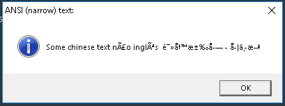
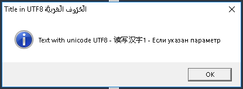
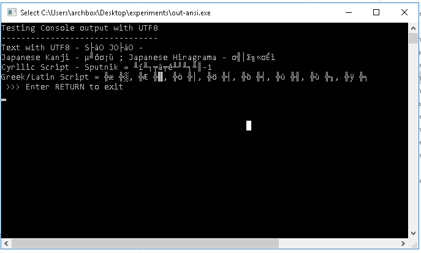
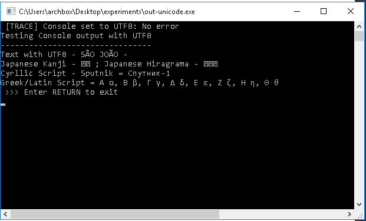
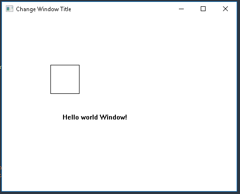
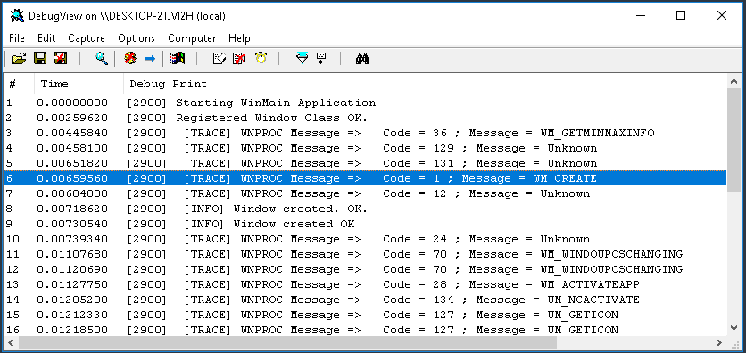
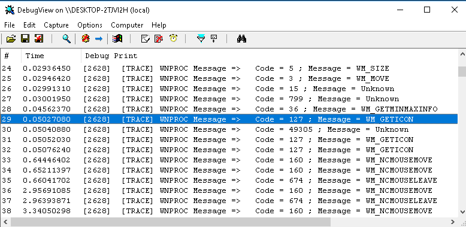
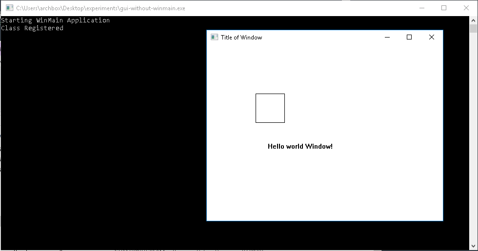

<?xml version="1.0" encoding="utf-8"?>
<!DOCTYPE html PUBLIC "-//W3C//DTD XHTML 1.0 Strict//EN"
"http://www.w3.org/TR/xhtml1/DTD/xhtml1-strict.dtd">
<html xmlns="http://www.w3.org/1999/xhtml" lang="en" xml:lang="en">
<head>
<!-- 2018-12-27 Thu 00:51 -->
<meta http-equiv="Content-Type" content="text/html;charset=utf-8" />
<meta name="viewport" content="width=device-width, initial-scale=1" />
<title>CPP / C++ Notes - Windows API Programming Win32</title>
<meta name="generator" content="Org mode" />
<meta name="description" content="cpp/c++ code examples and demonstrations."
 />
<style type="text/css">
 <!--/*--><![CDATA[/*><!--*/
  .title  { text-align: center;
             margin-bottom: .2em; }
  .subtitle { text-align: center;
              font-size: medium;
              font-weight: bold;
              margin-top:0; }
  .todo   { font-family: monospace; color: red; }
  .done   { font-family: monospace; color: green; }
  .priority { font-family: monospace; color: orange; }
  .tag    { background-color: #eee; font-family: monospace;
            padding: 2px; font-size: 80%; font-weight: normal; }
  .timestamp { color: #bebebe; }
  .timestamp-kwd { color: #5f9ea0; }
  .org-right  { margin-left: auto; margin-right: 0px;  text-align: right; }
  .org-left   { margin-left: 0px;  margin-right: auto; text-align: left; }
  .org-center { margin-left: auto; margin-right: auto; text-align: center; }
  .underline { text-decoration: underline; }
  #postamble p, #preamble p { font-size: 90%; margin: .2em; }
  p.verse { margin-left: 3%; }
  pre {
    border: 1px solid #ccc;
    box-shadow: 3px 3px 3px #eee;
    padding: 8pt;
    font-family: monospace;
    overflow: auto;
    margin: 1.2em;
  }
  pre.src {
    position: relative;
    overflow: visible;
    padding-top: 1.2em;
  }
  pre.src:before {
    display: none;
    position: absolute;
    background-color: white;
    top: -10px;
    right: 10px;
    padding: 3px;
    border: 1px solid black;
  }
  pre.src:hover:before { display: inline;}
  /* Languages per Org manual */
  pre.src-asymptote:before { content: 'Asymptote'; }
  pre.src-awk:before { content: 'Awk'; }
  pre.src-C:before { content: 'C'; }
  /* pre.src-C++ doesn't work in CSS */
  pre.src-clojure:before { content: 'Clojure'; }
  pre.src-css:before { content: 'CSS'; }
  pre.src-D:before { content: 'D'; }
  pre.src-ditaa:before { content: 'ditaa'; }
  pre.src-dot:before { content: 'Graphviz'; }
  pre.src-calc:before { content: 'Emacs Calc'; }
  pre.src-emacs-lisp:before { content: 'Emacs Lisp'; }
  pre.src-fortran:before { content: 'Fortran'; }
  pre.src-gnuplot:before { content: 'gnuplot'; }
  pre.src-haskell:before { content: 'Haskell'; }
  pre.src-hledger:before { content: 'hledger'; }
  pre.src-java:before { content: 'Java'; }
  pre.src-js:before { content: 'Javascript'; }
  pre.src-latex:before { content: 'LaTeX'; }
  pre.src-ledger:before { content: 'Ledger'; }
  pre.src-lisp:before { content: 'Lisp'; }
  pre.src-lilypond:before { content: 'Lilypond'; }
  pre.src-lua:before { content: 'Lua'; }
  pre.src-matlab:before { content: 'MATLAB'; }
  pre.src-mscgen:before { content: 'Mscgen'; }
  pre.src-ocaml:before { content: 'Objective Caml'; }
  pre.src-octave:before { content: 'Octave'; }
  pre.src-org:before { content: 'Org mode'; }
  pre.src-oz:before { content: 'OZ'; }
  pre.src-plantuml:before { content: 'Plantuml'; }
  pre.src-processing:before { content: 'Processing.js'; }
  pre.src-python:before { content: 'Python'; }
  pre.src-R:before { content: 'R'; }
  pre.src-ruby:before { content: 'Ruby'; }
  pre.src-sass:before { content: 'Sass'; }
  pre.src-scheme:before { content: 'Scheme'; }
  pre.src-screen:before { content: 'Gnu Screen'; }
  pre.src-sed:before { content: 'Sed'; }
  pre.src-sh:before { content: 'shell'; }
  pre.src-sql:before { content: 'SQL'; }
  pre.src-sqlite:before { content: 'SQLite'; }
  /* additional languages in org.el's org-babel-load-languages alist */
  pre.src-forth:before { content: 'Forth'; }
  pre.src-io:before { content: 'IO'; }
  pre.src-J:before { content: 'J'; }
  pre.src-makefile:before { content: 'Makefile'; }
  pre.src-maxima:before { content: 'Maxima'; }
  pre.src-perl:before { content: 'Perl'; }
  pre.src-picolisp:before { content: 'Pico Lisp'; }
  pre.src-scala:before { content: 'Scala'; }
  pre.src-shell:before { content: 'Shell Script'; }
  pre.src-ebnf2ps:before { content: 'ebfn2ps'; }
  /* additional language identifiers per "defun org-babel-execute"
       in ob-*.el */
  pre.src-cpp:before  { content: 'C++'; }
  pre.src-abc:before  { content: 'ABC'; }
  pre.src-coq:before  { content: 'Coq'; }
  pre.src-groovy:before  { content: 'Groovy'; }
  /* additional language identifiers from org-babel-shell-names in
     ob-shell.el: ob-shell is the only babel language using a lambda to put
     the execution function name together. */
  pre.src-bash:before  { content: 'bash'; }
  pre.src-csh:before  { content: 'csh'; }
  pre.src-ash:before  { content: 'ash'; }
  pre.src-dash:before  { content: 'dash'; }
  pre.src-ksh:before  { content: 'ksh'; }
  pre.src-mksh:before  { content: 'mksh'; }
  pre.src-posh:before  { content: 'posh'; }
  /* Additional Emacs modes also supported by the LaTeX listings package */
  pre.src-ada:before { content: 'Ada'; }
  pre.src-asm:before { content: 'Assembler'; }
  pre.src-caml:before { content: 'Caml'; }
  pre.src-delphi:before { content: 'Delphi'; }
  pre.src-html:before { content: 'HTML'; }
  pre.src-idl:before { content: 'IDL'; }
  pre.src-mercury:before { content: 'Mercury'; }
  pre.src-metapost:before { content: 'MetaPost'; }
  pre.src-modula-2:before { content: 'Modula-2'; }
  pre.src-pascal:before { content: 'Pascal'; }
  pre.src-ps:before { content: 'PostScript'; }
  pre.src-prolog:before { content: 'Prolog'; }
  pre.src-simula:before { content: 'Simula'; }
  pre.src-tcl:before { content: 'tcl'; }
  pre.src-tex:before { content: 'TeX'; }
  pre.src-plain-tex:before { content: 'Plain TeX'; }
  pre.src-verilog:before { content: 'Verilog'; }
  pre.src-vhdl:before { content: 'VHDL'; }
  pre.src-xml:before { content: 'XML'; }
  pre.src-nxml:before { content: 'XML'; }
  /* add a generic configuration mode; LaTeX export needs an additional
     (add-to-list 'org-latex-listings-langs '(conf " ")) in .emacs */
  pre.src-conf:before { content: 'Configuration File'; }

  table { border-collapse:collapse; }
  caption.t-above { caption-side: top; }
  caption.t-bottom { caption-side: bottom; }
  td, th { vertical-align:top;  }
  th.org-right  { text-align: center;  }
  th.org-left   { text-align: center;   }
  th.org-center { text-align: center; }
  td.org-right  { text-align: right;  }
  td.org-left   { text-align: left;   }
  td.org-center { text-align: center; }
  dt { font-weight: bold; }
  .footpara { display: inline; }
  .footdef  { margin-bottom: 1em; }
  .figure { padding: 1em; }
  .figure p { text-align: center; }
  .inlinetask {
    padding: 10px;
    border: 2px solid gray;
    margin: 10px;
    background: #ffffcc;
  }
  #org-div-home-and-up
   { text-align: right; font-size: 70%; white-space: nowrap; }
  textarea { overflow-x: auto; }
  .linenr { font-size: smaller }
  .code-highlighted { background-color: #ffff00; }
  .org-info-js_info-navigation { border-style: none; }
  #org-info-js_console-label
    { font-size: 10px; font-weight: bold; white-space: nowrap; }
  .org-info-js_search-highlight
    { background-color: #ffff00; color: #000000; font-weight: bold; }
  .org-svg { width: 90%; }
  /*]]>*/-->
</style>
<meta name="viewport" content="width=device-width, minimum-scale=1.0, maximum-scale=1.0" />
<link href="theme/org-nav-theme.css" rel="stylesheet">
<script src="theme/org-nav-theme.js"></script>
<link rel="icon" href="favicon.ico" type="image/vnd.microsoft.icon" />
<script type="text/javascript">
/*
@licstart  The following is the entire license notice for the
JavaScript code in this tag.

Copyright (C) 2012-2018 Free Software Foundation, Inc.

The JavaScript code in this tag is free software: you can
redistribute it and/or modify it under the terms of the GNU
General Public License (GNU GPL) as published by the Free Software
Foundation, either version 3 of the License, or (at your option)
any later version.  The code is distributed WITHOUT ANY WARRANTY;
without even the implied warranty of MERCHANTABILITY or FITNESS
FOR A PARTICULAR PURPOSE.  See the GNU GPL for more details.

As additional permission under GNU GPL version 3 section 7, you
may distribute non-source (e.g., minimized or compacted) forms of
that code without the copy of the GNU GPL normally required by
section 4, provided you include this license notice and a URL
through which recipients can access the Corresponding Source.


@licend  The above is the entire license notice
for the JavaScript code in this tag.
*/
<!--/*--><![CDATA[/*><!--*/
 function CodeHighlightOn(elem, id)
 {
   var target = document.getElementById(id);
   if(null != target) {
     elem.cacheClassElem = elem.className;
     elem.cacheClassTarget = target.className;
     target.className = "code-highlighted";
     elem.className   = "code-highlighted";
   }
 }
 function CodeHighlightOff(elem, id)
 {
   var target = document.getElementById(id);
   if(elem.cacheClassElem)
     elem.className = elem.cacheClassElem;
   if(elem.cacheClassTarget)
     target.className = elem.cacheClassTarget;
 }
/*]]>*///-->
</script>
<script type="text/x-mathjax-config">
    MathJax.Hub.Config({
        displayAlign: "center",
        displayIndent: "2em",

        "HTML-CSS": { scale: 100,
                        linebreaks: { automatic: "%LINEBREAKS" },
                        webFont: "%FONT"
                       },
        SVG: {scale: 100,
              linebreaks: { automatic: "%LINEBREAKS" },
              font: "%FONT"},
        NativeMML: {scale: 100},
        TeX: { equationNumbers: {autoNumber: "%AUTONUMBER"},
               MultLineWidth: "%MULTLINEWIDTH",
               TagSide: "%TAGSIDE",
               TagIndent: "%TAGINDENT"
             }
});
</script>
<script type="text/javascript"
        src="theme/MathJax/MathJax.js"></script>
</head>
<body>
<div id="content">
<h1 class="title">CPP / C++ Notes - Windows API Programming Win32</h1>
<div id="table-of-contents">
<h2>Table of Contents</h2>
<div id="text-table-of-contents">
<ul>
<li><a href="#orgf16de07">1. Windows API Programming Win32</a>
<ul>
<li><a href="#org4dce857">1.1. Overview</a></li>
<li><a href="#org1622e6c">1.2. Idiosincrasies</a></li>
<li><a href="#org2052f7f">1.3. Windows API Main Header Files</a></li>
<li><a href="#org4c3483f">1.4. Windows API Runtime Libraries</a></li>
<li><a href="#org325f94e">1.5. WinAPI C Data Types</a>
<ul>
<li><a href="#orga7108e9">1.5.1. Hungarian Notation</a></li>
<li><a href="#orgc7064c2">1.5.2. General Terminology</a></li>
<li><a href="#orgced70c8">1.5.3. Common Data Types</a></li>
<li><a href="#orge9559a0">1.5.4. Other data types</a></li>
<li><a href="#orgcf8fd79">1.5.5. References</a></li>
</ul>
</li>
<li><a href="#orga428f52">1.6. SAL - Source Code Annotation Language</a></li>
<li><a href="#orge118369">1.7. Character Encoding in WinAPI - ANSI x utf8 x utf16 (wchar_t)</a>
<ul>
<li><a href="#orgd2d40db">1.7.1. Overview</a></li>
<li><a href="#orgc6a5fe4">1.7.2. Unicode UTF8 X Wide Unicode C-strign functions</a></li>
<li><a href="#org18ec618">1.7.3. Example - ANSI X Unicode and Windows API</a></li>
<li><a href="#orga29cd4f">1.7.4. Example - Using Windows API with UTF8</a></li>
<li><a href="#orga77da45">1.7.5. Example - Setting Console to UTF8</a></li>
</ul>
</li>
<li><a href="#orgfba8b49">1.8. CODE - Display information about current process</a></li>
<li><a href="#orga9df3d0">1.9. CODE - List processes</a></li>
<li><a href="#org9804a29">1.10. CODE - Show all DLLs or modules load by a process</a></li>
<li><a href="#org6e63dfd">1.11. CODE - List directory files</a></li>
<li><a href="#orged5d4f1">1.12. CODE - Enumerate Logical Drivers</a></li>
<li><a href="#org73415f9">1.13. CODE - Launching and controlling sub-processes</a></li>
<li><a href="#org39ba043">1.14. Windows Socket - Winsock</a>
<ul>
<li><a href="#orgc24d98f">1.14.1. Overview</a></li>
<li><a href="#orgb3cfded">1.14.2. CODE - Show IPv4 address of a hostname</a></li>
<li><a href="#orga3f955b">1.14.3. CODE - Basic Socket Client</a></li>
<li><a href="#org39eed21">1.14.4. WinlNet and UrlMon - Windows high level APIs for HTTP and FTP protocol</a></li>
</ul>
</li>
<li><a href="#org4a5abd6">1.15. Graphical User Interfaces - WinAPI</a>
<ul>
<li><a href="#orgf1b6605">1.15.1. Minimal GUI Program - "hello world"</a></li>
<li><a href="#orgcc4a04f">1.15.2. GUI Without WinMain</a></li>
</ul>
</li>
<li><a href="#orgef23004">1.16. Loading DLLs - shared libraries at runtime</a>
<ul>
<li><a href="#org62accc3">1.16.1. Example 1 - Basic Dynamic Loading</a></li>
<li><a href="#orgec3b091">1.16.2. Example 2 - Dynamic loading using a class</a></li>
</ul>
</li>
<li><a href="#orge4df65f">1.17. Install Building Tools and Compilers</a>
<ul>
<li><a href="#org573fbd2">1.17.1. Install C++ Compilers</a></li>
<li><a href="#orgbb4be5e">1.17.2. Install IDEs and Text Editors</a></li>
<li><a href="#orgebcceda">1.17.3. Install Other Tools</a></li>
<li><a href="#org5a99bae">1.17.4. Windows Configurations</a></li>
</ul>
</li>
<li><a href="#org6e42e86">1.18. WINAPI Map</a>
<ul>
<li><a href="#org655b9d4">1.18.1. Misc.</a></li>
<li><a href="#org6a74876">1.18.2. Header Files</a></li>
<li><a href="#orgddeb107">1.18.3. Common HRESULT values</a></li>
<li><a href="#org62d438d">1.18.4. Typedefs</a></li>
<li><a href="#orgef5ccde">1.18.5. Console</a></li>
<li><a href="#orgf7f14a2">1.18.6. Memory Allocation</a></li>
<li><a href="#org9734144">1.18.7. File</a></li>
<li><a href="#org7c09ae5">1.18.8. Handle - Kernel "Objects"</a></li>
<li><a href="#orgb3e94fa">1.18.9. Process Creation</a></li>
<li><a href="#org8e307df">1.18.10. Process Information</a></li>
<li><a href="#orgad7accd">1.18.11. Process Manipulation</a></li>
<li><a href="#orgef9b581">1.18.12. GUI _ Graphical User Interface</a></li>
<li><a href="#org5dbe2bf">1.18.13. Dynamic Linking or Runtime Linking</a></li>
</ul>
</li>
<li><a href="#org1dd0f09">1.19. Books</a></li>
</ul>
</li>
</ul>
</div>
</div>
<ul class="org-ul">
<li><a href='index.html'>Index</a></li>
</ul>

<div id="outline-container-orgf16de07" class="outline-2">
<h2 id="orgf16de07"><span class="section-number-2">1</span> Windows API Programming Win32</h2>
<div class="outline-text-2" id="text-1">
</div>
<div id="outline-container-org4dce857" class="outline-3">
<h3 id="org4dce857"><span class="section-number-3">1.1</span> Overview</h3>
<div class="outline-text-3" id="text-1-1">
<p>
The Windows API is very low level and obviously-Windows only,
therefore it makes sense in most of cases to take advantage of higher
libraries which encapsulates this API in a C++-friendly. Some of those
libraries are: 
</p>

<p>
Windows Only - Microsft:
</p>

<ul class="org-ul">
<li><a href="https://docs.microsoft.com/en-us/cpp/mfc/mfc-and-atl?view=vs-2017">MFC</a> - Microsoft Foundation Classes</li>
<li><a href="https://docs.microsoft.com/en-us/cpp/atl/atl-com-desktop-components?view=vs-2017">ATL</a> - Active Template Library</li>
</ul>

<p>
Windows Only - Third party.
</p>

<ul class="org-ul">
<li><a href="https://en.wikipedia.org/wiki/Windows_Template_Library">WTL</a> - Windows Template Library - Created by Microsft and later
become opensourced at 2004.
<ul class="org-ul">
<li>Web site: <a href="http://wtl.sourceforge.net/">http://wtl.sourceforge.net/</a></li>
</ul></li>

<li><a href="http://win32-framework.sourceforge.net/">Win32++</a> - "Win32++ is a C++ library used to build windows
applications. Win32++ is a free alternative to MFC. It has the
added advantage of being able to run on a wide range of free
compilers, including Visual Studio Community, and the MinGW
compiler provided with CodeBlocks and Dev-C++."</li>
</ul>

<p>
Cross-Platform: 
</p>

<ul class="org-ul">
<li><a href="https://en.wikipedia.org/wiki/Qt_(software)">QT Framework</a> - QT is not only a cross platform GUI library, it
also provides all sort of cross platform libraries for databases,
sockets, text parsing, OpenGL, XML and so on. 
<ul class="org-ul">
<li>Supported on: Windows, MacOSX, Linux, Android, iOS and many other
operating systems.</li>
</ul></li>

<li><a href="https://en.wikipedia.org/wiki/WxWidgets">wxWidgets</a> - Just a well known GUI library.
<ul class="org-ul">
<li>Supported on: Windows, Linux, OSX.</li>
</ul></li>

<li><a href="https://pocoproject.org/docs/">Poco - Framework</a> - A collection of cross-platform libraries
for network: HTTP protocol, FTP, ICMP; database access - SQLite,
MySQL, ODBC and MongoDB; Standardized human-readable data exchange
formats - JSON  and XML; Zip compression; SSL and crypto utils.
<ul class="org-ul">
<li>See: <a href="https://en.wikipedia.org/wiki/POCO_C++_Libraries">POCO C++ Libraries - Wikipedia</a></li>
</ul></li>
</ul>
</div>
</div>

<div id="outline-container-org1622e6c" class="outline-3">
<h3 id="org1622e6c"><span class="section-number-3">1.2</span> Idiosincrasies</h3>
<div class="outline-text-3" id="text-1-2">
<ul class="org-ul">
<li>Hungarian Notation</li>

<li>Non standard types:
<ul class="org-ul">
<li>LPSTRING, WORD, DWORD, BOOL, LPVOID &#x2026;</li>
</ul></li>

<li>Paths: Unlike in U*nix-like operating systems which are written
with (/) forward slash, in Windows paths  are written with
backward slash (\) needs to be escaped with double backward slash (\\)
since is slash is used for escape characters such as CR <code>\n</code>, <code>\s</code> and
so on. Thus, a Windows path such as <code>"C:\Users\sombody\file.exe"</code> must be
written as "C:\\Users\\sombody\\file.exe".</li>

<li>Different Calling Conventions in the same OS: 
<ul class="org-ul">
<li><code>__stdcall</code></li>
<li><code>__cdecl</code></li>
<li><code>__fastcall</code></li>
</ul></li>

<li>Characters - ANSI X Unicode in API. 
<ul class="org-ul">
<li>Windows API uses 16-bits Unicode wide characters (wchar_t) instead
of 8 bits Unicode UTF-8 which is common in most modern Unix-like
Oses such as Linux, BSD and MacOSX.</li>

<li>Windows API functions generally has two versions, an ANSI
version with suffix 'A' and a wide unicode version with suffix
'W'. For instance the API <span class="underline">CreateDirectory</span>, has an ANSI version (which uses char)
and does not work with UTF8 characteres such as 'ã', 'õ', 'ç', '
我', 'Ж' and so on. And an wide unicode version using wide
character (wchar_t) CreateDirectoryW.</li>
</ul></li>

<li>Many string types</li>

<li>Many C-runtimes and entry points.</li>

<li>Functions has many parameters which makes them pretty complex. The
only way to understand the API is to compile and run small
specific examples.</li>

<li>Not all system calls are documented like open source OSes such as
Linux or BSD.</li>
</ul>
</div>
</div>

<div id="outline-container-org2052f7f" class="outline-3">
<h3 id="org2052f7f"><span class="section-number-3">1.3</span> Windows API Main Header Files</h3>
<div class="outline-text-3" id="text-1-3">
<p>
Most used headers: 
</p>

<ul class="org-ul">
<li>#include &lt;windows.h&gt;</li>
<li>#include &lt;wchar.h&gt; - Wide Characters - UTF16 chars</li>
<li>#include &lt;tchar.h&gt;</li>
<li>#include &lt;global.h&gt;</li>
<li>#include &lt;nsfbd.h&gt;</li>
</ul>

<p>
Other useful header files: 
</p>

<ul class="org-ul">
<li>windows.h
<ul class="org-ul">
<li>Basic header file of Windows API</li>
</ul></li>
<li>WinError.h
<ul class="org-ul">
<li>Error codes and strings</li>
</ul></li>
<li>tchar.h
<ul class="org-ul">
<li>Provides the macro _T(&#x2026;) and TEXT(&#x2026;) for Unicode/ANSI string
encoding handling.</li>
</ul></li>
<li>wchar.h
<ul class="org-ul">
<li>Wide Character - UTF16 or wchar</li>
</ul></li>
<li>global.h</li>
<li>ntfsb.h</li>
<li>Winsock2.h
<ul class="org-ul">
<li>Network sockets</li>
</ul></li>
<li>Winbase.h
<ul class="org-ul">
<li>Windows types definitions</li>
</ul></li>
<li>WinUser.h
<ul class="org-ul">
<li>Windows Messages</li>
</ul></li>
<li>ShellAPI.h
<ul class="org-ul">
<li>Shell API</li>
</ul></li>
<li>ShFolder.h
<ul class="org-ul">
<li>Folder definitions</li>
</ul></li>
<li>Commdlg.h
<ul class="org-ul">
<li>Commom Controls (COM based)</li>
</ul></li>
<li>Dlgs.h
<ul class="org-ul">
<li>Dialog definitions</li>
</ul></li>
<li>IUnknown.h
<ul class="org-ul">
<li>COM header</li>
</ul></li>
<li>conio.h
<ul class="org-ul">
<li>Console Input/Output functions - it is heritage grom MSDOS.</li>
</ul></li>
</ul>
</div>
</div>

<div id="outline-container-org4c3483f" class="outline-3">
<h3 id="org4c3483f"><span class="section-number-3">1.4</span> Windows API Runtime Libraries</h3>
<div class="outline-text-3" id="text-1-4">
<ul class="org-ul">
<li>kernel32.dll
<ul class="org-ul">
<li>Low level NTDLL wrappers.</li>
</ul></li>
<li>user32.dll
<ul class="org-ul">
<li>User interface primitives used by graphical programs with menus,
toolboxes, prompts, windows ..</li>
</ul></li>
<li>shell.dll
<ul class="org-ul">
<li></li>
</ul></li>
<li>gdi32.dll
<ul class="org-ul">
<li>Basic drawing primitives.</li>
</ul></li>
<li>ole32.dll</li>
<li>MSVCRT.DLL
<ul class="org-ul">
<li>Implementation of the C standard library stdlib.</li>
</ul></li>
<li>advapi.dll
<ul class="org-ul">
<li>Contains functions for system-related tasks such as registry and
registry handling.</li>
</ul></li>
<li><code>WS_32.DLL</code>
<ul class="org-ul">
<li>Winsock2 library contains a socket implementation.</li>
</ul></li>
<li>Ntdll.dll
<ul class="org-ul">
<li>Interface to Kernel. Not used by Windows programs directly.</li>
</ul></li>
<li>Wininet.dll
<ul class="org-ul">
<li>Provides high level network APIs, for instance, HttpOpenRequest,
FtpGetFile &#x2026;</li>
</ul></li>
</ul>
</div>
</div>
<div id="outline-container-org325f94e" class="outline-3">
<h3 id="org325f94e"><span class="section-number-3">1.5</span> WinAPI C Data Types</h3>
<div class="outline-text-3" id="text-1-5">
</div>
<div id="outline-container-orga7108e9" class="outline-4">
<h4 id="orga7108e9"><span class="section-number-4">1.5.1</span> Hungarian Notation</h4>
<div class="outline-text-4" id="text-1-5-1">
<p>
Windows API uses the Hungarian notation which was intruduced by
Charles Simonyi at Microsoft and Xerox PARC. This notation uses a
prefix to denote the variable type.
</p>

<p>
Notes and remarks:
</p>

<ul class="org-ul">
<li>Many sources advises against this notation and nowadays many IDEs
can provide a variable type by just hovering the mouse over it.</li>

<li>Understanding the notation can help to reason about the Windows
API.</li>

<li>The HN notation is not standardized.</li>
</ul>

<p>
Form: 
</p>

<div class="org-src-container">
<pre class="src src-text">TYPE-PREFIX + NAME + QUALIFIER 
</pre>
</div>


<table border="2" cellspacing="0" cellpadding="6" rules="groups" frame="hsides">


<colgroup>
<col  class="org-left" />

<col  class="org-left" />

<col  class="org-left" />

<col  class="org-left" />
</colgroup>
<thead>
<tr>
<th scope="col" class="org-left">Prefix</th>
<th scope="col" class="org-left">Type</th>
<th scope="col" class="org-left">Description</th>
<th scope="col" class="org-left">Variable Name Example</th>
</tr>
</thead>
<tbody>
<tr>
<td class="org-left">b</td>
<td class="org-left">BYTE or BOOL</td>
<td class="org-left">boolean</td>
<td class="org-left">BOOL bFlag; BOOL bIsOnFocus</td>
</tr>

<tr>
<td class="org-left">c</td>
<td class="org-left">char</td>
<td class="org-left">Character - 1 byte</td>
<td class="org-left">char cLetter</td>
</tr>

<tr>
<td class="org-left">w</td>
<td class="org-left">WORD</td>
<td class="org-left">word</td>
<td class="org-left">&#xa0;</td>
</tr>

<tr>
<td class="org-left">dw</td>
<td class="org-left">DWORD</td>
<td class="org-left">double word</td>
<td class="org-left">&#xa0;</td>
</tr>

<tr>
<td class="org-left">i</td>
<td class="org-left">int</td>
<td class="org-left">integer</td>
<td class="org-left">int iNumberOfNodes</td>
</tr>

<tr>
<td class="org-left">u32</td>
<td class="org-left">unsigned [int]</td>
<td class="org-left">unsigned integer</td>
<td class="org-left">unsigned u32Nodes</td>
</tr>

<tr>
<td class="org-left">f or fp</td>
<td class="org-left">float</td>
<td class="org-left">float point - single precision</td>
<td class="org-left">fInterestRate</td>
</tr>

<tr>
<td class="org-left">d</td>
<td class="org-left">double</td>
<td class="org-left">float point - double precision</td>
<td class="org-left">dRateOfReturn</td>
</tr>

<tr>
<td class="org-left">n</td>
<td class="org-left">&#xa0;</td>
<td class="org-left">short int</td>
<td class="org-left">&#xa0;</td>
</tr>

<tr>
<td class="org-left">&#xa0;</td>
<td class="org-left">&#xa0;</td>
<td class="org-left">&#xa0;</td>
<td class="org-left">&#xa0;</td>
</tr>

<tr>
<td class="org-left">sz</td>
<td class="org-left">char* or const char*</td>
<td class="org-left">Pointer to null terminated char array.</td>
<td class="org-left">char* szButtonLabel</td>
</tr>

<tr>
<td class="org-left">&#xa0;</td>
<td class="org-left">&#xa0;</td>
<td class="org-left">&#xa0;</td>
<td class="org-left">&#xa0;</td>
</tr>

<tr>
<td class="org-left">H</td>
<td class="org-left">HANDLE</td>
<td class="org-left">Handle</td>
<td class="org-left">HANDLE hModule; HMODULE hInstance;</td>
</tr>

<tr>
<td class="org-left">p</td>
<td class="org-left">-</td>
<td class="org-left">Pointer</td>
<td class="org-left">double* pdwMyPointer;</td>
</tr>

<tr>
<td class="org-left">lp</td>
<td class="org-left">-</td>
<td class="org-left">Long Pointer</td>
<td class="org-left">int* lpiPointer;</td>
</tr>

<tr>
<td class="org-left">fn</td>
<td class="org-left">-</td>
<td class="org-left">Function pointer</td>
<td class="org-left">&#xa0;</td>
</tr>

<tr>
<td class="org-left">lpsz</td>
<td class="org-left">&#xa0;</td>
<td class="org-left">Long Pointer</td>
<td class="org-left">&#xa0;</td>
</tr>

<tr>
<td class="org-left">LP</td>
<td class="org-left">&#xa0;</td>
<td class="org-left">Long Pointer</td>
<td class="org-left">&#xa0;</td>
</tr>

<tr>
<td class="org-left">&#xa0;</td>
<td class="org-left">&#xa0;</td>
<td class="org-left">&#xa0;</td>
<td class="org-left">&#xa0;</td>
</tr>
</tbody>
<tbody>
<tr>
<td class="org-left">I</td>
<td class="org-left">-</td>
<td class="org-left">Interface (C++ interface class)</td>
<td class="org-left">class IDrawable &#x2026;</td>
</tr>

<tr>
<td class="org-left">S</td>
<td class="org-left">-</td>
<td class="org-left">Struct declaration</td>
<td class="org-left">struct SContext { &#x2026; }</td>
</tr>

<tr>
<td class="org-left">C</td>
<td class="org-left">-</td>
<td class="org-left">Class declaration</td>
<td class="org-left">class CUserData{ &#x2026; }</td>
</tr>

<tr>
<td class="org-left">m_</td>
<td class="org-left">-</td>
<td class="org-left">Private member variable name of some class</td>
<td class="org-left">m_pszFileName</td>
</tr>

<tr>
<td class="org-left">s_</td>
<td class="org-left">-</td>
<td class="org-left">Static member of a class</td>
<td class="org-left">static int s_iObjectCount</td>
</tr>

<tr>
<td class="org-left">&#xa0;</td>
<td class="org-left">&#xa0;</td>
<td class="org-left">&#xa0;</td>
<td class="org-left">&#xa0;</td>
</tr>
</tbody>
</table>

<p>
Examples in Windows API - Function Create Process:
</p>

<div class="org-src-container">
<pre class="src src-cpp">BOOL <span class="org-type">WINAPI</span> <span class="org-function-name">CreateProcess</span><span class="org-rainbow-delimiters-depth-1">(</span>
  _In_opt_    <span class="org-type">LPCTSTR</span>               <span class="org-variable-name">lpApplicationName</span>,      <span class="org-comment-delimiter">// </span><span class="org-comment">const char*</span>
  _Inout_opt_ <span class="org-type">LPTSTR</span>                <span class="org-variable-name">lpCommandLine</span>,          <span class="org-comment-delimiter">// </span><span class="org-comment">char*</span>
  _In_opt_    <span class="org-type">LPSECURITY_ATTRIBUTES</span> <span class="org-variable-name">lpProcessAttributes</span>,
  _In_opt_    <span class="org-type">LPSECURITY_ATTRIBUTES</span> <span class="org-variable-name">lpThreadAttributes</span>,     <span class="org-comment-delimiter">// </span>
  _In_        <span class="org-type">BOOL</span>                  <span class="org-variable-name">bInheritHandles</span>,
  _In_        <span class="org-type">DWORD</span>                 <span class="org-variable-name">dwCreationFlags</span>,
  _In_opt_    <span class="org-type">LPVOID</span>                <span class="org-variable-name">lpEnvironment</span>,
  _In_opt_    <span class="org-type">LPCTSTR</span>               <span class="org-variable-name">lpCurrentDirectory</span>,
  _In_        <span class="org-type">LPSTARTUPINFO</span>         <span class="org-variable-name">lpStartupInfo</span>,
  _Out_       <span class="org-type">LPPROCESS_INFORMATION</span> <span class="org-variable-name">lpProcessInformation</span>
<span class="org-rainbow-delimiters-depth-1">)</span>;
</pre>
</div>

<ul class="org-ul">
<li>dwCreationFlags =&gt; (dw) prefix Indicates that the variable is a
DWORD (int)</li>

<li>lpEnvironment =&gt; (lp - Long Pointer) Indicates that variable is a
void pointer =&gt; (LPVOID = void* )</li>

<li>lpApplicationName =&gt; Indicates that the variable is a pointer to
char or (LPCSTR = const char*)</li>
</ul>


<p>
Furthere Reading: 
</p>

<ul class="org-ul">
<li><b>Coding Conventions: The Hungarian Notation</b>
<ul class="org-ul">
<li><a href="http://cws.cengage.co.uk/rautenbach/students/ancillary_content/hungarian_notation.pdf">http://cws.cengage.co.uk/rautenbach/students/ancillary_content/hungarian_notation.pdf</a></li>
</ul></li>

<li><b>Why I prefer to use the Hungarian Notation</b>
<ul class="org-ul">
<li><a href="https://tommcfarlin.com/hungarian-notation/">https://tommcfarlin.com/hungarian-notation/</a></li>
</ul></li>

<li>Hungarian Notation
<ul class="org-ul">
<li><a href="https://www.reactos.org/wiki/Hungarian_Notation">https://www.reactos.org/wiki/Hungarian_Notation</a></li>
</ul></li>

<li><a href="https://jakewharton.com/just-say-no-to-hungarian-notation/">Just Say mNo to Hungarian Notation - Jake Wharton</a></li>

<li><a href="http://wiki.c2.com/?HungarianNotation">Hungarian Notation</a></li>

<li>Hungarian Notation
<ul class="org-ul">
<li><a href="https://en.wikipedia.org/wiki/Hungarian_notation">https://en.wikipedia.org/wiki/Hungarian_notation</a></li>
</ul></li>
</ul>
</div>
</div>

<div id="outline-container-orgc7064c2" class="outline-4">
<h4 id="orgc7064c2"><span class="section-number-4">1.5.2</span> General Terminology</h4>
<div class="outline-text-4" id="text-1-5-2">
<ul class="org-ul">
<li><span class="underline">Handle</span> - Is a unsigned integer number assigned to processes,
windows, buttons, resources and etc. Actually, it is an opaque
pointer to some system data structure (Kernel Object), similar to
Unix's file descriptor pointer. The purpose of using handles or
opaque pointer is to hide the implementation of those data
structures allowing implementators to change their inner working
without disrupting application developers. This approach gives a
pseudo object-oriented interface to the Windows API. See also:

<ul class="org-ul">
<li><span class="underline">Note</span>: A handle can be an <span class="underline">obfuscated pointer</span> exposed as an
integer, void pointer void* (also opaque pointer) or ordinary
opaque pointer (pointer to a C-struct or class which
implementation is not exposed).</li>
</ul></li>

<li><span class="underline">Types of Kernel Objects</span> (Handle is a numeric value related to the
pointer to kernel object C-struct). The name "object" comes from
the idea that it is possible to access the kernel data structure
pointer by the handle using the Win32 API functions. It works in a
similar way to classical object oriented programming where the data
structure and internal representation can only be accessed by the
class methodos. 
<ul class="org-ul">
<li>Symbolic Link</li>
<li>Process
<ul class="org-ul">
<li>A running program, executable. A process has its own address
space, data, stack and heap.</li>
</ul></li>
<li>Job
<ul class="org-ul">
<li>Group of processes managed as group.</li>
</ul></li>
<li>File
<ul class="org-ul">
<li>Open file or I/O device.</li>
</ul></li>
<li>Token
<ul class="org-ul">
<li>Security token used by many Win32 functions.</li>
</ul></li>
<li>Event
<ul class="org-ul">
<li>Synchronization object used for notification.</li>
</ul></li>
<li>Threads
<ul class="org-ul">
<li>Smallest unit of execution within a process.</li>
</ul></li>
<li>Semaphore</li>
<li>Mutex</li>
<li>Timer
<ul class="org-ul">
<li>Object which provides notification after a certain period is
elapsed.</li>
</ul></li>
</ul></li>
</ul>

<p>
References:
</p>

<ul class="org-ul">
<li><a href="https://en.wikipedia.org/wiki/Opaque_pointer">Opaque pointer - Wikipedia</a> - Note: Opaque pointer is also called
"handle classes", "pimpl idiom", "Compiler-firewall", "d-pointer" in C++.</li>
<li><a href="https://en.wikipedia.org/wiki/Handle_(computing)">Handle (computing) - Wikipedia</a></li>
<li><a href="https://stackoverflow.com/questions/2334966/win32-application-arent-so-object-oriented-and-why-there-are-so-many-pointers">c++ - win32 application aren't so object oriented and why there are so many pointers? - Stack Overflow</a></li>
<li><a href="https://dmitryfrank.com/articles/oop_in_c">Object-oriented techniques in C Dmitry Frank</a></li>
<li><a href="https://lwn.net/Articles/444910/">Object-oriented design patterns in the kernel, part 1 </a></li>
</ul>
</div>
</div>
<div id="outline-container-orgced70c8" class="outline-4">
<h4 id="orgced70c8"><span class="section-number-4">1.5.3</span> Common Data Types</h4>
<div class="outline-text-4" id="text-1-5-3">
<table border="2" cellspacing="0" cellpadding="6" rules="groups" frame="hsides">


<colgroup>
<col  class="org-left" />

<col  class="org-left" />

<col  class="org-left" />
</colgroup>
<thead>
<tr>
<th scope="col" class="org-left">Data Type</th>
<th scope="col" class="org-left">Definition</th>
<th scope="col" class="org-left">Description</th>
</tr>
</thead>
<tbody>
<tr>
<td class="org-left">BOOL</td>
<td class="org-left">typedef int BOOL</td>
<td class="org-left">Boolean variable true (non zero) or false (zero or 0)</td>
</tr>

<tr>
<td class="org-left">BYTE</td>
<td class="org-left">typedef unsigned char BYTE</td>
<td class="org-left">A byte, 8 bits.</td>
</tr>

<tr>
<td class="org-left">CCHAR</td>
<td class="org-left">typedef char CHAR</td>
<td class="org-left">An 8-bit Windows (ANSI) character.</td>
</tr>

<tr>
<td class="org-left">&#xa0;</td>
<td class="org-left">&#xa0;</td>
<td class="org-left">&#xa0;</td>
</tr>

<tr>
<td class="org-left">DWORD</td>
<td class="org-left">typedef unsigned long DWORD</td>
<td class="org-left">A 32-bit unsigned integer. The range is 0 through 4294967295 decimal.</td>
</tr>

<tr>
<td class="org-left">DWORDLONG</td>
<td class="org-left">typedef unsigned __int64 DWORDLONG</td>
<td class="org-left">64 bits usigned int.</td>
</tr>

<tr>
<td class="org-left">DWORD32</td>
<td class="org-left">typedef unsigned int DWORD32</td>
<td class="org-left">A 32-bit unsigned integer.</td>
</tr>

<tr>
<td class="org-left">DWORD64</td>
<td class="org-left">typedef unsigned __int64 DWORD64</td>
<td class="org-left">A 64-bit unsigned integer.</td>
</tr>

<tr>
<td class="org-left">&#xa0;</td>
<td class="org-left">&#xa0;</td>
<td class="org-left">&#xa0;</td>
</tr>

<tr>
<td class="org-left">&#xa0;</td>
<td class="org-left">&#xa0;</td>
<td class="org-left">&#xa0;</td>
</tr>

<tr>
<td class="org-left">FLOAT</td>
<td class="org-left">typedef float FLOAT</td>
<td class="org-left">A floating-point variable.</td>
</tr>

<tr>
<td class="org-left">&#xa0;</td>
<td class="org-left">&#xa0;</td>
<td class="org-left">&#xa0;</td>
</tr>

<tr>
<td class="org-left">INT8</td>
<td class="org-left">typedef signed char INT8</td>
<td class="org-left">An 8-bit signed integer.</td>
</tr>

<tr>
<td class="org-left">INT16</td>
<td class="org-left">typedef signed short INT16</td>
<td class="org-left">A 16-bit signed integer.</td>
</tr>

<tr>
<td class="org-left">INT32</td>
<td class="org-left">typedef signed int INT32</td>
<td class="org-left">A 32-bit signed integer. The range is -2147483648 through 2147483647 decimal.</td>
</tr>

<tr>
<td class="org-left">INT64</td>
<td class="org-left">typedef signed __int64 INT64</td>
<td class="org-left">A 64-bit signed integer.</td>
</tr>

<tr>
<td class="org-left">&#xa0;</td>
<td class="org-left">&#xa0;</td>
<td class="org-left">&#xa0;</td>
</tr>

<tr>
<td class="org-left">&#xa0;</td>
<td class="org-left">&#xa0;</td>
<td class="org-left">&#xa0;</td>
</tr>

<tr>
<td class="org-left">LPBOOL</td>
<td class="org-left">typedef BOOL far *LPBOOL;</td>
<td class="org-left">A pointer to a BOOL.</td>
</tr>

<tr>
<td class="org-left">LPBYTE</td>
<td class="org-left">typedef BYTE far *LPBYTE</td>
<td class="org-left">A pointer to a BYTE.</td>
</tr>

<tr>
<td class="org-left">LPCSTR, PCSTR</td>
<td class="org-left">typedef __nullterminated CONST CHAR *LPCSTR</td>
<td class="org-left">pointer to a constant null-terminated string of 8-bit Windows (ANSI) characters.</td>
</tr>

<tr>
<td class="org-left">LPCVOID</td>
<td class="org-left">typedef CONST void *LPCVOID;</td>
<td class="org-left">A pointer to a constant of any type.</td>
</tr>

<tr>
<td class="org-left">LPCWSTR, PCWSTR</td>
<td class="org-left">typedef CONST WCHAR *LPCWSTR;</td>
<td class="org-left">A pointer to a constant null-terminated string of 16-bit Unicode characters.</td>
</tr>

<tr>
<td class="org-left">LPDWORD</td>
<td class="org-left">typedef DWORD *LPDWORD</td>
<td class="org-left">A pointer to a DWORD.</td>
</tr>

<tr>
<td class="org-left">LPSTR</td>
<td class="org-left">typedef CHAR *LPSTR;</td>
<td class="org-left">A pointer to a null-terminated string of 8-bit Windows (ANSI) characters.</td>
</tr>

<tr>
<td class="org-left">LPTSTR</td>
<td class="org-left">&#xa0;</td>
<td class="org-left">An LPWSTR if UNICODE is defined, an LPSTR otherwise.</td>
</tr>

<tr>
<td class="org-left">LPWSTR</td>
<td class="org-left">typedef WCHAR *LPWSTR;</td>
<td class="org-left">A pointer to a null-terminated string of 16-bit Unicode characters.</td>
</tr>

<tr>
<td class="org-left">PCHAR</td>
<td class="org-left">typedef CHAR *PCHAR;</td>
<td class="org-left">A pointer to a CHAR.</td>
</tr>

<tr>
<td class="org-left">&#xa0;</td>
<td class="org-left">&#xa0;</td>
<td class="org-left">&#xa0;</td>
</tr>

<tr>
<td class="org-left">CHAR</td>
<td class="org-left">ANSI Char or char</td>
<td class="org-left">&#xa0;</td>
</tr>

<tr>
<td class="org-left">WCHAR</td>
<td class="org-left">Wide character 16 bits UTF16</td>
<td class="org-left">&#xa0;</td>
</tr>

<tr>
<td class="org-left">TCHAR</td>
<td class="org-left">-</td>
<td class="org-left">A WCHAR if UNICODE is defined, a CHAR otherwise.</td>
</tr>

<tr>
<td class="org-left">UCHAR</td>
<td class="org-left">typedef unsigned char UCHAR;</td>
<td class="org-left">An unsigned CHAR.</td>
</tr>

<tr>
<td class="org-left">&#xa0;</td>
<td class="org-left">&#xa0;</td>
<td class="org-left">&#xa0;</td>
</tr>

<tr>
<td class="org-left">WPARAM</td>
<td class="org-left">typedef UINT_PTR WPARAM;</td>
<td class="org-left">A message parameter.</td>
</tr>

<tr>
<td class="org-left">&#xa0;</td>
<td class="org-left">&#xa0;</td>
<td class="org-left">&#xa0;</td>
</tr>

<tr>
<td class="org-left">&#xa0;</td>
<td class="org-left">&#xa0;</td>
<td class="org-left">&#xa0;</td>
</tr>
</tbody>
</table>
</div>
</div>
<div id="outline-container-orge9559a0" class="outline-4">
<h4 id="orge9559a0"><span class="section-number-4">1.5.4</span> Other data types</h4>
<div class="outline-text-4" id="text-1-5-4">
<table border="2" cellspacing="0" cellpadding="6" rules="groups" frame="hsides">


<colgroup>
<col  class="org-left" />

<col  class="org-left" />
</colgroup>
<thead>
<tr>
<th scope="col" class="org-left">&#xa0;</th>
<th scope="col" class="org-left">&#xa0;</th>
</tr>
</thead>
<tbody>
<tr>
<td class="org-left">&#xa0;</td>
<td class="org-left">&#xa0;</td>
</tr>

<tr>
<td class="org-left">HANDLE</td>
<td class="org-left">32 bits integer used as a handle</td>
</tr>

<tr>
<td class="org-left">HDC</td>
<td class="org-left">Handle to device context</td>
</tr>

<tr>
<td class="org-left">HWND</td>
<td class="org-left">32-bit unsigned integer used as handle to a window</td>
</tr>

<tr>
<td class="org-left">LONG</td>
<td class="org-left">&#xa0;</td>
</tr>

<tr>
<td class="org-left">LPARAM</td>
<td class="org-left">&#xa0;</td>
</tr>

<tr>
<td class="org-left">LPSTR</td>
<td class="org-left">&#xa0;</td>
</tr>

<tr>
<td class="org-left">LPVOID</td>
<td class="org-left">Generic pointer similar to void*</td>
</tr>

<tr>
<td class="org-left">LRESULT</td>
<td class="org-left">&#xa0;</td>
</tr>

<tr>
<td class="org-left">UINT</td>
<td class="org-left">Unsigned integer</td>
</tr>

<tr>
<td class="org-left">WCHAR</td>
<td class="org-left">16-bit Unicode character or Wide-Character</td>
</tr>

<tr>
<td class="org-left">WPARAM</td>
<td class="org-left">&#xa0;</td>
</tr>

<tr>
<td class="org-left">HINSTANCE</td>
<td class="org-left">&#xa0;</td>
</tr>
</tbody>
</table>
</div>
</div>

<div id="outline-container-orgcf8fd79" class="outline-4">
<h4 id="orgcf8fd79"><span class="section-number-4">1.5.5</span> References</h4>
<div class="outline-text-4" id="text-1-5-5">
<p>
General:
</p>

<ul class="org-ul">
<li><a href="https://msdn.microsoft.com/en-us/library/windows/desktop/aa383751(v=vs.85).aspx">Windows Data Types (Windows)</a></li>

<li><a href="https://msdn.microsoft.com/en-us/library/windows/desktop/dd374131(v=vs.85).aspx">Windows Data Types for Strings (Windows)</a></li>
</ul>

<p>
Windows Programming:
</p>

<ul class="org-ul">
<li><a href="http://www.tenouk.com/ModuleC.html">The Windows OS Win32 programming tutorial: notes, references and C/Win32 program examples on data type, system error, notation, handles and objects</a></li>

<li><a href="https://scs.senecac.on.ca/~chris.szalwinski/archives/gam666.073/content/windo.html">Seneca | Computer Studies | Introduction to Game Programming</a></li>

<li><a href="https://www.codeproject.com/Articles/3004/The-Complete-Guide-to-C-Strings-Part-II-String-Wra">The Complete Guide to C++ Strings, Part II - String Wrapper Classes - CodeProject</a></li>
</ul>
</div>
</div>
</div>

<div id="outline-container-orga428f52" class="outline-3">
<h3 id="orga428f52"><span class="section-number-3">1.6</span> SAL - Source Code Annotation Language</h3>
<div class="outline-text-3" id="text-1-6">
<p>
Annotation such as <code>__In__</code> or <code>__Out__</code> commonly found on Windows API
documetation, as shown in the code below, is called <span class="underline">SAL - Source Code</span>
<span class="underline">Annotation language</span>. In a C code, it is hard to figure out which
parameters are used to return values or are read-only used only as
input. The SAL solves this problem by declaring which function
parameters are input, read-only and which parameters are output.
</p>

<blockquote>
<p>
SAL is the Microsoft source code annotation language.  By using source
code annotations, you can make the intent behind your code
explicit. These annotations also enable automated static analysis
tools to analyze your code more accurately, with significantly fewer
false positives and false negatives.
</p>
</blockquote>

<p>
&#x2013; <a href="http://msdn.microsoft.com/en-us/library/hh916383.aspx">http://msdn.microsoft.com/en-us/library/hh916383.aspx</a>
</p>

<div class="org-src-container">
<pre class="src src-cpp"><span class="org-type">HANDLE</span> <span class="org-function-name">CreateRemoteThreadEx</span><span class="org-rainbow-delimiters-depth-1">(</span>
  __in__ <span class="org-type">HANDLE</span>                       <span class="org-variable-name">hProcess</span>,
  __in__ <span class="org-type">LPSECURITY_ATTRIBUTES</span>        <span class="org-variable-name">lpThreadAttributes</span>,
  __in__ <span class="org-type">SIZE_T</span>                       <span class="org-variable-name">dwStackSize</span>,
  __in__ <span class="org-type">LPTHREAD_START_ROUTINE</span>       <span class="org-variable-name">lpStartAddress</span>,
  __in__ <span class="org-type">LPVOID</span>                       <span class="org-variable-name">lpParameter</span>,
  __in__ <span class="org-type">DWORD</span>                        <span class="org-variable-name">dwCreationFlags</span>,
  __in__ <span class="org-type">LPPROC_THREAD_ATTRIBUTE_LIST</span> <span class="org-variable-name">lpAttributeList</span>,
  __out__ <span class="org-type">LPDWORD</span>                     <span class="org-variable-name">lpThreadId</span>
<span class="org-rainbow-delimiters-depth-1">)</span>;

<span class="org-type">DWORD</span> <span class="org-type">WINAPI</span> <span class="org-function-name">FormatMessage</span><span class="org-rainbow-delimiters-depth-1">(</span>
   _In_     <span class="org-type">DWORD</span> <span class="org-variable-name">dwFlags</span>,
   _In_opt_ <span class="org-type">LPCVOID</span> <span class="org-variable-name">lpSource</span>,
   _In_     <span class="org-type">DWORD</span> <span class="org-variable-name">dwMessageId</span>,
   _In_     <span class="org-type">DWORD</span> <span class="org-variable-name">dwLanguageId</span>,
   _Out_    <span class="org-type">LPTSTR</span> <span class="org-variable-name">lpBuffer</span>,
   _In_     <span class="org-type">DWORD</span> <span class="org-variable-name">nSize</span>,
   _In_opt_ <span class="org-type">va_list</span> *<span class="org-variable-name">Arguments</span>
<span class="org-rainbow-delimiters-depth-1">)</span>;

</pre>
</div>

<p>
To allow those annotations in the source code, it is necessary to add
the header <span class="underline">#include &lt;sal.h&gt;</span>. This SAL annotation is not standard among
C++ compilers and is not defined by any C or C++ standard, as a
result, the annotations only works on MSVC - Microsoft Visual C++
Compiler. This feature can be implemented in a portable way with
macros.
</p>

<p>
SAL Fundamentals: 
</p>

<table border="2" cellspacing="0" cellpadding="6" rules="groups" frame="hsides">


<colgroup>
<col  class="org-left" />

<col  class="org-left" />
</colgroup>
<thead>
<tr>
<th scope="col" class="org-left">SAL Annotatio</th>
<th scope="col" class="org-left">Description</th>
</tr>
</thead>
<tbody>
<tr>
<td class="org-left"><code>_In_</code></td>
<td class="org-left">Input parameter - read only argument no modified inside the by the function.</td>
</tr>

<tr>
<td class="org-left">&#xa0;</td>
<td class="org-left">Generally has the const qualifier such as const char*.</td>
</tr>

<tr>
<td class="org-left"><code>_In_Out_</code></td>
<td class="org-left">Optional input parameter, can be ignored by passing a null pointer.</td>
</tr>

<tr>
<td class="org-left">&#xa0;</td>
<td class="org-left">&#xa0;</td>
</tr>

<tr>
<td class="org-left"><code>_Out_</code></td>
<td class="org-left">Output paramenter - Argument is written by the called function. It is generally a pointer.</td>
</tr>

<tr>
<td class="org-left">&#xa0;</td>
<td class="org-left">&#xa0;</td>
</tr>

<tr>
<td class="org-left"><code>_Out_opt_</code></td>
<td class="org-left">Optional output parameter. Can be ignored by setting it to null pointer.</td>
</tr>

<tr>
<td class="org-left">&#xa0;</td>
<td class="org-left">&#xa0;</td>
</tr>

<tr>
<td class="org-left"><code>_Inout_</code></td>
<td class="org-left">Data is passed to the function and pontentially modified.</td>
</tr>

<tr>
<td class="org-left">&#xa0;</td>
<td class="org-left">&#xa0;</td>
</tr>

<tr>
<td class="org-left"><code>_Outptr_</code></td>
<td class="org-left">Output to caller. The value returned by written to the parameter is pointer.</td>
</tr>

<tr>
<td class="org-left">&#xa0;</td>
<td class="org-left">&#xa0;</td>
</tr>

<tr>
<td class="org-left"><code>_Outptr_opt_</code></td>
<td class="org-left">Optional output pointer to caller, can be ignored by passing NULL pointer.</td>
</tr>

<tr>
<td class="org-left">&#xa0;</td>
<td class="org-left">&#xa0;</td>
</tr>
</tbody>
</table>

<p>
Note: if the parameter is not annotated with <code>_opt_</code> the caller is not
supposed to pass a NULL pointer, otherwise the parameter must be
annotated with <code>_In_opt_</code>, <code>_Out_opt_</code> and etc.
</p>

<p>
Usage example: 
</p>

<ul class="org-ul">
<li>This annotation enhances the readability by telling reader which
parameters are input and which parameters are output or used for
returning values.</li>
</ul>

<p>
File: sal1.cpp 
</p>

<div class="org-src-container">
<pre class="src src-cpp"><span class="org-preprocessor">#include</span> <span class="org-string"><span class="org-rainbow-delimiters-depth-1">&lt;</span></span><span class="org-string">sal.h</span><span class="org-string"><span class="org-rainbow-delimiters-depth-1">&gt;</span></span>     <span class="org-comment-delimiter">// </span><span class="org-comment">Microsft's Source Code Annotation Language </span>
<span class="org-preprocessor">#include</span> <span class="org-string"><span class="org-rainbow-delimiters-depth-1">&lt;</span></span><span class="org-string">iostream</span><span class="org-string"><span class="org-rainbow-delimiters-depth-1">&gt;</span></span>

<span class="org-comment-delimiter">// </span><span class="org-comment">Computes elementwise product of two vectors </span>
<span class="org-type">void</span> <span class="org-function-name">vector_element_product</span><span class="org-rainbow-delimiters-depth-1">(</span>
      _In_ <span class="org-type">size_t</span> <span class="org-variable-name">size</span>,
      <span class="org-type">_In_</span> <span class="org-keyword">const</span> <span class="org-type">double</span> xs<span class="org-rainbow-delimiters-depth-2">[]</span>,
      <span class="org-type">_In_</span> <span class="org-keyword">const</span> <span class="org-type">double</span> ys<span class="org-rainbow-delimiters-depth-2">[]</span>,
      _Out_      <span class="org-type">double</span> <span class="org-variable-name">zs</span><span class="org-rainbow-delimiters-depth-2">[]</span>
      <span class="org-rainbow-delimiters-depth-1">){</span>
      <span class="org-keyword">for</span><span class="org-rainbow-delimiters-depth-2">(</span><span class="org-type">int</span> <span class="org-variable-name">i</span> = 0; i &lt; size; i++<span class="org-rainbow-delimiters-depth-2">){</span>
          zs<span class="org-rainbow-delimiters-depth-3">[</span>i<span class="org-rainbow-delimiters-depth-3">]</span> = xs<span class="org-rainbow-delimiters-depth-3">[</span>i<span class="org-rainbow-delimiters-depth-3">]</span> * ys<span class="org-rainbow-delimiters-depth-3">[</span>i<span class="org-rainbow-delimiters-depth-3">]</span>;
      <span class="org-rainbow-delimiters-depth-2">}</span>
<span class="org-rainbow-delimiters-depth-1">}</span>

<span class="org-type">void</span> <span class="org-function-name">showArray</span><span class="org-rainbow-delimiters-depth-1">(</span><span class="org-type">size_t</span> <span class="org-variable-name">size</span>, <span class="org-type">double</span> <span class="org-variable-name">xs</span><span class="org-rainbow-delimiters-depth-2">[]</span><span class="org-rainbow-delimiters-depth-1">){</span>
  <span class="org-constant">std</span>::cout &lt;&lt; <span class="org-string">"("</span> &lt;&lt; size &lt;&lt; <span class="org-string">")[ "</span>;
  <span class="org-keyword">for</span><span class="org-rainbow-delimiters-depth-2">(</span><span class="org-type">int</span> <span class="org-variable-name">i</span> = 0; i &lt; size; i++<span class="org-rainbow-delimiters-depth-2">){</span>
    <span class="org-constant">std</span>::cout &lt;&lt; xs<span class="org-rainbow-delimiters-depth-3">[</span>i<span class="org-rainbow-delimiters-depth-3">]</span> &lt;&lt; <span class="org-string">" "</span>;
  <span class="org-rainbow-delimiters-depth-2">}</span>
  <span class="org-constant">std</span>::cout &lt;&lt; <span class="org-string">"] "</span>;
<span class="org-rainbow-delimiters-depth-1">}</span>

<span class="org-type">int</span> <span class="org-function-name">main</span><span class="org-rainbow-delimiters-depth-1">(){</span>
  <span class="org-type">double</span> <span class="org-variable-name">xs</span> <span class="org-rainbow-delimiters-depth-2">[]</span> = <span class="org-rainbow-delimiters-depth-2">{</span>4, 5, 6, 10<span class="org-rainbow-delimiters-depth-2">}</span>;
  <span class="org-type">double</span> <span class="org-variable-name">ys</span> <span class="org-rainbow-delimiters-depth-2">[]</span> = <span class="org-rainbow-delimiters-depth-2">{</span>4, 10, 5, 25<span class="org-rainbow-delimiters-depth-2">}</span>;
  <span class="org-type">double</span> <span class="org-variable-name">zs</span> <span class="org-rainbow-delimiters-depth-2">[</span>4<span class="org-rainbow-delimiters-depth-2">]</span>;
  vector_element_product<span class="org-rainbow-delimiters-depth-2">(</span>4, xs, ys, zs<span class="org-rainbow-delimiters-depth-2">)</span>;
  <span class="org-constant">std</span>::cout &lt;&lt; <span class="org-string">"xs = "</span>; showArray<span class="org-rainbow-delimiters-depth-2">(</span>4, xs<span class="org-rainbow-delimiters-depth-2">)</span>; <span class="org-constant">std</span>::cout &lt;&lt; <span class="org-string">"\n"</span>;
  <span class="org-constant">std</span>::cout &lt;&lt; <span class="org-string">"ys = "</span>; showArray<span class="org-rainbow-delimiters-depth-2">(</span>4, ys<span class="org-rainbow-delimiters-depth-2">)</span>; <span class="org-constant">std</span>::cout &lt;&lt; <span class="org-string">"\n"</span>;
  <span class="org-constant">std</span>::cout &lt;&lt; <span class="org-string">"zs = "</span>; showArray<span class="org-rainbow-delimiters-depth-2">(</span>4, zs<span class="org-rainbow-delimiters-depth-2">)</span>; <span class="org-constant">std</span>::cout &lt;&lt; <span class="org-string">"\n"</span>;

<span class="org-rainbow-delimiters-depth-1">}</span>
</pre>
</div>

<p>
Compiling: 
</p>

<ul class="org-ul">
<li>MSVC (CL.EXE):</li>
</ul>

<div class="org-src-container">
<pre class="src src-sh">$ cl.exe sal1.cpp /nologo /Fe:sal1-a.exe &amp;&amp; sal1-a.exe
sal1.cpp
<span class="org-function-name">C</span>:\Program Files (x86)\Microsoft Visual Studio\2017\Community\VC\Tools\MSVC\14.12.25827\include\xlocale(313): warning C4530: C++ exception handler used, but unwind semantics are not enabled. Specify /EHsc
xs = (4)[ 4 5 6 10 ]
ys = (4)[ 4 10 5 25 ]
zs = (4)[ 16 50 30 250 ]
</pre>
</div>

<ul class="org-ul">
<li>Mingw/G++</li>
</ul>

<div class="org-src-container">
<pre class="src src-sh">$ g++ sal1.cpp -o <span class="org-keyword">sal1-b.exe</span> -std=c++11 &amp;&amp; sal1-b.exe
xs = (4)[ 4 5 6 10 ]
ys = (4)[ 4 10 5 25 ]
zs = (4)[ 16 50 30 250 ]
</pre>
</div>


<p>
Note: It doesn't work on Linux or other OSes. But it can be
implemented with header files.
</p>

<p>
<b>Open Source SAL Implementation:</b>
</p>

<ul class="org-ul">
<li>Source-code annotation language (SAL) compatibility header -
<a href="https://github.com/nemequ/salieri">https://github.com/nemequ/salieri</a> 

<ul class="org-ul">
<li>"Salieri is a header which provides definitions for Microsoft's
source-code annotation language (SAL). Simply drop the header
into your code and use it instead of including &lt;sal.h&gt; directly,
and you can use SAL annotations even if you want your program to
be portable to compilers which don't support it."</li>

<li>"SAL provides lots of annotations you can use to describe the
behavior of your program. There is a Best Practices and Examples
(SAL) page on MSDN if you want to get a very quick idea of how it
works, but the basic idea is that you end up with something like
this:"</li>
</ul></li>
</ul>

<p>
<b>References:</b>
</p>

<ul class="org-ul">
<li><a href="https://docs.microsoft.com/en-us/visualstudio/code-quality/understanding-sal">Understanding SAL - Visual Studio | Microsoft Docs</a></li>
<li><a href="https://msdn.microsoft.com/en-us/library/hh916382.aspx">Annotating Function Parameters and Return Values</a></li>
<li><a href="https://msdn.microsoft.com/en-us/library/ms182032.aspx?f=255&amp;MSPPError=-2147217396">Using SAL Annotations to Reduce C-C++ Code Defects</a></li>
<li><a href="https://msdn.microsoft.com/en-us/library/jj159525.aspx">Best Practices and Examples (SAL)</a></li>
<li><a href="https://stackoverflow.com/questions/11457328/what-is-in-in-c">What is <span class="underline">In</span> in C++? - Stack Overflow</a></li>
<li><a href="https://ariccio.com/2015/04/02/preventing-bugs-and-improving-code-quality-with-microsoft-sal-part-2-custom-preconditions-for-structs-objects/">Preventing bugs, and improving code quality with Microsoft SAL (Part 2, custom preconditions for structs &amp; objects) | Alexander Riccio</a></li>
<li>SQLite Source Code Annotated with SAL -
<a href="https://github.com/ariccio/SQLite-Test-SAL">https://github.com/ariccio/SQLite-Test-SAL</a> and <a href="https://ariccio.com/2015/05/10/using-sal-in-the-sqlite-api/">Using SAL in the SQLite API | Alexander Riccio</a></li>
<li><a href="https://www.osr.com/blog/2015/02/23/sal-annotations-dont-hate-im-beautiful/">SAL Annotations: Don’t Hate Me Because I’m Beautiful – OSR</a></li>
</ul>
</div>
</div>

<div id="outline-container-orge118369" class="outline-3">
<h3 id="orge118369"><span class="section-number-3">1.7</span> Character Encoding in WinAPI - ANSI x utf8 x utf16 (wchar_t)</h3>
<div class="outline-text-3" id="text-1-7">
</div>
<div id="outline-container-orgd2d40db" class="outline-4">
<h4 id="orgd2d40db"><span class="section-number-4">1.7.1</span> Overview</h4>
<div class="outline-text-4" id="text-1-7-1">
<p>
Unlike Linux, MacOSX and BSD where the API supports unicode UTF-8,
the Windows API only supports ANSI enconding (char) and UTF16 or
Unicode with 2 bytes per character <span class="underline">wchar_t</span>. 
</p>

<p>
<b>Macros and types for enconding portability</b>
</p>

<p>
The following macros are widely used by Windows API for portability
between ANSI and Unicode: 
</p>

<ul class="org-ul">
<li>Strings:
<ul class="org-ul">
<li><a href="http://www.cplusplus.com/reference/string/">&lt;std::string&gt;</a> (UTF8 enconding) - Ordinary string (aka multi-byte string)</li>

<li><a href="http://www.cplusplus.com/reference/string/wstring/">std::wstring</a> (UTF-16 enconding) - Wide string - string defined as
array of wide characters wchar_t.</li>
</ul></li>

<li><span class="underline">TCHAR</span> (Header: &lt;tchar.h&gt;) - When the <span class="underline">UNICODE</span> is defined TCHAR
becomes wchar_t, otherwise, it becomes char.</li>
</ul>

<div class="org-src-container">
<pre class="src src-cpp"><span class="org-preprocessor">#ifdef</span> _UNICODE
  <span class="org-keyword">typedef</span> <span class="org-type">wchar_t</span> <span class="org-type">TCHAR</span>;
<span class="org-preprocessor">#else</span>
  <span class="org-keyword">typedef</span> <span class="org-type">char</span> <span class="org-type">TCHAR</span>;
<span class="org-preprocessor">#endif</span>
</pre>
</div>

<ul class="org-ul">
<li>String Literal <b>_T</b> or TEXT macro.</li>
</ul>

<div class="org-src-container">
<pre class="src src-cpp"><span class="org-preprocessor">#ifdef</span> _UNICODE 
<span class="org-preprocessor">   #define</span> <span class="org-function-name">_T</span><span class="org-rainbow-delimiters-depth-1">(</span><span class="org-variable-name">str</span><span class="org-rainbow-delimiters-depth-1">)</span>   L##str
<span class="org-preprocessor">   #define</span> <span class="org-function-name">TEXT</span><span class="org-rainbow-delimiters-depth-1">(</span><span class="org-variable-name">c</span><span class="org-rainbow-delimiters-depth-1">)</span>   L##str
<span class="org-preprocessor">#else</span> 
<span class="org-preprocessor">   #define</span> <span class="org-function-name">_T</span><span class="org-rainbow-delimiters-depth-1">(</span><span class="org-variable-name">str</span><span class="org-rainbow-delimiters-depth-1">)</span>     str 
<span class="org-preprocessor">   #define</span> <span class="org-function-name">TEXT</span><span class="org-rainbow-delimiters-depth-1">(</span><span class="org-variable-name">str</span><span class="org-rainbow-delimiters-depth-1">)</span>   str
<span class="org-preprocessor">#endif</span>
</pre>
</div>

<ul class="org-ul">
<li>Character array type definition:</li>
</ul>

<table border="2" cellspacing="0" cellpadding="6" rules="groups" frame="hsides">


<colgroup>
<col  class="org-left" />

<col  class="org-left" />

<col  class="org-left" />
</colgroup>
<thead>
<tr>
<th scope="col" class="org-left">Type</th>
<th scope="col" class="org-left">Definition</th>
<th scope="col" class="org-left">&#xa0;</th>
</tr>
</thead>
<tbody>
<tr>
<td class="org-left">LPSTR</td>
<td class="org-left">char*</td>
<td class="org-left">&#xa0;</td>
</tr>

<tr>
<td class="org-left">LPCSTR</td>
<td class="org-left">const char*</td>
<td class="org-left">&#xa0;</td>
</tr>

<tr>
<td class="org-left">&#xa0;</td>
<td class="org-left">&#xa0;</td>
<td class="org-left">&#xa0;</td>
</tr>

<tr>
<td class="org-left">LPWSTR</td>
<td class="org-left">wchar_t*</td>
<td class="org-left">&#xa0;</td>
</tr>

<tr>
<td class="org-left">LPCWSTR</td>
<td class="org-left">const wchar_t*</td>
<td class="org-left">&#xa0;</td>
</tr>

<tr>
<td class="org-left">&#xa0;</td>
<td class="org-left">&#xa0;</td>
<td class="org-left">&#xa0;</td>
</tr>

<tr>
<td class="org-left">LPTSTR</td>
<td class="org-left">TCHAR*</td>
<td class="org-left">&#xa0;</td>
</tr>

<tr>
<td class="org-left">LPCTSTR</td>
<td class="org-left">const TCHAR*</td>
<td class="org-left">&#xa0;</td>
</tr>

<tr>
<td class="org-left">&#xa0;</td>
<td class="org-left">&#xa0;</td>
<td class="org-left">&#xa0;</td>
</tr>
</tbody>
</table>

<p>
<b>String Literals</b>
</p>

<ul class="org-ul">
<li><span class="underline">Utf-8 string literal</span> (narrow characters or multibyte string) -
cannot be used with Windows APIs as they will interpret those
string literals as ANSI, thus not all characters will be
represented.</li>
</ul>

<div class="org-src-container">
<pre class="src src-cpp"><span class="org-string">"UTF8 - Unicode 8 bits multi-byte literal"</span>;
<span class="org-comment-delimiter">// </span><span class="org-comment">Note: It doesn't work with Windows APIs (Windows specific functions)</span>
<span class="org-type">char</span> <span class="org-variable-name">utf8_text</span> <span class="org-rainbow-delimiters-depth-1">[]</span> = <span class="org-string">"Random text in Chinese script (UTF8): &#35835;&#20889;&#27721;&#23383;1"</span>;
</pre>
</div>

<ul class="org-ul">
<li><span class="underline">Utf-16 string literal</span> (wide characters - wchar_t). Windows Unicode
APIs or functions only works with wide characters (wchar_t).</li>
</ul>

<div class="org-src-container">
<pre class="src src-cpp">L<span class="org-string">"UTF16 Wchar wide chracters literal"</span>;
<span class="org-type">wchar_t</span> <span class="org-variable-name">utf16_text</span> <span class="org-rainbow-delimiters-depth-1">[]</span> = L<span class="org-string">"Random text in Chinese script (UTF16): &#35835;&#20889;&#27721;&#23383;1"</span>;
</pre>
</div>

<ul class="org-ul">
<li>String prefixed with _T or TEXT. If Unicode is defined the string
literal becomes an unicode UTF16 string literal and prefix 'L' is
added to the string, otherwise nothing happens.</li>
</ul>

<div class="org-src-container">
<pre class="src src-cpp"><span class="org-type">TCHAR</span> <span class="org-variable-name">text</span> <span class="org-rainbow-delimiters-depth-1">[]</span> = _T<span class="org-rainbow-delimiters-depth-1">(</span><span class="org-string">"Random text in Chinese script  &#35835;&#20889;&#27721;&#23383;1"</span><span class="org-rainbow-delimiters-depth-1">)</span>;
<span class="org-comment-delimiter">// </span><span class="org-comment">OR </span>
<span class="org-type">TCHAR</span> <span class="org-variable-name">text</span> <span class="org-rainbow-delimiters-depth-1">[]</span> = TEXT<span class="org-rainbow-delimiters-depth-1">(</span><span class="org-string">"Random text in Chinese script  &#35835;&#20889;&#27721;&#23383;1"</span><span class="org-rainbow-delimiters-depth-1">)</span>;
</pre>
</div>

<p>
If <span class="underline">UNICODE</span> is not defined, it becomes: 
</p>

<div class="org-src-container">
<pre class="src src-cpp"><span class="org-type">char</span> <span class="org-variable-name">text</span> <span class="org-rainbow-delimiters-depth-1">[]</span> = <span class="org-string">"Random text in Chinese script &#35835;&#20889;&#27721;&#23383;1"</span>;
</pre>
</div>

<p>
If Unicode is defined, it becomes: 
</p>

<div class="org-src-container">
<pre class="src src-cpp"><span class="org-type">wchar_t</span> <span class="org-variable-name">text</span> <span class="org-rainbow-delimiters-depth-1">[]</span> = L<span class="org-string">"Random text in Chinese script &#35835;&#20889;&#27721;&#23383;1"</span>;
</pre>
</div>

<p>
<b>Windows APIs - ANSI X Unicode version</b>
</p>

<p>
Almost every function in Windows API such as <a href="https://docs.microsoft.com/en-us/windows/desktop/api/fileapi/nf-fileapi-createdirectorya">CreateDirectory</a> has an
ANSI and Unicode UTF16 (with wide chars wchar_t) version. The ANSI
version of CreateDirectory API is <a href="https://docs.microsoft.com/en-us/windows/desktop/api/fileapi/nf-fileapi-createdirectorya">CreateDirectoryA</a> (suffix A) and the
unicode version is <a href="https://docs.microsoft.com/en-us/windows/desktop/api/fileapi/nf-fileapi-createdirectoryw">CreateDirectoryW</a>. The API <span class="underline">CreateDirectory</span> is
expanded to CreateDirectoryW if #define UNICODE preprocessor flag is
not defined, otherwise it is expanded to CreateDirectoryA. 
</p>

<ul class="org-ul">
<li>ANSI Version:</li>
</ul>

<div class="org-src-container">
<pre class="src src-cpp"><span class="org-type">BOOL</span> <span class="org-function-name">CreateDirectoryA</span><span class="org-rainbow-delimiters-depth-1">(</span>
  <span class="org-type">LPCSTR</span> <span class="org-comment-delimiter">/* </span><span class="org-comment">const char */</span>  <span class="org-variable-name">lpPathName</span>,
  <span class="org-type">LPSECURITY_ATTRIBUTES</span>    <span class="org-variable-name">lpSecurityAttributes</span>
<span class="org-rainbow-delimiters-depth-1">)</span>;
</pre>
</div>

<ul class="org-ul">
<li>Unicode Version:</li>
</ul>

<div class="org-src-container">
<pre class="src src-cpp"><span class="org-type">BOOL</span> <span class="org-function-name">CreateDirectoryW</span><span class="org-rainbow-delimiters-depth-1">(</span>
  <span class="org-type">LPCWSTR</span> <span class="org-comment-delimiter">/* </span><span class="org-comment">const wchar_t*  */</span>  <span class="org-variable-name">lpPathName</span>,   
  <span class="org-type">LPSECURITY_ATTRIBUTES</span>          <span class="org-variable-name">lpSecurityAttributes</span>
<span class="org-rainbow-delimiters-depth-1">)</span>;
</pre>
</div>
</div>
</div>
<div id="outline-container-orgc6a5fe4" class="outline-4">
<h4 id="orgc6a5fe4"><span class="section-number-4">1.7.2</span> Unicode UTF8 X Wide Unicode C-strign functions</h4>
<div class="outline-text-4" id="text-1-7-2">
<p>
In C++, it is better and safer to use std::string (UTF8 string) or
std::wstring (wchar_t) wide unicode string since they can be modified
at runtime and can take care of memory allocation and
deallocation. However, it is worth knowing the C-functions for the
purposing of reading and understanding Windows API codes which are
mostly written in C rather than C++.
</p>

<p>
The following C-functions are widely used on many C-codes for Windows
and Unix-like operating systems. Nowadays, the APIs of most Unix-like
operating systems uses unicode UTF8 (char) by default, while most low
level Windows API only supports Wide unicode (wchar_t). 
Windows.
</p>

<table border="2" cellspacing="0" cellpadding="6" rules="groups" frame="hsides">


<colgroup>
<col  class="org-left" />

<col  class="org-left" />

<col  class="org-left" />
</colgroup>
<thead>
<tr>
<th scope="col" class="org-left">char</th>
<th scope="col" class="org-left">wchar_t - Wide character</th>
<th scope="col" class="org-left">&#xa0;</th>
</tr>

<tr>
<th scope="col" class="org-left">UTF8</th>
<th scope="col" class="org-left">UTF16 - Wide Unicode</th>
<th scope="col" class="org-left">Description</th>
</tr>
</thead>
<tbody>
<tr>
<td class="org-left">strlen</td>
<td class="org-left"><a href="http://www.cplusplus.com/reference/cwchar/wcslen/">wcslen</a></td>
<td class="org-left">Get string length</td>
</tr>

<tr>
<td class="org-left">strcmp</td>
<td class="org-left"><a href="http://www.cplusplus.com/reference/cwchar/wcscmp/">wcscmp</a></td>
<td class="org-left">Comparre string</td>
</tr>

<tr>
<td class="org-left">strcpy</td>
<td class="org-left"><a href="http://www.cplusplus.com/reference/cwchar/wcsncpy/">wcsncpy</a></td>
<td class="org-left">Copy N-characters from one string to another</td>
</tr>

<tr>
<td class="org-left">strcat</td>
<td class="org-left"><a href="http://www.cplusplus.com/reference/cwchar/wcscat/">wcscat</a></td>
<td class="org-left">Concatenat string</td>
</tr>

<tr>
<td class="org-left">&#xa0;</td>
<td class="org-left">&#xa0;</td>
<td class="org-left">&#xa0;</td>
</tr>

<tr>
<td class="org-left">strtod</td>
<td class="org-left"><a href="http://www.cplusplus.com/reference/cwchar/wcstod/">wcstod</a></td>
<td class="org-left">Convert wide string to double</td>
</tr>
</tbody>
</table>

<p>
Signature of Wide unicode functions: 
</p>

<ul class="org-ul">
<li>Length of wide string</li>
</ul>

<div class="org-src-container">
<pre class="src src-cpp"><span class="org-type">size_t</span> <span class="org-function-name">wcslen</span> <span class="org-rainbow-delimiters-depth-1">(</span><span class="org-keyword">const</span> <span class="org-type">wchar_t</span>* <span class="org-variable-name">wcs</span><span class="org-rainbow-delimiters-depth-1">)</span>;
</pre>
</div>

<ul class="org-ul">
<li>Copy wide string</li>
</ul>

<div class="org-src-container">
<pre class="src src-cpp"><span class="org-type">wchar_t</span>* <span class="org-function-name">wcscpy</span> <span class="org-rainbow-delimiters-depth-1">(</span><span class="org-type">wchar_t</span>* <span class="org-variable-name">destination</span>, <span class="org-keyword">const</span> <span class="org-type">wchar_t</span>* <span class="org-variable-name">source</span><span class="org-rainbow-delimiters-depth-1">)</span>;
</pre>
</div>

<ul class="org-ul">
<li>Concatenate wide string</li>
</ul>

<div class="org-src-container">
<pre class="src src-cpp"><span class="org-type">wchar_t</span>* <span class="org-function-name">wcscat</span> <span class="org-rainbow-delimiters-depth-1">(</span><span class="org-type">wchar_t</span>* <span class="org-variable-name">destination</span>, <span class="org-keyword">const</span> <span class="org-type">wchar_t</span>* <span class="org-variable-name">source</span>
</pre>
</div>
</div>
</div>

<div id="outline-container-org18ec618" class="outline-4">
<h4 id="org18ec618"><span class="section-number-4">1.7.3</span> Example - ANSI X Unicode and Windows API</h4>
<div class="outline-text-4" id="text-1-7-3">
<ul class="org-ul">
<li>Source Code: <a href="src/windows/winapi-enconding1.cpp">file:src/windows/winapi-enconding1.cpp</a></li>
<li>Gist: <a href="https://gist.github.com/caiorss/c26e018b1e6838664bd949775fcdf551">winapi-enconding1.cpp</a></li>
</ul>

<p>
Compiling with GCC: 
</p>

<div class="org-src-container">
<pre class="src src-sh"><span class="org-comment-delimiter"># </span><span class="org-comment">Build </span>
$ g++ winapi-encoding1.cpp -o <span class="org-keyword">out-gcc.exe</span> -std=c++14  
<span class="org-comment-delimiter"># </span><span class="org-comment">Compile </span>
$ out-gcc.exe 
</pre>
</div>

<p>
Compiling with MSVC:
</p>
<ul class="org-ul">
<li>Note: If there is any unicode literal in the source, such as some
text in Chinese or Hidi script, it is necessary to compile with the
options (/source-charset:utf-8 /execution-charset:utf-8), otherwise
the</li>
</ul>

<div class="org-src-container">
<pre class="src src-sh"><span class="org-comment-delimiter"># </span><span class="org-comment">Build </span>
$ cl.exe winapi-encoding1.cpp user32.lib /EHsc /Zi /nologo /source-charset:utf-8 /execution-charset:utf-8 <span class="org-sh-escaped-newline">\</span>
   /Fe:out-msvc.exe 
<span class="org-comment-delimiter"># </span><span class="org-comment">Run </span>
$ out-msvc.exe 
</pre>
</div>


<p>
Headers: 
</p>

<ul class="org-ul">
<li>To enable the expansion to unicode versions of WinAPIs, the flags
UNICODE and <code>_UNICODE</code> must be enabled. For instance, if those flags
are enabled CreateDirectory is expanded to CreateDirectoryW and TCHAR
is expanded to wchar_t. Otherwise, CreateDirectory is expanded to
CreateDirectoryA and TCHAR to char.</li>

<li>Note: The unicode flags must be defined before any windows specific
header such as &lt;windows.h&gt; or &lt;tchar.h&gt;.</li>
</ul>

<div class="org-src-container">
<pre class="src src-cpp"><span class="org-preprocessor">#include</span> <span class="org-string"><span class="org-rainbow-delimiters-depth-1">&lt;</span></span><span class="org-string">fstream</span><span class="org-string"><span class="org-rainbow-delimiters-depth-1">&gt;</span></span> 
<span class="org-preprocessor">#include</span> <span class="org-string"><span class="org-rainbow-delimiters-depth-1">&lt;</span></span><span class="org-string">string</span><span class="org-string"><span class="org-rainbow-delimiters-depth-1">&gt;</span></span>
<span class="org-preprocessor">#include</span> <span class="org-string"><span class="org-rainbow-delimiters-depth-1">&lt;</span></span><span class="org-string">sstream</span><span class="org-string"><span class="org-rainbow-delimiters-depth-1">&gt;</span></span>

<span class="org-comment-delimiter">// </span><span class="org-comment">Enable Unicode version of Windows API compile with -DWITH_UNICODE </span>
<span class="org-preprocessor">#ifdef</span> WITH_UNICODE
<span class="org-preprocessor">  #define</span> <span class="org-variable-name">UNICODE</span>
<span class="org-preprocessor">  #define</span> <span class="org-variable-name">_UNICODE</span>
<span class="org-preprocessor">#endif</span> 

<span class="org-preprocessor">#include</span> <span class="org-string"><span class="org-rainbow-delimiters-depth-1">&lt;</span></span><span class="org-string">windows.h</span><span class="org-string"><span class="org-rainbow-delimiters-depth-1">&gt;</span></span>
<span class="org-preprocessor">#include</span> <span class="org-string"><span class="org-rainbow-delimiters-depth-1">&lt;</span></span><span class="org-string">tchar.h</span><span class="org-string"><span class="org-rainbow-delimiters-depth-1">&gt;</span></span>
</pre>
</div>

<p>
<b>Experiment 1</b> - Print to console: 
</p>

<div class="org-src-container">
<pre class="src src-cpp"><span class="org-comment-delimiter">// </span><span class="org-comment">===========&gt; EXPERIMENT 1 - Print to Console ============//  </span>
<span class="org-function-name">std</span>::cout &lt;&lt; <span class="org-string">"\n ===&gt;&gt;&gt; EXPERIMENT 1: Print to terminal [ANSI/UTF8] &lt;&lt;&lt;=== "</span> &lt;&lt; <span class="org-constant">std</span>::endl;
<span class="org-rainbow-delimiters-depth-1">{</span>
   <span class="org-constant">std</span>::cout  &lt;&lt;  <span class="org-string">" [COUT] Some text example - &#1091;&#1082;&#1072;&#1079;&#1072;&#1085; - &#35835;&#20889;&#27721;&#23383;1 "</span> &lt;&lt; <span class="org-string">"\n"</span>;
   <span class="org-constant">std</span>::wcout &lt;&lt; L<span class="org-string">" [WCOUT] Some text example - &#1091;&#1082;&#1072;&#1079;&#1072;&#1085; - &#35835;&#20889;&#27721;&#23383;1 "</span> &lt;&lt; L<span class="org-string">"\n"</span>;  
<span class="org-rainbow-delimiters-depth-1">}</span>
</pre>
</div>

<p>
Output: 
</p>

<ul class="org-ul">
<li>This piece of code fails because the Windows' console (cmd.exe)
cannot print unicode text by default. It needs to be configured
before printing unicode, otherwise it will print garbage.</li>
</ul>

<div class="org-src-container">
<pre class="src src-text">===&gt;&gt;&gt; EXPERIMENT 1: Print to terminal [ANSI/UTF8] &lt;&lt;&lt;
[COUT] Some text example - &#9572;&#226;&#9576;&#9553;&#9576;&#9617;&#9576;&#9558;&#9576;&#9617;&#9576;&#9564; - &#934;&#187;&#9559;&#963;&#229;&#214;&#181;&#9618;&#235;&#963;&#161;&#249;
[WCOUT] Some text example -
</pre>
</div>

<p>
<b>Experiment 2</b> - Print to File
</p>

<div class="org-src-container">
<pre class="src src-cpp"><span class="org-comment-delimiter">// </span><span class="org-comment">===========&gt; EXPERIMENT 2 - Print to File ============//</span>
<span class="org-function-name">std</span>::cout &lt;&lt; <span class="org-string">"\n ===&gt;&gt;&gt; EXPERIMENT 2: Write non ANSI Chars to File &lt;&lt;&lt;=== "</span> &lt;&lt; <span class="org-string">"\n"</span>;
<span class="org-function-name">std</span>::stringstream ss;
ss &lt;&lt; <span class="org-string">" Text in Cyrllic Script: &#1045;&#1089;&#1083;&#1080; &#1091;&#1082;&#1072;&#1079;&#1072;&#1085; &#1087;&#1072;&#1088;&#1072;&#1084;&#1077;&#1090;&#1088;  "</span> &lt;&lt; <span class="org-string">"\n"</span>
   &lt;&lt; <span class="org-string">" Text in Chinese Script: &#35835;&#20889;&#27721;&#23383;1 "</span> &lt;&lt; <span class="org-string">"\n"</span>
   &lt;&lt; <span class="org-string">"\n"</span>;

<span class="org-keyword">auto</span> <span class="org-variable-name">dfile</span> = <span class="org-constant">std</span>::ofstream<span class="org-rainbow-delimiters-depth-1">(</span><span class="org-string">"logging.txt"</span><span class="org-rainbow-delimiters-depth-1">)</span>;
dfile &lt;&lt; ss.str<span class="org-rainbow-delimiters-depth-1">()</span> &lt;&lt; <span class="org-constant">std</span>::flush;
</pre>
</div>

<p>
Output: file - loggin.txt  
</p>
<ul class="org-ul">
<li>By opening the file logging.txt with notepad.exe, it is
possible view all characters as show in the following block.</li>
</ul>

<div class="org-src-container">
<pre class="src src-text">Text in Cyrllic Script: &#1045;&#1089;&#1083;&#1080; &#1091;&#1082;&#1072;&#1079;&#1072;&#1085; &#1087;&#1072;&#1088;&#1072;&#1084;&#1077;&#1090;&#1088;  
Text in Chinese Script: &#35835;&#20889;&#27721;&#23383;1 
</pre>
</div>

<p>
<b>Experiment 3</b> - WinAPI - <a href="https://docs.microsoft.com/en-us/windows/desktop/api/fileapi/nf-fileapi-createdirectorya">CreateDirectory</a>  
</p>

<p>
This code experiment attempts to create 3 directories: 
</p>

<ul class="org-ul">
<li>Directory: directoryANSI-读写汉字1 with CreateDirectoryA
function (ANSI version of the underlying API)</li>

<li>Directory: directoryWCHAR-读写汉字 with CreateDirectoryW (Unicode
version of the API).</li>

<li>Directory: directoryTCHAR-读写汉字 with <span class="underline">CreateDirectory macro</span>
which is expanded to CreateDirectoryW when UNICODE is defined,
othewise it is expanded to CreateDirectoryA.</li>
</ul>

<div class="org-src-container">
<pre class="src src-cpp">   <span class="org-comment-delimiter">// </span><span class="org-comment">===========&gt; EXPERIMENT 4 - WinAPI - CreateDirectory ============//</span>
   <span class="org-constant">std</span>::cout &lt;&lt; <span class="org-string">"\n ===&gt;&gt;&gt; EXPERIMENT 3: WinAPI CreateDirectory &lt;&lt;&lt;=== "</span> &lt;&lt; <span class="org-constant">std</span>::endl;

   <span class="org-rainbow-delimiters-depth-1">{</span> <span class="org-comment-delimiter">// </span><span class="org-comment">-- ANSI Version of CreateDirectory API </span>
       <span class="org-type">bool</span> <span class="org-variable-name">res</span>;
       res = CreateDirectoryA<span class="org-rainbow-delimiters-depth-2">(</span><span class="org-string">"directoryANSI-&#35835;&#20889;&#27721;&#23383;1"</span>, <span class="org-constant">NULL</span><span class="org-rainbow-delimiters-depth-2">)</span>;
       <span class="org-constant">std</span>::cout &lt;&lt; <span class="org-string">"Successful 1 ?=  "</span> &lt;&lt; <span class="org-constant">std</span>::boolalpha &lt;&lt; res &lt;&lt; <span class="org-constant">std</span>::endl;
   <span class="org-rainbow-delimiters-depth-1">}</span>

   <span class="org-rainbow-delimiters-depth-1">{</span>  <span class="org-comment-delimiter">// </span><span class="org-comment">-- Unicode (UTF16) - Wide character version of CreateDirectory API </span>
       <span class="org-type">bool</span> <span class="org-variable-name">res</span>;
       res = CreateDirectoryW<span class="org-rainbow-delimiters-depth-2">(</span>L<span class="org-string">"directoryWCHAR-&#35835;&#20889;&#27721;&#23383;"</span>, <span class="org-constant">NULL</span><span class="org-rainbow-delimiters-depth-2">)</span>;
       <span class="org-constant">std</span>::cout &lt;&lt; <span class="org-string">"Successful 2 ?= "</span> &lt;&lt; <span class="org-constant">std</span>::boolalpha &lt;&lt; res &lt;&lt; <span class="org-constant">std</span>::endl;       
   <span class="org-rainbow-delimiters-depth-1">}</span>
   <span class="org-rainbow-delimiters-depth-1">{</span>
      <span class="org-comment-delimiter">// </span><span class="org-comment">-- TCHAR Version Wide character version of CreateDirectory API </span>
      <span class="org-type">bool</span> <span class="org-variable-name">res</span>;

<span class="org-preprocessor">      #ifdef</span> UNICODE
        <span class="org-constant">std</span>::cout &lt;&lt; <span class="org-string">" [INFO] UNICODE (UTF16) CreateDirectory expanded to CreateDirectoryW"</span> &lt;&lt; <span class="org-constant">std</span>::endl;
<span class="org-preprocessor">      #else</span>
        <span class="org-constant">std</span>::cout &lt;&lt; <span class="org-string">" [INFO] ANSI CreateDirectory expanded to CreateDirectoryA"</span> &lt;&lt; <span class="org-constant">std</span>::endl;
<span class="org-preprocessor">      #endif</span>
      res = CreateDirectory<span class="org-rainbow-delimiters-depth-2">(</span>_T<span class="org-rainbow-delimiters-depth-3">(</span><span class="org-string">"directoryTCHAR-&#35835;&#20889;&#27721;&#23383;"</span><span class="org-rainbow-delimiters-depth-3">)</span>, <span class="org-constant">NULL</span><span class="org-rainbow-delimiters-depth-2">)</span>;
      <span class="org-constant">std</span>::cout &lt;&lt; <span class="org-string">"Successful 3 ?= "</span> &lt;&lt; <span class="org-constant">std</span>::boolalpha &lt;&lt; res &lt;&lt; <span class="org-constant">std</span>::endl;        
<span class="org-rainbow-delimiters-depth-1">}</span>
</pre>
</div>

<p>
Output when compiling without -DWITH_UNICODE: 
</p>

<div class="org-src-container">
<pre class="src src-sh"> $ g++ winapi-encoding1.cpp -o <span class="org-keyword">out-gcc.exe</span> -std=c++14  &amp;&amp; out-gcc.exe 

 ... ....  ... 
 ===&gt;&gt;&gt; EXPERIMENT 3: WinAPI CreateDirectory &lt;&lt;&lt;=== 
Successful 1 ?=  true
Successful 2 ?= true
 [INFO] ANSI CreateDirectory expanded to CreateDirectoryA
Successful 3 ?= true
 ... ....  ... 
</pre>
</div>

<p>
Directories created: 
</p>

<ul class="org-ul">
<li>[FAILED]  <code>directoryANSI-读写汉字1</code></li>
<li>[SUCCESS] <code>directoryWCHAR-读写汉字</code>
<ul class="org-ul">
<li>Only the Unicode (CreateDirectoryW) function  works, the ANSI
function CreateDirectoryA fails even if the string is encoded
with UTF-8.</li>
</ul></li>
<li>[FAILED]  <code>directoryTCHAR-读写汉字</code>
<ul class="org-ul">
<li>Without UNICODE flag, CreateDirectory expands to
CreateDirectoryA.</li>
</ul></li>
</ul>

<p>
Output when compiling without -DWITH_UNICODE: 
</p>

<div class="org-src-container">
<pre class="src src-sh"> $ g++ winapi-encoding1.cpp -o <span class="org-keyword">out-gcc.exe</span> -std=c++14 -DWITH_UNICODE  &amp;&amp; out-gcc.exe 

    ... .... ... ... ...   
 ===&gt;&gt;&gt; EXPERIMENT 3: WinAPI CreateDirectory &lt;&lt;&lt;=== 
Successful 1 ?=  true
Successful 2 ?= true
 [INFO] UNICODE (UTF16) CreateDirectory expanded to CreateDirectoryW
Successful 3 ?= true
    ... .... ... ... ...   
</pre>
</div>

<p>
Directories created: 
</p>

<ul class="org-ul">
<li>[FAILED] <code>directoryANSI-读写汉字1</code></li>
<li>[SUCCESS] <code>directoryWCHAR-读写汉字</code></li>
<li>[SUCCESS] <code>directoryTCHAR-读写汉字</code></li>
</ul>


<p>
<b>Experiment 4</b> - WinAPI <a href="https://docs.microsoft.com/en-us/windows/desktop/api/winuser/nf-winuser-messagebox">MessageBox</a> function.
</p>

<div class="org-src-container">
<pre class="src src-cpp"><span class="org-comment-delimiter">// </span><span class="org-comment">===========&gt; EXPERIMENT 4 - WinAPI - MessageBox ============//</span>
<span class="org-function-name">std</span>::cout &lt;&lt; <span class="org-string">"\n ===&gt;&gt;&gt; EXPERIMENT 4: MessageBox &lt;&lt;&lt;=== "</span> &lt;&lt; <span class="org-constant">std</span>::endl;

<span class="org-type">DWORD</span> <span class="org-keyword">const</span> <span class="org-variable-name">infoboxOptions</span>  = MB_OK | MB_ICONINFORMATION | MB_SETFOREGROUND;
<span class="org-comment-delimiter">// </span><span class="org-comment">Text in UTF8 =&gt; Note =&gt; Windows API doesn't work with UTF8</span>
<span class="org-comment-delimiter">// </span><span class="org-comment">or multi-byte characters as the API treats the chars as they were ANSI.</span>
<span class="org-type">char</span> <span class="org-variable-name">narrowText</span> <span class="org-rainbow-delimiters-depth-1">[]</span>  = <span class="org-string">"Some chinese text n&#227;o ingl&#234;s  &#35835;&#20889;&#27721;&#23383; - &#23398;&#20013;&#25991;"</span>;
<span class="org-comment-delimiter">// </span><span class="org-comment">Unicode text in UTF16 </span>
<span class="org-type">wchar_t</span> <span class="org-variable-name">wideText</span> <span class="org-rainbow-delimiters-depth-1">[]</span>  = L<span class="org-string">"Some chinese text n&#227;o ingl&#234;s &#35835;&#20889;&#27721;&#23383; - &#23398;&#20013;&#25991;"</span>;
MessageBoxA<span class="org-rainbow-delimiters-depth-1">(</span> 0, narrowText, <span class="org-string">"ANSI (narrow) text:"</span>, infoboxOptions <span class="org-rainbow-delimiters-depth-1">)</span>;    
MessageBoxW<span class="org-rainbow-delimiters-depth-1">(</span> 0, wideText, L<span class="org-string">"Unicode (wide) text:"</span>, infoboxOptions <span class="org-rainbow-delimiters-depth-1">)</span>;
</pre>
</div>

<p>
Output of <a href="https://docs.microsoft.com/en-us/windows/desktop/api/winuser/nf-winuser-messageboxa">MessageBoxA</a> (failure, it cannot deal with unicode UTF-8 chars):
</p>


<div class="figure">
<p><a href="images/messagebox-ansi1.png"></a>
</p>
</div>

<p>
Output of <a href="https://docs.microsoft.com/en-us/windows/desktop/api/winuser/nf-winuser-messageboxw">MessageBoxW</a> (success):
</p>


<div class="figure">
<p><a href="images/messabox-unicode1.png"></a>
</p>
</div>
</div>
</div>

<div id="outline-container-orga29cd4f" class="outline-4">
<h4 id="orga29cd4f"><span class="section-number-4">1.7.4</span> Example - Using Windows API with UTF8</h4>
<div class="outline-text-4" id="text-1-7-4">
<p>
This example presents how to create wrappers for WinAPI with UTF8
enconding and std::string instead of using UTF16 wide unicode wchar_t
string or wstring. It is better to use UTF8 with WinAPI since UTF8 is
supported on more systems than UTF16 (wide unicode) and UTF8 also
enhances the interoperability. 
</p>


<ul class="org-ul">
<li>Source Code: <a href="src/windows/winapi-utf8.cpp">file:src/windows/winapi-utf8.cpp</a></li>
<li>Gist:</li>
</ul>

<p>
Functions for <span class="underline">wide unicode</span> UTF16 to UTF8 conversion and vice-versa:
(Credits:  <a href="https://gist.github.com/pezy/8571764">https://gist.github.com/pezy/8571764</a> )
</p>

<ul class="org-ul">
<li>Convert wide unicode string (std::wstring) to utf8 (std::string)</li>
</ul>

<div class="org-src-container">
<pre class="src src-cpp"><span class="org-keyword">auto</span> <span class="org-function-name">utf8_encode</span><span class="org-rainbow-delimiters-depth-1">(</span><span class="org-keyword">const</span> <span class="org-constant">std</span>::<span class="org-type">wstring</span> &amp;<span class="org-variable-name">wstr</span><span class="org-rainbow-delimiters-depth-1">)</span> -&gt; <span class="org-constant">std</span>::<span class="org-type">string</span>
<span class="org-rainbow-delimiters-depth-1">{</span>
    <span class="org-type">int</span> <span class="org-variable-name">size_needed</span> = WideCharToMultiByte<span class="org-rainbow-delimiters-depth-2">(</span>
            CP_UTF8, 0, &amp;wstr<span class="org-rainbow-delimiters-depth-3">[</span>0<span class="org-rainbow-delimiters-depth-3">]</span>,
            <span class="org-rainbow-delimiters-depth-3">(</span><span class="org-type">int</span><span class="org-rainbow-delimiters-depth-3">)</span>wstr.size<span class="org-rainbow-delimiters-depth-3">()</span>, <span class="org-constant">NULL</span>, 0, <span class="org-constant">NULL</span>, <span class="org-constant">NULL</span><span class="org-rainbow-delimiters-depth-2">)</span>;
    <span class="org-constant">std</span>::<span class="org-type">string</span> <span class="org-variable-name">strTo</span><span class="org-rainbow-delimiters-depth-2">(</span>size_needed, 0<span class="org-rainbow-delimiters-depth-2">)</span>;
    WideCharToMultiByte<span class="org-rainbow-delimiters-depth-2">(</span>
            CP_UTF8, 0, &amp;wstr<span class="org-rainbow-delimiters-depth-3">[</span>0<span class="org-rainbow-delimiters-depth-3">]</span>,
            <span class="org-rainbow-delimiters-depth-3">(</span><span class="org-type">int</span><span class="org-rainbow-delimiters-depth-3">)</span>wstr.size<span class="org-rainbow-delimiters-depth-3">()</span>, &amp;strTo<span class="org-rainbow-delimiters-depth-3">[</span>0<span class="org-rainbow-delimiters-depth-3">]</span>, size_needed, <span class="org-constant">NULL</span>, <span class="org-constant">NULL</span><span class="org-rainbow-delimiters-depth-2">)</span>;
    <span class="org-keyword">return</span> strTo;
<span class="org-rainbow-delimiters-depth-1">}</span>
</pre>
</div>

<ul class="org-ul">
<li>Convert std::string (UTF8) to std::wstring</li>
</ul>

<div class="org-src-container">
<pre class="src src-cpp"><span class="org-comment-delimiter">// </span><span class="org-comment">Convert an UTF8 string to a wide Unicode String</span>
<span class="org-comment-delimiter">// </span><span class="org-comment">Credits: https://gist.github.com/pezy/8571764</span>
<span class="org-keyword">auto</span> <span class="org-function-name">utf8_decode</span><span class="org-rainbow-delimiters-depth-1">(</span><span class="org-keyword">const</span> <span class="org-constant">std</span>::<span class="org-type">string</span> &amp;<span class="org-variable-name">str</span><span class="org-rainbow-delimiters-depth-1">)</span> -&gt; <span class="org-constant">std</span>::<span class="org-type">wstring</span>
<span class="org-rainbow-delimiters-depth-1">{</span>
     <span class="org-type">int</span> <span class="org-variable-name">size_needed</span> = MultiByteToWideChar<span class="org-rainbow-delimiters-depth-2">(</span>
             CP_UTF8, 0,
             &amp;str<span class="org-rainbow-delimiters-depth-3">[</span>0<span class="org-rainbow-delimiters-depth-3">]</span>, <span class="org-rainbow-delimiters-depth-3">(</span><span class="org-type">int</span><span class="org-rainbow-delimiters-depth-3">)</span>str.size<span class="org-rainbow-delimiters-depth-3">()</span>, <span class="org-constant">NULL</span>, 0<span class="org-rainbow-delimiters-depth-2">)</span>;
     <span class="org-constant">std</span>::<span class="org-type">wstring</span> <span class="org-variable-name">wstrTo</span><span class="org-rainbow-delimiters-depth-2">(</span>size_needed, 0<span class="org-rainbow-delimiters-depth-2">)</span>;
     MultiByteToWideChar<span class="org-rainbow-delimiters-depth-2">(</span>
             CP_UTF8, 0, &amp;str<span class="org-rainbow-delimiters-depth-3">[</span>0<span class="org-rainbow-delimiters-depth-3">]</span>,
             <span class="org-rainbow-delimiters-depth-3">(</span><span class="org-type">int</span><span class="org-rainbow-delimiters-depth-3">)</span> str.size<span class="org-rainbow-delimiters-depth-3">()</span>, &amp;wstrTo<span class="org-rainbow-delimiters-depth-3">[</span>0<span class="org-rainbow-delimiters-depth-3">]</span>, size_needed<span class="org-rainbow-delimiters-depth-2">)</span>;
     <span class="org-keyword">return</span> wstrTo;
<span class="org-rainbow-delimiters-depth-1">}</span>
</pre>
</div>

<ul class="org-ul">
<li>Wrapper for function <a href="https://docs.microsoft.com/en-us/windows/desktop/api/winbase/nf-winbase-getusernamew">GetUserName</a> (GetUserNameW) which returns the
user name encoded with UTF16. The unicode API is used because the
ANSI versio GetUserNameA (which uses char*) would fail if the user
name was written with non-ANSI characters or had any accent such as
'ã', 'ó', 'í' and 'ç'.</li>
</ul>

<div class="org-src-container">
<pre class="src src-cpp"> <span class="org-comment-delimiter">// </span><span class="org-comment">Requires: &lt;windows.h&gt;, &lt;winbase.h&gt; and &lt;Lmcons.h&gt;</span>
<span class="org-keyword">auto</span> <span class="org-function-name">getUserName</span><span class="org-rainbow-delimiters-depth-1">()</span> -&gt; <span class="org-constant">std</span>::<span class="org-type">string</span>
<span class="org-rainbow-delimiters-depth-1">{</span>
    <span class="org-type">DWORD</span> <span class="org-variable-name">size</span> = UNLEN + 1;
    <span class="org-constant">std</span>::<span class="org-type">wstring</span> <span class="org-variable-name">buffer</span><span class="org-rainbow-delimiters-depth-2">(</span>size, 0x00<span class="org-rainbow-delimiters-depth-2">)</span>;
    <span class="org-comment-delimiter">//</span><span class="org-comment">BOOL GetUserNameW(LPWSTR lpBuffer, LPDWORD pcbBuffer);</span>
    GetUserNameW<span class="org-rainbow-delimiters-depth-2">(</span>&amp;buffer<span class="org-rainbow-delimiters-depth-3">[</span>0<span class="org-rainbow-delimiters-depth-3">]</span>, &amp;size<span class="org-rainbow-delimiters-depth-2">)</span>;
    buffer.resize<span class="org-rainbow-delimiters-depth-2">(</span>size - 1<span class="org-rainbow-delimiters-depth-2">)</span>;
    <span class="org-keyword">return</span> utf8_encode<span class="org-rainbow-delimiters-depth-2">(</span>buffer<span class="org-rainbow-delimiters-depth-2">)</span>;
<span class="org-rainbow-delimiters-depth-1">}</span>
</pre>
</div>

<ul class="org-ul">
<li>Wrapper for function <b>messageBox</b> which encapsulates the complexity
of the <a href="https://docs.microsoft.com/en-us/windows/desktop/api/winuser/nf-winuser-messagebox">MessageBoxW</a>  wide unicode api.</li>
</ul>

<div class="org-src-container">
<pre class="src src-cpp"><span class="org-keyword">auto</span> <span class="org-function-name">messageBox</span><span class="org-rainbow-delimiters-depth-1">(</span><span class="org-keyword">const</span> <span class="org-constant">std</span>::<span class="org-type">string</span>&amp; <span class="org-variable-name">title</span>, <span class="org-keyword">const</span> <span class="org-constant">std</span>::<span class="org-type">string</span>&amp; <span class="org-variable-name">text</span><span class="org-rainbow-delimiters-depth-1">)</span> -&gt; <span class="org-type">void</span> 
<span class="org-rainbow-delimiters-depth-1">{</span>
    <span class="org-type">DWORD</span> <span class="org-keyword">const</span> <span class="org-variable-name">infoboxOptions</span>  =
            MB_OK | MB_ICONINFORMATION | MB_SETFOREGROUND;
    ::MessageBoxW<span class="org-rainbow-delimiters-depth-2">(</span>
            0
            ,utf8_decode<span class="org-rainbow-delimiters-depth-3">(</span>text<span class="org-rainbow-delimiters-depth-3">)</span>.c_str<span class="org-rainbow-delimiters-depth-3">()</span>
            ,utf8_decode<span class="org-rainbow-delimiters-depth-3">(</span>title<span class="org-rainbow-delimiters-depth-3">)</span>.c_str<span class="org-rainbow-delimiters-depth-3">()</span>
            ,infoboxOptions
            <span class="org-rainbow-delimiters-depth-2">)</span>;
<span class="org-rainbow-delimiters-depth-1">}</span>

</pre>
</div>

<p>
Main function: 
</p>

<div class="org-src-container">
<pre class="src src-cpp"><span class="org-function-name">std</span>::cout &lt;&lt; <span class="org-string">"USER NAME = "</span> &lt;&lt; getUserName<span class="org-rainbow-delimiters-depth-1">()</span> &lt;&lt; <span class="org-constant">std</span>::endl;

<span class="org-function-name">std</span>::string message = <span class="org-string">"Text with unicode UTF8 - &#35835;&#20889;&#27721;&#23383;1 - &#1045;&#1089;&#1083;&#1080; &#1091;&#1082;&#1072;&#1079;&#1072;&#1085; &#1087;&#1072;&#1088;&#1072;&#1084;&#1077;&#1090;&#1088; "</span>;
<span class="org-function-name">std</span>::string title   = <span class="org-string">"Title in UTF8 &#1575;&#1604;&#1618;&#1581;&#1615;&#1585;&#1615;&#1608;&#1601; &#1575;&#1604;&#1618;&#1593;&#1614;&#1585;&#1614;&#1576;&#1616;&#1610;&#1614;&#1617;&#1577;"</span>;   
messageBox<span class="org-rainbow-delimiters-depth-1">(</span>title, message<span class="org-rainbow-delimiters-depth-1">)</span>; 
<span class="org-keyword">return</span> 0;
</pre>
</div>

<p>
Compilation with MSVC:
</p>

<div class="org-src-container">
<pre class="src src-sh">$ cl.exe winapi1-utf8.cpp /EHsc /Zi /nologo /Fe:out.exe user32.lib advapi32.lib 
$ out.exe
</pre>
</div>

<p>
Compilation with GCC:
</p>

<div class="org-src-container">
<pre class="src src-sh"><span class="org-comment-delimiter"># </span><span class="org-comment">Compile </span>
$ g++ winapi1-utf8.cpp -o <span class="org-keyword">out-gcc.exe</span> -std=c++14 
<span class="org-comment-delimiter"># </span><span class="org-comment">Compile and run </span>
$ g++ winapi1-utf8.cpp -o <span class="org-keyword">out-gcc.exe</span> -std=c++14  &amp;&amp; out-gcc.exe 
<span class="org-comment-delimiter"># </span><span class="org-comment">Run </span>
$ out-gcc.exe 
</pre>
</div>

<p>
Output: 
</p>

<div class="org-src-container">
<pre class="src src-sh">USER NAME = archbox
</pre>
</div>


<div class="figure">
<p><a href="images/output-messageboxUTF8.png"></a> 
</p>
<p><span class="figure-number">Figure 3: </span>Graphical output - messagebox</p>
</div>
</div>
</div>

<div id="outline-container-orga77da45" class="outline-4">
<h4 id="orga77da45"><span class="section-number-4">1.7.5</span> Example - Setting Console to UTF8</h4>
<div class="outline-text-4" id="text-1-7-5">
<ul class="org-ul">
<li>Source Code: <a href="src/windows/console-utf8.cpp">file:src/windows/console-utf8.cpp</a></li>
<li>Gist: <a href="https://gist.github.com/caiorss/54f73d235b87bbb897b0e3f943876345">console-utf8.cpp</a></li>
</ul>

<p>
The class ConsoleUTF8 uses RAII - Resource Acquisition is
Initialization for setting the console to UTF8 and restoring it when
a class object goes out scope. 
</p>

<div class="org-src-container">
<pre class="src src-cpp"><span class="org-comment-delimiter">// </span><span class="org-comment">Uses RAII for setting console to UTF8</span>
<span class="org-comment-delimiter">// </span><span class="org-comment">and restoring its previous settings.</span>
<span class="org-keyword">class</span> <span class="org-type">ConsoleUTF8</span><span class="org-rainbow-delimiters-depth-1">{</span>
<span class="org-function-name">public</span>:
   <span class="org-comment-delimiter">// </span><span class="org-comment">Constructor saves context </span>
   <span class="org-function-name">ConsoleUTF8</span><span class="org-rainbow-delimiters-depth-2">(){</span>
       m_config = ::GetConsoleOutputCP<span class="org-rainbow-delimiters-depth-3">()</span>;
       ::SetConsoleOutputCP<span class="org-rainbow-delimiters-depth-3">(</span>CP_UTF8<span class="org-rainbow-delimiters-depth-3">)</span>;
       <span class="org-constant">std</span>::perror<span class="org-rainbow-delimiters-depth-3">(</span><span class="org-string">" [TRACE] Console set to UTF8"</span><span class="org-rainbow-delimiters-depth-3">)</span>;
   <span class="org-rainbow-delimiters-depth-2">}</span>
   <span class="org-comment-delimiter">// </span><span class="org-comment">Destructor restores context </span>
   ~<span class="org-function-name">ConsoleUTF8</span><span class="org-rainbow-delimiters-depth-2">(){</span>
      <span class="org-constant">std</span>::perror<span class="org-rainbow-delimiters-depth-3">(</span><span class="org-string">" [TRACE] Console restored."</span><span class="org-rainbow-delimiters-depth-3">)</span>;
      ::SetConsoleOutputCP<span class="org-rainbow-delimiters-depth-3">(</span>m_config<span class="org-rainbow-delimiters-depth-3">)</span>;
   <span class="org-rainbow-delimiters-depth-2">}</span>
<span class="org-function-name">private</span>:
   <span class="org-type">unsigned</span> <span class="org-type">int</span> <span class="org-variable-name">m_config</span>;
<span class="org-rainbow-delimiters-depth-1">}</span>;
</pre>
</div>

<p>
Class ExitPrompt uses RAII for asking the user to type RETURN to exit
in order to allow its output to be ovserved by blocking the program
from exiting immediately when it is invoked by clicking the
executable.
</p>

<div class="org-src-container">
<pre class="src src-cpp"><span class="org-keyword">struct</span> <span class="org-type">ExitPrompt</span><span class="org-rainbow-delimiters-depth-1">{</span>
    ~<span class="org-function-name">ExitPrompt</span><span class="org-rainbow-delimiters-depth-2">(){</span>
        <span class="org-constant">std</span>::puts<span class="org-rainbow-delimiters-depth-3">(</span><span class="org-string">" &gt;&gt;&gt; Enter RETURN to exit"</span><span class="org-rainbow-delimiters-depth-3">)</span>;
        <span class="org-constant">std</span>::cin.get<span class="org-rainbow-delimiters-depth-3">()</span>;
    <span class="org-rainbow-delimiters-depth-2">}</span>
<span class="org-rainbow-delimiters-depth-1">}</span>;
</pre>
</div>

<p>
Main function: 
</p>

<div class="org-src-container">
<pre class="src src-cpp"><span class="org-preprocessor">#ifdef</span> UTF8
<span class="org-keyword">auto</span> <span class="org-variable-name">utf8Console</span> = ConsoleUTF8<span class="org-rainbow-delimiters-depth-1">()</span>;
<span class="org-preprocessor">#endif</span> 
<span class="org-comment-delimiter">//</span><span class="org-comment">auto codePage = ::SetConsoleOutputCP(CP_UTF8);</span>

<span class="org-keyword">auto</span> <span class="org-variable-name">exitPrompt</span> = ExitPrompt<span class="org-rainbow-delimiters-depth-1">()</span>;
<span class="org-function-name">std</span>::puts<span class="org-rainbow-delimiters-depth-1">(</span><span class="org-string">"Testing Console output with UTF8"</span><span class="org-rainbow-delimiters-depth-1">)</span>;
<span class="org-function-name">std</span>::puts<span class="org-rainbow-delimiters-depth-1">(</span><span class="org-string">"--------------------------------"</span><span class="org-rainbow-delimiters-depth-1">)</span>;

<span class="org-function-name">std</span>::puts<span class="org-rainbow-delimiters-depth-1">(</span><span class="org-string">"Text with UTF8 - S&#195;O JO&#195;O -  "</span><span class="org-rainbow-delimiters-depth-1">)</span>;
<span class="org-function-name">std</span>::puts<span class="org-rainbow-delimiters-depth-1">(</span><span class="org-string">"Japanese Kanji - &#28450;&#23383; ; Japanese Hiragrama - &#24179;&#20206;&#21517; "</span><span class="org-rainbow-delimiters-depth-1">)</span>;
<span class="org-function-name">std</span>::puts<span class="org-rainbow-delimiters-depth-1">(</span><span class="org-string">"Cyrllic Script - Sputnik = &#1057;&#1087;&#1091;&#1090;&#1085;&#1080;&#1082;-1"</span><span class="org-rainbow-delimiters-depth-1">)</span>;
<span class="org-function-name">std</span>::puts<span class="org-rainbow-delimiters-depth-1">(</span><span class="org-string">"Greek/Latin Script = &#913; &#945;, &#914; &#946;, &#915; &#947;, &#916; &#948;, &#917; &#949;, &#918; &#950;, &#919; &#951;, &#920; &#952;"</span><span class="org-rainbow-delimiters-depth-1">)</span>;

<span class="org-comment-delimiter">//</span><span class="org-comment">::SetConsoleOutputCP(codePage);</span>
<span class="org-keyword">return</span> 0;
</pre>
</div>

<p>
Compiling with MSVC: 
</p>

<div class="org-src-container">
<pre class="src src-cpp"><span class="org-comment-delimiter">// </span><span class="org-comment">Compile and run with UTF8 flag disabled </span>
$ cl.exe console-utf8.cpp /EHsc /Zi /nologo /Fe:out.exe &amp;&amp; out.exe

  <span class="org-comment-delimiter">// </span><span class="org-comment">Compile and run with UTF8 flag disabled // Compile run with UTF8 flag enabled  </span>
$ cl.exe console-utf8.cpp /EHsc /Zi /nologo /Fe:out.exe -DUTF8 &amp;&amp; out.exe
</pre>
</div>

<p>
Compiling with Mingw/GCC:
</p>

<div class="org-src-container">
<pre class="src src-cpp"><span class="org-comment-delimiter">// </span><span class="org-comment">Compile and run with UTF8 flag disabled </span>
 g++ console-utf8.cpp -o <span class="org-keyword">out-gcc.exe</span> -std=c++14 -Wall &amp;&amp; out-gcc.exe
<span class="org-comment-delimiter">// </span><span class="org-comment">Compile and run with UTF8 flag disabled </span>
 g++ console-utf8.cpp -o <span class="org-keyword">out-gcc.exe</span> -std=c++14 -Wall -DUTF8 &amp;&amp; out-gcc.exe
</pre>
</div>


<div class="figure">
<p><a href="images/windows-console-ansi-mode.png"></a>
</p>
<p><span class="figure-number">Figure 4: </span>Output with UTF8 disabled =&gt; Terminal in ANSI mode.</p>
</div>


<div class="figure">
<p><a href="images/windows-console-unicode-utf8.png"></a>
</p>
<p><span class="figure-number">Figure 5: </span>Output with UTF8 enalbed =&gt; Terminal in unicode UTF8 mode</p>
</div>

<p>
See: 
</p>

<ul class="org-ul">
<li>WINAPI - <a href="https://docs.microsoft.com/en-us/windows/console/setconsoleoutputcp">SetConsoleOutputCP function - Windows Console | Microsoft Docs</a></li>
<li>WINAPI - <a href="https://docs.microsoft.com/en-us/windows/console/getconsoleoutputcp">GetConsoleOutputCP function - Windows Console | Microsoft Docs</a></li>
<li><a href="https://stackoverflow.com/questions/26834947/how-to-output-unicode-in-c-without-setmode/27894773">How to output unicode in C++ without _setmode - Stack Overflow</a></li>
<li><a href="https://unicodebook.readthedocs.io/operating_systems.html">10. Operating systems — Programming with Unicode</a></li>
</ul>
</div>
</div>
</div>

<div id="outline-container-orgfba8b49" class="outline-3">
<h3 id="orgfba8b49"><span class="section-number-3">1.8</span> CODE - Display information about current process</h3>
<div class="outline-text-3" id="text-1-8">
<p>
Print information about current process and copy itself to desktop
directory. 
</p>

<p>
File: <a href="src/windows/currentProcess.cpp">file:src/windows/currentProcess.cpp</a> 
</p>

<p>
Compile: MSVC
</p>

<div class="org-src-container">
<pre class="src src-sh">$ cl.exe currentProcess.cpp /EHsc /Zi /nologo /Fe:currentProcess.exe &amp;&amp; currentProcess.exe
</pre>
</div>

<p>
Running on console (from cmd.exe or cmder terminal): 
</p>

<div class="org-src-container">
<pre class="src src-sh">$ currentProcess.exe 
=========== Current Process Info ========
PID              = 5712
hProc            = 0x00007FF65D890000
Executable path  = C:\Users\archbox\Desktop\experiments\currentProcess.exe
Current path     = c:\Users\archbox\Desktop\experiments
</pre>
</div>

<p>
Running program by clicking on it: 
</p>
<ul class="org-ul">
<li>If program checks whether it was launched by click, it waits for
the user to type RETURN before terminating.</li>
</ul>

<div class="org-src-container">
<pre class="src src-cpp">=========== Current Process Info ========
PID              = 6916
hProc            = 0x00007FF72C300000
Executable path  = C:\Users\archbox\Desktop\experiments\currentProcess.exe
Current path     = C:\Users\archbox\Desktop\experiments

 ==&gt; Type RETURN to exit.
</pre>
</div>

<p>
Code: 
</p>

<ul class="org-ul">
<li>Function: isInOwnConsole - returns true if program was launched by
click. Returns false if it was launched from any type console such
as cmd.exe or cmder.</li>
</ul>

<div class="org-src-container">
<pre class="src src-cpp"><span class="org-comment-delimiter">// </span><span class="org-comment">Return true if program was launched by clicking on it, </span>
<span class="org-comment-delimiter">// </span><span class="org-comment">return false if this program was launched from command line.</span>
<span class="org-keyword">auto</span> <span class="org-function-name">isInOwnConsole</span><span class="org-rainbow-delimiters-depth-1">()</span> -&gt; <span class="org-type">bool</span> <span class="org-rainbow-delimiters-depth-1">{</span>
     <span class="org-type">DWORD</span> <span class="org-variable-name">procIDs</span><span class="org-rainbow-delimiters-depth-2">[</span>2<span class="org-rainbow-delimiters-depth-2">]</span>;
     <span class="org-type">DWORD</span> <span class="org-variable-name">maxCount</span> = 2;
     <span class="org-type">DWORD</span> <span class="org-variable-name">result</span> = GetConsoleProcessList<span class="org-rainbow-delimiters-depth-2">(</span><span class="org-rainbow-delimiters-depth-3">(</span><span class="org-type">LPDWORD</span><span class="org-rainbow-delimiters-depth-3">)</span>procIDs, maxCount<span class="org-rainbow-delimiters-depth-2">)</span>;
     <span class="org-keyword">return</span> result != 1;
<span class="org-rainbow-delimiters-depth-1">}</span>
</pre>
</div>

<ul class="org-ul">
<li>Lambda function ExecutablePath - Returns the path of some process
executable given its PID (Process ID).</li>
</ul>

<div class="org-src-container">
<pre class="src src-cpp"><span class="org-keyword">auto</span> <span class="org-variable-name">ExecutablePath</span> = <span class="org-rainbow-delimiters-depth-1">[](</span><span class="org-type">int</span> <span class="org-variable-name">pid</span><span class="org-rainbow-delimiters-depth-1">){</span>
     <span class="org-type">HANDLE</span> <span class="org-variable-name">hProc</span> = OpenProcess<span class="org-rainbow-delimiters-depth-2">(</span> PROCESS_QUERY_INFORMATION
                                | PROCESS_VM_READ, FALSE, pid <span class="org-rainbow-delimiters-depth-2">)</span>;
     <span class="org-comment-delimiter">// </span><span class="org-comment">Get process file path </span>
     <span class="org-constant">std</span>::<span class="org-type">string</span> <span class="org-variable-name">process_path</span><span class="org-rainbow-delimiters-depth-2">(</span>MAX_PATH, 0<span class="org-rainbow-delimiters-depth-2">)</span>;
     <span class="org-type">DWORD</span> <span class="org-variable-name">size</span> = MAX_PATH; 
     QueryFullProcessImageNameA<span class="org-rainbow-delimiters-depth-2">(</span>hProc, 0, &amp;process_path<span class="org-rainbow-delimiters-depth-3">[</span>0<span class="org-rainbow-delimiters-depth-3">]</span>, &amp;size<span class="org-rainbow-delimiters-depth-2">)</span>;
     process_path.resize<span class="org-rainbow-delimiters-depth-2">(</span>size<span class="org-rainbow-delimiters-depth-2">)</span>; 
     CloseHandle<span class="org-rainbow-delimiters-depth-2">(</span>hProc<span class="org-rainbow-delimiters-depth-2">)</span>;
     <span class="org-keyword">return</span> process_path;
<span class="org-rainbow-delimiters-depth-1">}</span>;
</pre>
</div>

<ul class="org-ul">
<li>Lambda function CurrentDirectory - returns current directory.</li>
</ul>

<div class="org-src-container">
<pre class="src src-cpp"><span class="org-keyword">auto</span> <span class="org-variable-name">CurrentDirectory</span> = <span class="org-rainbow-delimiters-depth-1">[]{</span>
     DWORD size = ::GetCurrentDirectory<span class="org-rainbow-delimiters-depth-2">(</span>0, <span class="org-constant">nullptr</span><span class="org-rainbow-delimiters-depth-2">)</span>;
     assert<span class="org-rainbow-delimiters-depth-2">(</span>size != 0<span class="org-rainbow-delimiters-depth-2">)</span>;
     <span class="org-constant">std</span>::<span class="org-type">string</span> <span class="org-variable-name">path</span><span class="org-rainbow-delimiters-depth-2">(</span>size + 1, 0x00<span class="org-rainbow-delimiters-depth-2">)</span>;
     size = ::GetCurrentDirectory<span class="org-rainbow-delimiters-depth-2">(</span>path.size<span class="org-rainbow-delimiters-depth-3">()</span>, &amp;path<span class="org-rainbow-delimiters-depth-3">[</span>0<span class="org-rainbow-delimiters-depth-3">]</span><span class="org-rainbow-delimiters-depth-2">)</span>;
     path.resize<span class="org-rainbow-delimiters-depth-2">(</span>size<span class="org-rainbow-delimiters-depth-2">)</span>;
     <span class="org-keyword">return</span> path;
<span class="org-rainbow-delimiters-depth-1">}</span>;
</pre>
</div>

<ul class="org-ul">
<li>Main function:</li>
</ul>

<div class="org-src-container">
<pre class="src src-cpp"><span class="org-comment-delimiter">// </span><span class="org-comment">Get current process ID </span>
<span class="org-type">DWORD</span>    <span class="org-variable-name">pid</span>   = GetCurrentProcessId<span class="org-rainbow-delimiters-depth-1">()</span>;
<span class="org-comment-delimiter">// </span><span class="org-comment">Return module handle of current process </span>
<span class="org-type">HMODULE</span>  <span class="org-variable-name">hProc</span> = GetModuleHandleA<span class="org-rainbow-delimiters-depth-1">(</span><span class="org-constant">nullptr</span><span class="org-rainbow-delimiters-depth-1">)</span>;
<span class="org-comment-delimiter">// </span><span class="org-comment">Get process module</span>
<span class="org-function-name">std</span>::cout &lt;&lt; <span class="org-string">"=========== Current Process Info ========"</span>  &lt;&lt; <span class="org-constant">std</span>::endl;
<span class="org-function-name">std</span>::cout &lt;&lt; <span class="org-string">"PID              = "</span> &lt;&lt; pid                 &lt;&lt; <span class="org-constant">std</span>::endl;
<span class="org-function-name">std</span>::cout &lt;&lt; <span class="org-string">"hProc            = 0x"</span> &lt;&lt; hProc             &lt;&lt; <span class="org-constant">std</span>::endl;
<span class="org-function-name">std</span>::cout &lt;&lt; <span class="org-string">"Executable path  = "</span> &lt;&lt; ExecutablePath<span class="org-rainbow-delimiters-depth-1">(</span>pid<span class="org-rainbow-delimiters-depth-1">)</span> &lt;&lt; <span class="org-constant">std</span>::endl;
<span class="org-function-name">std</span>::cout &lt;&lt; <span class="org-string">"Current path     = "</span> &lt;&lt; CurrentDirectory<span class="org-rainbow-delimiters-depth-1">()</span>  &lt;&lt; <span class="org-constant">std</span>::endl;

<span class="org-comment-delimiter">// </span><span class="org-comment">Copy itself to Desktop</span>
CopyFile<span class="org-rainbow-delimiters-depth-1">(</span>ExecutablePath<span class="org-rainbow-delimiters-depth-2">(</span>pid<span class="org-rainbow-delimiters-depth-2">)</span>.c_str<span class="org-rainbow-delimiters-depth-2">()</span>, <span class="org-string">"C:\\Users\\archbox\\Desktop\\appinfo.exe"</span>, <span class="org-constant">false</span><span class="org-rainbow-delimiters-depth-1">)</span> ;

<span class="org-comment-delimiter">// </span><span class="org-comment">Stop program from exiting if it was launched by clicking on it.</span>
<span class="org-keyword">if</span><span class="org-rainbow-delimiters-depth-1">(</span><span class="org-negation-char">!</span>isInOwnConsole<span class="org-rainbow-delimiters-depth-2">()</span><span class="org-rainbow-delimiters-depth-1">){</span>
        <span class="org-constant">std</span>::cout &lt;&lt; <span class="org-string">"\n ==&gt; Type RETURN to exit."</span> &lt;&lt; <span class="org-constant">std</span>::endl;
        <span class="org-constant">std</span>::cin.get<span class="org-rainbow-delimiters-depth-2">()</span>;
<span class="org-rainbow-delimiters-depth-1">}</span>   
<span class="org-keyword">return</span> EXIT_SUCCESS;
</pre>
</div>
</div>
</div>

<div id="outline-container-orga9df3d0" class="outline-3">
<h3 id="orga9df3d0"><span class="section-number-3">1.9</span> CODE - List processes</h3>
<div class="outline-text-3" id="text-1-9">
<p>
This code prints to stdout (console) and to a file the list of running
processes in current machine:
</p>

<p>
Source: 
</p>
<ul class="org-ul">
<li><a href="src/windows/showProcesses.cpp">file:src/windows/showProcesses.cpp</a></li>
</ul>

<p>
Parts:
</p>

<ul class="org-ul">
<li>Function which prints all processes to any output stream:</li>
</ul>

<div class="org-src-container">
<pre class="src src-cpp"><span class="org-comment-delimiter">// </span><span class="org-comment">Show all processes in current machine</span>
<span class="org-keyword">auto</span> <span class="org-function-name">showProcessInfo</span><span class="org-rainbow-delimiters-depth-1">(</span><span class="org-constant">std</span>::<span class="org-type">ostream</span>&amp; <span class="org-variable-name">os</span><span class="org-rainbow-delimiters-depth-1">)</span> -&gt; <span class="org-type">int</span> <span class="org-rainbow-delimiters-depth-1">{</span>
  <span class="org-comment-delimiter">// </span><span class="org-comment">Get snapshot with process listing.</span>
  <span class="org-type">HANDLE</span> <span class="org-variable-name">hProcessSnapShot</span> =
    CreateToolhelp32Snapshot<span class="org-rainbow-delimiters-depth-2">(</span>TH32CS_SNAPPROCESS, 0<span class="org-rainbow-delimiters-depth-2">)</span>;  
  <span class="org-comment-delimiter">// </span><span class="org-comment">Instnatiate process' entry structure.</span>
  <span class="org-type">PROCESSENTRY32</span> <span class="org-variable-name">ProcessEntry</span> = <span class="org-rainbow-delimiters-depth-2">{</span> 0 <span class="org-rainbow-delimiters-depth-2">}</span>;
  ProcessEntry.dwSize = <span class="org-keyword">sizeof</span><span class="org-rainbow-delimiters-depth-2">(</span> ProcessEntry <span class="org-rainbow-delimiters-depth-2">)</span>;
  <span class="org-type">BOOL</span> <span class="org-variable-name">Return</span> = FALSE;
  Return = Process32First<span class="org-rainbow-delimiters-depth-2">(</span> hProcessSnapShot, &amp;ProcessEntry <span class="org-rainbow-delimiters-depth-2">)</span>;
  <span class="org-comment-delimiter">// </span><span class="org-comment">Returns -1 if process failed </span>
  <span class="org-keyword">if</span><span class="org-rainbow-delimiters-depth-2">(</span><span class="org-negation-char">!</span>Return <span class="org-rainbow-delimiters-depth-2">)</span> <span class="org-rainbow-delimiters-depth-2">{</span>  <span class="org-keyword">return</span> -1;<span class="org-rainbow-delimiters-depth-2">}</span>
  <span class="org-keyword">do</span> <span class="org-rainbow-delimiters-depth-2">{</span> <span class="org-comment-delimiter">// </span><span class="org-comment">print process' data</span>
      os &lt;&lt; <span class="org-string">"EXE File     = "</span> &lt;&lt; ProcessEntry.szExeFile      &lt;&lt; <span class="org-string">"\n"</span>
         &lt;&lt; <span class="org-string">"PID          = "</span> &lt;&lt; ProcessEntry.th32ProcessID  &lt;&lt; <span class="org-string">"\n"</span>
         &lt;&lt; <span class="org-string">"References   = "</span> &lt;&lt; ProcessEntry.cntUsage       &lt;&lt; <span class="org-string">"\n"</span>
         &lt;&lt; <span class="org-string">"Thread Count = "</span> &lt;&lt; ProcessEntry.cntThreads     &lt;&lt; <span class="org-string">"\n"</span>  
         &lt;&lt; <span class="org-string">"-----------------------------------------------\n"</span>;
    <span class="org-rainbow-delimiters-depth-2">}</span>
  <span class="org-keyword">while</span><span class="org-rainbow-delimiters-depth-2">(</span> Process32Next<span class="org-rainbow-delimiters-depth-3">(</span> hProcessSnapShot, &amp;ProcessEntry <span class="org-rainbow-delimiters-depth-3">)</span><span class="org-rainbow-delimiters-depth-2">)</span>;
  <span class="org-comment-delimiter">// </span><span class="org-comment">Close handle releasing resource.</span>
  CloseHandle<span class="org-rainbow-delimiters-depth-2">(</span> hProcessSnapShot <span class="org-rainbow-delimiters-depth-2">)</span>;
  <span class="org-keyword">return</span> 1;
<span class="org-rainbow-delimiters-depth-1">}</span>

</pre>
</div>

<ul class="org-ul">
<li>Main function:</li>
</ul>

<div class="org-src-container">
<pre class="src src-cpp"><span class="org-comment-delimiter">// </span><span class="org-comment">Log file </span>
<span class="org-keyword">auto</span> <span class="org-variable-name">plog</span> = <span class="org-constant">std</span>::ofstream<span class="org-rainbow-delimiters-depth-1">(</span><span class="org-string">"process-log.txt"</span><span class="org-rainbow-delimiters-depth-1">)</span>;
<span class="org-comment-delimiter">// </span><span class="org-comment">Print all processes to stdout. </span>
showProcessInfo<span class="org-rainbow-delimiters-depth-1">(</span><span class="org-constant">std</span>::cout<span class="org-rainbow-delimiters-depth-1">)</span>;
<span class="org-comment-delimiter">// </span><span class="org-comment">Write all processes to file </span>
showProcessInfo<span class="org-rainbow-delimiters-depth-1">(</span>plog<span class="org-rainbow-delimiters-depth-1">)</span>;
<span class="org-comment-delimiter">// </span><span class="org-comment">Flush buffer - force data to be written to file.</span>
plog.flush<span class="org-rainbow-delimiters-depth-1">()</span>;

<span class="org-function-name">std</span>::cout &lt;&lt; <span class="org-string">"\n ==&gt; Type return to exit."</span> &lt;&lt; <span class="org-constant">std</span>::endl;
<span class="org-function-name">std</span>::cin.get<span class="org-rainbow-delimiters-depth-1">()</span>;
<span class="org-keyword">return</span> 0;
</pre>
</div>

<ul class="org-ul">
<li>Compiling and running:</li>
</ul>

<div class="org-src-container">
<pre class="src src-cpp"><span class="org-preprocessor"># Build</span> 
$ cl.exe showProcesses.cpp /EHsc /Zi /nologo /Fe:showProcesses.exe  

<span class="org-preprocessor"># Run</span>: 
$ showProcesses 
<span class="org-preprocessor"># Run</span> 
$ showProcesses.exe 
</pre>
</div>

<ul class="org-ul">
<li>Output:</li>
</ul>

<div class="org-src-container">
<pre class="src src-text">   $ showProcesses.exe
  ... ... ... ... 
-----------------------------------------------
EXE File     = Registry
PID          = 68
References   = 0
Thread Count = 3
-----------------------------------------------
EXE File     = smss.exe
PID          = 308
References   = 0
Thread Count = 2
-----------------------------------------------
EXE File     = csrss.exe
PID          = 412
References   = 0
Thread Count = 10
-----------------------------------------------
EXE File     = wininit.exe
PID          = 484
References   = 0
Thread Count = 1
-----------------------------------------------
  ... ... ... 
</pre>
</div>

<p>
API DOCS:
</p>
<ul class="org-ul">
<li><a href="https://docs.microsoft.com/en-us/windows/desktop/api/tlhelp32/nf-tlhelp32-createtoolhelp32snapshot">CreateToolhelp32Snapshot function | Microsoft Docs</a></li>
<li><a href="https://docs.microsoft.com/en-us/windows/desktop/api/tlhelp32/nf-tlhelp32-process32first">Process32First function | Microsoft Docs</a></li>
<li><a href="https://docs.microsoft.com/en-us/windows/desktop/api/tlhelp32/nf-tlhelp32-process32firstw">Process32FirstW function | Microsoft Docs</a></li>
</ul>
</div>
</div>

<div id="outline-container-org9804a29" class="outline-3">
<h3 id="org9804a29"><span class="section-number-3">1.10</span> CODE - Show all DLLs or modules load by a process</h3>
<div class="outline-text-3" id="text-1-10">
<p>
This example program shows all modules, aka DLLs (Dynamic Linked
Libraries) loaded by some process given its PID.
</p>

<ul class="org-ul">
<li>Source:  <a href="src/windows/showModulesDLL.cpp">file:src/windows/showModulesDLL.cpp</a></li>
<li>Gist:    <a href="https://gist.github.com/caiorss/300a734093430bb8a66cd204526edbf6">showModulesDLL.cpp</a></li>
</ul>

<p>
Compile with MSVC (cl.exe)
</p>

<div class="org-src-container">
<pre class="src src-sh">$ cl.exe showModulesDLL.cpp /EHsc /Zi /nologo /Fe:showModulesDLL.exe 
</pre>
</div>

<p>
Compile with MingW/GCC:
</p>

<div class="org-src-container">
<pre class="src src-sh">$ g++ showModulesDLL.cpp -o <span class="org-keyword">showModulesDLL.exe</span> -std=c++14 -lpsapi 
</pre>
</div>

<p>
Running: 
</p>

<ul class="org-ul">
<li>List PID of all processes</li>
</ul>

<div class="org-src-container">
<pre class="src src-sh"><span class="org-comment-delimiter"># </span><span class="org-comment">Get PID of all processes </span>
$ tasklist 
  ... ... ... ... ... ... ... ... ... ... ... ... 
svchost.exe                     88 Services                   0      5,920 K
dllhost.exe                   4572 Console                    1      9,520 K
notepad.exe                   5272 Console                    1     14,048 K
vctip.exe                     3564 Console                    1     10,920 K
svchost.exe                   1112 Services                   0      5,572 K
svchost.exe                   2996 Services                   0      7,140 K
SearchProtocolHost.exe        5636 Services                   0     11,964 K
SearchFilterHost.exe          1832 Services                   0      6,104 K
mspdbsrv.exe                  3416 Console                    1      5,888 K
... ... ... ... ... ... ... ... ... ... ... ... ... ... 
</pre>
</div>

<ul class="org-ul">
<li>Show DLLs loaded by process dllhost.exe  (PID 4572)</li>
</ul>

<div class="org-src-container">
<pre class="src src-sh">$ showModulesDLL.exe 4572
Process base name = DllHost.exe
Process path      = C:\Windows\System32\dllhost.exe

00007FF734720000     C:\WINDOWS\system32\DllHost.exe
00007FFBFA8C0000     C:\WINDOWS\SYSTEM32\ntdll.dll
00007FFBF98C0000     C:\WINDOWS\System32\KERNEL32.
00007FFBF78C0000     C:\WINDOWS\System32\KERNELBASE.d
00007FFBF6C90000     C:\WINDOWS\System32\ucrtbase.dll
00007FFBF7EE0000     C:\WINDOWS\System32\combase.dll
... ... ... ...   ... ... ... ...   ... ... ... ... 
00007FFBEDBA0000     C:\WINDOWS\SYSTEM32\iertutil.
00007FFBF65C0000     C:\WINDOWS\SYSTEM32\CRYPTBASE.DL

</pre>
</div>

<p>
Parts: 
</p>

<ul class="org-ul">
<li>Class ResourceHandler&lt;HANDLER&gt; is a RAII (Resource Aquisition Is
Initialization) for any generic resource which may not be a
pointer such as an integer for a file descriptor.</li>
</ul>

<div class="org-src-container">
<pre class="src src-cpp"><span class="org-keyword">template</span><span class="org-rainbow-delimiters-depth-1">&lt;</span><span class="org-keyword">class</span> <span class="org-type">HANDLER</span><span class="org-rainbow-delimiters-depth-1">&gt;</span>
<span class="org-keyword">class</span> <span class="org-type">ResourceHandler</span>
<span class="org-rainbow-delimiters-depth-1">{</span>
<span class="org-function-name">public</span>:
    <span class="org-keyword">using</span> <span class="org-type">Disposer</span> = <span class="org-constant">std</span>::<span class="org-type">function</span><span class="org-rainbow-delimiters-depth-2">&lt;</span><span class="org-type">void</span> <span class="org-rainbow-delimiters-depth-3">(</span><span class="org-variable-name">HANDLER</span><span class="org-rainbow-delimiters-depth-3">)</span><span class="org-rainbow-delimiters-depth-2">&gt;</span>;
    <span class="org-function-name">ResourceHandler</span><span class="org-rainbow-delimiters-depth-2">(</span><span class="org-type">HANDLER</span> <span class="org-variable-name">hnd</span>, <span class="org-type">Disposer</span> <span class="org-variable-name">disposer</span><span class="org-rainbow-delimiters-depth-2">)</span>
       : m_hnd<span class="org-rainbow-delimiters-depth-2">(</span>hnd<span class="org-rainbow-delimiters-depth-2">)</span>, m_fndisp<span class="org-rainbow-delimiters-depth-2">(</span>disposer<span class="org-rainbow-delimiters-depth-2">)</span>
    <span class="org-rainbow-delimiters-depth-2">{</span>  <span class="org-rainbow-delimiters-depth-2">}</span>
    <span class="org-keyword">auto</span> <span class="org-function-name">get</span><span class="org-rainbow-delimiters-depth-2">()</span> -&gt; <span class="org-type">HANDLER</span> <span class="org-rainbow-delimiters-depth-2">{</span>
       <span class="org-keyword">return</span> m_hnd;
    <span class="org-rainbow-delimiters-depth-2">}</span>
    ~<span class="org-function-name">ResourceHandler</span><span class="org-rainbow-delimiters-depth-2">(){</span>
       m_fndisp<span class="org-rainbow-delimiters-depth-3">(</span>m_hnd<span class="org-rainbow-delimiters-depth-3">)</span>;
    <span class="org-rainbow-delimiters-depth-2">}</span>
    <span class="org-comment-delimiter">// </span><span class="org-comment">Disable copy-constructor and copy-assignment operator </span>
    <span class="org-function-name">ResourceHandler</span><span class="org-rainbow-delimiters-depth-2">(</span><span class="org-keyword">const</span> <span class="org-type">ResourceHandler</span>&amp;<span class="org-rainbow-delimiters-depth-2">)</span> = <span class="org-keyword">delete</span>;
    <span class="org-keyword">auto</span> <span class="org-keyword">operator</span><span class="org-function-name">=</span> <span class="org-rainbow-delimiters-depth-2">(</span><span class="org-keyword">const</span> <span class="org-type">ResourceHandler</span>&amp;<span class="org-rainbow-delimiters-depth-2">)</span> -&gt; ResourceHandler&amp; = <span class="org-keyword">delete</span>;
    <span class="org-comment-delimiter">// </span><span class="org-comment">Move member functios</span>
    <span class="org-function-name">ResourceHandler</span><span class="org-rainbow-delimiters-depth-2">(</span><span class="org-type">ResourceHandler</span>&amp;&amp; <span class="org-variable-name">rhs</span><span class="org-rainbow-delimiters-depth-2">)</span>
     : m_hnd<span class="org-rainbow-delimiters-depth-2">(</span>rhs.m_hnd<span class="org-rainbow-delimiters-depth-2">)</span>,
       m_fndisp<span class="org-rainbow-delimiters-depth-2">(</span>rhs.m_fndisp<span class="org-rainbow-delimiters-depth-2">){</span> <span class="org-rainbow-delimiters-depth-2">}</span>
    <span class="org-keyword">auto</span> <span class="org-keyword">operator</span><span class="org-function-name">=</span> <span class="org-rainbow-delimiters-depth-2">(</span><span class="org-type">ResourceHandler</span>&amp;&amp; <span class="org-variable-name">rhs</span><span class="org-rainbow-delimiters-depth-2">){</span>
        <span class="org-constant">std</span>::swap<span class="org-rainbow-delimiters-depth-3">(</span><span class="org-keyword">this</span>-&gt;m_hnd, rhs.m_hnd<span class="org-rainbow-delimiters-depth-3">)</span>;
        <span class="org-keyword">this</span>-&gt;m_fndisp = rhs-&gt;m_fndisp;     
    <span class="org-rainbow-delimiters-depth-2">}</span>
<span class="org-function-name">private</span>:
    <span class="org-type">HANDLER</span> <span class="org-variable-name">m_hnd</span>;
    <span class="org-type">Disposer</span> <span class="org-variable-name">m_fndisp</span>;
<span class="org-rainbow-delimiters-depth-1">}</span>;
</pre>
</div>

<p>
Namespace WProcess contains functions for querying processes:
</p>

<div class="org-src-container">
<pre class="src src-cpp"><span class="org-keyword">namespace</span> <span class="org-constant">WProcess</span><span class="org-rainbow-delimiters-depth-1">{</span>
     <span class="org-keyword">using</span> <span class="org-type">ModuleConsumer</span> = <span class="org-constant">std</span>::<span class="org-type">function</span><span class="org-rainbow-delimiters-depth-2">&lt;</span><span class="org-keyword">auto</span> <span class="org-rainbow-delimiters-depth-3">(</span><span class="org-variable-name">HMODULE</span>, <span class="org-keyword">const</span> <span class="org-constant">std</span>::<span class="org-type">string</span>&amp;<span class="org-rainbow-delimiters-depth-3">)</span> -&gt; <span class="org-type">void</span><span class="org-rainbow-delimiters-depth-2">&gt;</span>;  
     <span class="org-keyword">auto</span> <span class="org-function-name">GetName</span><span class="org-rainbow-delimiters-depth-2">(</span><span class="org-type">HANDLE</span> <span class="org-variable-name">hProc</span><span class="org-rainbow-delimiters-depth-2">)</span> -&gt; <span class="org-constant">std</span>::<span class="org-type">string</span>;
     <span class="org-keyword">auto</span> <span class="org-function-name">GetExecutablePath</span><span class="org-rainbow-delimiters-depth-2">(</span><span class="org-type">HANDLE</span> <span class="org-variable-name">hProc</span><span class="org-rainbow-delimiters-depth-2">)</span> -&gt; <span class="org-constant">std</span>::<span class="org-type">string</span>;
     <span class="org-keyword">auto</span> <span class="org-function-name">ForEachModule</span><span class="org-rainbow-delimiters-depth-2">(</span><span class="org-type">HANDLE</span> <span class="org-variable-name">hProc</span>, <span class="org-type">ModuleConsumer</span> <span class="org-variable-name">FunIterator</span><span class="org-rainbow-delimiters-depth-2">)</span> -&gt; <span class="org-type">void</span>;
<span class="org-rainbow-delimiters-depth-1">}</span>
</pre>
</div>

<p>
<b>Main function</b>
</p>

<ul class="org-ul">
<li>Get PID (Process ID) as program argument.</li>
</ul>

<div class="org-src-container">
<pre class="src src-cpp"><span class="org-type">DWORD</span> <span class="org-variable-name">pid</span>;
<span class="org-type">DWORD</span>  <span class="org-variable-name">flags</span> = PROCESS_QUERY_INFORMATION | PROCESS_VM_READ;

<span class="org-keyword">try</span><span class="org-rainbow-delimiters-depth-1">{</span>
    pid  = <span class="org-constant">std</span>::stoi<span class="org-rainbow-delimiters-depth-2">(</span>argv<span class="org-rainbow-delimiters-depth-3">[</span>1<span class="org-rainbow-delimiters-depth-3">]</span><span class="org-rainbow-delimiters-depth-2">)</span>;
<span class="org-rainbow-delimiters-depth-1">}</span> <span class="org-keyword">catch</span><span class="org-rainbow-delimiters-depth-1">(</span><span class="org-keyword">const</span> <span class="org-constant">std</span>::<span class="org-type">invalid_argument</span>&amp; <span class="org-variable-name">ex</span><span class="org-rainbow-delimiters-depth-1">){</span>
    <span class="org-constant">std</span>::cerr &lt;&lt; <span class="org-string">"Error invalid PID"</span> &lt;&lt; <span class="org-constant">std</span>::endl;
    <span class="org-keyword">return</span> EXIT_FAILURE;
<span class="org-rainbow-delimiters-depth-1">}</span>  

<span class="org-comment-delimiter">// </span><span class="org-comment">Automatically closes this handle when it goes out of scope.</span>
<span class="org-keyword">auto</span> <span class="org-variable-name">hProc</span> = <span class="org-type">ResourceHandler</span><span class="org-rainbow-delimiters-depth-1">&lt;</span>HANDLE<span class="org-rainbow-delimiters-depth-1">&gt;{</span>
    ::OpenProcess<span class="org-rainbow-delimiters-depth-2">(</span>flags, FALSE, pid<span class="org-rainbow-delimiters-depth-2">)</span>,
    ::CloseHandle
<span class="org-rainbow-delimiters-depth-1">}</span>;
</pre>
</div>

<p>
Print process name: 
</p>

<div class="org-src-container">
<pre class="src src-cpp">
<span class="org-function-name">std</span>::cout &lt;&lt; <span class="org-string">"Process base name = "</span>
          &lt;&lt; <span class="org-constant">WProcess</span>::GetName<span class="org-rainbow-delimiters-depth-1">(</span>hProc.get<span class="org-rainbow-delimiters-depth-2">()</span><span class="org-rainbow-delimiters-depth-1">)</span>
          &lt;&lt; <span class="org-constant">std</span>::endl; 
</pre>
</div>

<p>
Print path to executable: 
</p>

<div class="org-src-container">
<pre class="src src-cpp"><span class="org-function-name">std</span>::cout &lt;&lt; <span class="org-string">"Process path      = "</span>
          &lt;&lt; <span class="org-constant">WProcess</span>::GetExecutablePath<span class="org-rainbow-delimiters-depth-1">(</span>hProc.get<span class="org-rainbow-delimiters-depth-2">()</span><span class="org-rainbow-delimiters-depth-1">)</span>
          &lt;&lt; <span class="org-constant">std</span>::endl;
</pre>
</div>

<p>
Print all DLLs used by the process:
</p>

<div class="org-src-container">
<pre class="src src-cpp"><span class="org-keyword">using</span> <span class="org-type">ModuleConsumer</span> = <span class="org-constant">std</span>::<span class="org-type">function</span><span class="org-rainbow-delimiters-depth-1">&lt;</span><span class="org-keyword">auto</span> <span class="org-rainbow-delimiters-depth-2">(</span><span class="org-variable-name">HMODULE</span>, <span class="org-keyword">const</span> <span class="org-constant">std</span>::<span class="org-type">string</span>&amp;<span class="org-rainbow-delimiters-depth-2">)</span> -&gt; <span class="org-type">void</span><span class="org-rainbow-delimiters-depth-1">&gt;</span>;  

<span class="org-comment-delimiter">// </span><span class="org-comment">Print all DLLs used by some process </span>
<span class="org-function-name">WProcess</span>::ForEachModule<span class="org-rainbow-delimiters-depth-1">(</span>
    hProc.get<span class="org-rainbow-delimiters-depth-2">()</span>,
    <span class="org-rainbow-delimiters-depth-2">[](</span><span class="org-type">HMODULE</span> <span class="org-variable-name">hmod</span>, <span class="org-keyword">const</span> <span class="org-constant">std</span>::<span class="org-type">string</span>&amp; <span class="org-variable-name">path</span><span class="org-rainbow-delimiters-depth-2">)</span> -&gt; <span class="org-type">void</span>
    <span class="org-rainbow-delimiters-depth-2">{</span>
           <span class="org-constant">std</span>::cout &lt;&lt; <span class="org-constant">std</span>::setw<span class="org-rainbow-delimiters-depth-3">(</span>10<span class="org-rainbow-delimiters-depth-3">)</span> &lt;&lt; hmod
                     &lt;&lt; <span class="org-constant">std</span>::setw<span class="org-rainbow-delimiters-depth-3">(</span>5<span class="org-rainbow-delimiters-depth-3">)</span>  &lt;&lt; <span class="org-string">" "</span>
                     &lt;&lt; <span class="org-constant">std</span>::left     &lt;&lt; <span class="org-constant">std</span>::setw<span class="org-rainbow-delimiters-depth-3">(</span>45<span class="org-rainbow-delimiters-depth-3">)</span> &lt;&lt; path
                     &lt;&lt; <span class="org-string">"\n"</span>;                   
    <span class="org-rainbow-delimiters-depth-2">}</span>
    <span class="org-rainbow-delimiters-depth-1">)</span>;
</pre>
</div>

<p>
<b>Functions in namespace WProcess</b>
</p>

<ul class="org-ul">
<li>WProcess::GetName</li>
</ul>

<div class="org-src-container">
<pre class="src src-cpp"><span class="org-keyword">auto</span> <span class="org-function-name">GetName</span><span class="org-rainbow-delimiters-depth-1">(</span><span class="org-type">HANDLE</span> <span class="org-variable-name">hProc</span><span class="org-rainbow-delimiters-depth-1">)</span> -&gt; <span class="org-constant">std</span>::<span class="org-type">string</span> <span class="org-rainbow-delimiters-depth-1">{</span>
      <span class="org-constant">std</span>::<span class="org-type">wstring</span> <span class="org-variable-name">basename</span><span class="org-rainbow-delimiters-depth-2">(</span>MAX_PATH, 0<span class="org-rainbow-delimiters-depth-2">)</span>;
      <span class="org-type">int</span> <span class="org-variable-name">n1</span> = ::GetModuleBaseNameW<span class="org-rainbow-delimiters-depth-2">(</span>hProc, <span class="org-constant">NULL</span>, &amp;basename<span class="org-rainbow-delimiters-depth-3">[</span>0<span class="org-rainbow-delimiters-depth-3">]</span>, MAX_PATH<span class="org-rainbow-delimiters-depth-2">)</span>;
      basename.resize<span class="org-rainbow-delimiters-depth-2">(</span>n1<span class="org-rainbow-delimiters-depth-2">)</span>;
      <span class="org-keyword">return</span> utf8_encode<span class="org-rainbow-delimiters-depth-2">(</span>basename<span class="org-rainbow-delimiters-depth-2">)</span>;
<span class="org-rainbow-delimiters-depth-1">}</span>
</pre>
</div>

<ul class="org-ul">
<li>WProcess::GetExecutablePath</li>
</ul>

<div class="org-src-container">
<pre class="src src-cpp"><span class="org-keyword">auto</span> <span class="org-function-name">GetExecutablePath</span><span class="org-rainbow-delimiters-depth-1">(</span><span class="org-type">HANDLE</span> <span class="org-variable-name">hProc</span><span class="org-rainbow-delimiters-depth-1">)</span> -&gt; <span class="org-constant">std</span>::<span class="org-type">string</span> <span class="org-rainbow-delimiters-depth-1">{</span>
     <span class="org-constant">std</span>::<span class="org-type">wstring</span> <span class="org-variable-name">path</span><span class="org-rainbow-delimiters-depth-2">(</span>MAX_PATH, 0<span class="org-rainbow-delimiters-depth-2">)</span>;
     <span class="org-type">int</span> <span class="org-variable-name">n2</span> = ::GetModuleFileNameExW<span class="org-rainbow-delimiters-depth-2">(</span>hProc, <span class="org-constant">NULL</span>, &amp;path<span class="org-rainbow-delimiters-depth-3">[</span>0<span class="org-rainbow-delimiters-depth-3">]</span>, MAX_PATH<span class="org-rainbow-delimiters-depth-2">)</span>;
     path.resize<span class="org-rainbow-delimiters-depth-2">(</span>n2<span class="org-rainbow-delimiters-depth-2">)</span>;
     <span class="org-keyword">return</span> utf8_encode<span class="org-rainbow-delimiters-depth-2">(</span>path<span class="org-rainbow-delimiters-depth-2">)</span>;
<span class="org-rainbow-delimiters-depth-1">}</span>
</pre>
</div>

<ul class="org-ul">
<li>WProcess::ForEachModule</li>
</ul>

<div class="org-src-container">
<pre class="src src-cpp"><span class="org-keyword">auto</span> <span class="org-function-name">ForEachModule</span><span class="org-rainbow-delimiters-depth-1">(</span><span class="org-type">HANDLE</span> <span class="org-variable-name">hProc</span>, <span class="org-type">ModuleConsumer</span> <span class="org-variable-name">FunIterator</span><span class="org-rainbow-delimiters-depth-1">)</span> -&gt; <span class="org-type">void</span> <span class="org-rainbow-delimiters-depth-1">{</span>
     <span class="org-type">HMODULE</span> <span class="org-variable-name">hMods</span><span class="org-rainbow-delimiters-depth-2">[</span>1024<span class="org-rainbow-delimiters-depth-2">]</span>;
     <span class="org-type">DWORD</span>   <span class="org-variable-name">cbNeeded</span>;
     <span class="org-keyword">if</span> <span class="org-rainbow-delimiters-depth-2">(</span>::EnumProcessModules<span class="org-rainbow-delimiters-depth-3">(</span>hProc, hMods, <span class="org-keyword">sizeof</span><span class="org-rainbow-delimiters-depth-4">(</span>hMods<span class="org-rainbow-delimiters-depth-4">)</span>, &amp;cbNeeded<span class="org-rainbow-delimiters-depth-3">)</span><span class="org-rainbow-delimiters-depth-2">){</span>
            <span class="org-type">int</span> <span class="org-variable-name">n</span> = cbNeeded / <span class="org-keyword">sizeof</span><span class="org-rainbow-delimiters-depth-3">(</span>HMODULE<span class="org-rainbow-delimiters-depth-3">)</span>;
            <span class="org-constant">std</span>::<span class="org-type">wstring</span> <span class="org-variable-name">path</span><span class="org-rainbow-delimiters-depth-3">(</span>MAX_PATH, 0<span class="org-rainbow-delimiters-depth-3">)</span>;
            <span class="org-keyword">for</span><span class="org-rainbow-delimiters-depth-3">(</span><span class="org-type">int</span> <span class="org-variable-name">i</span> = 0; i &lt; n; i++<span class="org-rainbow-delimiters-depth-3">){</span>
                <span class="org-type">DWORD</span> <span class="org-variable-name">nread</span> = ::GetModuleFileNameExW<span class="org-rainbow-delimiters-depth-4">(</span>hProc, hMods<span class="org-rainbow-delimiters-depth-5">[</span>i<span class="org-rainbow-delimiters-depth-5">]</span>, &amp;path<span class="org-rainbow-delimiters-depth-5">[</span>0<span class="org-rainbow-delimiters-depth-5">]</span>, MAX_PATH<span class="org-rainbow-delimiters-depth-4">)</span>;
                path.resize<span class="org-rainbow-delimiters-depth-4">(</span>nread<span class="org-rainbow-delimiters-depth-4">)</span>;     
                <span class="org-keyword">if</span><span class="org-rainbow-delimiters-depth-4">(</span>nread<span class="org-rainbow-delimiters-depth-4">)</span> FunIterator<span class="org-rainbow-delimiters-depth-4">(</span>hMods<span class="org-rainbow-delimiters-depth-5">[</span>i<span class="org-rainbow-delimiters-depth-5">]</span>, utf8_encode<span class="org-rainbow-delimiters-depth-5">(</span>path<span class="org-rainbow-delimiters-depth-5">)</span><span class="org-rainbow-delimiters-depth-4">)</span>;
            <span class="org-rainbow-delimiters-depth-3">}</span>
     <span class="org-rainbow-delimiters-depth-2">}</span>  
<span class="org-rainbow-delimiters-depth-1">}</span>
</pre>
</div>
</div>
</div>
<div id="outline-container-org6e63dfd" class="outline-3">
<h3 id="org6e63dfd"><span class="section-number-3">1.11</span> CODE - List directory files</h3>
<div class="outline-text-3" id="text-1-11">
<p>
Program for listing directories, similar to U*nix's ls or Windows' dir
usign Win32 API.
</p>

<p>
Source:
</p>
<ul class="org-ul">
<li>File: <a href="src/windows/listFiles.cpp">file:src/windows/listFiles.cpp</a></li>
<li>Gist: <a href="https://gist.github.com/caiorss/17e9f2d79566b58b1ba65820c26bc1aa">listFiles.cpp</a></li>
</ul>

<p>
Compiling: 
</p>

<ul class="org-ul">
<li>MSVC</li>
</ul>

<div class="org-src-container">
<pre class="src src-cpp">$ cl.exe listFiles.cpp /EHsc /Zi /nologo /Fe:listFiles.exe 
</pre>
</div>

<ul class="org-ul">
<li>Mingw/GCC</li>
</ul>

<div class="org-src-container">
<pre class="src src-cpp">$ g++ listFiles.cpp -o <span class="org-keyword">listFiles.exe</span> -std=c++14 
</pre>
</div>

<p>
Usage: 
</p>

<div class="org-src-container">
<pre class="src src-sh">$ listFiles.exe <span class="org-string">"C:\*"</span>
 [TRACE] Console set to UTF8
directoryPath = C:<span class="org-string">\*</span>
 =&gt; $<span class="org-variable-name">GetCurrent</span>
 =&gt; $<span class="org-variable-name">Recycle</span>.Bin
 ... . ... ... .... .. .. ... 
 =&gt; pagefile.sys
 =&gt; PerfLogs
 =&gt; Program Files
 =&gt; Program Files (x86)
 ... ... ... ... 
 =&gt; Users
 =&gt; Windows
 =&gt; Windows10Upgrade
 [LOG] Handler &lt;hFile&gt; closed OK.
 [LOG] End sucessfully
 [TRACE] Console restored.

$ listFiles.exe <span class="org-string">"E:\*"</span>
 [TRACE] Console set to UTF8
directoryPath = E:<span class="org-string">\*</span>
 [LOG] Handler &lt;hFile&gt; closed OK.
 =&gt; Error code    = 3
 =&gt; Error message = The system cannot find the path specified.
 [TRACE] Console restored.


$ listFiles.exe <span class="org-string">"C:\windows\system32\*.dll"</span> 2&gt; log
directoryPath = C:\windows\system32<span class="org-string">\*</span>.dll
 =&gt; aadauthhelper.dll
 =&gt; aadcloudap.dll
 =&gt; aadjcsp.dll
 =&gt; aadtb.dll
 =&gt; aadWamExtension.dll
 =&gt; AboutSettingsHandlers.dll
 =&gt; AboveLockAppHost.dll
 ...    ...    ...    ... 
 [LOG] End sucessfully
</pre>
</div>

<p>
<b>Parts</b> 
</p>

<ul class="org-ul">
<li>Function: getLastErrorAsString - Returns a human readable
std::string description of GetLastError().</li>
</ul>

<div class="org-src-container">
<pre class="src src-cpp"><span class="org-comment-delimiter">// </span><span class="org-comment">Print human-readable description of GetLastError() - Error Code</span>
<span class="org-comment-delimiter">// </span><span class="org-comment">Source: https://stackoverflow.com/questions/1387064 Requires:</span>
<span class="org-comment-delimiter">// </span><span class="org-comment">&lt;string&gt;, &lt;sstream&gt;, &lt;windows.h&gt;,</span>
<span class="org-keyword">auto</span> <span class="org-function-name">getLastErrorAsString</span><span class="org-rainbow-delimiters-depth-1">()</span> -&gt; <span class="org-constant">std</span>::<span class="org-type">string</span> <span class="org-rainbow-delimiters-depth-1">{</span>
    <span class="org-comment-delimiter">//</span><span class="org-comment">Get the error message, if any.</span>
    <span class="org-type">DWORD</span> <span class="org-variable-name">errorMessageID</span> = ::GetLastError<span class="org-rainbow-delimiters-depth-2">()</span>;
    <span class="org-keyword">if</span><span class="org-rainbow-delimiters-depth-2">(</span>errorMessageID == 0<span class="org-rainbow-delimiters-depth-2">)</span>
        <span class="org-keyword">return</span> <span class="org-constant">std</span>::string<span class="org-rainbow-delimiters-depth-2">()</span>;
    <span class="org-type">LPSTR</span> <span class="org-variable-name">messageBuffer</span> = <span class="org-constant">nullptr</span>;
    <span class="org-keyword">static</span> <span class="org-keyword">const</span> <span class="org-type">DWORD</span> <span class="org-variable-name">flags</span>  =
      FORMAT_MESSAGE_ALLOCATE_BUFFER
      | FORMAT_MESSAGE_FROM_SYSTEM
      | FORMAT_MESSAGE_IGNORE_INSERTS;
    <span class="org-type">size_t</span> <span class="org-variable-name">size</span> = FormatMessageA<span class="org-rainbow-delimiters-depth-2">(</span>
                flags,
                <span class="org-constant">NULL</span>,
                errorMessageID,
                MAKELANGID<span class="org-rainbow-delimiters-depth-3">(</span>LANG_NEUTRAL, SUBLANG_DEFAULT<span class="org-rainbow-delimiters-depth-3">)</span>,
                <span class="org-rainbow-delimiters-depth-3">(</span><span class="org-type">LPSTR</span><span class="org-rainbow-delimiters-depth-3">)</span>&amp;messageBuffer, 0, <span class="org-constant">NULL</span><span class="org-rainbow-delimiters-depth-2">)</span>;
    <span class="org-keyword">auto</span> <span class="org-variable-name">message</span> = <span class="org-constant">std</span>::string<span class="org-rainbow-delimiters-depth-2">(</span>messageBuffer, size<span class="org-rainbow-delimiters-depth-2">)</span>;
        <span class="org-keyword">auto</span> <span class="org-variable-name">ss</span> = <span class="org-constant">std</span>::stringstream<span class="org-rainbow-delimiters-depth-2">(</span>message<span class="org-rainbow-delimiters-depth-2">)</span>;
        <span class="org-keyword">auto</span> <span class="org-variable-name">line</span> = <span class="org-constant">std</span>::string<span class="org-rainbow-delimiters-depth-2">{}</span>;
        <span class="org-constant">std</span>::getline<span class="org-rainbow-delimiters-depth-2">(</span>ss, line, <span class="org-string">'\r'</span><span class="org-rainbow-delimiters-depth-2">)</span>;
    <span class="org-comment-delimiter">//</span><span class="org-comment">Free the buffer.</span>
    LocalFree<span class="org-rainbow-delimiters-depth-2">(</span>messageBuffer<span class="org-rainbow-delimiters-depth-2">)</span>;
    <span class="org-keyword">return</span> line;  
<span class="org-rainbow-delimiters-depth-1">}</span>
</pre>
</div>

<ul class="org-ul">
<li>Function <span class="underline">EnumereFiles</span> encapsulates the WinAPIs <a href="https://docs.microsoft.com/en-us/windows/desktop/api/fileapi/nf-fileapi-findfirstfilew">FindFileFirstW</a> and
<a href="https://docs.microsoft.com/en-us/windows/desktop/api/fileapi/nf-fileapi-findnextfilew">FindNextFileW</a>. This function iterate over files of some directory
and applies an Enumerator function taking a string (file name) and
returning a boolean. The iteration continues until the enumerator
function returns false.</li>
</ul>

<div class="org-src-container">
<pre class="src src-cpp"> <span class="org-keyword">using</span> <span class="org-type">FileEnumerator</span> = <span class="org-constant">std</span>::<span class="org-type">function</span><span class="org-rainbow-delimiters-depth-1">&lt;</span><span class="org-type">bool</span> <span class="org-rainbow-delimiters-depth-2">(</span><span class="org-keyword">const</span> <span class="org-constant">std</span>::<span class="org-type">string</span>&amp;<span class="org-rainbow-delimiters-depth-2">)</span><span class="org-rainbow-delimiters-depth-1">&gt;</span>;

<span class="org-comment-delimiter">/** </span><span class="org-comment">Enumerate files of some directory util enumerator function (callback) returns false. </span>
<span class="org-comment">  * - path       - Directory path to be listed </span>
<span class="org-comment">  * - Enumerator - Functions which consumes a string (file listed) and returns bool.</span>
<span class="org-comment">  *                this function returns false when it is no longer interested in </span>
<span class="org-comment">  *                being called. When it returns false the iteration stops. </span>
<span class="org-comment">  *</span>
<span class="org-comment">  * - Return    - Returns error code from GetLastError(). If it is successful, </span>
<span class="org-comment">  *               the function returns ERROR_SUCCESS.</span>
<span class="org-comment">  */</span>
<span class="org-keyword">auto</span> <span class="org-function-name">EnumerateFiles</span><span class="org-rainbow-delimiters-depth-1">(</span><span class="org-keyword">const</span> <span class="org-constant">std</span>::<span class="org-type">string</span>&amp; <span class="org-variable-name">path</span>, <span class="org-type">FileEnumerator</span> <span class="org-variable-name">Enumerator</span><span class="org-rainbow-delimiters-depth-1">)</span> -&gt; <span class="org-type">int</span> <span class="org-rainbow-delimiters-depth-1">{</span>
     <span class="org-type">WIN32_FIND_DATAW</span> <span class="org-variable-name">fdata</span>;
     <span class="org-type">HANDLE</span> <span class="org-variable-name">hFind</span> = INVALID_HANDLE_VALUE;
     <span class="org-comment-delimiter">// </span><span class="org-comment">Ensure that resource hFind is always disposed. </span>
     <span class="org-keyword">auto</span> <span class="org-variable-name">close_hFind</span> = CloseHandleRAAI<span class="org-rainbow-delimiters-depth-2">(</span><span class="org-constant">std</span>::bind<span class="org-rainbow-delimiters-depth-3">(</span>CloseHandleLog, hFind, <span class="org-string">"hFile"</span><span class="org-rainbow-delimiters-depth-3">)</span><span class="org-rainbow-delimiters-depth-2">)</span>;
     hFind = FindFirstFileW<span class="org-rainbow-delimiters-depth-2">(</span>utf8_decode<span class="org-rainbow-delimiters-depth-3">(</span>path<span class="org-rainbow-delimiters-depth-3">)</span>.c_str<span class="org-rainbow-delimiters-depth-3">()</span>, &amp;fdata<span class="org-rainbow-delimiters-depth-2">)</span>;
     <span class="org-keyword">if</span><span class="org-rainbow-delimiters-depth-2">(</span>hFind == INVALID_HANDLE_VALUE<span class="org-rainbow-delimiters-depth-2">)</span>
             <span class="org-keyword">return</span> GetLastError<span class="org-rainbow-delimiters-depth-2">()</span>;
     <span class="org-keyword">do</span> <span class="org-rainbow-delimiters-depth-2">{</span> <span class="org-comment-delimiter">//</span><span class="org-comment">Consumer function </span>
             <span class="org-keyword">if</span><span class="org-rainbow-delimiters-depth-3">(</span><span class="org-negation-char">!</span>Enumerator<span class="org-rainbow-delimiters-depth-4">(</span>utf8_encode<span class="org-rainbow-delimiters-depth-5">(</span>fdata.cFileName<span class="org-rainbow-delimiters-depth-5">)</span><span class="org-rainbow-delimiters-depth-4">)</span><span class="org-rainbow-delimiters-depth-3">)</span> <span class="org-keyword">break</span>;
     <span class="org-rainbow-delimiters-depth-2">}</span> <span class="org-keyword">while</span><span class="org-rainbow-delimiters-depth-2">(</span>FindNextFileW<span class="org-rainbow-delimiters-depth-3">(</span>hFind, &amp;fdata<span class="org-rainbow-delimiters-depth-3">)</span> != 0<span class="org-rainbow-delimiters-depth-2">)</span>;
     <span class="org-keyword">return</span> ERROR_SUCCESS;
<span class="org-rainbow-delimiters-depth-1">}</span>
</pre>
</div>

<p>
Main function: 
</p>

<div class="org-src-container">
<pre class="src src-cpp"><span class="org-keyword">if</span><span class="org-rainbow-delimiters-depth-1">(</span>argc &lt; 2<span class="org-rainbow-delimiters-depth-1">){</span>
    <span class="org-constant">std</span>::cerr &lt;&lt; <span class="org-string">"Usage: "</span> &lt;&lt; argv<span class="org-rainbow-delimiters-depth-2">[</span>0<span class="org-rainbow-delimiters-depth-2">]</span> &lt;&lt; <span class="org-string">" "</span> &lt;&lt; <span class="org-string">"[PATH]"</span> &lt;&lt; <span class="org-constant">std</span>::endl;
    <span class="org-keyword">return</span> EXIT_FAILURE;
<span class="org-rainbow-delimiters-depth-1">}</span>
<span class="org-keyword">auto</span> <span class="org-variable-name">utf8Console</span> = ConsoleUTF8<span class="org-rainbow-delimiters-depth-1">()</span>;
<span class="org-keyword">auto</span> <span class="org-variable-name">directoryPath</span> = <span class="org-constant">std</span>::string<span class="org-rainbow-delimiters-depth-1">{</span>argv<span class="org-rainbow-delimiters-depth-2">[</span>1<span class="org-rainbow-delimiters-depth-2">]</span><span class="org-rainbow-delimiters-depth-1">}</span>;
<span class="org-function-name">std</span>::cout &lt;&lt; <span class="org-string">"directoryPath = "</span> &lt;&lt; directoryPath &lt;&lt; <span class="org-string">"\n"</span>;
<span class="org-type">int</span> <span class="org-variable-name">count</span> = 0;  
<span class="org-comment-delimiter">// </span><span class="org-comment">Show 50 first files. </span>
<span class="org-type">int</span> <span class="org-variable-name">status</span> = EnumerateFiles<span class="org-rainbow-delimiters-depth-1">(</span>
    directoryPath,
    <span class="org-rainbow-delimiters-depth-2">[</span>&amp;<span class="org-variable-name">count</span><span class="org-rainbow-delimiters-depth-2">](</span><span class="org-keyword">const</span> <span class="org-keyword">auto</span>&amp; <span class="org-variable-name">file</span><span class="org-rainbow-delimiters-depth-2">){</span>
            <span class="org-constant">std</span>::cout &lt;&lt; <span class="org-string">" =&gt; "</span> &lt;&lt; file &lt;&lt; <span class="org-string">"\n"</span>;
            <span class="org-keyword">if</span><span class="org-rainbow-delimiters-depth-3">(</span>count++ &lt; 50<span class="org-rainbow-delimiters-depth-3">)</span>
                    <span class="org-keyword">return</span> <span class="org-constant">true</span>;
            <span class="org-keyword">else</span>
                    <span class="org-keyword">return</span> <span class="org-constant">false</span>;
    <span class="org-rainbow-delimiters-depth-2">}</span><span class="org-rainbow-delimiters-depth-1">)</span>;
<span class="org-keyword">if</span><span class="org-rainbow-delimiters-depth-1">(</span>status != ERROR_SUCCESS<span class="org-rainbow-delimiters-depth-1">){</span>
     <span class="org-constant">std</span>::cout &lt;&lt; <span class="org-string">" =&gt; Error code    = "</span> &lt;&lt; ::GetLastError<span class="org-rainbow-delimiters-depth-2">()</span> &lt;&lt; <span class="org-constant">std</span>::endl;
     <span class="org-constant">std</span>::cout &lt;&lt; <span class="org-string">" =&gt; Error message = "</span> &lt;&lt; getLastErrorAsString<span class="org-rainbow-delimiters-depth-2">()</span> &lt;&lt; <span class="org-constant">std</span>::endl;
     <span class="org-keyword">return</span> EXIT_FAILURE;
<span class="org-rainbow-delimiters-depth-1">}</span>   
<span class="org-function-name">std</span>::puts<span class="org-rainbow-delimiters-depth-1">(</span><span class="org-string">" [LOG] End sucessfully"</span><span class="org-rainbow-delimiters-depth-1">)</span>;
<span class="org-keyword">return</span> EXIT_SUCCESS;
</pre>
</div>

<p>
WinAPIs used: 
</p>
<ul class="org-ul">
<li><a href="https://docs.microsoft.com/en-us/windows/desktop/api/fileapi/nf-fileapi-findfirstfilew">FindFileFirstW</a></li>
<li><a href="https://docs.microsoft.com/en-us/windows/desktop/api/fileapi/nf-fileapi-findnextfilew">FindNextFileW</a></li>
<li><a href="https://msdn.microsoft.com/en-us/library/windows/desktop/ms679360(v=vs.85).aspx">GetLastError</a></li>
<li><a href="https://docs.microsoft.com/en-us/windows/desktop/api/winbase/nf-winbase-formatmessage">FormatMessage</a></li>
</ul>
</div>
</div>
<div id="outline-container-orged5d4f1" class="outline-3">
<h3 id="orged5d4f1"><span class="section-number-3">1.12</span> CODE - Enumerate Logical Drivers</h3>
<div class="outline-text-3" id="text-1-12">
<p>
This code enumerates all logical drivers in the current Windows
machine, for instance, C:, D:, E: &#x2026; and so on.
</p>

<p>
Source:
</p>
<ul class="org-ul">
<li>File: <a href="src/windows/GetLogicalDrivers.cpp">file:src/windows/GetLogicalDrivers.cpp</a></li>
<li>Gist: <a href="https://gist.github.com/caiorss/dc13ea333ce57a3fc9bc08579645d9f2">GetLogicalDrivers.cpp</a></li>
</ul>

<p>
Main Function: 
</p>

<div class="org-src-container">
<pre class="src src-cpp"><span class="org-function-name">std</span>::puts<span class="org-rainbow-delimiters-depth-1">(</span><span class="org-string">"Logical Drivers or Disks found in the current installation"</span><span class="org-rainbow-delimiters-depth-1">)</span>;
<span class="org-function-name">std</span>::puts<span class="org-rainbow-delimiters-depth-1">(</span><span class="org-string">"------------------------------------------------"</span><span class="org-rainbow-delimiters-depth-1">)</span>;

EnumerateLogicalDriver<span class="org-rainbow-delimiters-depth-1">(</span>
        <span class="org-rainbow-delimiters-depth-2">[](</span><span class="org-keyword">const</span> <span class="org-constant">std</span>::<span class="org-type">string</span>&amp; <span class="org-variable-name">name</span><span class="org-rainbow-delimiters-depth-2">){</span>
                <span class="org-constant">std</span>::cout &lt;&lt; <span class="org-string">"Driver = "</span> &lt;&lt; name &lt;&lt; <span class="org-constant">std</span>::endl;
        <span class="org-rainbow-delimiters-depth-2">}</span><span class="org-rainbow-delimiters-depth-1">)</span>;

<span class="org-keyword">auto</span> <span class="org-variable-name">driverList1</span> = LogicalDriverList<span class="org-rainbow-delimiters-depth-1">&lt;</span><span class="org-constant">std</span>::deque<span class="org-rainbow-delimiters-depth-1">&gt;()</span>;
<span class="org-function-name">std</span>::cout &lt;&lt; <span class="org-string">" *=&gt; Driver list in STL container std::deque  = "</span>;
<span class="org-keyword">for</span><span class="org-rainbow-delimiters-depth-1">(</span><span class="org-keyword">const</span> <span class="org-keyword">auto</span>&amp; <span class="org-variable-name">d</span>: driverList1<span class="org-rainbow-delimiters-depth-1">){</span> <span class="org-constant">std</span>::cout &lt;&lt; d &lt;&lt; <span class="org-string">", "</span>; <span class="org-rainbow-delimiters-depth-1">}</span>
<span class="org-function-name">std</span>::cout &lt;&lt; <span class="org-constant">std</span>::endl;;

<span class="org-keyword">auto</span> <span class="org-variable-name">driverList2</span> = LogicalDriverList<span class="org-rainbow-delimiters-depth-1">&lt;</span><span class="org-constant">std</span>::vector<span class="org-rainbow-delimiters-depth-1">&gt;()</span>;
<span class="org-function-name">std</span>::cout &lt;&lt; <span class="org-string">" *=&gt; Driver list in STL container std::vector = "</span>;
<span class="org-keyword">for</span><span class="org-rainbow-delimiters-depth-1">(</span><span class="org-keyword">const</span> <span class="org-keyword">auto</span>&amp; <span class="org-variable-name">d</span>: driverList2<span class="org-rainbow-delimiters-depth-1">){</span> <span class="org-constant">std</span>::cout &lt;&lt; d &lt;&lt; <span class="org-string">", "</span>; <span class="org-rainbow-delimiters-depth-1">}</span>
<span class="org-function-name">std</span>::cout &lt;&lt; <span class="org-constant">std</span>::endl;;

<span class="org-keyword">return</span> 0;
</pre>
</div>

<p>
Function EnumerateDriver: 
</p>

<ul class="org-ul">
<li>Takes a function as argument which consumes the logical driver
names passed as string.</li>
</ul>

<div class="org-src-container">
<pre class="src src-cpp"><span class="org-keyword">using</span> <span class="org-type">DriverEnumerator</span> = <span class="org-constant">std</span>::<span class="org-type">function</span><span class="org-rainbow-delimiters-depth-1">&lt;</span><span class="org-keyword">auto</span> <span class="org-rainbow-delimiters-depth-2">(</span><span class="org-constant">std</span>::<span class="org-variable-name">string</span><span class="org-rainbow-delimiters-depth-2">)</span> -&gt; <span class="org-type">void</span><span class="org-rainbow-delimiters-depth-1">&gt;</span>;

<span class="org-keyword">auto</span> <span class="org-function-name">EnumerateLogicalDriver</span><span class="org-rainbow-delimiters-depth-1">(</span><span class="org-type">DriverEnumerator</span> <span class="org-variable-name">Consumer</span><span class="org-rainbow-delimiters-depth-1">)</span> -&gt; <span class="org-type">void</span> 
<span class="org-rainbow-delimiters-depth-1">{</span>
    <span class="org-type">size_t</span> <span class="org-variable-name">size</span> = ::GetLogicalDriveStringsA<span class="org-rainbow-delimiters-depth-2">(</span>0, <span class="org-constant">nullptr</span><span class="org-rainbow-delimiters-depth-2">)</span>;
    <span class="org-constant">std</span>::<span class="org-type">string</span> <span class="org-variable-name">buffer</span><span class="org-rainbow-delimiters-depth-2">(</span>size, 0x00<span class="org-rainbow-delimiters-depth-2">)</span>;
    ::GetLogicalDriveStringsA<span class="org-rainbow-delimiters-depth-2">(</span>buffer.size<span class="org-rainbow-delimiters-depth-3">()</span>, &amp;buffer<span class="org-rainbow-delimiters-depth-3">[</span>0<span class="org-rainbow-delimiters-depth-3">]</span><span class="org-rainbow-delimiters-depth-2">)</span>;
    <span class="org-constant">std</span>::<span class="org-type">stringstream</span> <span class="org-variable-name">ss</span><span class="org-rainbow-delimiters-depth-2">{</span>buffer<span class="org-rainbow-delimiters-depth-2">}</span>;
    <span class="org-keyword">while</span><span class="org-rainbow-delimiters-depth-2">(</span><span class="org-constant">std</span>::getline<span class="org-rainbow-delimiters-depth-3">(</span>ss, buffer, <span class="org-string">'\0'</span><span class="org-rainbow-delimiters-depth-3">)</span> &amp;&amp; <span class="org-negation-char">!</span>buffer.empty<span class="org-rainbow-delimiters-depth-3">()</span><span class="org-rainbow-delimiters-depth-2">)</span>
         Consumer<span class="org-rainbow-delimiters-depth-2">(</span>buffer<span class="org-rainbow-delimiters-depth-2">)</span>;
<span class="org-rainbow-delimiters-depth-1">}</span>
</pre>
</div>

<p>
Function LogicalDriverList;
</p>

<ul class="org-ul">
<li>Templated functions which takes an STL container as type
argument. It allows choosing the type of stl container which will
be returned.</li>
</ul>

<div class="org-src-container">
<pre class="src src-cpp"><span class="org-comment-delimiter">// </span><span class="org-comment">Remember: Template always in header files The user can choose the</span>
<span class="org-comment-delimiter">// </span><span class="org-comment">type of container used to return the computer drivers.</span>
<span class="org-keyword">template</span><span class="org-rainbow-delimiters-depth-1">&lt;</span><span class="org-keyword">template</span><span class="org-rainbow-delimiters-depth-2">&lt;</span><span class="org-keyword">class</span>, <span class="org-keyword">class</span><span class="org-rainbow-delimiters-depth-2">&gt;</span> <span class="org-keyword">class</span> <span class="org-type">Container</span> = <span class="org-constant">std</span>::vector<span class="org-rainbow-delimiters-depth-1">&gt;</span>
<span class="org-keyword">auto</span> <span class="org-function-name">LogicalDriverList</span><span class="org-rainbow-delimiters-depth-1">()</span>
        -&gt; <span class="org-type">Container</span><span class="org-rainbow-delimiters-depth-1">&lt;</span><span class="org-constant">std</span>::string, <span class="org-constant">std</span>::<span class="org-type">allocator</span><span class="org-rainbow-delimiters-depth-2">&lt;</span><span class="org-constant">std</span>::string<span class="org-rainbow-delimiters-depth-2">&gt;</span><span class="org-rainbow-delimiters-depth-1">&gt;</span>
<span class="org-rainbow-delimiters-depth-1">{</span>   
    <span class="org-type">Container</span><span class="org-rainbow-delimiters-depth-2">&lt;</span><span class="org-constant">std</span>::string, <span class="org-constant">std</span>::<span class="org-type">allocator</span><span class="org-rainbow-delimiters-depth-3">&lt;</span><span class="org-constant">std</span>::string<span class="org-rainbow-delimiters-depth-3">&gt;</span><span class="org-rainbow-delimiters-depth-2">&gt;</span> <span class="org-variable-name">list</span><span class="org-rainbow-delimiters-depth-2">{}</span>;
    EnumerateLogicalDriver<span class="org-rainbow-delimiters-depth-2">(</span>
            <span class="org-rainbow-delimiters-depth-3">[</span>&amp;<span class="org-rainbow-delimiters-depth-3">](</span><span class="org-keyword">const</span> <span class="org-constant">std</span>::<span class="org-type">string</span>&amp; <span class="org-variable-name">name</span><span class="org-rainbow-delimiters-depth-3">){</span>
                    list.push_back<span class="org-rainbow-delimiters-depth-4">(</span>name<span class="org-rainbow-delimiters-depth-4">)</span>;
            <span class="org-rainbow-delimiters-depth-3">}</span><span class="org-rainbow-delimiters-depth-2">)</span>;
    <span class="org-keyword">return</span> list;    
<span class="org-rainbow-delimiters-depth-1">}</span>
</pre>
</div>

<p>
Program output:
</p>

<div class="org-src-container">
<pre class="src src-sh"><span class="org-comment-delimiter"># </span><span class="org-comment">Compiling and running with MingW/GCC </span>
$ g++ GetLogicalDrivers.cpp -std=c++1z -o <span class="org-keyword">out.exe</span> &amp;&amp; out.exe

Logical Drivers or Disks found<span class="org-keyword"> in</span> the current installation
------------------------------------------------
Driver = C:<span class="org-sh-escaped-newline">\</span>
Driver = D:<span class="org-sh-escaped-newline">\</span>
 *=&gt; Driver list<span class="org-keyword"> in</span> STL container std::deque  = C:<span class="org-string">\,</span> D:<span class="org-string">\,</span> 
 *=&gt; Driver list<span class="org-keyword"> in</span> STL container std::vector = C:<span class="org-string">\,</span> D:<span class="org-string">\,</span> 
</pre>
</div>
</div>
</div>

<div id="outline-container-org73415f9" class="outline-3">
<h3 id="org73415f9"><span class="section-number-3">1.13</span> CODE - Launching and controlling sub-processes</h3>
<div class="outline-text-3" id="text-1-13">
<p>
This sample program contains a class process builder which
encapsulates the complexity of Windows API process. It can be used for
launching processes, streaming process output line by line, wait for
process execution, get PID and also terminate the subprocess.
</p>

<p>
Source:
</p>
<ul class="org-ul">
<li>File: <a href="src/windows/winprocess.cpp">file:src/windows/winprocess.cpp</a></li>
<li>GIST: <a href="https://gist.github.com/caiorss/7af874c24f9340e3148329896efc7dfd">winprocess.cpp</a></li>
</ul>

<p>
Compiling MSVC:
</p>

<div class="org-src-container">
<pre class="src src-sh">$ cl.exe winprocess.cpp /EHsc /Zi /nologo /Fe:winprocess.exe 
</pre>
</div>

<p>
Compiling Mingw/GCC:
</p>

<div class="org-src-container">
<pre class="src src-sh">$ g++ winprocess.cpp -o <span class="org-keyword">winprocess.exe</span> -Wall -Wextra -std=c++14
</pre>
</div>


<p>
<b>Main function</b>
</p>

<p>
The main function accepts a single argument which can be test0, test1,
test2, test3 and test4. Each argument tests a different action. 
</p>

<div class="org-src-container">
<pre class="src src-cpp"><span class="org-type">int</span> <span class="org-function-name">main</span><span class="org-rainbow-delimiters-depth-1">(</span><span class="org-type">int</span> <span class="org-variable-name">argc</span>, <span class="org-type">char</span>** <span class="org-variable-name">argv</span><span class="org-rainbow-delimiters-depth-1">){</span>
    <span class="org-keyword">if</span><span class="org-rainbow-delimiters-depth-2">(</span>argc &lt; 2<span class="org-rainbow-delimiters-depth-2">){</span>
        <span class="org-constant">std</span>::cerr &lt;&lt; <span class="org-string">"Usage: "</span> &lt;&lt; argv<span class="org-rainbow-delimiters-depth-3">[</span>0<span class="org-rainbow-delimiters-depth-3">]</span> &lt;&lt; <span class="org-string">" [test0 | test1 | test2 | test3 | test4 ]"</span> &lt;&lt; <span class="org-constant">std</span>::endl;
        <span class="org-keyword">return</span> EXIT_FAILURE;
    <span class="org-rainbow-delimiters-depth-2">}</span>
    <span class="org-keyword">auto</span> <span class="org-variable-name">tryExit</span> = <span class="org-rainbow-delimiters-depth-2">[</span>&amp;<span class="org-variable-name">argc</span>, &amp;<span class="org-variable-name">argv</span><span class="org-rainbow-delimiters-depth-2">](</span><span class="org-constant">std</span>::<span class="org-type">function</span><span class="org-rainbow-delimiters-depth-3">&lt;</span><span class="org-type">int</span> <span class="org-rainbow-delimiters-depth-4">()</span><span class="org-rainbow-delimiters-depth-3">&gt;</span> <span class="org-variable-name">Action</span><span class="org-rainbow-delimiters-depth-2">)</span> -&gt; <span class="org-type">void</span> <span class="org-rainbow-delimiters-depth-2">{</span>
         <span class="org-keyword">try</span> <span class="org-rainbow-delimiters-depth-3">{</span>
             <span class="org-comment-delimiter">// </span><span class="org-comment">End current process with exit code returned</span>
             <span class="org-comment-delimiter">// </span><span class="org-comment">from function</span>
             <span class="org-type">int</span> <span class="org-variable-name">status</span> = Action<span class="org-rainbow-delimiters-depth-4">()</span>;         
             <span class="org-constant">std</span>::cerr &lt;&lt; <span class="org-string">"[SUCCESS] End gracefully"</span>;
             <span class="org-constant">std</span>::exit<span class="org-rainbow-delimiters-depth-4">(</span>status<span class="org-rainbow-delimiters-depth-4">)</span>;
         <span class="org-rainbow-delimiters-depth-3">}</span> <span class="org-keyword">catch</span><span class="org-rainbow-delimiters-depth-3">(</span><span class="org-keyword">const</span> <span class="org-constant">std</span>::<span class="org-type">runtime_error</span>&amp; <span class="org-variable-name">ex</span><span class="org-rainbow-delimiters-depth-3">)</span>
         <span class="org-rainbow-delimiters-depth-3">{</span>
              <span class="org-constant">std</span>::cerr &lt;&lt; <span class="org-string">"[ERROR  ] "</span> &lt;&lt; ex.what<span class="org-rainbow-delimiters-depth-4">()</span> &lt;&lt; <span class="org-constant">std</span>::endl;
              <span class="org-constant">std</span>::exit<span class="org-rainbow-delimiters-depth-4">(</span>1<span class="org-rainbow-delimiters-depth-4">)</span>;
         <span class="org-rainbow-delimiters-depth-3">}</span>      
    <span class="org-rainbow-delimiters-depth-2">}</span>;

   <span class="org-comment-delimiter">/** </span><span class="org-comment">Stream process output to stdout line by line. Print line read form subprocess </span>
<span class="org-comment">    * output as soon as it arrives. */</span>
   <span class="org-keyword">if</span><span class="org-rainbow-delimiters-depth-2">(</span><span class="org-constant">std</span>::string<span class="org-rainbow-delimiters-depth-3">(</span>argv<span class="org-rainbow-delimiters-depth-4">[</span>1<span class="org-rainbow-delimiters-depth-4">]</span><span class="org-rainbow-delimiters-depth-3">)</span> == <span class="org-string">"test0"</span><span class="org-rainbow-delimiters-depth-2">)</span>
       tryExit<span class="org-rainbow-delimiters-depth-2">(</span><span class="org-rainbow-delimiters-depth-3">[]{</span>
               <span class="org-keyword">auto</span> <span class="org-variable-name">p</span> = ProcessBuilder<span class="org-rainbow-delimiters-depth-4">()</span>;
               p.SetProgram<span class="org-rainbow-delimiters-depth-4">(</span><span class="org-string">"ping 8.8.8.8"</span><span class="org-rainbow-delimiters-depth-4">)</span>;                
               <span class="org-constant">std</span>::puts<span class="org-rainbow-delimiters-depth-4">(</span><span class="org-string">"Stream output of process ping to stdout."</span><span class="org-rainbow-delimiters-depth-4">)</span>;
               p.StreamLines<span class="org-rainbow-delimiters-depth-4">(</span><span class="org-rainbow-delimiters-depth-5">[](</span><span class="org-constant">std</span>::<span class="org-type">string</span> <span class="org-variable-name">line</span><span class="org-rainbow-delimiters-depth-5">){</span>
                      <span class="org-constant">std</span>::cout &lt;&lt; <span class="org-string">" line = "</span> &lt;&lt; line &lt;&lt; <span class="org-constant">std</span>::endl;
                      <span class="org-keyword">return</span> <span class="org-constant">true</span>;
                   <span class="org-rainbow-delimiters-depth-5">}</span><span class="org-rainbow-delimiters-depth-4">)</span>;
               <span class="org-keyword">return</span> EXIT_SUCCESS;
           <span class="org-rainbow-delimiters-depth-3">}</span><span class="org-rainbow-delimiters-depth-2">)</span>;     

  <span class="org-comment-delimiter">/** </span><span class="org-comment">Read whole process output and then print it to console and to a file. </span>
<span class="org-comment">     * run $ dir . at path C:\\windows\\system32, read the whole process output </span>
<span class="org-comment">     * as string printing it and saving it to a log file. (output.log)</span>
<span class="org-comment">     */</span>
   <span class="org-keyword">if</span><span class="org-rainbow-delimiters-depth-2">(</span><span class="org-constant">std</span>::string<span class="org-rainbow-delimiters-depth-3">(</span>argv<span class="org-rainbow-delimiters-depth-4">[</span>1<span class="org-rainbow-delimiters-depth-4">]</span><span class="org-rainbow-delimiters-depth-3">)</span> == <span class="org-string">"test1"</span><span class="org-rainbow-delimiters-depth-2">)</span>
     ... ... ... ... 
  
    <span class="org-constant">std</span>::cerr &lt;&lt; <span class="org-string">"Error: invalid option "</span> &lt;&lt; <span class="org-constant">std</span>::endl; 
    <span class="org-keyword">return</span> EXIT_FAILURE;
   <span class="org-rainbow-delimiters-depth-1">}</span>
</pre>
</div>

<p>
<b>Command test0</b>
</p>

<p>
The command test0 stream process (ping.exe) output line by line read
from the sub-process as soon as the process prints the line.
</p>

<div class="org-src-container">
<pre class="src src-cpp"><span class="org-keyword">if</span><span class="org-rainbow-delimiters-depth-1">(</span><span class="org-constant">std</span>::string<span class="org-rainbow-delimiters-depth-2">(</span>argv<span class="org-rainbow-delimiters-depth-3">[</span>1<span class="org-rainbow-delimiters-depth-3">]</span><span class="org-rainbow-delimiters-depth-2">)</span> == <span class="org-string">"test0"</span><span class="org-rainbow-delimiters-depth-1">)</span>
    tryExit<span class="org-rainbow-delimiters-depth-1">(</span><span class="org-rainbow-delimiters-depth-2">[]{</span>
       <span class="org-keyword">auto</span> <span class="org-variable-name">p</span> = ProcessBuilder<span class="org-rainbow-delimiters-depth-3">()</span>;
       p.SetProgram<span class="org-rainbow-delimiters-depth-3">(</span><span class="org-string">"ping 8.8.8.8"</span><span class="org-rainbow-delimiters-depth-3">)</span>;                
       <span class="org-constant">std</span>::puts<span class="org-rainbow-delimiters-depth-3">(</span><span class="org-string">"Stream output of process ping to stdout."</span><span class="org-rainbow-delimiters-depth-3">)</span>;
       p.StreamLines<span class="org-rainbow-delimiters-depth-3">(</span><span class="org-rainbow-delimiters-depth-4">[](</span><span class="org-constant">std</span>::<span class="org-type">string</span> <span class="org-variable-name">line</span><span class="org-rainbow-delimiters-depth-4">){</span>
            <span class="org-constant">std</span>::cout &lt;&lt; <span class="org-string">" line = "</span> &lt;&lt; line &lt;&lt; <span class="org-constant">std</span>::endl;
            <span class="org-keyword">return</span> <span class="org-constant">true</span>;
         <span class="org-rainbow-delimiters-depth-4">}</span><span class="org-rainbow-delimiters-depth-3">)</span>;
       <span class="org-keyword">return</span> EXIT_SUCCESS;
       <span class="org-rainbow-delimiters-depth-2">}</span><span class="org-rainbow-delimiters-depth-1">)</span>;
</pre>
</div>

<p>
Output: $ winprocess.exe test0
</p>

<div class="org-src-container">
<pre class="src src-text">$ winprocess.exe test0

Stream output of process ping to stdout.
 line =
 line = Pinging 8.8.8.8 with 32 bytes of data:
 line = Reply from 8.8.8.8: bytes=32 time=105ms TTL=127
 line = Reply from 8.8.8.8: bytes=32 time=106ms TTL=127
 line = Reply from 8.8.8.8: bytes=32 time=105ms TTL=127
 line = Reply from 8.8.8.8: bytes=32 time=106ms TTL=127
 line =
 line = Ping statistics for 8.8.8.8:
 line =     Packets: Sent = 4, Received = 4, Lost = 0 (0% loss),
 line = Approximate round trip times in milli-seconds:
 line =     Minimum = 105ms, Maximum = 106ms, Average = 105ms
[SUCCESS] End gracefully
</pre>
</div>

<p>
<b>Command test1</b> 
</p>

<p>
Runs the process <span class="underline">$ dir .</span> (dir.exe) at the directory
<code>C::\Windows\\System32\\</code>, reads the whole process output containing the
directory listening saving it to a string and writing it to a file named
output.log.
</p>

<div class="org-src-container">
<pre class="src src-cpp"><span class="org-keyword">if</span><span class="org-rainbow-delimiters-depth-1">(</span><span class="org-constant">std</span>::string<span class="org-rainbow-delimiters-depth-2">(</span>argv<span class="org-rainbow-delimiters-depth-3">[</span>1<span class="org-rainbow-delimiters-depth-3">]</span><span class="org-rainbow-delimiters-depth-2">)</span> == <span class="org-string">"test1"</span><span class="org-rainbow-delimiters-depth-1">)</span>
    tryExit<span class="org-rainbow-delimiters-depth-1">(</span><span class="org-rainbow-delimiters-depth-2">[]{</span>
        <span class="org-constant">std</span>::puts<span class="org-rainbow-delimiters-depth-3">(</span><span class="org-string">"Get output of tasklist."</span><span class="org-rainbow-delimiters-depth-3">)</span>;
         <span class="org-keyword">auto</span> <span class="org-variable-name">p</span> = ProcessBuilder<span class="org-rainbow-delimiters-depth-3">(</span><span class="org-string">"dir ."</span><span class="org-rainbow-delimiters-depth-3">)</span>;      
         p.SetCWD<span class="org-rainbow-delimiters-depth-3">(</span><span class="org-string">"C:\\windows\\system32"</span><span class="org-rainbow-delimiters-depth-3">)</span>;
         <span class="org-constant">std</span>::cout &lt;&lt; <span class="org-string">"Process output = "</span> &lt;&lt; <span class="org-constant">std</span>::endl;
         <span class="org-keyword">auto</span> <span class="org-variable-name">out</span> = p.GetOutput<span class="org-rainbow-delimiters-depth-3">()</span>;
         <span class="org-constant">std</span>::cout &lt;&lt; out &lt;&lt; <span class="org-constant">std</span>::endl;

         <span class="org-constant">std</span>::<span class="org-type">ofstream</span> <span class="org-variable-name">fs</span><span class="org-rainbow-delimiters-depth-3">(</span><span class="org-string">"output.log"</span><span class="org-rainbow-delimiters-depth-3">)</span>;
         fs &lt;&lt; <span class="org-string">" ==&gt;&gt;&gt; Process output = "</span> &lt;&lt; <span class="org-string">"\n"</span>;
         fs &lt;&lt; <span class="org-string">" +=================+ "</span> &lt;&lt; <span class="org-string">"\n"</span>;
         fs &lt;&lt; out; 
         <span class="org-keyword">return</span> EXIT_SUCCESS;
   <span class="org-rainbow-delimiters-depth-2">}</span><span class="org-rainbow-delimiters-depth-1">)</span>;
</pre>
</div>

<p>
Output: $ winprocess.exe test1 
</p>

<div class="org-src-container">
<pre class="src src-sh">$ winprocess.exe test1 

 ... ... ... ... 
wwanprotdim.dll
wwansvc.dll
wwapi.dll
xbgmengine.dll
xbgmsvc.exe
xboxgipsvc.dll
xboxgipsynthetic.dll
xcopy.exe
xh-ZA
xmlfilter.dll
xmllite.dll
... .... ... .... ... .... 
</pre>
</div>

<p>
<b>Command test2</b> 
</p>

<p>
Launch a process (for window subsystem), notepad.exe and wait for its
termination.
</p>

<div class="org-src-container">
<pre class="src src-cpp"><span class="org-keyword">if</span><span class="org-rainbow-delimiters-depth-1">(</span><span class="org-constant">std</span>::string<span class="org-rainbow-delimiters-depth-2">(</span>argv<span class="org-rainbow-delimiters-depth-3">[</span>1<span class="org-rainbow-delimiters-depth-3">]</span><span class="org-rainbow-delimiters-depth-2">)</span> == <span class="org-string">"test2"</span><span class="org-rainbow-delimiters-depth-1">)</span>
   tryExit<span class="org-rainbow-delimiters-depth-1">(</span><span class="org-rainbow-delimiters-depth-2">[]{</span>
          <span class="org-constant">std</span>::puts<span class="org-rainbow-delimiters-depth-3">(</span><span class="org-string">"Launch process and wait for its termination"</span><span class="org-rainbow-delimiters-depth-3">)</span>;
          <span class="org-keyword">auto</span> <span class="org-variable-name">p</span> = ProcessBuilder<span class="org-rainbow-delimiters-depth-3">(</span><span class="org-string">"notepad"</span><span class="org-rainbow-delimiters-depth-3">)</span>;
          p.Run<span class="org-rainbow-delimiters-depth-3">()</span>;
          <span class="org-constant">std</span>::cout &lt;&lt; <span class="org-string">"Waiting for process termination"</span> &lt;&lt; <span class="org-constant">std</span>::endl;
          p.Wait<span class="org-rainbow-delimiters-depth-3">()</span>;
          <span class="org-constant">std</span>::cout &lt;&lt; <span class="org-string">"Process terminated. OK."</span> &lt;&lt; <span class="org-constant">std</span>::endl;
          <span class="org-keyword">return</span> EXIT_SUCCESS;
    <span class="org-rainbow-delimiters-depth-2">}</span><span class="org-rainbow-delimiters-depth-1">)</span>; 
</pre>
</div>

<p>
Output: $ winprocess.exe test2
</p>

<ul class="org-ul">
<li>The sub-process notepad.exe (window subsystem) is launched and then
the program waits for its termination.</li>
</ul>

<div class="org-src-container">
<pre class="src src-sh">$ winprocess.exe test2
Launch process and wait for its termination
Waiting for process termination
Process terminated. OK.
[SUCCESS] End gracefully
</pre>
</div>

<p>
<b>Command test3</b> 
</p>

<p>
Launch sub-process notepad.exe without waiting and waits for user to
type RETURN. When user types this key, the process is terminated. 
</p>

<div class="org-src-container">
<pre class="src src-cpp"><span class="org-keyword">if</span><span class="org-rainbow-delimiters-depth-1">(</span><span class="org-constant">std</span>::string<span class="org-rainbow-delimiters-depth-2">(</span>argv<span class="org-rainbow-delimiters-depth-3">[</span>1<span class="org-rainbow-delimiters-depth-3">]</span><span class="org-rainbow-delimiters-depth-2">)</span> == <span class="org-string">"test3"</span><span class="org-rainbow-delimiters-depth-1">)</span>
        tryExit<span class="org-rainbow-delimiters-depth-1">(</span><span class="org-rainbow-delimiters-depth-2">[]{</span>
            <span class="org-constant">std</span>::puts<span class="org-rainbow-delimiters-depth-3">(</span><span class="org-string">"Launch process and wait for its termination"</span><span class="org-rainbow-delimiters-depth-3">)</span>;
            <span class="org-keyword">auto</span> <span class="org-variable-name">p</span> = ProcessBuilder<span class="org-rainbow-delimiters-depth-3">(</span><span class="org-string">"notepad"</span><span class="org-rainbow-delimiters-depth-3">)</span>;
            p.Run<span class="org-rainbow-delimiters-depth-3">()</span>;
            <span class="org-constant">std</span>::cout &lt;&lt; <span class="org-string">"Enter RETURN to terminate process =&gt; PID = "</span> &lt;&lt; p.GetPID<span class="org-rainbow-delimiters-depth-3">()</span> &lt;&lt; <span class="org-constant">std</span>::endl;
            <span class="org-constant">std</span>::cin.get<span class="org-rainbow-delimiters-depth-3">()</span>;
            p.Terminate<span class="org-rainbow-delimiters-depth-3">()</span>;
            <span class="org-constant">std</span>::cout &lt;&lt; <span class="org-string">" Process terminated OK."</span>;
            <span class="org-keyword">return</span> EXIT_SUCCESS;
        <span class="org-rainbow-delimiters-depth-2">}</span><span class="org-rainbow-delimiters-depth-1">)</span>;
</pre>
</div>

<p>
Output: 
</p>

<div class="org-src-container">
<pre class="src src-sh">$ winprocess.exe test3
Launch process and wait for its termination
Enter RETURN to terminate process =&gt; PID = 2324

 Process terminated OK.[SUCCESS] End gracefully
</pre>
</div>

<p>
<b>Class ProcessBuilder</b> 
</p>

<div class="org-src-container">
<pre class="src src-cpp"><span class="org-comment-delimiter">//</span><span class="org-comment">========= File: ProcessBuilder.hpp - Header ===================//</span>

<span class="org-comment-delimiter">/** </span><span class="org-comment">Requires: &lt;iostream&gt; &lt;string&gt;, &lt;functional&gt; &lt;vector&gt; &lt;windows.h&gt; */</span>
<span class="org-keyword">class</span> <span class="org-type">ProcessBuilder</span>
<span class="org-rainbow-delimiters-depth-1">{</span>
<span class="org-function-name">private</span>:
    <span class="org-comment-delimiter">// </span><span class="org-comment">Program to be run </span>
    <span class="org-constant">std</span>::<span class="org-type">string</span>              <span class="org-variable-name">m_program</span>;
    <span class="org-comment-delimiter">// </span><span class="org-comment">Arguments passed to the program </span>
    <span class="org-constant">std</span>::<span class="org-type">vector</span><span class="org-rainbow-delimiters-depth-2">&lt;</span><span class="org-constant">std</span>::<span class="org-type">string</span><span class="org-rainbow-delimiters-depth-2">&gt;</span> <span class="org-variable-name">m_args</span> = <span class="org-rainbow-delimiters-depth-2">{}</span>;
    <span class="org-comment-delimiter">// </span><span class="org-comment">If this flag is true, the program is launched on console </span>
    <span class="org-type">bool</span>                     <span class="org-variable-name">m_console</span> = <span class="org-constant">true</span>;
    <span class="org-constant">std</span>::<span class="org-type">string</span>              <span class="org-variable-name">m_cwd</span>; 
    <span class="org-type">STARTUPINFO</span>              <span class="org-variable-name">m_si</span> = <span class="org-rainbow-delimiters-depth-2">{</span> <span class="org-keyword">sizeof</span><span class="org-rainbow-delimiters-depth-3">(</span><span class="org-type">STARTUPINFO</span><span class="org-rainbow-delimiters-depth-3">)</span><span class="org-rainbow-delimiters-depth-2">}</span>;
    <span class="org-type">PROCESS_INFORMATION</span>      <span class="org-variable-name">m_pi</span>;
<span class="org-function-name">public</span>: 
    <span class="org-keyword">using</span> <span class="org-type">SELF</span> = ProcessBuilder&amp;;
    <span class="org-keyword">using</span> <span class="org-type">LineConsumer</span> = <span class="org-constant">std</span>::<span class="org-type">function</span><span class="org-rainbow-delimiters-depth-2">&lt;</span><span class="org-type">bool</span> <span class="org-rainbow-delimiters-depth-3">(</span><span class="org-constant">std</span>::<span class="org-type">string</span><span class="org-rainbow-delimiters-depth-3">)</span><span class="org-rainbow-delimiters-depth-2">&gt;</span>;

    <span class="org-function-name">ProcessBuilder</span><span class="org-rainbow-delimiters-depth-2">()</span> = <span class="org-keyword">default</span>;
    <span class="org-function-name">ProcessBuilder</span><span class="org-rainbow-delimiters-depth-2">(</span><span class="org-keyword">const</span> <span class="org-constant">std</span>::<span class="org-type">string</span>&amp; <span class="org-variable-name">program</span>, <span class="org-keyword">const</span> <span class="org-constant">std</span>::<span class="org-type">vector</span><span class="org-rainbow-delimiters-depth-3">&lt;</span><span class="org-constant">std</span>::<span class="org-type">string</span><span class="org-rainbow-delimiters-depth-3">&gt;</span>&amp; <span class="org-variable-name">args</span> = <span class="org-rainbow-delimiters-depth-3">{}</span><span class="org-rainbow-delimiters-depth-2">)</span>;
    <span class="org-function-name">ProcessBuilder</span><span class="org-rainbow-delimiters-depth-2">(</span><span class="org-keyword">const</span> <span class="org-type">ProcessBuilder</span>&amp;<span class="org-rainbow-delimiters-depth-2">)</span> = <span class="org-keyword">delete</span>;
    <span class="org-keyword">auto</span> <span class="org-keyword">operator</span><span class="org-function-name">=</span><span class="org-rainbow-delimiters-depth-2">(</span><span class="org-keyword">const</span> <span class="org-type">ProcessBuilder</span>&amp;<span class="org-rainbow-delimiters-depth-2">)</span>  = <span class="org-keyword">delete</span>;    
    ~<span class="org-function-name">ProcessBuilder</span><span class="org-rainbow-delimiters-depth-2">()</span>;
    <span class="org-function-name">ProcessBuilder</span><span class="org-rainbow-delimiters-depth-2">(</span><span class="org-type">ProcessBuilder</span>&amp;&amp; <span class="org-variable-name">rhs</span><span class="org-rainbow-delimiters-depth-2">)</span>;
    <span class="org-keyword">auto</span> <span class="org-keyword">operator</span><span class="org-function-name">=</span><span class="org-rainbow-delimiters-depth-2">(</span><span class="org-type">ProcessBuilder</span>&amp;&amp; <span class="org-variable-name">rhs</span><span class="org-rainbow-delimiters-depth-2">)</span> -&gt; SELF;
    <span class="org-keyword">auto</span> <span class="org-function-name">SetProgram</span><span class="org-rainbow-delimiters-depth-2">(</span><span class="org-keyword">const</span> <span class="org-constant">std</span>::<span class="org-type">string</span>&amp; <span class="org-variable-name">program</span><span class="org-rainbow-delimiters-depth-2">)</span> -&gt; <span class="org-type">SELF</span>;    
    <span class="org-keyword">auto</span> <span class="org-function-name">SetConsole</span><span class="org-rainbow-delimiters-depth-2">(</span><span class="org-type">bool</span> <span class="org-variable-name">flag</span><span class="org-rainbow-delimiters-depth-2">)</span> -&gt; <span class="org-type">SELF</span>;
    <span class="org-comment-delimiter">/** </span><span class="org-comment">Set process directory.</span>
<span class="org-comment">     * @param path - Process directory path.</span>
<span class="org-comment">     */</span>
    <span class="org-keyword">auto</span> <span class="org-function-name">SetCWD</span><span class="org-rainbow-delimiters-depth-2">(</span><span class="org-keyword">const</span> <span class="org-constant">std</span>::<span class="org-type">string</span>&amp; <span class="org-variable-name">path</span><span class="org-rainbow-delimiters-depth-2">)</span> -&gt; <span class="org-type">SELF</span>;   
    <span class="org-comment-delimiter">/** </span><span class="org-comment">Start process without waiting for its termination.  */</span>
    <span class="org-keyword">auto</span> <span class="org-function-name">Run</span><span class="org-rainbow-delimiters-depth-2">()</span> -&gt; <span class="org-type">bool</span>;
    <span class="org-keyword">auto</span> <span class="org-function-name">Wait</span><span class="org-rainbow-delimiters-depth-2">()</span> -&gt; <span class="org-type">void</span>;
    <span class="org-comment-delimiter">// </span><span class="org-comment">Start process and wait for its termination. </span>
    <span class="org-keyword">auto</span> <span class="org-function-name">RunWait</span><span class="org-rainbow-delimiters-depth-2">()</span> -&gt; <span class="org-type">bool</span>;
    <span class="org-keyword">auto</span> <span class="org-function-name">GetPID</span><span class="org-rainbow-delimiters-depth-2">()</span> -&gt; <span class="org-type">DWORD</span>;
    <span class="org-keyword">auto</span> <span class="org-function-name">Terminate</span><span class="org-rainbow-delimiters-depth-2">()</span> -&gt; <span class="org-type">bool</span>;
    <span class="org-keyword">auto</span> <span class="org-function-name">isRunning</span><span class="org-rainbow-delimiters-depth-2">()</span> -&gt; <span class="org-type">bool</span>;   
    <span class="org-keyword">auto</span> <span class="org-function-name">StreamLines</span><span class="org-rainbow-delimiters-depth-2">(</span><span class="org-type">LineConsumer</span> <span class="org-variable-name">consumer</span><span class="org-rainbow-delimiters-depth-2">)</span> -&gt; <span class="org-type">bool</span>; 
    <span class="org-keyword">auto</span> <span class="org-function-name">GetOutput</span><span class="org-rainbow-delimiters-depth-2">()</span> -&gt; <span class="org-constant">std</span>::<span class="org-type">string</span>;    
<span class="org-function-name">private</span>:
    <span class="org-keyword">auto</span> <span class="org-function-name">ReadLineFromHandle</span><span class="org-rainbow-delimiters-depth-2">(</span><span class="org-type">HANDLE</span> <span class="org-variable-name">hFile</span><span class="org-rainbow-delimiters-depth-2">)</span> -&gt; <span class="org-constant">std</span>::<span class="org-type">pair</span><span class="org-rainbow-delimiters-depth-2">&lt;</span><span class="org-type">bool</span>, <span class="org-constant">std</span>::<span class="org-type">string</span><span class="org-rainbow-delimiters-depth-2">&gt;</span>;  
<span class="org-rainbow-delimiters-depth-1">}</span>; <span class="org-comment-delimiter">//</span><span class="org-comment">========= End of Class ProcessBuilder ===== // </span>
</pre>
</div>
</div>
</div>

<div id="outline-container-org39ba043" class="outline-3">
<h3 id="org39ba043"><span class="section-number-3">1.14</span> Windows Socket - Winsock</h3>
<div class="outline-text-3" id="text-1-14">
</div>
<div id="outline-container-orgc24d98f" class="outline-4">
<h4 id="orgc24d98f"><span class="section-number-4">1.14.1</span> Overview</h4>
<div class="outline-text-4" id="text-1-14-1">
<p>
<b>Winsock API</b> 
</p>

<ul class="org-ul">
<li>Winsock 1.x - Adapation from BSD Berkley Socket API used by most
Unix-like operating systems.</li>
<li>Winsock 2.x - Provides new features:
<ul class="org-ul">
<li>Overlapped IO</li>
<li>Asynchrnous calls and callbacks</li>
<li>Layered service provided - LSP architechture.</li>
</ul></li>

<li>Note: Unlike Unix implementation of sockets - BSD sockets, Winsocks
API doesn't allow read/write operations with sockets as they where
files, as a result, casting to file pointer from &lt;stdio.h&gt; doesn't
work and leads to the program crashing at runtime. However, socket
can be casted to Windows HANDLES and manipulated with Win32 File IO
functions.</li>

<li>Note: Windows Sockets are not portable and specific to only
Windows, so in order to write an operating system agnostic network
code, it is necessary to use an high level network library such as
Boost-ASIO library or POCO frameworks.1</li>
</ul>

<p>
<b>Headers and Libraries</b>
</p>

<ul class="org-ul">
<li>&lt;windows.h&gt;</li>
<li>&lt;winsock2.h&gt;</li>
</ul>

<p>
Library: 
</p>

<ul class="org-ul">
<li><code>Ws2_32.lib</code></li>
<li><code>Ws2_32.dll</code></li>
</ul>

<p>
<b>Main System Calls</b> 
</p>

<table border="2" cellspacing="0" cellpadding="6" rules="groups" frame="hsides">


<colgroup>
<col  class="org-left" />

<col  class="org-left" />

<col  class="org-left" />
</colgroup>
<thead>
<tr>
<th scope="col" class="org-left">System Call</th>
<th scope="col" class="org-left">Target</th>
<th scope="col" class="org-left">Description</th>
</tr>
</thead>
<tbody>
<tr>
<td class="org-left">socket()</td>
<td class="org-left">client or server socket</td>
<td class="org-left">Create a socket</td>
</tr>

<tr>
<td class="org-left">listen()</td>
<td class="org-left">server socket</td>
<td class="org-left">Server socket listen for incoming connections.</td>
</tr>

<tr>
<td class="org-left">accept()</td>
<td class="org-left">server socket</td>
<td class="org-left">Make a server socket ccept a connection from a client socket.</td>
</tr>

<tr>
<td class="org-left">&#xa0;</td>
<td class="org-left">&#xa0;</td>
<td class="org-left">&#xa0;</td>
</tr>

<tr>
<td class="org-left">connect()</td>
<td class="org-left">client socket</td>
<td class="org-left">Stablish a connection from a client socket to a server socket.</td>
</tr>

<tr>
<td class="org-left">send()</td>
<td class="org-left">client or server socket</td>
<td class="org-left">Send data to socket</td>
</tr>

<tr>
<td class="org-left">sednto()</td>
<td class="org-left">client or server socket</td>
<td class="org-left">Send data to non connected socket</td>
</tr>

<tr>
<td class="org-left">recev()</td>
<td class="org-left">client or server socket</td>
<td class="org-left">Receives data/bytes from connected socket</td>
</tr>

<tr>
<td class="org-left">recevfrom()</td>
<td class="org-left">client or server socket</td>
<td class="org-left">Receives data from non connected socket</td>
</tr>

<tr>
<td class="org-left">&#xa0;</td>
<td class="org-left">&#xa0;</td>
<td class="org-left">&#xa0;</td>
</tr>

<tr>
<td class="org-left">shutdown()</td>
<td class="org-left">client or server socket</td>
<td class="org-left">Disables send and receive on socket</td>
</tr>

<tr>
<td class="org-left">closesocket()</td>
<td class="org-left">client or server socket</td>
<td class="org-left">Close a socket, closing the connection.</td>
</tr>

<tr>
<td class="org-left">&#xa0;</td>
<td class="org-left">&#xa0;</td>
<td class="org-left">&#xa0;</td>
</tr>
</tbody>
</table>

<p>
<b>Creating a socket:</b>
</p>

<ul class="org-ul">
<li>af : Address familty
<ul class="org-ul">
<li><code>PF_INET</code></li>
<li><code>AF_INET</code> - IP Protocol</li>
</ul></li>
<li>type: Connection-oriented (TCP) or Datagra-oriented (UDP)
<ul class="org-ul">
<li><code>SOCK_STREAM</code> - (TCP) Connection-Oriented.</li>
<li><code>SOCK_DGRAM</code>  - (UDP) Datagram-Oriented.</li>
</ul></li>
<li>protocol: Unecessary when the af is <code>AF_INET</code> and can be set to 0.</li>
<li>Return: Socket handler and returns the constant <code>INVALID_SOCKET</code> on
failure.</li>
</ul>

<div class="org-src-container">
<pre class="src src-cpp"><span class="org-type">SOCKET</span> <span class="org-function-name">socket</span><span class="org-rainbow-delimiters-depth-1">(</span><span class="org-type">int</span> <span class="org-variable-name">af</span>, <span class="org-type">int</span> <span class="org-variable-name">type</span>, <span class="org-type">int</span> <span class="org-variable-name">protocol</span><span class="org-rainbow-delimiters-depth-1">)</span>
</pre>
</div>

<p>
<b>Socket-Client Function</b> 
</p>

<ul class="org-ul">
<li>s - socket object created with the function socket.</li>
<li>lpName - Hostname of machine to be connected, IP address.</li>
<li>nNameLen - <code>sizeof(struct sockaddr_in)</code></li>
<li>RETURN: Returns 0 to indicate a successfull connection and
<code>SOCKET_ERROR</code> for connection failure.</li>
</ul>

<div class="org-src-container">
<pre class="src src-cpp"><span class="org-type">int</span> <span class="org-function-name">connect</span><span class="org-rainbow-delimiters-depth-1">(</span><span class="org-type">SOCKET</span> <span class="org-variable-name">s</span>, <span class="org-type">LPSOCKADDR</span> <span class="org-variable-name">lpName</span>, <span class="org-type">int</span> <span class="org-variable-name">nNameLen</span><span class="org-rainbow-delimiters-depth-1">)</span>;
</pre>
</div>

<p>
<b>Byte Ordering Functions</b>  &#x2013; <a href="http://beej.us/guide/bgnet/html/single/bgnet.html#htonsman">Beej's Guide to Network Programming</a>
</p>

<ul class="org-ul">
<li>htons() - Host to network short</li>
<li>htonl() - Host ot network long</li>
<li>ntohs() - Network to Host Short</li>
<li>ntohl() - Network to host long</li>
</ul>

<p>
<b>Data Structure hostent</b>
</p>

<div class="org-src-container">
<pre class="src src-cpp"><span class="org-keyword">struct</span> <span class="org-type">hostent</span> <span class="org-rainbow-delimiters-depth-1">{</span>
    <span class="org-comment-delimiter">// </span><span class="org-comment">Official name of the host (PC).</span>
    <span class="org-type">char</span> <span class="org-variable-name">FAR</span> *  h_name;           
    <span class="org-comment-delimiter">// </span><span class="org-comment">A NULL -terminated array of alternate names.</span>
    <span class="org-type">char</span> <span class="org-variable-name">FAR</span> * FAR *h_aliases;    
    <span class="org-comment-delimiter">// </span><span class="org-comment">The type of address being returned; for Windows Sockets this is always PF_INET.</span>
    <span class="org-type">short</span>       <span class="org-variable-name">h_addrtype</span>;       
    <span class="org-comment-delimiter">// </span><span class="org-comment">The length, in bytes, of each address; for PF_INET, this is always 4.</span>
    <span class="org-type">short</span>       <span class="org-variable-name">h_length</span>;         
    <span class="org-comment-delimiter">// </span><span class="org-comment">A NULL-terminated list of addresses for the host. Addresses are returned in network byte order.</span>
    <span class="org-type">char</span> <span class="org-variable-name">FAR</span> * FAR *h_addr_list;  
<span class="org-rainbow-delimiters-depth-1">}</span>;
</pre>
</div>

<p>
<b>Data Structure in_addr</b>
</p>

<div class="org-src-container">
<pre class="src src-cpp"><span class="org-comment-delimiter">/*</span>
<span class="org-comment"> * Internet address (old style... should be updated)</span>
<span class="org-comment"> */</span>
<span class="org-keyword">struct</span> <span class="org-type">in_addr</span> <span class="org-rainbow-delimiters-depth-1">{</span>
        <span class="org-keyword">union</span> <span class="org-rainbow-delimiters-depth-2">{</span>
                <span class="org-keyword">struct</span> <span class="org-rainbow-delimiters-depth-3">{</span> <span class="org-type">u_char</span> <span class="org-variable-name">s_b1</span>,<span class="org-variable-name">s_b2</span>,<span class="org-variable-name">s_b3</span>,<span class="org-variable-name">s_b4</span>; <span class="org-rainbow-delimiters-depth-3">}</span> <span class="org-variable-name">S_un_b</span>;
                <span class="org-keyword">struct</span> <span class="org-rainbow-delimiters-depth-3">{</span> <span class="org-type">u_short</span> <span class="org-variable-name">s_w1</span>,<span class="org-variable-name">s_w2</span>; <span class="org-rainbow-delimiters-depth-3">}</span> <span class="org-variable-name">S_un_w</span>;
                <span class="org-type">u_long</span> <span class="org-variable-name">S_addr</span>;
        <span class="org-rainbow-delimiters-depth-2">}</span> <span class="org-variable-name">S_un</span>;
</pre>
</div>

<p>
<b>Data structures - sockaddr and sockaddr_6</b>
</p>

<p>
See: <a href="https://www.tenouk.com/Winsock/Winsock2example7.html">https://www.tenouk.com/Winsock/Winsock2example7.html</a>
</p>

<ul class="org-ul">
<li>IPv4</li>
</ul>

<div class="org-src-container">
<pre class="src src-cpp"><span class="org-keyword">struct</span> <span class="org-type">sockaddr</span> <span class="org-rainbow-delimiters-depth-1">{</span>
 <span class="org-type">ushort</span> <span class="org-variable-name">sa_family</span>;
 <span class="org-type">char</span> <span class="org-variable-name">sa_data</span><span class="org-rainbow-delimiters-depth-2">[</span>14<span class="org-rainbow-delimiters-depth-2">]</span>;
<span class="org-rainbow-delimiters-depth-1">}</span>;

<span class="org-keyword">struct</span> <span class="org-type">sockaddr_in</span> <span class="org-rainbow-delimiters-depth-1">{</span>
        <span class="org-type">short</span>   <span class="org-variable-name">sin_family</span>;
        <span class="org-type">u_short</span> <span class="org-variable-name">sin_port</span>;
        <span class="org-keyword">struct</span>  <span class="org-type">in_addr</span> <span class="org-variable-name">sin_addr</span>;
        <span class="org-type">char</span>    <span class="org-variable-name">sin_zero</span><span class="org-rainbow-delimiters-depth-2">[</span>8<span class="org-rainbow-delimiters-depth-2">]</span>;
<span class="org-rainbow-delimiters-depth-1">}</span>;
</pre>
</div>

<ul class="org-ul">
<li>IPv6</li>
</ul>

<div class="org-src-container">
<pre class="src src-cpp"><span class="org-keyword">struct</span> <span class="org-type">sockaddr_in6</span> <span class="org-rainbow-delimiters-depth-1">{</span>
        <span class="org-type">short</span>   <span class="org-variable-name">sin6_family</span>;
        <span class="org-type">u_short</span> <span class="org-variable-name">sin6_port</span>;
        <span class="org-type">u_long</span>  <span class="org-variable-name">sin6_flowinfo</span>;
        <span class="org-keyword">struct</span>  <span class="org-type">in6_addr</span> <span class="org-variable-name">sin6_addr</span>;
        <span class="org-type">u_long</span>  <span class="org-variable-name">sin6_scope_id</span>;
<span class="org-rainbow-delimiters-depth-1">}</span>;

<span class="org-keyword">typedef</span> <span class="org-keyword">struct</span> <span class="org-type">sockaddr_in6</span> <span class="org-type">SOCKADDR_IN6</span>;
<span class="org-keyword">typedef</span> <span class="org-keyword">struct</span> <span class="org-type">sockaddr_in6</span> *<span class="org-type">PSOCKADDR_IN6</span>;
<span class="org-keyword">typedef</span> <span class="org-keyword">struct</span> <span class="org-type">sockaddr_in6</span> <span class="org-type">FAR</span> *<span class="org-type">LPSOCKADDR_IN6</span>;
</pre>
</div>

<p>
<b>Data Structure WSAData</b>
</p>

<p>
Before using Winsocks, it is necessary to initialize the library with
the function WSAStartup and the data structure WSDATA. After the
program has finished its execution, it necessary to run WSACleanup
function. 
</p>

<div class="org-src-container">
<pre class="src src-cpp"><span class="org-keyword">typedef</span> <span class="org-keyword">struct</span> <span class="org-type">WSAData</span> <span class="org-rainbow-delimiters-depth-1">{</span>
 <span class="org-type">WORD</span> <span class="org-variable-name">wVersion</span>;
 <span class="org-type">WORD</span> <span class="org-variable-name">wHighVersion</span>;
 <span class="org-type">char</span> <span class="org-variable-name">szDescription</span><span class="org-rainbow-delimiters-depth-2">[</span>WSADESCRIPTION_LEN+1<span class="org-rainbow-delimiters-depth-2">]</span>;
 <span class="org-type">char</span> <span class="org-variable-name">szSystemStatus</span><span class="org-rainbow-delimiters-depth-2">[</span>WSASYS_STATUS_LEN+1<span class="org-rainbow-delimiters-depth-2">]</span>;
 <span class="org-type">unsigned</span> <span class="org-type">short</span> <span class="org-variable-name">iMaxSockets</span>;
 <span class="org-type">unsigned</span> <span class="org-type">short</span> <span class="org-variable-name">iMaxUdpDg</span>;
 <span class="org-type">char</span> <span class="org-variable-name">FAR</span>* lpVendorInfo;
<span class="org-rainbow-delimiters-depth-1">}</span> <span class="org-type">WSADATA</span>, *<span class="org-type">LPWSADATA</span>; 
</pre>
</div>

<p>
Example: 
</p>

<div class="org-src-container">
<pre class="src src-cpp"><span class="org-type">WSADATA</span> <span class="org-variable-name">wd</span>;
<span class="org-comment-delimiter">// </span><span class="org-comment">Intialize with Winsocks 1.0 </span>
WSAStartup<span class="org-rainbow-delimiters-depth-1">(</span>MAKEWORD<span class="org-rainbow-delimiters-depth-2">(</span>1, 0<span class="org-rainbow-delimiters-depth-2">)</span>, &amp;wd<span class="org-rainbow-delimiters-depth-1">)</span>;
<span class="org-comment-delimiter">// </span><span class="org-comment">Intialize with Winsocks 2.0 </span>
WSAStartup<span class="org-rainbow-delimiters-depth-1">(</span>MAKEWORD<span class="org-rainbow-delimiters-depth-2">(</span>2, 2<span class="org-rainbow-delimiters-depth-2">)</span>, &amp;wd<span class="org-rainbow-delimiters-depth-1">)</span>;
<span class="org-comment-delimiter">// </span><span class="org-comment">Intialize with Winsocks 2.0 </span>
WSAStartup<span class="org-rainbow-delimiters-depth-1">(</span>MAKEWORD<span class="org-rainbow-delimiters-depth-2">(</span>2, 0<span class="org-rainbow-delimiters-depth-2">)</span>, &amp;wd<span class="org-rainbow-delimiters-depth-1">)</span>;
</pre>
</div>

<p>
References: 
</p>

<ul class="org-ul">
<li><a href="https://en.wikibooks.org/wiki/Windows_Programming/Winsock">Windows Programming/Winsock - Wikibooks, open books for an open world</a></li>

<li><a href="https://www.tenouk.com/Winsock/Winsock2example.html">An introduction to Windows socket/Winsock 2/Windows network programming tutorial with practical C program examples</a></li>

<li><a href="https://www.binarytides.com/receive-full-data-with-recv-socket-function-in-c/">Receive full data with recv socket function in C – BinaryTides</a></li>

<li><a href="http://beej.us/guide/bgnet/html/single/bgnet.html">Beej's Guide to Network Programming</a></li>

<li><a href="http://space.wccnet.edu/~chasselb/linux275/ClassNotes/sockets/ms_winsock.htm">Winsock Socket Programming</a></li>
</ul>
</div>
</div>

<div id="outline-container-orgb3cfded" class="outline-4">
<h4 id="orgb3cfded"><span class="section-number-4">1.14.2</span> CODE - Show IPv4 address of a hostname</h4>
<div class="outline-text-4" id="text-1-14-2">
<p>
File: showIP.cpp 
</p>

<div class="org-src-container">
<pre class="src src-cpp"><span class="org-comment-delimiter">/* </span><span class="org-comment">Show IPV4 Address of a given hostname</span>
<span class="org-comment"> *===================================*/</span>

<span class="org-preprocessor">#include</span> <span class="org-string"><span class="org-rainbow-delimiters-depth-1">&lt;</span></span><span class="org-string">iostream</span><span class="org-string"><span class="org-rainbow-delimiters-depth-1">&gt;</span></span>
<span class="org-preprocessor">#include</span> <span class="org-string"><span class="org-rainbow-delimiters-depth-1">&lt;</span></span><span class="org-string">string.h</span><span class="org-string"><span class="org-rainbow-delimiters-depth-1">&gt;</span></span>
<span class="org-preprocessor">#include</span> <span class="org-string"><span class="org-rainbow-delimiters-depth-1">&lt;</span></span><span class="org-string">windows.h</span><span class="org-string"><span class="org-rainbow-delimiters-depth-1">&gt;</span></span>

<span class="org-type">int</span> <span class="org-function-name">main</span><span class="org-rainbow-delimiters-depth-1">(</span><span class="org-type">int</span> <span class="org-variable-name">argc</span>, <span class="org-type">char</span> *<span class="org-variable-name">argv</span><span class="org-rainbow-delimiters-depth-2">[]</span><span class="org-rainbow-delimiters-depth-1">)</span>
<span class="org-rainbow-delimiters-depth-1">{</span>
  <span class="org-keyword">if</span><span class="org-rainbow-delimiters-depth-2">(</span>argc != 2<span class="org-rainbow-delimiters-depth-2">){</span>
    <span class="org-constant">std</span>::cerr &lt;&lt; <span class="org-string">"Usage: "</span> &lt;&lt; argv<span class="org-rainbow-delimiters-depth-3">[</span>0<span class="org-rainbow-delimiters-depth-3">]</span> &lt;&lt; <span class="org-string">" &lt;hostname&gt; "</span> &lt;&lt; <span class="org-constant">std</span>::endl;
    <span class="org-keyword">return</span> EXIT_FAILURE;
  <span class="org-rainbow-delimiters-depth-2">}</span>
  <span class="org-comment-delimiter">// </span><span class="org-comment">Initialize Winsock 2.2 </span>
  <span class="org-type">WSADATA</span> <span class="org-variable-name">wsaData</span>;
  WSAStartup<span class="org-rainbow-delimiters-depth-2">(</span>MAKEWORD<span class="org-rainbow-delimiters-depth-3">(</span>2, 2<span class="org-rainbow-delimiters-depth-3">)</span>, &amp;wsaData<span class="org-rainbow-delimiters-depth-2">)</span>;

  <span class="org-type">hostent</span>* <span class="org-variable-name">host</span> = gethostbyname<span class="org-rainbow-delimiters-depth-2">(</span>argv<span class="org-rainbow-delimiters-depth-3">[</span>1<span class="org-rainbow-delimiters-depth-3">]</span><span class="org-rainbow-delimiters-depth-2">)</span>;
  <span class="org-type">char</span> *<span class="org-variable-name">ip</span> = inet_ntoa<span class="org-rainbow-delimiters-depth-2">(</span>*<span class="org-keyword">reinterpret_cast</span><span class="org-rainbow-delimiters-depth-3">&lt;</span><span class="org-type">in_addr</span>*<span class="org-rainbow-delimiters-depth-3">&gt;(</span>*host-&gt;h_addr_list<span class="org-rainbow-delimiters-depth-3">)</span><span class="org-rainbow-delimiters-depth-2">)</span>;

  <span class="org-constant">std</span>::cout &lt;&lt; <span class="org-string">" ipv4 Address = "</span> &lt;&lt; ip                &lt;&lt; <span class="org-constant">std</span>::endl;
  <span class="org-constant">std</span>::cout &lt;&lt; <span class="org-string">" hostname     = "</span> &lt;&lt; host-&gt;h_name      &lt;&lt; <span class="org-constant">std</span>::endl;
  <span class="org-constant">std</span>::cout &lt;&lt; <span class="org-string">" Address type = "</span> &lt;&lt; host-&gt;h_addrtype  &lt;&lt; <span class="org-constant">std</span>::endl;

  WSACleanup<span class="org-rainbow-delimiters-depth-2">()</span>;
  <span class="org-keyword">return</span> EXIT_SUCCESS;
<span class="org-rainbow-delimiters-depth-1">}</span>

</pre>
</div>

<p>
Compiling and runnign with MSVC: 
</p>

<div class="org-src-container">
<pre class="src src-sh">$ cl.exe showIP.cpp /EHsc /Zi /nologo /Fe:out.exe ws2_32.lib &amp;&amp; showip.exe 
</pre>
</div>

<p>
Compiling and runnign with Mingw/GCC:
</p>

<div class="org-src-container">
<pre class="src src-sh">$ g++ showIP.cpp -o <span class="org-keyword">showip.exe</span> -std=c++11 -lws2_32 &amp;&amp; showip.exe 
</pre>
</div>

<p>
Running: 
</p>

<div class="org-src-container">
<pre class="src src-sh">$ showip.exe
<span class="org-function-name">Usage</span>: showip.exe &lt;hostname&gt;

$ showip.exe www.google.co
 ipv4 Address = 172.217.29.110
 hostname     = www3.l.google.com
 Address type = 2

$ showip.exe www.yandex.com
 ipv4 Address = 213.180.204.62
 hostname     = www.yandex.com
 Address type = 2

$ showip.exe www.bing.ca
 ipv4 Address = 204.79.197.219
 hostname     = a-0016.a-msedge.net
 Address type = 2
</pre>
</div>
</div>
</div>

<div id="outline-container-orga3f955b" class="outline-4">
<h4 id="orga3f955b"><span class="section-number-4">1.14.3</span> CODE - Basic Socket Client</h4>
<div class="outline-text-4" id="text-1-14-3">
</div>
<ol class="org-ol">
<li><a id="orgec395f9"></a>Setup and usage<br />
<div class="outline-text-5" id="text-1-14-3-1">
<p>
Source: 
</p>
<ul class="org-ul">
<li>File: <a href="src/windows/client-socket-shell1.cpp">file:src/windows/client-socket-shell1.cpp</a></li>
<li>GIST: <a href="https://gist.github.com/caiorss/6f86bd879b339982550064f31b2ea75a">client-socket-shell1.cpp</a></li>
</ul>

<p>
<b>Build</b> 
</p>

<ul class="org-ul">
<li>MSVC:</li>
</ul>

<div class="org-src-container">
<pre class="src src-sh">$ cl.exe client-socket-shell1.cpp /EHsc /Zi /nologo  
</pre>
</div>

<ul class="org-ul">
<li>Mingw/GCC</li>
</ul>

<div class="org-src-container">
<pre class="src src-sh">&#955;  g++ client-socket-shell1.cpp -o <span class="org-keyword">winsock-client-shell1.exe</span> -std=c++1z -lws2_32
</pre>
</div>

<p>
<b>Usage:</b>
</p>

<p>
STEP 1 - Set up a server with netcat from local computer or remote
machine. In this case netcat is set up from a Linux box.
</p>

<ul class="org-ul">
<li>Note: The IP address from the server side can be obtained with the
command <span class="underline">$ ipconfig</span> on Windows NT and <span class="underline">$ ifconfig</span> on Linux, Android,
MacOSX, BSD and so on.</li>
</ul>

<div class="org-src-container">
<pre class="src src-sh">$ nc -v -l 9090
<span class="org-function-name">Ncat</span>: Version 7.60 ( https://nmap.org/ncat )
<span class="org-function-name">Ncat</span>: Generating a temporary 1024-bit RSA key. Use --ssl-key and --ssl-cert to use a permanent one.
<span class="org-function-name">Ncat</span>: SHA-1 fingerprint: 00D2 1683 8C75 26DC 74CD 6B3C 52BF D3DE 1FD0 18F5
<span class="org-function-name">Ncat</span>: Listening on :::9090
<span class="org-function-name">Ncat</span>: Listening on 0.0.0.0:9090
</pre>
</div>

<p>
STEP 2 - Connect to server from Windows by runnign the client
program. 
</p>

<div class="org-src-container">
<pre class="src src-cpp"><span class="org-type">&#955;</span> <span class="org-variable-name">client</span>-socket-shell1.exe
<span class="org-function-name">Usage</span>: client-socket-shell1.exe <span class="org-rainbow-delimiters-depth-1">[</span>HOSTNAME <span class="org-keyword">or</span> ADDRESS<span class="org-rainbow-delimiters-depth-1">]</span> <span class="org-rainbow-delimiters-depth-1">[</span>PORT<span class="org-rainbow-delimiters-depth-1">]</span>

&#955; client-socket-shell1.exe 192.168.18.90 9090
 <span class="org-rainbow-delimiters-depth-1">[</span>SERVER SENT<span class="org-rainbow-delimiters-depth-1">]</span> &gt;&gt;
</pre>
</div>

<p>
If the netcat server is running in the same machine, the address is
127.0.0.1 or localhost and the command for connecting to the server
is: 
</p>

<div class="org-src-container">
<pre class="src src-sh">&#955; client-socket-shell1.exe localhost 9090
<span class="org-comment-delimiter"># </span><span class="org-comment">OR: </span>
&#955; client-socket-shell1.exe 127.0.0.1 9090
</pre>
</div>

<p>
STEP 3 - Send commands to client program from server terminal
(netcat). 
</p>

<div class="org-src-container">
<pre class="src src-sh">$ nc -v -l 9090
<span class="org-function-name">Ncat</span>: Version 7.60 ( https://nmap.org/ncat )
<span class="org-function-name">Ncat</span>: Generating a temporary 1024-bit RSA key. Use --ssl-key and --ssl-cert to use a permanent one.
<span class="org-function-name">Ncat</span>: SHA-1 fingerprint: 00D2 1683 8C75 26DC 74CD 6B3C 52BF D3DE 1FD0 18F5
<span class="org-function-name">Ncat</span>: Listening on :::9090
<span class="org-function-name">Ncat</span>: Listening on 0.0.0.0:9090

<span class="org-function-name">Ncat</span>: Connection from 192.168.18.161.
<span class="org-function-name">Ncat</span>: Connection from 192.168.18.161:50278.
 [CLIENT] Connected to server OK.
 [CLIENT SHELL]&gt;&gt;  =&gt; [ECHO]

 [CLIENT SHELL]&gt;&gt;

</pre>
</div>

<p>
STEP 4 - Type any commands from server side and they will be to the
client side which will echo it back to the server. 
</p>

<div class="org-src-container">
<pre class="src src-sh"><span class="org-function-name">Ncat</span>: Connection from 192.168.18.161.
<span class="org-function-name">Ncat</span>: Connection from 192.168.18.161:50278.
 [CLIENT] Connected to server OK.
 [CLIENT SHELL]&gt;&gt;  =&gt; [ECHO]

 [CLIENT SHELL]&gt;&gt; command arg0 arg1 arg2 arg3
 =&gt; [ECHO] command arg0 arg1 arg2 arg3

 [CLIENT SHELL]&gt;&gt; ls -la
 =&gt; [ECHO] ls -la

 [CLIENT SHELL]&gt;&gt; cd /
 =&gt; [ECHO] cd /

 [CLIENT SHELL]&gt;&gt; uname -a
 =&gt; [ECHO] uname -a

 [CLIENT SHELL]&gt;&gt; reverse shell - echo shell
 =&gt; [ECHO] reverse shell - echo shell

[CLIENT SHELL]&gt;&gt; exit
=&gt; [ECHO] exit

[CLIENT] Disconnect gracefully - OK.
</pre>
</div>

<p>
STEP 5 - Output in the client terminal (Windows): 
</p>

<div class="org-src-container">
<pre class="src src-sh">&#955; client-socket-shell1.exe 192.168.18.90 9090
 [SERVER SENT] &gt;&gt;
 [SERVER SENT] &gt;&gt; command arg0 arg1 arg2 arg3
 [SERVER SENT] &gt;&gt; ls -la
 [SERVER SENT] &gt;&gt; cd /
 [SERVER SENT] &gt;&gt; uname -a
 [SERVER SENT] &gt;&gt; reverse shell - echo shell
</pre>
</div>
</div>
</li>
<li><a id="orgd168953"></a>Parts<br />
<div class="outline-text-5" id="text-1-14-3-2">
<p>
Get client socket configuration from command line: 
</p>

<div class="org-src-container">
<pre class="src src-cpp"><span class="org-type">int</span> <span class="org-function-name">main</span><span class="org-rainbow-delimiters-depth-1">(</span><span class="org-type">int</span> <span class="org-variable-name">argc</span>, <span class="org-type">char</span>** <span class="org-variable-name">argv</span><span class="org-rainbow-delimiters-depth-1">){</span>
    <span class="org-keyword">if</span><span class="org-rainbow-delimiters-depth-2">(</span>argc &lt; 3<span class="org-rainbow-delimiters-depth-2">){</span>
            <span class="org-constant">std</span>::cerr &lt;&lt; <span class="org-string">"Usage: "</span> &lt;&lt; argv<span class="org-rainbow-delimiters-depth-3">[</span>0<span class="org-rainbow-delimiters-depth-3">]</span> &lt;&lt; <span class="org-string">" [HOSTNAME or ADDRESS] [PORT]"</span> &lt;&lt; <span class="org-constant">std</span>::endl;
            <span class="org-keyword">return</span> EXIT_FAILURE;
    <span class="org-rainbow-delimiters-depth-2">}</span>

    <span class="org-comment-delimiter">// </span><span class="org-comment">Client configuration </span>
    <span class="org-keyword">const</span> <span class="org-type">char</span>*  <span class="org-variable-name">host</span> = argv<span class="org-rainbow-delimiters-depth-2">[</span>1<span class="org-rainbow-delimiters-depth-2">]</span>;
    <span class="org-type">unsigned</span> <span class="org-type">int</span> <span class="org-variable-name">port</span> = <span class="org-constant">std</span>::stoi<span class="org-rainbow-delimiters-depth-2">(</span>argv<span class="org-rainbow-delimiters-depth-3">[</span>2<span class="org-rainbow-delimiters-depth-3">]</span><span class="org-rainbow-delimiters-depth-2">)</span>;
    ... ... ...    ... ... ...    ... ... ...
</pre>
</div>

<p>
Start up Winsock data structure: 
</p>

<ul class="org-ul">
<li>Note: WSAStartup(0x0202, &amp;wsadata) =&gt; Intializes Winsock 2.2 API.</li>
</ul>

<div class="org-src-container">
<pre class="src src-cpp"><span class="org-comment-delimiter">//</span><span class="org-comment">Start up Winsock&#8230;</span>
<span class="org-type">WSADATA</span> <span class="org-variable-name">wsadata</span>;
<span class="org-type">int</span> <span class="org-variable-name">error</span> = WSAStartup<span class="org-rainbow-delimiters-depth-1">(</span>0x0202, &amp;wsadata<span class="org-rainbow-delimiters-depth-1">)</span>;
<span class="org-keyword">if</span><span class="org-rainbow-delimiters-depth-1">(</span>error<span class="org-rainbow-delimiters-depth-1">){</span>
        <span class="org-constant">std</span>::cerr &lt;&lt; <span class="org-string">"Error: failed to initialize WinSock."</span> &lt;&lt; <span class="org-constant">std</span>::endl;
        <span class="org-keyword">return</span> EXIT_FAILURE;
<span class="org-rainbow-delimiters-depth-1">}</span>
</pre>
</div>

<p>
Create client socket: 
</p>

<div class="org-src-container">
<pre class="src src-cpp"><span class="org-comment-delimiter">// </span><span class="org-comment">Create client socket </span>
<span class="org-type">SOCKET</span> <span class="org-variable-name">client</span> = ::socket<span class="org-rainbow-delimiters-depth-1">(</span>AF_INET, SOCK_STREAM, IPPROTO_TCP<span class="org-rainbow-delimiters-depth-1">)</span>;
<span class="org-keyword">if</span><span class="org-rainbow-delimiters-depth-1">(</span>client == INVALID_SOCKET<span class="org-rainbow-delimiters-depth-1">){</span>
        <span class="org-constant">std</span>::cerr &lt;&lt; <span class="org-string">"Error, I cannot create socket"</span> &lt;&lt; <span class="org-constant">std</span>::endl;
        <span class="org-keyword">return</span> EXIT_FAILURE;
<span class="org-rainbow-delimiters-depth-1">}</span>
<span class="org-type">SOCKADDR_IN</span>  <span class="org-variable-name">addr</span>;
memset<span class="org-rainbow-delimiters-depth-1">(</span>&amp;addr, 0, <span class="org-keyword">sizeof</span><span class="org-rainbow-delimiters-depth-2">(</span>addr<span class="org-rainbow-delimiters-depth-2">)</span><span class="org-rainbow-delimiters-depth-1">)</span>;
addr.sin_family      = AF_INET;
addr.sin_addr.s_addr = inet_addr<span class="org-rainbow-delimiters-depth-1">(</span>host<span class="org-rainbow-delimiters-depth-1">)</span>;
addr.sin_port        = htons<span class="org-rainbow-delimiters-depth-1">(</span>port<span class="org-rainbow-delimiters-depth-1">)</span>;
</pre>
</div>

<p>
Attemp to connect to server and exit if there is any failure: 
</p>

<div class="org-src-container">
<pre class="src src-cpp"><span class="org-comment-delimiter">// </span><span class="org-comment">Attemp to connect to server and exit on failure. </span>
<span class="org-type">int</span> <span class="org-variable-name">connval</span> = connect<span class="org-rainbow-delimiters-depth-1">(</span>client, <span class="org-keyword">reinterpret_cast</span><span class="org-rainbow-delimiters-depth-2">&lt;</span><span class="org-type">sockaddr</span>*<span class="org-rainbow-delimiters-depth-2">&gt;(</span>&amp;addr<span class="org-rainbow-delimiters-depth-2">)</span>, <span class="org-keyword">sizeof</span><span class="org-rainbow-delimiters-depth-2">(</span>addr<span class="org-rainbow-delimiters-depth-2">)</span><span class="org-rainbow-delimiters-depth-1">)</span>;
<span class="org-keyword">if</span><span class="org-rainbow-delimiters-depth-1">(</span>connval == SOCKET_ERROR<span class="org-rainbow-delimiters-depth-1">){</span>
        <span class="org-constant">std</span>::cerr &lt;&lt; <span class="org-string">"Error: cannot connect to server."</span> &lt;&lt; <span class="org-constant">std</span>::endl;
        <span class="org-comment-delimiter">//</span><span class="org-comment">Returns status code other than zero</span>
        <span class="org-keyword">return</span> EXIT_FAILURE;
<span class="org-rainbow-delimiters-depth-1">}</span>
</pre>
</div>

<p>
Send message "[CLIENT] Connected to server OK" to server once
the client is connected:
</p>

<div class="org-src-container">
<pre class="src src-cpp"><span class="org-function-name">std</span>::string msgClientConnect = <span class="org-string">" [CLIENT] Connected to server OK.\n"</span>;   
::send<span class="org-rainbow-delimiters-depth-1">(</span>client, msgClientConnect.c_str<span class="org-rainbow-delimiters-depth-2">()</span>, msgClientConnect.size<span class="org-rainbow-delimiters-depth-2">()</span>, 0<span class="org-rainbow-delimiters-depth-1">)</span>;

<span class="org-function-name">std</span>::string msg = <span class="org-string">" [CLIENT SHELL]&gt;&gt; "</span>;
<span class="org-function-name">std</span>::string echo;
</pre>
</div>

<p>
Main loop: 
</p>
<ul class="org-ul">
<li>Send prompt string to server "[CLIENT SHELL]&gt;&gt; "</li>
<li>Receive command from server typed in the server terminal by the
user.</li>
<li>Echo command back to server.</li>
<li>If server send command "exit", the client exits the main loop and
diconnets from server sending the message " [CLIENT] Disconnect
gracefully - OK".</li>
</ul>

<div class="org-src-container">
<pre class="src src-cpp"><span class="org-type">bool</span> <span class="org-variable-name">flag</span> = <span class="org-constant">true</span>;
<span class="org-keyword">while</span><span class="org-rainbow-delimiters-depth-1">(</span>flag<span class="org-rainbow-delimiters-depth-1">){</span>    
   ::send<span class="org-rainbow-delimiters-depth-2">(</span>client, msg.c_str<span class="org-rainbow-delimiters-depth-3">()</span>, msg.size<span class="org-rainbow-delimiters-depth-3">()</span>, 0<span class="org-rainbow-delimiters-depth-2">)</span>;
   <span class="org-comment-delimiter">// </span><span class="org-comment">Create a buffer with 2024 bytes or 2kb</span>
   <span class="org-constant">std</span>::<span class="org-type">string</span> <span class="org-variable-name">buffer</span><span class="org-rainbow-delimiters-depth-2">(</span>2024, 0<span class="org-rainbow-delimiters-depth-2">)</span>;
   <span class="org-comment-delimiter">//</span><span class="org-comment">Returns the number of received bytes </span>
   <span class="org-type">int</span> <span class="org-variable-name">n</span> = ::recv<span class="org-rainbow-delimiters-depth-2">(</span>client, &amp;buffer<span class="org-rainbow-delimiters-depth-3">[</span>0<span class="org-rainbow-delimiters-depth-3">]</span>, buffer.size<span class="org-rainbow-delimiters-depth-3">()</span>-1, 0<span class="org-rainbow-delimiters-depth-2">)</span>;
   echo = <span class="org-string">" =&gt; [ECHO] "</span> + buffer + <span class="org-string">"\n"</span>;
   ::send<span class="org-rainbow-delimiters-depth-2">(</span>client, echo.c_str<span class="org-rainbow-delimiters-depth-3">()</span>, echo.size<span class="org-rainbow-delimiters-depth-3">()</span>, 0<span class="org-rainbow-delimiters-depth-2">)</span>;
   <span class="org-keyword">if</span><span class="org-rainbow-delimiters-depth-2">(</span>WSAGetLastError<span class="org-rainbow-delimiters-depth-3">()</span> == SOCKET_ERROR<span class="org-rainbow-delimiters-depth-2">){</span>
       <span class="org-constant">std</span>::cerr &lt;&lt; <span class="org-string">"Disconnected OK."</span> &lt;&lt; <span class="org-constant">std</span>::endl;
       flag  = <span class="org-constant">false</span>;
       <span class="org-keyword">break</span>;
   <span class="org-rainbow-delimiters-depth-2">}</span> <span class="org-keyword">else</span> <span class="org-rainbow-delimiters-depth-2">{</span>
       buffer.resize<span class="org-rainbow-delimiters-depth-3">(</span>n<span class="org-rainbow-delimiters-depth-3">)</span>;
       <span class="org-keyword">if</span><span class="org-rainbow-delimiters-depth-3">(</span>buffer == <span class="org-string">"exit\n"</span> <span class="org-rainbow-delimiters-depth-3">){</span>
               <span class="org-constant">std</span>::<span class="org-type">string</span> <span class="org-variable-name">exitMessage</span> = <span class="org-string">" [CLIENT] Disconnect gracefully - OK.\n"</span>;
               ::send<span class="org-rainbow-delimiters-depth-4">(</span>client, exitMessage.c_str<span class="org-rainbow-delimiters-depth-5">()</span>, exitMessage.size<span class="org-rainbow-delimiters-depth-5">()</span>, 0<span class="org-rainbow-delimiters-depth-4">)</span>;              
               <span class="org-constant">std</span>::cerr &lt;&lt; <span class="org-string">"[LOG] I got an exit message. Shutdowing socket now!"</span> &lt;&lt; <span class="org-string">"\n"</span>;
               <span class="org-constant">std</span>::cerr &lt;&lt; <span class="org-string">"[LOG] Gracefully disconnecting application"</span> &lt;&lt; <span class="org-string">"\n"</span>;
               <span class="org-constant">std</span>::cerr.flush<span class="org-rainbow-delimiters-depth-4">()</span>;
               <span class="org-keyword">break</span>;
       <span class="org-rainbow-delimiters-depth-3">}</span>        
       <span class="org-constant">std</span>::cout &lt;&lt; <span class="org-string">" [SERVER SENT] &gt;&gt; "</span> &lt;&lt; buffer ; <span class="org-comment-delimiter">//</span><span class="org-comment">&lt;&lt; std::endl;</span>
       <span class="org-comment-delimiter">// </span><span class="org-comment">Force writing buffer to the stdout</span>
       <span class="org-constant">std</span>::cout.flush<span class="org-rainbow-delimiters-depth-3">()</span>;
   <span class="org-rainbow-delimiters-depth-2">}</span>
<span class="org-rainbow-delimiters-depth-1">}</span>
</pre>
</div>

<p>
Cleanup Winsock, release resource and exit application.
</p>

<div class="org-src-container">
<pre class="src src-cpp"><span class="org-function-name">std</span>::cerr &lt;&lt; <span class="org-string">"Finished."</span> &lt;&lt; <span class="org-constant">std</span>::endl;   
::closesocket<span class="org-rainbow-delimiters-depth-1">(</span>client<span class="org-rainbow-delimiters-depth-1">)</span>;
::WSACleanup<span class="org-rainbow-delimiters-depth-1">()</span>;    
<span class="org-comment-delimiter">// </span><span class="org-comment">Returns status code 0</span>
<span class="org-keyword">return</span> EXIT_SUCCESS;
</pre>
</div>
</div>
</li>
</ol>
</div>

<div id="outline-container-org39eed21" class="outline-4">
<h4 id="org39eed21"><span class="section-number-4">1.14.4</span> WinlNet and UrlMon - Windows high level APIs for HTTP and FTP protocol</h4>
<div class="outline-text-4" id="text-1-14-4">
</div>
<ol class="org-ol">
<li><a id="orgdf2e74e"></a>Overview<br />
<div class="outline-text-5" id="text-1-14-4-1">
<p>
Windows provides many ready-to-use high level APIs for accessing
most used internet procols such as Http and Ftp, which makes easier to
deal with those protocols without reiventing the whell and caring
about their implementation or low level details. Those APIs are
exposed through the DLLs <span class="underline">wininet.dll</span> and <span class="underline">urlmon.dll</span>.  
</p>

<p>
See: <a href="https://docs.microsoft.com/en-us/windows/desktop/wininet/wininet-functions">WinINet Functions | Microsoft Docs</a>
</p>

<p>
Functions in <span class="underline">wininet.dll</span>
</p>

<ul class="org-ul">
<li>InternetOpen
<ul class="org-ul">
<li>Initializes Winnet environment. This function must be called
before any other Winnet function.</li>
</ul></li>
</ul>

<div class="org-src-container">
<pre class="src src-cpp">HINTERNET <span class="org-type">WINAPI</span> <span class="org-function-name">InternetOpen</span><span class="org-rainbow-delimiters-depth-1">(</span>
    <span class="org-type">LPCTSTR</span> <span class="org-variable-name">lpszAgent</span>,
    <span class="org-type">DWORD</span>   <span class="org-variable-name">dwAccessType</span>,
    <span class="org-type">LPCTSTR</span> <span class="org-variable-name">lpszProxyName</span>, 
    <span class="org-type">LPCTSTR</span> <span class="org-variable-name">lpszProxyBypass</span>, 
    <span class="org-type">DWORD</span>   <span class="org-variable-name">dwFlags</span>
<span class="org-rainbow-delimiters-depth-1">)</span>;
</pre>
</div>

<ul class="org-ul">
<li>InternetConnect
<ul class="org-ul">
<li>Starts new HTTP or FTP session</li>
</ul></li>
</ul>

<div class="org-src-container">
<pre class="src src-cpp"><span class="org-type">HINTERNET</span> <span class="org-function-name">InternetConnect</span><span class="org-rainbow-delimiters-depth-1">(</span>
    <span class="org-type">HINTERNET</span>       <span class="org-variable-name">hInternet</span>,
    <span class="org-type">LPCTSTR</span>         <span class="org-variable-name">lpszServerName</span>,
    <span class="org-type">INTERNET_PORT</span>   <span class="org-variable-name">nServerPort</span>,
    <span class="org-type">LPCTSTR</span>         <span class="org-variable-name">lpszUsername</span>,
    <span class="org-type">LPCTSTR</span>         <span class="org-variable-name">lpszPassword</span>,
    <span class="org-type">DWORD</span>           <span class="org-variable-name">dwService</span>,
    <span class="org-type">DWORD</span>           <span class="org-variable-name">dwFlags</span>,
    <span class="org-type">DWORD_PTR</span>       <span class="org-variable-name">dwContext</span>
<span class="org-rainbow-delimiters-depth-1">)</span>;
</pre>
</div>

<ul class="org-ul">
<li>HttpOpenRequest</li>

<li>HttpQueryInfo</li>

<li>HttpAddRequestHeaders</li>

<li>HttpSendRequest</li>

<li>HttpSendRequest</li>

<li>InternetReadFile</li>

<li>InternetCloseHandle
<ul class="org-ul">
<li>Close internet connection and ends any ongoing operation.</li>
</ul></li>
</ul>

<div class="org-src-container">
<pre class="src src-cpp"><span class="org-type">BOOL</span> <span class="org-function-name">InternetCloseHandle</span><span class="org-rainbow-delimiters-depth-1">(</span>
    <span class="org-type">HINTERNET</span> <span class="org-variable-name">hInternet</span>
<span class="org-rainbow-delimiters-depth-1">)</span>;
</pre>
</div>

<ul class="org-ul">
<li>InternetReadFile</li>
</ul>

<div class="org-src-container">
<pre class="src src-cpp"><span class="org-type">BOOL</span> <span class="org-function-name">InternetReadFile</span><span class="org-rainbow-delimiters-depth-1">(</span>
    <span class="org-type">HINTERNET</span> <span class="org-variable-name">hFile</span>,
    <span class="org-type">LPVOID</span>    <span class="org-variable-name">lpBuffer</span>,
    <span class="org-type">DWORD</span>     <span class="org-variable-name">dwNumberOfBytesToRead</span>,
    <span class="org-type">LPDWORD</span>   <span class="org-variable-name">lpdwNumberOfBytesRead</span>
<span class="org-rainbow-delimiters-depth-1">)</span>;
</pre>
</div>
</div>
</li>
<li><a id="orgfaf9679"></a>Example<br />
<div class="outline-text-5" id="text-1-14-4-2">
<p>
Source: 
</p>

<ul class="org-ul">
<li>File: <a href="src/windows/client-socket-shell1.cpp">file:src/windows/winlNet-basic.cpp</a></li>
<li>GIST: <a href="https://gist.github.com/caiorss/28cd50c6f3ac08c4b8671e7c7aac515e">winlNet-basic.pp</a></li>
</ul>

<p>
<b>Compiling and running:</b>
</p>

<p>
Compile with MSVC: 
</p>

<div class="org-src-container">
<pre class="src src-sh">$ cl.exe winlNet-basic.cpp /EHsc /Zi /nologo /Fe:winlNet.exe
</pre>
</div>

<p>
Compile with Mingw/GCC: 
</p>

<div class="org-src-container">
<pre class="src src-sh">$ g++ winlNet-basic.cpp -o <span class="org-keyword">winlNet-basic.exe</span> -lwininet -lurlmon -std=c++14
</pre>
</div>

<p>
Running: 
</p>

<div class="org-src-container">
<pre class="src src-sh">$ winlNet-basic.exe 

Download successful OK.
Download failed.
{
  <span class="org-string">"args"</span>: {}, 
  <span class="org-string">"headers"</span>: {
    <span class="org-string">"Cache-Control"</span>: <span class="org-string">"no-cache"</span>, 
    <span class="org-string">"Connection"</span>: <span class="org-string">"close"</span>, 
    <span class="org-string">"Host"</span>: <span class="org-string">"www.httpbin.org"</span>, 
    <span class="org-string">"User-Agent"</span>: <span class="org-string">"Fake browser"</span>
  }, 
  <span class="org-string">"origin"</span>: <span class="org-string">"177.36.10.17"</span>, 
  <span class="org-string">"url"</span>: <span class="org-string">"http://www.httpbin.org/get"</span>
}
&#214;a/&#2;
Compilation <span class="org-compilation-info">finished</span> at Mon Sep  3 09:53:07
</pre>
</div>

<p>
<b>Parts</b> 
</p>

<ul class="org-ul">
<li>Function <span class="underline">downloadFile</span> - Wrappers WinlNet function
URLDownloadToFileA (ANSI version of URLDownloadToFile) to make it
more C++-friendly. This function just downloads a file from a URL.</li>
</ul>

<div class="org-src-container">
<pre class="src src-cpp"><span class="org-type">HRESULT</span> <span class="org-function-name">downloadFile</span><span class="org-rainbow-delimiters-depth-1">(</span><span class="org-constant">std</span>::<span class="org-type">string</span> <span class="org-variable-name">url</span>, <span class="org-constant">std</span>::<span class="org-type">string</span> <span class="org-variable-name">file</span><span class="org-rainbow-delimiters-depth-1">){</span>
   <span class="org-type">HRESULT</span> <span class="org-variable-name">hr</span> = URLDownloadToFileA<span class="org-rainbow-delimiters-depth-2">(</span>
        <span class="org-comment-delimiter">// </span><span class="org-comment">(pCaller)    Pointer to IUknown instance (not needed)</span>
        <span class="org-constant">NULL</span>
        <span class="org-comment-delimiter">// </span><span class="org-comment">(szURL)      URL to the file that will be downloaded</span>
        ,url.c_str<span class="org-rainbow-delimiters-depth-3">()</span>
        <span class="org-comment-delimiter">// </span><span class="org-comment">(szFileName) File name that the downloaded file will be saved.</span>
        ,file.c_str<span class="org-rainbow-delimiters-depth-3">()</span>
        <span class="org-comment-delimiter">// </span><span class="org-comment">(dwReserved) Reserverd - always 0</span>
        ,0
        <span class="org-comment-delimiter">// </span><span class="org-comment">(lpfnCB)     Status callback</span>
        ,<span class="org-constant">NULL</span>       
        <span class="org-rainbow-delimiters-depth-2">)</span>;
   <span class="org-keyword">return</span> hr;
<span class="org-rainbow-delimiters-depth-1">}</span>
</pre>
</div>

<p>
Tests HTTP GET request to <a href="http:://www.httpbin.org/get">http:://www.httpbin.org/get</a> 
</p>

<div class="org-src-container">
<pre class="src src-cpp"><span class="org-type">void</span> <span class="org-function-name">testHTTPRequest</span><span class="org-rainbow-delimiters-depth-1">(){</span>
     <span class="org-comment-delimiter">// </span><span class="org-comment">Reference: http://www.cplusplus.com/forum/beginner/75062/</span>
     <span class="org-type">HINTERNET</span> <span class="org-variable-name">hConnect</span> = InternetOpen<span class="org-rainbow-delimiters-depth-2">(</span><span class="org-string">"Fake browser"</span>,INTERNET_OPEN_TYPE_PRECONFIG,<span class="org-constant">NULL</span>, <span class="org-constant">NULL</span>, 0<span class="org-rainbow-delimiters-depth-2">)</span>;
     <span class="org-keyword">if</span><span class="org-rainbow-delimiters-depth-2">(</span><span class="org-negation-char">!</span>hConnect<span class="org-rainbow-delimiters-depth-2">){</span>
             <span class="org-constant">std</span>::cerr &lt;&lt; <span class="org-string">"Error: Connection Failure."</span>;
             <span class="org-keyword">return</span>;
     <span class="org-rainbow-delimiters-depth-2">}</span>
     <span class="org-type">HINTERNET</span> <span class="org-variable-name">hAddr</span> = InternetOpenUrl<span class="org-rainbow-delimiters-depth-2">(</span>
          hConnect
          ,<span class="org-string">"http://www.httpbin.org/get"</span>
          ,<span class="org-constant">NULL</span>
          ,0
          ,INTERNET_FLAG_PRAGMA_NOCACHE | INTERNET_FLAG_KEEP_CONNECTION
          ,0
          <span class="org-rainbow-delimiters-depth-2">)</span>;

     <span class="org-keyword">if</span> <span class="org-rainbow-delimiters-depth-2">(</span> <span class="org-negation-char">!</span>hAddr <span class="org-rainbow-delimiters-depth-2">)</span>
     <span class="org-rainbow-delimiters-depth-2">{</span>
          <span class="org-type">DWORD</span> <span class="org-variable-name">errorCode</span> = GetLastError<span class="org-rainbow-delimiters-depth-3">()</span>;
          <span class="org-constant">std</span>::cerr &lt;&lt; <span class="org-string">"Failed to open URL"</span> &lt;&lt; <span class="org-string">'\n'</span> &lt;&lt; <span class="org-string">"Error Code = "</span> &lt;&lt; errorCode;
          InternetCloseHandle<span class="org-rainbow-delimiters-depth-3">(</span>hConnect<span class="org-rainbow-delimiters-depth-3">)</span>;
          <span class="org-keyword">return</span>;
     <span class="org-rainbow-delimiters-depth-2">}</span>

     <span class="org-comment-delimiter">// </span><span class="org-comment">Buffer size - 4kb or 4096 bytes </span>
     <span class="org-type">char</span>  <span class="org-variable-name">bytesReceived</span><span class="org-rainbow-delimiters-depth-2">[</span>4096<span class="org-rainbow-delimiters-depth-2">]</span>;
     <span class="org-type">DWORD</span> <span class="org-variable-name">NumOfBytesReceived</span> = 0;
     <span class="org-keyword">while</span><span class="org-rainbow-delimiters-depth-2">(</span>InternetReadFile<span class="org-rainbow-delimiters-depth-3">(</span>hAddr, bytesReceived, 4096, &amp;NumOfBytesReceived<span class="org-rainbow-delimiters-depth-3">)</span> &amp;&amp; NumOfBytesReceived <span class="org-rainbow-delimiters-depth-2">)</span>
     <span class="org-rainbow-delimiters-depth-2">{</span>
             <span class="org-constant">std</span>::cout &lt;&lt; bytesReceived;
     <span class="org-rainbow-delimiters-depth-2">}</span>

     InternetCloseHandle<span class="org-rainbow-delimiters-depth-2">(</span>hAddr<span class="org-rainbow-delimiters-depth-2">)</span>;
     InternetCloseHandle<span class="org-rainbow-delimiters-depth-2">(</span>hConnect<span class="org-rainbow-delimiters-depth-2">)</span>;

<span class="org-rainbow-delimiters-depth-1">}</span> <span class="org-comment-delimiter">// </span><span class="org-comment">--- EoF testHTTPRequest() --- // </span>

</pre>
</div>

<p>
Main function: 
</p>

<div class="org-src-container">
<pre class="src src-cpp"><span class="org-comment-delimiter">// </span><span class="org-comment">==================  File Download  ========================= //</span>
<span class="org-comment-delimiter">//</span>
<span class="org-type">HRESULT</span> <span class="org-variable-name">hr</span>;

hr = downloadFile<span class="org-rainbow-delimiters-depth-1">(</span><span class="org-string">"http://httpbin.org/image/jpeg"</span>, <span class="org-string">"image.jpeg"</span><span class="org-rainbow-delimiters-depth-1">)</span>;   
<span class="org-keyword">if</span><span class="org-rainbow-delimiters-depth-1">(</span>SUCCEEDED<span class="org-rainbow-delimiters-depth-2">(</span>hr<span class="org-rainbow-delimiters-depth-2">)</span><span class="org-rainbow-delimiters-depth-1">)</span>
        <span class="org-constant">std</span>::cout &lt;&lt; <span class="org-string">"Download successful OK."</span> &lt;&lt; <span class="org-string">'\n'</span>;
<span class="org-keyword">else</span>
        <span class="org-constant">std</span>::cout &lt;&lt; <span class="org-string">"Download failed."</span> &lt;&lt; <span class="org-string">'\n'</span>;

hr = downloadFile<span class="org-rainbow-delimiters-depth-1">(</span><span class="org-string">"httpxpabin.org/image/jpeg-error"</span>, <span class="org-string">"image2.jpeg"</span><span class="org-rainbow-delimiters-depth-1">)</span>;    
<span class="org-keyword">if</span><span class="org-rainbow-delimiters-depth-1">(</span>SUCCEEDED<span class="org-rainbow-delimiters-depth-2">(</span>hr<span class="org-rainbow-delimiters-depth-2">)</span><span class="org-rainbow-delimiters-depth-1">)</span>
    <span class="org-constant">std</span>::cout &lt;&lt; <span class="org-string">"Download sucessful OK."</span> &lt;&lt; <span class="org-string">'\n'</span>;
<span class="org-keyword">else</span>
    <span class="org-constant">std</span>::cout &lt;&lt; <span class="org-string">"Download failed."</span> &lt;&lt; <span class="org-string">'\n'</span>;

<span class="org-comment-delimiter">//</span><span class="org-comment">=============== HTTP Protocol ===================================//</span>
<span class="org-comment-delimiter">//</span>
testHTTPRequest<span class="org-rainbow-delimiters-depth-1">()</span>;

<span class="org-keyword">if</span><span class="org-rainbow-delimiters-depth-1">(</span><span class="org-negation-char">!</span>launchedFromConsole<span class="org-rainbow-delimiters-depth-2">()</span><span class="org-rainbow-delimiters-depth-1">){</span>
        <span class="org-constant">std</span>::cout &lt;&lt; <span class="org-string">"Type RETURN to exit"</span> &lt;&lt; <span class="org-constant">std</span>::endl;
        <span class="org-constant">std</span>::cin.get<span class="org-rainbow-delimiters-depth-2">()</span>;     
<span class="org-rainbow-delimiters-depth-1">}</span>   
<span class="org-keyword">return</span> 0;
</pre>
</div>
</div>
</li>

<li><a id="orgd9214fd"></a>Reference<br />
<div class="outline-text-5" id="text-1-14-4-3">
<ul class="org-ul">
<li><a href="https://codereview.stackexchange.com/questions/69801/wininet-c-wrapper">http - WinInet C++ Wrapper - Code Review Stack Exchange</a></li>

<li><a href="https://www.mql5.com/en/articles/73">Using WinInet.dll for Data Exchange between Terminals via the Internet - MQL5 Articles</a></li>

<li><a href="https://rsdn.org/article/inet/wininet.xml">Введение в WinInet</a> (In Russian.)</li>

<li><a href="https://www.cnblogs.com/zhcncn/articles/3289366.html">IEWinINet API，WinInet的异步使用方法 - 金石开 - 博客园</a></li>

<li><a href="http://blog.lekevin.com/computer/using-the-wininet-api-to-access-the-internet-from-visual-basic-6/">Using the WinInet API to access the internet from Visual Basic 6 - Le Kevin</a></li>

<li><a href="http://www.devx.com/getHelpOn/10MinuteSolution/20373">WinInet API Programming</a></li>
</ul>
</div>
</li>
</ol>
</div>
</div>
<div id="outline-container-org4a5abd6" class="outline-3">
<h3 id="org4a5abd6"><span class="section-number-3">1.15</span> Graphical User Interfaces - WinAPI</h3>
<div class="outline-text-3" id="text-1-15">
</div>
<div id="outline-container-orgf1b6605" class="outline-4">
<h4 id="orgf1b6605"><span class="section-number-4">1.15.1</span> Minimal GUI Program - "hello world"</h4>
<div class="outline-text-4" id="text-1-15-1">
</div>
<ol class="org-ol">
<li><a id="org0f1f950"></a>Overview<br />
<div class="outline-text-5" id="text-1-15-1-1">
<p>
This code contains a minimal graphical user interface with Windows
API.
</p>

<p>
Source:
</p>
<ul class="org-ul">
<li>File: <a href="src/windows/gui-basic1.cpp">file:src/windows/gui-basic1.cpp</a></li>
<li>GIST: <a href="https://gist.github.com/caiorss/cab14ba11e207bbc7beed9a2f0b4ebc4">gui-basic1.cpp</a></li>
</ul>

<p>
<b>Compiling:</b>
</p>

<ul class="org-ul">
<li>MSVC</li>
</ul>

<div class="org-src-container">
<pre class="src src-sh"><span class="org-comment-delimiter"># </span><span class="org-comment">Build </span>
$ cl.exe gui-basic1.cpp /EHsc /Zi /nologo /Fe:gui-basic1.exe user32.lib gdi32.lib 
</pre>
</div>

<ul class="org-ul">
<li>Mingw/GCC:</li>
</ul>

<div class="org-src-container">
<pre class="src src-sh">$ g++ gui-basic1.cpp -o <span class="org-keyword">gui-basic1.exe</span> -std=c++1z -g -lgdi32 -luser32
</pre>
</div>

<p>
<b>Running:</b>
</p>

<p>
The executable gui-basic1.exe can be run by clicking on it or by
launching it from console (cmd.exe). However, it will not open any
console and program statements for printing to stdout will have no
effect since the program was compiled for the Windows subsystem rather
than for the console subsystem.
</p>


<div class="figure">
<p><a href="images/gui-program-basic1.png"></a>   
</p>
<p><span class="figure-number">Figure 6: </span>Basic GUI Program</p>
</div>
</div>
</li>
<li><a id="orgf407c8a"></a>Parts<br />
<ol class="org-ol">
<li><a id="org6dffc71"></a>Main Function<br />
<div class="outline-text-6" id="text-1-15-1-2-1">
<ul class="org-ul">
<li><b>Window subsystem entry point</b></li>
</ul>

<p>
The entry point of a GUI program is no longer the main function, it is now
the <span class="underline">WinMain</span> function which is the entry point of the <span class="underline">window
subsystem</span>. The name 'WINAPI' is just a macro which is expanded to
<code>__stdcall</code>, a calling convention qualifier. 
</p>

<p>
Parameters: 
</p>

<ul class="org-ul">
<li>hInstance     =&gt; Handler to current program.</li>
<li>hPrevInstance =&gt; Legacy and used for backward compatibility reasons.</li>
<li>lpCmdLine     =&gt; Command line</li>
<li>nCmdShow      =&gt;</li>
</ul>

<div class="org-src-container">
<pre class="src src-cpp"><span class="org-type">int</span> <span class="org-function-name">WINAPI</span> WinMain<span class="org-rainbow-delimiters-depth-1">(</span>
        <span class="org-comment-delimiter">// </span><span class="org-comment">Handle to current application isntance </span>
        <span class="org-type">HINSTANCE</span> <span class="org-variable-name">hInstance</span>,
        <span class="org-type">HINSTANCE</span> <span class="org-variable-name">hPrevInstance</span>,
        <span class="org-comment-delimiter">// </span><span class="org-comment">Command line </span>
        <span class="org-type">LPSTR</span>     <span class="org-variable-name">lpCmdLine</span>,
        <span class="org-type">int</span>       <span class="org-variable-name">nCmdShow</span>
        <span class="org-rainbow-delimiters-depth-1">){</span>
   ... .... ... 
     <span class="org-keyword">return</span> 0;
 <span class="org-rainbow-delimiters-depth-1">}</span>
</pre>
</div>

<ul class="org-ul">
<li><b>Logging with OutputDebugString</b></li>
</ul>

<p>
It is not possible to visualize the output printed to stdout or
stderr of a program compiled for the Window subystem since no terminal
is opened and even launching the program in the console (cmd.exe or
cmder) does not print anything. A workaround to this hurdle is to
print to a file or redirect stdout or stderr to a file stream. Another
better solution is to use the API <a href="https://msdn.microsoft.com/en-us/library/windows/desktop/aa363362(v=vs.85).aspx">OutputDebugString</a> as its output is
sent to shared memory and can be captured with the <a href="https://docs.microsoft.com/en-us/sysinternals/downloads/debugview">DebugView</a> (download)
<span class="underline">sysinternals tool</span>. 
</p>

<div class="org-src-container">
<pre class="src src-cpp"><span class="org-type">int</span> <span class="org-variable-name">WINAPI</span> WinMain<span class="org-rainbow-delimiters-depth-1">(</span> ... <span class="org-rainbow-delimiters-depth-1">){</span>

    OutputDebugString<span class="org-rainbow-delimiters-depth-2">(</span><span class="org-string">"Starting WinMain Application"</span><span class="org-rainbow-delimiters-depth-2">)</span>;
    <span class="org-constant">std</span>::puts<span class="org-rainbow-delimiters-depth-2">(</span><span class="org-string">"It will not print to Console - Starting WinMain Application"</span><span class="org-rainbow-delimiters-depth-2">)</span>;   
    ... ... ... 
    OutputDebugString<span class="org-rainbow-delimiters-depth-2">(</span><span class="org-string">"Registered Window Class OK."</span><span class="org-rainbow-delimiters-depth-2">)</span>;

    ... ... 
    OutputDebugString<span class="org-rainbow-delimiters-depth-2">(</span><span class="org-string">" [INFO] Exiting application. OK."</span><span class="org-rainbow-delimiters-depth-2">)</span>;  
    <span class="org-comment-delimiter">// </span><span class="org-comment">Success status code</span>
    <span class="org-keyword">return</span> 0;
<span class="org-rainbow-delimiters-depth-1">}</span>
</pre>
</div>

<p>
The sysinternal tool <a href="https://docs.microsoft.com/en-us/sysinternals/downloads/debugview">DebugView</a> is useful for debugging and visualizing
logging of any program not able to print to console such as graphical
programs compiled to <span class="underline">window subsystem</span>, DLL (Dynamic Linked Libraries),
services (aka daemons), servers and etc.
</p>


<div class="figure">
<p><a href="images/DebugView-systinternals1.png"></a>
</p>
<p><span class="figure-number">Figure 7: </span>Output of OutputDebugString caputred by DebugView (sysinternals)</p>
</div>


<p>
Intialize Window class structure: 
</p>

<div class="org-src-container">
<pre class="src src-cpp"> <span class="org-comment-delimiter">// </span><span class="org-comment">---------- Within WinMain function ----------// </span>

 <span class="org-comment-delimiter">//</span><span class="org-comment">Window class name must be unique </span>
 <span class="org-keyword">const</span> <span class="org-type">char</span> <span class="org-variable-name">wincClassName</span> <span class="org-rainbow-delimiters-depth-1">[]</span> = <span class="org-string">"NameOfWindow"</span>;

 <span class="org-comment-delimiter">// </span><span class="org-comment">Win32 Window class structure</span>
 <span class="org-type">WNDCLASSEX</span> <span class="org-variable-name">wc</span>;
 <span class="org-comment-delimiter">// </span><span class="org-comment">Win32 message structure </span>
 <span class="org-type">MSG</span> <span class="org-variable-name">Msg</span>;           

<span class="org-comment-delimiter">// </span><span class="org-comment">Name to identify the class with. </span>
 wc.lpszClassName = wincClassName;
 <span class="org-comment-delimiter">//</span><span class="org-comment">Pointer to the window procedure for this window class. </span>
 wc.lpfnWndProc = windowProcedure;  
 <span class="org-comment-delimiter">// </span><span class="org-comment">1 - Register Windows Size</span>
 wc.cbSize = <span class="org-keyword">sizeof</span><span class="org-rainbow-delimiters-depth-1">(</span>WNDCLASSEX<span class="org-rainbow-delimiters-depth-1">)</span>;

 wc.style  = 0;
 <span class="org-comment-delimiter">//</span><span class="org-comment">Amount of extra data allocated for this class in memory. Usually 0</span>
 wc.cbClsExtra = 0;
 <span class="org-comment-delimiter">//</span><span class="org-comment">Amount of extra data allocated in memory per window of this type. Usually 0. </span>
 wc.cbWndExtra = 0;
 <span class="org-comment-delimiter">//</span><span class="org-comment">Handle to application instance (that we got in the first parameter of WinMain()). </span>
 wc.hInstance = hInstance;
 <span class="org-comment-delimiter">// </span><span class="org-comment">Large (usually 32x32) icon shown when the user presses Alt+Tab. </span>
 wc.hIcon = LoadIcon<span class="org-rainbow-delimiters-depth-1">(</span><span class="org-constant">NULL</span>, IDI_APPLICATION<span class="org-rainbow-delimiters-depth-1">)</span>;
 <span class="org-comment-delimiter">// </span><span class="org-comment">Cursor that will be displayed over our window. </span>
 wc.hCursor = LoadCursor<span class="org-rainbow-delimiters-depth-1">(</span><span class="org-constant">NULL</span>, IDC_ARROW<span class="org-rainbow-delimiters-depth-1">)</span>;
 <span class="org-comment-delimiter">// </span><span class="org-comment">Background Brush to set the color of our window. </span>
 wc.hbrBackground = <span class="org-rainbow-delimiters-depth-1">(</span>HBRUSH<span class="org-rainbow-delimiters-depth-1">)(</span>COLOR_WINDOW+1<span class="org-rainbow-delimiters-depth-1">)</span>; <span class="org-comment-delimiter">// </span><span class="org-comment">(HBRUSH) CreateSolidBrush(RGB(10, 20, 30)); // </span>
 <span class="org-comment-delimiter">// </span><span class="org-comment">Background Brush to set the color of our window. </span>
 wc.lpszMenuName = <span class="org-constant">NULL</span>;    
 <span class="org-comment-delimiter">// </span><span class="org-comment">Small (usually 16x16) icon to show in the taskbar and in the top left corner of the window. </span>
 wc.hIconSm = LoadIcon<span class="org-rainbow-delimiters-depth-1">(</span><span class="org-constant">NULL</span>, IDI_APPLICATION<span class="org-rainbow-delimiters-depth-1">)</span>;  
 OutputDebugString<span class="org-rainbow-delimiters-depth-1">(</span><span class="org-string">"Registered Window Class OK."</span><span class="org-rainbow-delimiters-depth-1">)</span>;
</pre>
</div>

<p>
Register Window Class: 
</p>

<div class="org-src-container">
<pre class="src src-cpp"><span class="org-keyword">if</span><span class="org-rainbow-delimiters-depth-1">(</span><span class="org-negation-char">!</span>RegisterClassEx<span class="org-rainbow-delimiters-depth-2">(</span>&amp;wc<span class="org-rainbow-delimiters-depth-2">)</span><span class="org-rainbow-delimiters-depth-1">)</span> <span class="org-rainbow-delimiters-depth-1">{</span>
        MessageBox<span class="org-rainbow-delimiters-depth-2">(</span><span class="org-constant">NULL</span>,
        <span class="org-string">"Window Registration Failed!"</span>,
        <span class="org-string">"Error!"</span>,
        MB_ICONEXCLAMATION | MB_OK<span class="org-rainbow-delimiters-depth-2">)</span>;
        <span class="org-comment-delimiter">//</span><span class="org-comment">Error status code </span>
        <span class="org-keyword">return</span> -1;
<span class="org-rainbow-delimiters-depth-1">}</span>
<span class="org-function-name">std</span>::cout &lt;&lt; <span class="org-string">"Class Registered"</span> &lt;&lt; <span class="org-constant">std</span>::endl;
</pre>
</div>

<p>
Create Window object (hwnd - which is a handler to window object)
</p>

<div class="org-src-container">
<pre class="src src-cpp"><span class="org-type">int</span> <span class="org-variable-name">width</span> = 500, <span class="org-variable-name">height</span> = 400;
<span class="org-type">int</span> <span class="org-variable-name">pos_left</span> = 400, <span class="org-variable-name">pos_top</span> = 100;

<span class="org-type">HWND</span> <span class="org-variable-name">hwnd</span> = CreateWindowA<span class="org-rainbow-delimiters-depth-1">(</span>
        wc.lpszClassName,
        <span class="org-string">"Title of Window"</span>,
        WS_OVERLAPPEDWINDOW,
        pos_left,
        pos_top,
        width,
        height,
        <span class="org-constant">nullptr</span>,
        <span class="org-constant">nullptr</span>,
        hInstance,
        <span class="org-constant">nullptr</span>
        <span class="org-rainbow-delimiters-depth-1">)</span>;  
OutputDebugString<span class="org-rainbow-delimiters-depth-1">(</span><span class="org-string">" [INFO] Window created OK"</span><span class="org-rainbow-delimiters-depth-1">)</span>;
</pre>
</div>

<p>
Display Window: 
</p>

<div class="org-src-container">
<pre class="src src-cpp">ShowWindow<span class="org-rainbow-delimiters-depth-1">(</span>hwnd, nCmdShow<span class="org-rainbow-delimiters-depth-1">)</span>;
<span class="org-function-name">std</span>::cout &lt;&lt; <span class="org-string">"nCmdShow = "</span> &lt;&lt; nCmdShow &lt;&lt; <span class="org-constant">std</span>::endl;
UpdateWindow<span class="org-rainbow-delimiters-depth-1">(</span>hwnd<span class="org-rainbow-delimiters-depth-1">)</span>;
</pre>
</div>

<p>
Start message loop and processing events: 
</p>

<ul class="org-ul">
<li>The message loops receives messages (akas event) from the operating
systems and relays them to the <span class="underline">window procedure function</span> or
callback which processes the message. In most graphical programs,
the program is not in control of the control flow, instead the
operating system or window system which calls the program by
sending events to it.</li>
</ul>

<div class="org-src-container">
<pre class="src src-cpp"><span class="org-comment-delimiter">//</span><span class="org-comment">---- Message Loop ----------//</span>
<span class="org-keyword">while</span><span class="org-rainbow-delimiters-depth-1">(</span>GetMessage<span class="org-rainbow-delimiters-depth-2">(</span>&amp;Msg, <span class="org-constant">NULL</span>, 0, 0<span class="org-rainbow-delimiters-depth-2">)</span> &gt; 0 <span class="org-rainbow-delimiters-depth-1">){</span>
     TranslateMessage<span class="org-rainbow-delimiters-depth-2">(</span>&amp;Msg<span class="org-rainbow-delimiters-depth-2">)</span>;
     DispatchMessage<span class="org-rainbow-delimiters-depth-2">(</span>&amp;Msg<span class="org-rainbow-delimiters-depth-2">)</span>;
<span class="org-rainbow-delimiters-depth-1">}</span>
</pre>
</div>

<p>
Print message when program ends: 
</p>

<div class="org-src-container">
<pre class="src src-cpp">OutputDebugString<span class="org-rainbow-delimiters-depth-1">(</span><span class="org-string">" [INFO] Exiting application. OK."</span><span class="org-rainbow-delimiters-depth-1">)</span>;
</pre>
</div>
</div>
</li>
<li><a id="orgc47a8da"></a>Windows Procedure and WinMessageToString<br />
<div class="outline-text-6" id="text-1-15-1-2-2">
<p>
Whenever the window is minimized, moved or resized or dragged, the
operating system sends messages to the program by calling the
registered <span class="underline">window procedure</span> (callback), in this case the function
windowProcedure is called whenever an event happens. 
</p>

<p>
In this type of <span class="underline">event-driven program</span>, the program does not manage the
control the control flow, instead is the operating system which
determines the controls by sending events and the program only
responds the events. 
</p>

<p>
Notes:
</p>

<ul class="org-ul">
<li>The name 'CALLBACK' is just a macro for <code>__stdcall</code> calling
convention.</li>

<li>The parameter <span class="underline">hwnd</span> is the Window handler and is the Window
registered in the WinMain function.</li>

<li>The parameter <span class="underline">msg</span> is the message sent by the operating system
whenever an event happens, when the Window is created, it sends a
<code>WM_CREATE</code> message; when the user clicks at the close button at top
right corner, the operating system sends a message <code>WM_CLOSE</code>.</li>

<li>As in any <span class="underline">event-driven GUI API</span>, no blocking function calls or any
function call which can take any significant dealay should be
executed inside the Window Procedure or callback as it is supposed
to return as fast as possible. Otherwise, the GUI will freeze and
become unresponsive while the blocking call is being
executed. Those blocking calls such as read line from console,
download file, process a huge file and so on should be carried out
in another thread or that will compromise the GUI usability.</li>

<li>The full list of messages that the operating sytem can sed can be
found at:

<ul class="org-ul">
<li>List Of Windows Messages -
<a href="https://wiki.winehq.org/List_Of_Windows_Messages">https://wiki.winehq.org/List_Of_Windows_Messages</a></li>

<li>List of Windows Messages -
<a href="https://autohotkey.com/docs/misc/SendMessageList.htm">https://autohotkey.com/docs/misc/SendMessageList.htm</a></li>

<li>List of windows messages with their description WM
<ul class="org-ul">
<li><a href="https://www.gamedev.net/forums/topic/552982-list-of-windows-messages-with-their-description-wm_/">https://www.gamedev.net/forums/topic/552982-list-of-windows-messages-with-their-description-wm_/</a></li>
</ul></li>
</ul></li>
</ul>

<div class="org-src-container">
<pre class="src src-cpp"><span class="org-comment-delimiter">// </span><span class="org-comment">Window Procedure - Process window messages or events</span>
LRESULT <span class="org-type">CALLBACK</span> <span class="org-function-name">windowProcedure</span> <span class="org-rainbow-delimiters-depth-1">(</span>
     <span class="org-type">HWND</span>   <span class="org-variable-name">hwnd</span>    <span class="org-comment-delimiter">// </span><span class="org-comment">Window Handle (Window object)</span>
    ,<span class="org-type">UINT</span>   <span class="org-variable-name">msg</span>     <span class="org-comment-delimiter">// </span><span class="org-comment">Window Message  </span>
    ,<span class="org-type">WPARAM</span> <span class="org-variable-name">wParam</span>  <span class="org-comment-delimiter">// </span><span class="org-comment">Additional message information</span>
    ,<span class="org-type">LPARAM</span> <span class="org-variable-name">lParam</span>  <span class="org-comment-delimiter">// </span><span class="org-comment">Additional message information</span>
    <span class="org-rainbow-delimiters-depth-1">){</span>
     <span class="org-comment-delimiter">// </span><span class="org-comment">Variable initialized one. </span>
     <span class="org-keyword">static</span> <span class="org-keyword">auto</span> <span class="org-variable-name">ignored_messages</span> = <span class="org-constant">std</span>::<span class="org-type">set</span><span class="org-rainbow-delimiters-depth-2">&lt;</span><span class="org-type">UINT</span><span class="org-rainbow-delimiters-depth-2">&gt;{</span>
             WM_MOUSEMOVE, WM_NCHITTEST, WM_SETCURSOR, WM_IME_NOTIFY
     <span class="org-rainbow-delimiters-depth-2">}</span>;

     <span class="org-comment-delimiter">// </span><span class="org-comment">Ignore messages which can flood the logging </span>
     <span class="org-comment-delimiter">// </span><span class="org-comment">if(msg != WM_MOUSEMOVE &amp;&amp; msg != WM_NCMOUSEMOVE</span>
     <span class="org-comment-delimiter">//    </span><span class="org-comment">&amp;&amp; msg != WM_QUIT &amp;&amp; msg != WM_NCHITTEST )</span>
     <span class="org-keyword">if</span><span class="org-rainbow-delimiters-depth-2">(</span>ignored_messages.find<span class="org-rainbow-delimiters-depth-3">(</span>msg<span class="org-rainbow-delimiters-depth-3">)</span> == ignored_messages.end<span class="org-rainbow-delimiters-depth-3">()</span><span class="org-rainbow-delimiters-depth-2">)</span>
          OutputDebugString<span class="org-rainbow-delimiters-depth-2">(</span>WinMessageToString<span class="org-rainbow-delimiters-depth-3">(</span>msg<span class="org-rainbow-delimiters-depth-3">)</span>.c_str<span class="org-rainbow-delimiters-depth-3">()</span><span class="org-rainbow-delimiters-depth-2">)</span>;   
     ... ... ...    ... ... ...     ... ... ...     ... ... ...      

   <span class="org-comment-delimiter">// </span><span class="org-comment">Process messages </span>
   <span class="org-keyword">switch</span><span class="org-rainbow-delimiters-depth-2">(</span>msg<span class="org-rainbow-delimiters-depth-2">)</span>
   <span class="org-rainbow-delimiters-depth-2">{</span>
   <span class="org-keyword">case</span> WM_CREATE:
        SetWindowTextA<span class="org-rainbow-delimiters-depth-3">(</span>hwnd, <span class="org-string">"Change Window Title"</span><span class="org-rainbow-delimiters-depth-3">)</span>;        
        OutputDebugString<span class="org-rainbow-delimiters-depth-3">(</span><span class="org-string">" [INFO] Window created. OK."</span><span class="org-rainbow-delimiters-depth-3">)</span>;
        <span class="org-keyword">break</span>;
   <span class="org-keyword">case</span> WM_CLOSE:
        OutputDebugString<span class="org-rainbow-delimiters-depth-3">(</span><span class="org-string">" [INFO] Window closed. OK."</span><span class="org-rainbow-delimiters-depth-3">)</span>;
        DestroyWindow<span class="org-rainbow-delimiters-depth-3">(</span>hwnd<span class="org-rainbow-delimiters-depth-3">)</span>;
        <span class="org-keyword">break</span>;
   <span class="org-rainbow-delimiters-depth-2">}</span>
  ... 
  <span class="org-keyword">return</span> 0;
  <span class="org-rainbow-delimiters-depth-1">}</span>
</pre>
</div>

<p>
Full message (events) processing: 
</p>

<div class="org-src-container">
<pre class="src src-cpp"><span class="org-comment-delimiter">// </span><span class="org-comment">Process messages </span>
<span class="org-keyword">switch</span><span class="org-rainbow-delimiters-depth-1">(</span>msg<span class="org-rainbow-delimiters-depth-1">)</span>
<span class="org-rainbow-delimiters-depth-1">{</span>
<span class="org-keyword">case</span> WM_CREATE:
      SetWindowTextA<span class="org-rainbow-delimiters-depth-2">(</span>hwnd, <span class="org-string">"Change Window Title"</span><span class="org-rainbow-delimiters-depth-2">)</span>;      
      OutputDebugString<span class="org-rainbow-delimiters-depth-2">(</span><span class="org-string">" [INFO] Window created. OK."</span><span class="org-rainbow-delimiters-depth-2">)</span>;
      <span class="org-keyword">break</span>;
<span class="org-keyword">case</span> WM_CLOSE:
      OutputDebugString<span class="org-rainbow-delimiters-depth-2">(</span><span class="org-string">" [INFO] Window closed. OK."</span><span class="org-rainbow-delimiters-depth-2">)</span>;
      DestroyWindow<span class="org-rainbow-delimiters-depth-2">(</span>hwnd<span class="org-rainbow-delimiters-depth-2">)</span>;
      <span class="org-keyword">break</span>;
<span class="org-keyword">case</span> WM_DESTROY:
      OutputDebugString<span class="org-rainbow-delimiters-depth-2">(</span><span class="org-string">" [INFO] Exiting application. OK."</span><span class="org-rainbow-delimiters-depth-2">)</span>;
      PostQuitMessage<span class="org-rainbow-delimiters-depth-2">(</span>0<span class="org-rainbow-delimiters-depth-2">)</span>;
      <span class="org-keyword">break</span>;
<span class="org-keyword">case</span> WM_MOVE:
      <span class="org-constant">std</span>::cerr &lt;&lt; <span class="org-string">" [INFO] Move window."</span> &lt;&lt; <span class="org-constant">std</span>::endl;
      <span class="org-keyword">break</span>; 
<span class="org-keyword">case</span> WM_PAINT:
  <span class="org-rainbow-delimiters-depth-2">{</span>
      <span class="org-comment-delimiter">// </span><span class="org-comment">GDI - Graphics Devices Interface Here</span>
      <span class="org-comment-delimiter">//</span><span class="org-comment">--------------------------------------------</span>
      <span class="org-type">PAINTSTRUCT</span> <span class="org-variable-name">ps</span>;
      <span class="org-type">HDC</span> <span class="org-variable-name">hdc</span>;
      <span class="org-comment-delimiter">// </span><span class="org-comment">std::cerr &lt;&lt; " [INFO] Windown painting" &lt;&lt; std::endl;</span>
      hdc = BeginPaint<span class="org-rainbow-delimiters-depth-3">(</span>hwnd, &amp;ps<span class="org-rainbow-delimiters-depth-3">)</span>;
      <span class="org-constant">std</span>::<span class="org-type">string</span> <span class="org-variable-name">text</span> = <span class="org-string">"Hello world Window!"</span>;     
      TextOutA<span class="org-rainbow-delimiters-depth-3">(</span>hdc, 125, 200, text.c_str<span class="org-rainbow-delimiters-depth-4">()</span>, text.size<span class="org-rainbow-delimiters-depth-4">()</span><span class="org-rainbow-delimiters-depth-3">)</span>;
      Ellipse<span class="org-rainbow-delimiters-depth-3">(</span>hdc, 100, 100, 160, 160<span class="org-rainbow-delimiters-depth-3">)</span>;
      Rectangle<span class="org-rainbow-delimiters-depth-3">(</span>hdc, 100, 100, 160, 160<span class="org-rainbow-delimiters-depth-3">)</span>;
      EndPaint<span class="org-rainbow-delimiters-depth-3">(</span>hwnd, &amp;ps<span class="org-rainbow-delimiters-depth-3">)</span>;      
  <span class="org-rainbow-delimiters-depth-2">}</span>
  <span class="org-keyword">break</span>;
  <span class="org-keyword">default</span>:
     <span class="org-keyword">return</span> DefWindowProc<span class="org-rainbow-delimiters-depth-2">(</span>hwnd, msg, wParam, lParam<span class="org-rainbow-delimiters-depth-2">)</span>;
<span class="org-rainbow-delimiters-depth-1">}</span>
</pre>
</div>

<p>
Paint message and <a href="https://en.wikipedia.org/wiki/Graphics_Device_Interface">GDI - Graphics Device Interface</a> 
</p>

<ul class="org-ul">
<li>The paint message is sent to the program whenever the window is
moved, resized, minimized, maximized, overlaped and so on. This
<span class="underline">case WM_PAINT</span> statement uses GDI for drawing a text and square to
the screen.</li>
</ul>

<div class="org-src-container">
<pre class="src src-cpp"><span class="org-keyword">case</span> WM_PAINT:
  <span class="org-rainbow-delimiters-depth-1">{</span>
      <span class="org-comment-delimiter">// </span><span class="org-comment">GDI - Graphics Devices Interface Here</span>
      <span class="org-comment-delimiter">//</span><span class="org-comment">--------------------------------------------</span>
      <span class="org-type">PAINTSTRUCT</span> <span class="org-variable-name">ps</span>;
      <span class="org-type">HDC</span> <span class="org-variable-name">hdc</span>;
      <span class="org-comment-delimiter">// </span><span class="org-comment">std::cerr &lt;&lt; " [INFO] Windown painting" &lt;&lt; std::endl;</span>
      hdc = BeginPaint<span class="org-rainbow-delimiters-depth-2">(</span>hwnd, &amp;ps<span class="org-rainbow-delimiters-depth-2">)</span>;
      <span class="org-constant">std</span>::<span class="org-type">string</span> <span class="org-variable-name">text</span> = <span class="org-string">"Hello world Window!"</span>;     
      TextOutA<span class="org-rainbow-delimiters-depth-2">(</span>hdc, 125, 200, text.c_str<span class="org-rainbow-delimiters-depth-3">()</span>, text.size<span class="org-rainbow-delimiters-depth-3">()</span><span class="org-rainbow-delimiters-depth-2">)</span>;
      Ellipse<span class="org-rainbow-delimiters-depth-2">(</span>hdc, 100, 100, 160, 160<span class="org-rainbow-delimiters-depth-2">)</span>;
      Rectangle<span class="org-rainbow-delimiters-depth-2">(</span>hdc, 100, 100, 160, 160<span class="org-rainbow-delimiters-depth-2">)</span>;
      EndPaint<span class="org-rainbow-delimiters-depth-2">(</span>hwnd, &amp;ps<span class="org-rainbow-delimiters-depth-2">)</span>;      
  <span class="org-rainbow-delimiters-depth-1">}</span>
</pre>
</div>

<p>
Function <span class="underline">WinMessageToString</span> - this function called in the beggining of
the window procedure takes a WM message as parameter and returns a
human-readable description of the message code as parameter. The
window procedure uses this function and the WinAPI function
OutputDebugString to log the received messages (events) which can
visualized with the DebugView sysinteral tool. 
</p>

<div class="org-src-container">
<pre class="src src-cpp"><span class="org-comment-delimiter">// </span><span class="org-comment">Window Procedure - Process window messages or events </span>
LRESULT CALLBACK <span class="org-type">windowProcedure</span> <span class="org-rainbow-delimiters-depth-1">(</span> ... <span class="org-rainbow-delimiters-depth-1">){</span>
    <span class="org-comment-delimiter">// </span><span class="org-comment">Variable initialized one. </span>
    <span class="org-keyword">static</span> <span class="org-keyword">auto</span> <span class="org-variable-name">ignored_messages</span> = <span class="org-constant">std</span>::<span class="org-type">set</span><span class="org-rainbow-delimiters-depth-2">&lt;</span>UINT<span class="org-rainbow-delimiters-depth-2">&gt;{</span>
       WM_MOUSEMOVE, WM_NCHITTEST, WM_SETCURSOR, WM_IME_NOTIFY
    <span class="org-rainbow-delimiters-depth-2">}</span>;

    <span class="org-comment-delimiter">// </span><span class="org-comment">Ignore messages which can flood the logging </span>
    <span class="org-comment-delimiter">// </span><span class="org-comment">if(msg != WM_MOUSEMOVE &amp;&amp; msg != WM_NCMOUSEMOVE</span>
    <span class="org-comment-delimiter">//    </span><span class="org-comment">&amp;&amp; msg != WM_QUIT &amp;&amp; msg != WM_NCHITTEST )</span>
    <span class="org-keyword">if</span><span class="org-rainbow-delimiters-depth-2">(</span>ignored_messages.find<span class="org-rainbow-delimiters-depth-3">(</span>msg<span class="org-rainbow-delimiters-depth-3">)</span> == ignored_messages.end<span class="org-rainbow-delimiters-depth-3">()</span><span class="org-rainbow-delimiters-depth-2">)</span>
        OutputDebugString<span class="org-rainbow-delimiters-depth-2">(</span>WinMessageToString<span class="org-rainbow-delimiters-depth-3">(</span>msg<span class="org-rainbow-delimiters-depth-3">)</span>.c_str<span class="org-rainbow-delimiters-depth-3">()</span><span class="org-rainbow-delimiters-depth-2">)</span>; 
... ... ... 
</pre>
</div>


<div class="figure">
<p><a href="images/DebugView-window-messages-events.png"></a>
</p>
<p><span class="figure-number">Figure 8: </span>Message logging displayed by DebugView sysinternals tool.</p>
</div>

<p>
Function <b>WinMessageToString</b>
</p>

<div class="org-src-container">
<pre class="src src-cpp"><span class="org-comment-delimiter">/** </span><span class="org-comment">Get a human-readable description of a Windows message as a</span>
<span class="org-comment"> * string */</span>
<span class="org-keyword">auto</span> <span class="org-function-name">WinMessageToString</span><span class="org-rainbow-delimiters-depth-1">(</span><span class="org-type">UINT</span> <span class="org-variable-name">msg</span><span class="org-rainbow-delimiters-depth-1">)</span> -&gt; <span class="org-constant">std</span>::<span class="org-type">string</span> <span class="org-rainbow-delimiters-depth-1">{</span>
     <span class="org-comment-delimiter">/** </span><span class="org-comment">Database of Windows messages - full list of messages here: </span>
<span class="org-comment">      *   https://wiki.winehq.org/List_Of_Windows_Messages</span>
<span class="org-comment">      */</span>
     <span class="org-keyword">static</span> <span class="org-keyword">auto</span> <span class="org-variable-name">WindowMessages</span> = <span class="org-constant">std</span>::<span class="org-type">map</span><span class="org-rainbow-delimiters-depth-2">&lt;</span><span class="org-type">UINT</span>, <span class="org-constant">std</span>::<span class="org-type">string</span><span class="org-rainbow-delimiters-depth-2">&gt;{</span>
             <span class="org-rainbow-delimiters-depth-3">{</span>1, <span class="org-string">"WM_CREATE"</span><span class="org-rainbow-delimiters-depth-3">}</span>, <span class="org-rainbow-delimiters-depth-3">{</span>2, <span class="org-string">"WM_DESTROY"</span><span class="org-rainbow-delimiters-depth-3">}</span>, <span class="org-rainbow-delimiters-depth-3">{</span>5, <span class="org-string">"WM_SIZE"</span><span class="org-rainbow-delimiters-depth-3">}</span>,
             <span class="org-rainbow-delimiters-depth-3">{</span>6, <span class="org-string">"WM_ACTIVATE"</span><span class="org-rainbow-delimiters-depth-3">}</span>, <span class="org-rainbow-delimiters-depth-3">{</span>13, <span class="org-string">"WM_SIZE"</span><span class="org-rainbow-delimiters-depth-3">}</span>, <span class="org-rainbow-delimiters-depth-3">{</span>22, <span class="org-string">"WM_SETVISIBLE"</span><span class="org-rainbow-delimiters-depth-3">}</span>,
             <span class="org-rainbow-delimiters-depth-3">{</span>23, <span class="org-string">"WM_ENABLE"</span><span class="org-rainbow-delimiters-depth-3">}</span>,  <span class="org-rainbow-delimiters-depth-3">{</span>29, <span class="org-string">"WM_PAINT"</span><span class="org-rainbow-delimiters-depth-3">}</span>, <span class="org-rainbow-delimiters-depth-3">{</span>3, <span class="org-string">"WM_MOVE"</span><span class="org-rainbow-delimiters-depth-3">}</span>, <span class="org-rainbow-delimiters-depth-3">{</span>30, <span class="org-string">"WM_CLOSE"</span><span class="org-rainbow-delimiters-depth-3">}</span>,
             <span class="org-rainbow-delimiters-depth-3">{</span>32, <span class="org-string">"WM_SETCURSOR"</span><span class="org-rainbow-delimiters-depth-3">}</span>,  <span class="org-rainbow-delimiters-depth-3">{</span>72, <span class="org-string">"WM_FULLSCREEN"</span><span class="org-rainbow-delimiters-depth-3">}</span>, <span class="org-rainbow-delimiters-depth-3">{</span>85, <span class="org-string">"WM_COPYDATA"</span><span class="org-rainbow-delimiters-depth-3">}</span>,
             <span class="org-rainbow-delimiters-depth-3">{</span>512, <span class="org-string">"WM_MOUSEMOVE"</span><span class="org-rainbow-delimiters-depth-3">}</span>,<span class="org-rainbow-delimiters-depth-3">{</span>132, <span class="org-string">"WM_NCHITTEST"</span><span class="org-rainbow-delimiters-depth-3">}</span>, <span class="org-rainbow-delimiters-depth-3">{</span>641, <span class="org-string">"WM_IME_SETCONTEXT"</span><span class="org-rainbow-delimiters-depth-3">}</span>,
             <span class="org-rainbow-delimiters-depth-3">{</span>8, <span class="org-string">"WM_KILLFOCUS"</span><span class="org-rainbow-delimiters-depth-3">}</span>, <span class="org-rainbow-delimiters-depth-3">{</span>134, <span class="org-string">"WM_NCACTIVATE"</span><span class="org-rainbow-delimiters-depth-3">}</span>, <span class="org-rainbow-delimiters-depth-3">{</span>28, <span class="org-string">"WM_ACTIVATEAPP"</span><span class="org-rainbow-delimiters-depth-3">}</span>,
             <span class="org-rainbow-delimiters-depth-3">{</span>160, <span class="org-string">"WM_NCMOUSEMOVE"</span><span class="org-rainbow-delimiters-depth-3">}</span>, <span class="org-rainbow-delimiters-depth-3">{</span>161, <span class="org-string">"WM_NCLBUTTONDOWN"</span><span class="org-rainbow-delimiters-depth-3">}</span>,
             <span class="org-rainbow-delimiters-depth-3">{</span>36, <span class="org-string">"WM_GETMINMAXINFO"</span><span class="org-rainbow-delimiters-depth-3">}</span>, <span class="org-rainbow-delimiters-depth-3">{</span>642, <span class="org-string">"WM_IME_NOTIFY"</span><span class="org-rainbow-delimiters-depth-3">}</span>, <span class="org-rainbow-delimiters-depth-3">{</span>433, <span class="org-string">"WM_CAPTURECHANGED"</span><span class="org-rainbow-delimiters-depth-3">}</span>,
             <span class="org-rainbow-delimiters-depth-3">{</span>534, <span class="org-string">"WM_MOVING"</span><span class="org-rainbow-delimiters-depth-3">}</span>, <span class="org-rainbow-delimiters-depth-3">{</span>674, <span class="org-string">"WM_NCMOUSELEAVE"</span><span class="org-rainbow-delimiters-depth-3">}</span>, <span class="org-rainbow-delimiters-depth-3">{</span>675, <span class="org-string">"WM_MOUSELEAVE"</span><span class="org-rainbow-delimiters-depth-3">}</span>,
             <span class="org-rainbow-delimiters-depth-3">{</span>532, <span class="org-string">"WM_SIZING"</span><span class="org-rainbow-delimiters-depth-3">}</span>, <span class="org-rainbow-delimiters-depth-3">{</span>533, <span class="org-string">"WM_CAPTURECHANGED"</span><span class="org-rainbow-delimiters-depth-3">}</span>, <span class="org-rainbow-delimiters-depth-3">{</span>127, <span class="org-string">"WM_GETICON"</span><span class="org-rainbow-delimiters-depth-3">}</span>,
             <span class="org-rainbow-delimiters-depth-3">{</span>20, <span class="org-string">"WM_ERASEBKGND"</span><span class="org-rainbow-delimiters-depth-3">}</span>, <span class="org-rainbow-delimiters-depth-3">{</span>70, <span class="org-string">"WM_WINDOWPOSCHANGING"</span><span class="org-rainbow-delimiters-depth-3">}</span>, <span class="org-rainbow-delimiters-depth-3">{</span>71, <span class="org-string">"WM_WINDOWPOSCHANGED"</span><span class="org-rainbow-delimiters-depth-3">}</span>,
             <span class="org-rainbow-delimiters-depth-3">{</span>273, <span class="org-string">"WM_COMMAND"</span><span class="org-rainbow-delimiters-depth-3">}</span>, <span class="org-rainbow-delimiters-depth-3">{</span>274, <span class="org-string">"WM_SYSCOMMAND"</span><span class="org-rainbow-delimiters-depth-3">}</span>, <span class="org-rainbow-delimiters-depth-3">{</span>275, <span class="org-string">"WM_TIMER"</span><span class="org-rainbow-delimiters-depth-3">}</span>, <span class="org-rainbow-delimiters-depth-3">{</span>513, <span class="org-string">"WM_LBUTTONDOWN"</span><span class="org-rainbow-delimiters-depth-3">}</span>,
             <span class="org-rainbow-delimiters-depth-3">{</span>514, <span class="org-string">"WM_LBUTTONUP"</span><span class="org-rainbow-delimiters-depth-3">}</span>
     <span class="org-rainbow-delimiters-depth-2">}</span>;
     <span class="org-comment-delimiter">// </span><span class="org-comment">Code for debugging messages sent to Window</span>
     <span class="org-keyword">static</span> <span class="org-constant">std</span>::<span class="org-type">stringstream</span> <span class="org-variable-name">ss</span>;
     ss.str<span class="org-rainbow-delimiters-depth-2">(</span><span class="org-string">""</span><span class="org-rainbow-delimiters-depth-2">)</span>;
     ss &lt;&lt; <span class="org-string">" [TRACE] WNPROC Message =&gt;  "</span>
        &lt;&lt; <span class="org-string">" Code = "</span> &lt;&lt; msg;
     <span class="org-keyword">if</span><span class="org-rainbow-delimiters-depth-2">(</span>WindowMessages.find<span class="org-rainbow-delimiters-depth-3">(</span>msg<span class="org-rainbow-delimiters-depth-3">)</span> != WindowMessages.end<span class="org-rainbow-delimiters-depth-3">()</span><span class="org-rainbow-delimiters-depth-2">)</span>
         ss &lt;&lt; <span class="org-string">" ; Message = "</span> &lt;&lt; WindowMessages<span class="org-rainbow-delimiters-depth-2">[</span>msg<span class="org-rainbow-delimiters-depth-2">]</span>;
     <span class="org-keyword">else</span>
         ss &lt;&lt; <span class="org-string">" ; Message = Unknown "</span>; 
     <span class="org-keyword">return</span> ss.str<span class="org-rainbow-delimiters-depth-2">()</span>;
<span class="org-rainbow-delimiters-depth-1">}</span>
</pre>
</div>
</div>
</li>
</ol>
</li>
</ol>
</div>

<div id="outline-container-orgcc4a04f" class="outline-4">
<h4 id="orgcc4a04f"><span class="section-number-4">1.15.2</span> GUI Without WinMain</h4>
<div class="outline-text-4" id="text-1-15-2">
<p>
This code presents a minimal Win32 GUI graphical user interface
without the WinMain function entry point. 
</p>

<p>
Source: 
</p>
<ul class="org-ul">
<li>File: <a href="src/windows/gui-without-winmain.cpp">file:src/windows/gui-without-winmain.cpp</a></li>
<li>GIST: <a href="https://gist.github.com/caiorss/e8967d4d3dad522c82aab18ccd8f8304">gui-without-winmain.cpp</a></li>
</ul>

<p>
This code is similar to the previous example, the difference is the
changing of the entry point function from non-standard WinMain to
main. 
</p>

<ul class="org-ul">
<li>Before - <a href="https://gist.github.com/caiorss/cab14ba11e207bbc7beed9a2f0b4ebc4">gui-basic1.cpp</a></li>
</ul>

<div class="org-src-container">
<pre class="src src-cpp"><span class="org-type">int</span> <span class="org-function-name">WINAPI</span> WinMain<span class="org-rainbow-delimiters-depth-1">(</span>
        <span class="org-comment-delimiter">// </span><span class="org-comment">Handle to current application isntance </span>
        <span class="org-type">HINSTANCE</span> <span class="org-variable-name">hInstance</span>,
        <span class="org-type">HINSTANCE</span> <span class="org-variable-name">hPrevInstance</span>,
        <span class="org-comment-delimiter">// </span><span class="org-comment">Command line </span>
        <span class="org-type">LPSTR</span>     <span class="org-variable-name">lpCmdLine</span>,
        <span class="org-type">int</span>       <span class="org-variable-name">nCmdShow</span>
        <span class="org-rainbow-delimiters-depth-1">){</span>
   ... .... ... 
     <span class="org-keyword">return</span> 0;
 <span class="org-rainbow-delimiters-depth-1">}</span>
</pre>
</div>

<ul class="org-ul">
<li>After - <a href="https://gist.github.com/caiorss/e8967d4d3dad522c82aab18ccd8f8304">gui-without-winmain.cpp</a></li>
</ul>

<div class="org-src-container">
<pre class="src src-cpp"><span class="org-type">int</span> <span class="org-function-name">main</span><span class="org-rainbow-delimiters-depth-1">(</span><span class="org-type">int</span> <span class="org-variable-name">argc</span>, <span class="org-type">char</span>** <span class="org-variable-name">argv</span><span class="org-rainbow-delimiters-depth-1">){</span>
    <span class="org-comment-delimiter">//</span><span class="org-comment">---- Get WinMain Parameters ----//</span>
    <span class="org-type">HINSTANCE</span> <span class="org-variable-name">hInstance</span> = GetModuleHandle<span class="org-rainbow-delimiters-depth-2">(</span><span class="org-constant">NULL</span><span class="org-rainbow-delimiters-depth-2">)</span>;
    <span class="org-type">STARTUPINFO</span> <span class="org-variable-name">si</span>;
    GetStartupInfo<span class="org-rainbow-delimiters-depth-2">(</span>&amp;si<span class="org-rainbow-delimiters-depth-2">)</span>;  
    <span class="org-type">int</span> <span class="org-variable-name">nCmdShow</span> = si.wShowWindow;
    ... ... ... ... 

   <span class="org-keyword">return</span> 0
<span class="org-rainbow-delimiters-depth-1">}</span>
</pre>
</div>

<p>
<b>Compiling with MSVC for console subsystem</b>
</p>

<p>
Produces: gui-without-winmain.exe 
</p>

<p>
When the user clicks at the application's executable file, a terminal
is opened alongside the window where it is possible to view the
printed messages. 
</p>

<div class="org-src-container">
<pre class="src src-sh">$ cl.exe gui-without-winmain.cpp /EHsc /Zi /nologo user32.lib gdi32.lib 
</pre>
</div>

<p>
By clicking at the program the Window is opened with a terminal: 
</p>


<div class="figure">
<p><a href="images/gui-program-console-subsystem.png"></a>
</p>
<p><span class="figure-number">Figure 9: </span>Program compiled for the console subystem.</p>
</div>

<p>
<b>Compiling with MSVC for window subsystem</b>
</p>

<p>
When the program is compiled for the <span class="underline">window subsystem</span>, no terminal is
opened as any Window's GUI application. 
</p>

<div class="org-src-container">
<pre class="src src-cpp">$ cl.exe gui-without-winmain.cpp /EHsc /Zi /nologo /link /subsystem:windows /entry:mainCRTStartup user32.lib gdi32.lib 
</pre>
</div>

<p>
Note: the compiler flags.
</p>

<ul class="org-ul">
<li>/subsystem:windows     =&gt; Compiles for Windows subsystem no
terminal is opened. It actually, just changes a flag in the PE32
executable file.</li>

<li>/entry:mainCRTStartup  =&gt; Changes program entry-point</li>
</ul>


<p>
<b>Compiling with Mingw/GCC for console subsystem</b>
</p>

<p>
Any program is compiled for the console subystem by default. 
</p>

<div class="org-src-container">
<pre class="src src-sh">$ g++ gui-without-winmain.cpp -o <span class="org-keyword">gui-without-winmain.exe</span> -std=c++1z -g -lgdi32 -luser32
</pre>
</div>

<p>
<b>Compiling with Mingw/GCC for window subsystem</b>
</p>

<p>
The flag (-Wl,-subsystem,windows) is required for compiling sources to
the windows subsystem. 
</p>

<div class="org-src-container">
<pre class="src src-sh">$ g++ gui-without-winmain.cpp -o <span class="org-keyword">gui-without-winmain.exe</span> -std=c++1z -g -lgdi32 -luser32 -Wl,-subsystem,windows
</pre>
</div>
</div>
</div>
</div>
<div id="outline-container-orgef23004" class="outline-3">
<h3 id="orgef23004"><span class="section-number-3">1.16</span> Loading DLLs - shared libraries at runtime</h3>
<div class="outline-text-3" id="text-1-16">
</div>
<div id="outline-container-org62accc3" class="outline-4">
<h4 id="org62accc3"><span class="section-number-4">1.16.1</span> Example 1 - Basic Dynamic Loading</h4>
<div class="outline-text-4" id="text-1-16-1">
<p>
This example demonstrates how to dynamic load functions from a shared
library at runtime with WinAPIs Loadlibrary, GetProcAddress and
FreeLibrary. 
</p>

<p>
Source:
</p>
<ul class="org-ul">
<li>File: <a href="src/windows/dynamic-loading1.cpp">file:src/windows/dynamic-loading1.cpp</a></li>
<li>GIST: <a href="https://gist.github.com/caiorss/5ec138f86b6208214fb8866344f15e77">dynamic-loading1.cpp</a></li>
</ul>

<p>
Types of loading:
</p>

<ul class="org-ul">
<li><span class="underline">Implicit loading</span> (static loading) - the DLL is linked at
compile-time and the application doesn't refer to the DLL file
directly.</li>

<li><span class="underline">Explicit loading</span> (dynamic loading) - the DLL is linked at runtime
or loaded at runtime and the application refer to the DLL file and
its function explicitly using the WinAPIs - LoadLibrary,
GetProcAddress and FreeLibrary.</li>
</ul>

<p>
This code loads the function <a href="https://msdn.microsoft.com/en-us/ie/ms775123(v=vs.94)">URLDownloadToFile</a> at runtime from the DLL
(Dynamically Linked Library) or shared library <span class="underline">urlmon.dll</span>. This
function is used to donwload the image file from the URL
<a href="http://httpbin.org/image/jpeg">http://httpbin.org/image/jpeg</a> as file1.jpeg and file2.jpeg.
</p>

<p>
Signature of URLDownloadToFileW (wide unicode version) of
URLDownloadToFile.
</p>

<div class="org-src-container">
<pre class="src src-cpp"><span class="org-type">HRESULT</span> <span class="org-function-name">URLDownloadToFile</span><span class="org-rainbow-delimiters-depth-1">(</span>
                         <span class="org-type">LPUNKNOWN</span>            <span class="org-variable-name">pCaller</span>,
                         <span class="org-type">LPCTSTR</span>              <span class="org-variable-name">szURL</span>,
                         <span class="org-type">LPCTSTR</span>              <span class="org-variable-name">szFileName</span>,
  _Reserved_             <span class="org-type">DWORD</span>                <span class="org-variable-name">dwReserved</span>,
                         <span class="org-type">LPBINDSTATUSCALLBACK</span> <span class="org-variable-name">lpfnCB</span>
<span class="org-rainbow-delimiters-depth-1">)</span>;

<span class="org-type">HRESULT</span> <span class="org-function-name">URLDownloadToFileW</span><span class="org-rainbow-delimiters-depth-1">(</span>
                         <span class="org-type">LPUNKNOWN</span>            <span class="org-variable-name">pCaller</span>,
                         <span class="org-type">LPCWSTR</span>              <span class="org-variable-name">szURL</span>,
                         <span class="org-type">LPCWSTR</span>              <span class="org-variable-name">szFileName</span>,
  _Reserved_             <span class="org-type">DWORD</span>                <span class="org-variable-name">dwReserved</span>,
                         <span class="org-type">LPBINDSTATUSCALLBACK</span> <span class="org-variable-name">lpfnCB</span>
<span class="org-rainbow-delimiters-depth-1">)</span>;
</pre>
</div>

<p>
Compiling and running with MSVC: 
</p>

<div class="org-src-container">
<pre class="src src-sh">$ cl.exe dynamic-linking1.cpp /EHsc /Zi /nologo /Fe:out.exe &amp;&amp; out.exe

dynamic-linking1.cpp
 [INFO] DLL Loaded OK
============ EXPERIMENT 1 ===================
 [INFO] Function loaded OK
 [INFO] Download successful OK. 
============ EXPERIMENT 2 ===================
 [INFO] Download successful OK. 
 [INFO] Application ended gracefully. OK.
</pre>
</div>

<p>
Compiling and running with Mingw/GCC (GNU C/C++ Compiler): 
</p>

<div class="org-src-container">
<pre class="src src-cpp">$ g++ dynamic-loading1.cpp -o <span class="org-keyword">out2.exe</span> -std=c++1z &amp;&amp; out2.exe

  <span class="org-rainbow-delimiters-depth-1">[</span>INFO<span class="org-rainbow-delimiters-depth-1">]</span> DLL Loaded OK
 ============ EXPERIMENT 1 ===================
  <span class="org-rainbow-delimiters-depth-1">[</span><span class="org-constant">INFO</span><span class="org-rainbow-delimiters-depth-1">]</span> Function loaded OK
  <span class="org-rainbow-delimiters-depth-1">[</span>INFO<span class="org-rainbow-delimiters-depth-1">]</span> Download successful OK. 
 ============ EXPERIMENT 2 ===================
  <span class="org-rainbow-delimiters-depth-1">[</span><span class="org-constant">INFO</span><span class="org-rainbow-delimiters-depth-1">]</span> Download successful OK. 
  <span class="org-rainbow-delimiters-depth-1">[</span>INFO<span class="org-rainbow-delimiters-depth-1">]</span> Application ended gracefully. OK.

</pre>
</div>

<p>
<b>Parts inside the main function</b>
</p>

<ul class="org-ul">
<li>Function parameters that will be used later.</li>
</ul>

<div class="org-src-container">
<pre class="src src-cpp"><span class="org-comment-delimiter">// </span><span class="org-comment">Wide-unicode strings </span>
<span class="org-function-name">std</span>::wstring fileURL = L<span class="org-string">"http://httpbin.org/image/jpeg"</span>;
<span class="org-function-name">std</span>::wstring file1   = L<span class="org-string">"download-file1.jpeg"</span>;
<span class="org-function-name">std</span>::wstring file2   = L<span class="org-string">"download-file2.jpeg"</span>;  
</pre>
</div>

<ul class="org-ul">
<li><b>Load shared library</b> (aka module) <span class="underline">urlmon.dll</span> at runtime using <a href="https://docs.microsoft.com/en-us/windows/desktop/api/libloaderapi/nf-libloaderapi-loadlibraryw">LoadLibraryW</a> API
and perform error checking and exiting the application on
error. The mentioned DLL is loaded into the current process <span class="underline">address space</span>. 

<ul class="org-ul">
<li>Note: If the application is 64 bits, the DLL must be compiled for
64 bits, otherwise it will not work. The same happens if the
application is 32 bits.</li>

<li>Signature: <span class="underline">HMODULE LoadLibraryW (LPCWSTR lpLibFileName);</span></li>

<li>The file urlmon.dll is at <code>C:\Windows\System32\urlmon.dll</code>.</li>

<li>If the extension of the DLL is omitted, the function
automatically appends .dll to the file name, therefore it is also
possible to load the DLL using just "urlmon" instead of
"urlmon.dll".</li>

<li>If the DLL is provided without absolute path as
<code>C:\Windows\System32\urlmon.dll</code>, the DLL is searched in the
following order:
<ol class="org-ol">
<li>Directory where is the underlying application</li>
<li>System directory - <code>%SystemRoot%\system32</code> or  <code>C:\Windows\System32\</code></li>
<li>Current Working Directory (CWD) - Note: The process current
working directory may not be the same as the application.</li>
<li>Directories listed in the $PATH environment variable.</li>
</ol></li>
</ul></li>
</ul>

<div class="org-src-container">
<pre class="src src-cpp"><span class="org-comment-delimiter">// </span><span class="org-comment">Wide unicode version for LoadLibrary API</span>
<span class="org-type">HMODULE</span> <span class="org-variable-name">hLib</span> = ::LoadLibraryW<span class="org-rainbow-delimiters-depth-1">(</span>L<span class="org-string">"urlmon.dll"</span><span class="org-rainbow-delimiters-depth-1">)</span>;
<span class="org-keyword">if</span><span class="org-rainbow-delimiters-depth-1">(</span>hLib == <span class="org-constant">nullptr</span><span class="org-rainbow-delimiters-depth-1">){</span>
     <span class="org-constant">std</span>::cerr &lt;&lt; <span class="org-string">" [ERROR] Error: failed to load shared library"</span> &lt;&lt; <span class="org-constant">std</span>::endl;
     <span class="org-comment-delimiter">// </span><span class="org-comment">Early return on Error. </span>
     <span class="org-keyword">return</span> EXIT_FAILURE;       
<span class="org-rainbow-delimiters-depth-1">}</span>
<span class="org-function-name">std</span>::cerr &lt;&lt; <span class="org-string">" [INFO] DLL Loaded OK"</span> &lt;&lt; <span class="org-constant">std</span>::endl;
</pre>
</div>

<ul class="org-ul">
<li><b>Loading function</b> - In order to load the function
URLDownloadToFileW, it is necessary to know: the function symbol
and its its exact type signature and calling convention. In
general, the symbol has the same name of the function to be
loaded. Windows Applications and DLLs of 32 bits supports the
calling conventions <code>__cdecl</code> (default), <code>__stdcall</code> and
<code>__fastcall</code>. Windows applications and DLLs of 64 bits have always
the same calling conventions <code>__cdecl</code>. The default calling
convention can be omitted in the function signature.</li>
</ul>

<p>
Function pointer type alias (FunptrType) with must type signature of
the function URLDownloadToFileW:
</p>

<div class="org-src-container">
<pre class="src src-cpp"> <span class="org-comment-delimiter">// </span><span class="org-comment">C+11 type alias for function pointer </span>
 <span class="org-keyword">using</span> <span class="org-type">FunptrType</span> =
    HRESULT <span class="org-rainbow-delimiters-depth-1">(</span><span class="org-type">__cdecl</span> *<span class="org-rainbow-delimiters-depth-1">)(</span>LPUNKNOWN, LPCWSTR, LPCWSTR, DWORD, LPBINDSTATUSCALLBACK<span class="org-rainbow-delimiters-depth-1">)</span>;
<span class="org-comment-delimiter">//  </span><span class="org-comment">__cdecl can be omited </span>
<span class="org-comment-delimiter">//  </span><span class="org-comment">HRESULT (__cdecl *)(LPUNKNOWN, LPCWSTR, LPCWSTR, DWORD, LPBINDSTATUSCALLBACK);</span>

 <span class="org-comment-delimiter">// </span><span class="org-comment">Alternative 2 for type alias (C++98/03)</span>
 <span class="org-keyword">typedef</span> <span class="org-type">HRESULT</span> <span class="org-rainbow-delimiters-depth-1">(</span><span class="org-type">__cdecl</span> * <span class="org-variable-name">FunptrTypeTypedef</span><span class="org-rainbow-delimiters-depth-1">)(</span>LPUNKNOWN, LPCWSTR, LPCWSTR, DWORD, LPBINDSTATUSCALLBACK<span class="org-rainbow-delimiters-depth-1">)</span>;
</pre>
</div>

<p>
Function is loaded using the WinAPI <a href="https://docs.microsoft.com/en-us/windows/desktop/api/libloaderapi/nf-libloaderapi-getprocaddress">GetProcAddress</a>
</p>
<ul class="org-ul">
<li>Signature: <span class="underline">FARPROC GetProcAddress(HMODULE hModule,  LPCSTR  lpProcName);</span></li>
</ul>

<div class="org-src-container">
<pre class="src src-cpp"><span class="org-type">FARPROC</span> <span class="org-variable-name">hFunc</span> = ::GetProcAddress<span class="org-rainbow-delimiters-depth-1">(</span>hLib, <span class="org-string">"URLDownloadToFileW"</span><span class="org-rainbow-delimiters-depth-1">)</span>;
<span class="org-keyword">if</span><span class="org-rainbow-delimiters-depth-1">(</span>hFunc == <span class="org-constant">nullptr</span><span class="org-rainbow-delimiters-depth-1">){</span>
    <span class="org-constant">std</span>::cerr &lt;&lt; <span class="org-string">" [Error] Failed to load function from DLL"</span> &lt;&lt; <span class="org-constant">std</span>::endl;
    <span class="org-keyword">return</span> EXIT_FAILURE;
<span class="org-rainbow-delimiters-depth-1">}</span>
<span class="org-function-name">std</span>::cerr &lt;&lt; <span class="org-string">" [INFO] Function loaded OK"</span> &lt;&lt; <span class="org-constant">std</span>::endl;
</pre>
</div>

<p>
The value hFunc must be casted to a function type before usage:
</p>

<ul class="org-ul">
<li>Note: It is alos possible to use C-style casting. However, it is not
encouraged as this type of casting is not explicit as
<span class="underline">reinterpret_cast</span> which communicates the that operation is unsafe
and that it can lead to <span class="underline">undefined behavior</span>.</li>
</ul>

<div class="org-src-container">
<pre class="src src-cpp"><span class="org-comment-delimiter">// </span><span class="org-comment">Functin Pointer </span>
<span class="org-type">FunptrType</span> <span class="org-variable-name">URLDownloadToFileFunPTR</span> = <span class="org-keyword">reinterpret_cast</span><span class="org-rainbow-delimiters-depth-1">&lt;</span><span class="org-type">FunptrType</span><span class="org-rainbow-delimiters-depth-1">&gt;(</span>hFunc<span class="org-rainbow-delimiters-depth-1">)</span>;       
</pre>
</div>

<ul class="org-ul">
<li><b>Perform experiment 1</b> - Use function pointer <span class="underline">URLDownloadToFileFunPTR</span>
,which points to the function <span class="underline">URLDownloadToFileW</span>, to perform a
download of the image <a href="http://httpbin.org/image/jpeg">http://httpbin.org/image/jpeg</a> and save it to
file download-file1.jpeg.</li>
</ul>

<div class="org-src-container">
<pre class="src src-cpp"><span class="org-type">HRESULT</span> <span class="org-variable-name">result1</span> = URLDownloadToFileFunPTR<span class="org-rainbow-delimiters-depth-1">(</span><span class="org-constant">nullptr</span>, fileURL.c_str<span class="org-rainbow-delimiters-depth-2">()</span>, file1.c_str<span class="org-rainbow-delimiters-depth-2">()</span>, 0, <span class="org-constant">nullptr</span><span class="org-rainbow-delimiters-depth-1">)</span>;
<span class="org-keyword">if</span><span class="org-rainbow-delimiters-depth-1">(</span>SUCCEEDED<span class="org-rainbow-delimiters-depth-2">(</span>result1<span class="org-rainbow-delimiters-depth-2">)</span><span class="org-rainbow-delimiters-depth-1">)</span>
    <span class="org-constant">std</span>::cerr &lt;&lt; <span class="org-string">" [INFO] Download successful OK. "</span> &lt;&lt; <span class="org-constant">std</span>::endl;
<span class="org-keyword">else</span>
    <span class="org-constant">std</span>::cerr &lt;&lt; <span class="org-string">" [ERROR] Download failure. "</span> &lt;&lt; <span class="org-constant">std</span>::endl;
</pre>
</div>


<ul class="org-ul">
<li><b>Experiment 2</b> - This piece of code is similar to the previous
one. However, it uses a different syntax for the function pointer.

<ul class="org-ul">
<li>Note: The function pointer DownloadFile points to the function
<span class="underline">URLDownloadToFileW</span>.</li>
</ul></li>
</ul>

<div class="org-src-container">
<pre class="src src-cpp"><span class="org-function-name">std</span>::cout &lt;&lt; <span class="org-string">"============ EXPERIMENT 2 ==================="</span> &lt;&lt; <span class="org-constant">std</span>::endl;
<span class="org-comment-delimiter">// </span><span class="org-comment">Same cast as reinterpret_cast </span>
<span class="org-type">void</span>* <span class="org-variable-name">hFunc2</span> = <span class="org-rainbow-delimiters-depth-1">(</span><span class="org-type">void</span>*<span class="org-rainbow-delimiters-depth-1">)</span> ::GetProcAddress<span class="org-rainbow-delimiters-depth-1">(</span>hLib, <span class="org-string">"URLDownloadToFileW"</span><span class="org-rainbow-delimiters-depth-1">)</span>;
<span class="org-comment-delimiter">// </span><span class="org-comment">Omit error checking if(hFunct2 == nullptr){ ... }</span>

<span class="org-comment-delimiter">// </span><span class="org-comment">Note: Calling convention __cdecl can be omitted</span>
<span class="org-keyword">using</span> <span class="org-type">URLDownloadToFileW_t</span> =
    <span class="org-keyword">auto</span> __cdecl <span class="org-rainbow-delimiters-depth-1">(</span>LPUNKNOWN, LPCWSTR, LPCWSTR, DWORD, LPBINDSTATUSCALLBACK<span class="org-rainbow-delimiters-depth-1">)</span> -&gt; HRESULT;
<span class="org-comment-delimiter">//  </span><span class="org-comment">auto (LPUNKNOWN, LPCWSTR, LPCWSTR, DWORD, LPBINDSTATUSCALLBACK) -&gt; HRESULT;</span>

<span class="org-keyword">auto</span> <span class="org-variable-name">DownloadFile</span> = <span class="org-keyword">reinterpret_cast</span><span class="org-rainbow-delimiters-depth-1">&lt;</span><span class="org-type">URLDownloadToFileW_t</span>*<span class="org-rainbow-delimiters-depth-1">&gt;(</span>hFunc2<span class="org-rainbow-delimiters-depth-1">)</span>;

<span class="org-type">HRESULT</span> <span class="org-variable-name">hresult2</span> = DownloadFile<span class="org-rainbow-delimiters-depth-1">(</span><span class="org-constant">nullptr</span>, fileURL.c_str<span class="org-rainbow-delimiters-depth-2">()</span>, file2.c_str<span class="org-rainbow-delimiters-depth-2">()</span>, 0, <span class="org-constant">nullptr</span><span class="org-rainbow-delimiters-depth-1">)</span>;
<span class="org-keyword">if</span><span class="org-rainbow-delimiters-depth-1">(</span>SUCCEEDED<span class="org-rainbow-delimiters-depth-2">(</span>result1<span class="org-rainbow-delimiters-depth-2">)</span><span class="org-rainbow-delimiters-depth-1">)</span>
    <span class="org-constant">std</span>::cerr &lt;&lt; <span class="org-string">" [INFO] Download successful OK. "</span> &lt;&lt; <span class="org-constant">std</span>::endl;
<span class="org-keyword">else</span>
    <span class="org-constant">std</span>::cerr &lt;&lt; <span class="org-string">" [ERROR] Download failure. "</span> &lt;&lt; <span class="org-constant">std</span>::endl;
</pre>
</div>

<ul class="org-ul">
<li><b>Release acquired resource hLib</b>. This operation is unsafe and prone
to resource leaking, therefore the code would be safer and more
robust if it used RAII (Resource Acquisition Is Initialization)
idiom for releasing the resouce.</li>
</ul>

<div class="org-src-container">
<pre class="src src-cpp">::FreeLibrary<span class="org-rainbow-delimiters-depth-1">(</span>hLib<span class="org-rainbow-delimiters-depth-1">)</span>;
<span class="org-function-name">std</span>::cerr &lt;&lt; <span class="org-string">" [INFO] Application ended gracefully. OK."</span> &lt;&lt; <span class="org-constant">std</span>::endl;
</pre>
</div>

<p>
<b>Show symbols (functions) exported by DLL urmon.dll</b>
</p>

<ul class="org-ul">
<li>Open the MSVC developer shell prompt and use the following
commands:</li>
</ul>

<div class="org-src-container">
<pre class="src src-sh"><span class="org-comment-delimiter"># </span><span class="org-comment">Print to console </span>
$ dumpbin /exports C:\Windows\System32\urlmon.dll

<span class="org-comment-delimiter"># </span><span class="org-comment">Or print to file redirecting the stdout to a file result.txt </span>
$ dumpbin /exports C:\Windows\System32\urlmon.dll &gt; C:\Users\archbox\Desktop\result.txt
</pre>
</div>

<p>
Command output: 
</p>

<div class="org-src-container">
<pre class="src src-cpp">$ dumpbin /exports C:\Windows\System32\urlmon.dll &gt; C:\Users\archbox\Desktop\result.txt

Microsoft <span class="org-rainbow-delimiters-depth-1">(</span>R<span class="org-rainbow-delimiters-depth-1">)</span> COFF/PE Dumper Version 14.12.25835.0
Copyright <span class="org-rainbow-delimiters-depth-1">(</span>C<span class="org-rainbow-delimiters-depth-1">)</span> <span class="org-type">Microsoft</span> <span class="org-variable-name">Corporation</span>.  All rights reserved.


Dump of file C:\Windows\System32\urlmon.dll

File Type: DLL

  Section contains the following exports <span class="org-keyword">for</span> urlmon.dll

    00000000 characteristics
    F6A98BC3 time date stamp
        0.00 version
         100 ordinal base
         481 number of functions
         132 number of names

    ordinal hint RVA      name

        121    0 000718E0 AsyncGetClassBits
        122    1 000AE7A0 AsyncInstallDistributionUnit
        123    2 000A0CD0 BindAsyncMoniker
        124    3 000CF110 CAuthenticateHostUI_CreateInstance
        125    4 000AF130 CDLGetLongPathNameA
        126    5 000AF150 CDLGetLongPathNameW
        127    6 00107B70 CORPolicyProvider
        128    7 000AE830 CoGetClassObjectFromURL
        129    8 000AED90 CoInstall
        130    9 00035E90 CoInternetCanonicalizeIUri
        131    A 00035FB0 CoInternetCombineIUri     
    ... ... ...     ... ... ...     ... ... ...     ... ... ... 
        227   71 000E48C0 URLDownloadA
        228   72 000EDF10 URLDownloadToCacheFileA
        229   73 000EE090 URLDownloadToCacheFileW
        230   74 000EE200 URLDownloadToFileA
        231   75 0006D300 URLDownloadToFileW
        232   76 000E4920 URLDownloadW
        233   77 000EE350 URLOpenBlockingStreamA
        234   78 000EE430 URLOpenBlockingStreamW
        235   79 000EE540 URLOpenPullStreamA
        236   7A 000EE610 URLOpenPullStreamW
        237   7B 000EE6E0 URLOpenStreamA
    ... ... ...     ... ... ...     ... ... ...     ... ... ... 
  Summary

        D000 .data
        1000 .didat
        1000 .isoapis
        F000 .pdata
       3D000 .rdata
        3000 .reloc
       52000 .rsrc
      117000 .text
</pre>
</div>

<p>
<b>Further Reading:</b>
</p>

<ul class="org-ul">
<li>WinAPIS:  <a href="https://docs.microsoft.com/en-us/windows/desktop/api/libloaderapi/nf-libloaderapi-loadlibraryw">LoadLibraryW</a>,  <a href="https://docs.microsoft.com/en-us/windows/desktop/api/libloaderapi/nf-libloaderapi-getprocaddress">GetProcAddress</a> and <a href="https://docs.microsoft.com/en-us/windows/desktop/api/libloaderapi/nf-libloaderapi-freelibrary">FreeLibrary</a>.</li>

<li><a href="https://github.com/numpy/numpy/wiki/windows-dll-notes">https://github.com/numpy/numpy/wiki/windows-dll-notes</a></li>

<li><a href="http://www.flounder.com/loadlibrary_explorer.htm">The LoadLibrary Explorer</a></li>

<li><a href="https://docs.microsoft.com/en-us/windows/desktop/dlls/dynamic-link-library-search-order">Dynamic-Link Library Search Order</a></li>

<li><a href="https://docs.microsoft.com/en-us/windows/desktop/dlls/dynamic-link-library-data">Dynamic-Link Library Data</a></li>

<li><a href="https://docs.microsoft.com/en-us/windows/desktop/dlls/dynamic-link-library-redirection">Dynamic-Link Library Redirection</a></li>

<li><a href="https://docs.microsoft.com/en-us/windows/desktop/dlls/dynamic-link-library-security">Dynamic-Link Library Security</a></li>

<li><a href="https://docs.python.org/2/library/ctypes.html">15.17. ctypes — A
foreign function library for Python — Python 2.7.15 documentation</a></li>
</ul>
</div>
</div>
<div id="outline-container-orgec3b091" class="outline-4">
<h4 id="orgec3b091"><span class="section-number-4">1.16.2</span> Example 2 - Dynamic loading using a class</h4>
<div class="outline-text-4" id="text-1-16-2">
<p>
This code uses a class DLLoader to load a shared library hiding the
complexity and implementation detail. It also uses RAII for ensuring
that the resource is released.
</p>

<p>
Source: 
</p>
<ul class="org-ul">
<li>File: <a href="src/windows/dynamic-loading2.cpp">file:src/windows/dynamic-loading2.cpp</a></li>
<li>GIST: <a href="https://gist.github.com/caiorss/c5dd06a401f4816920bb682367455f5e">dynamic-loading2.cpp</a></li>
</ul>

<p>
<b>Build and run with MSVC</b> 
</p>

<div class="org-src-container">
<pre class="src src-sh">$ cl.exe dynamic-loading2.cpp /EHsc /Zi /nologo /Fe:out.exe &amp;&amp; out.exe

dynamic-loading2.cpp
[INFO] DLL loaded OK.
===== Experiment 1 =========== 
[INFO] Function URLDownloadToFileW loaded OK. 
 [INFO] Download successful OK. 
===== Experiment 2 =========== 
 [INFO] Download successful OK. 
 [INFO] DLL handler released OK.
</pre>
</div>

<p>
<b>Build and run with Mingw/GCC</b> 
</p>

<div class="org-src-container">
<pre class="src src-sh">$ g++ dynamic-loading2.cpp -std=c++14 -g -o <span class="org-keyword">out-gcc.exe</span> &amp;&amp; out-gcc.exe

[INFO] DLL loaded OK.
===== Experiment 1 =========== 
[INFO] Function URLDownloadToFileW loaded OK. 
 [INFO] Download successful OK. 
===== Experiment 2 =========== 
 [INFO] Download successful OK. 
 [INFO] DLL handler released OK.
</pre>
</div>

<p>
<b>Parts</b> 
</p>

<p>
Main function - Load Library: 
</p>

<div class="org-src-container">
<pre class="src src-cpp"><span class="org-comment-delimiter">// </span><span class="org-comment">Wide-unicode strings </span>
<span class="org-function-name">std</span>::wstring fileURL = L<span class="org-string">"http://httpbin.org/image/jpeg"</span>;
<span class="org-function-name">std</span>::wstring file1   = L<span class="org-string">"download-file1.jpeg"</span>;
<span class="org-function-name">std</span>::wstring file2   = L<span class="org-string">"download-file2.jpeg"</span>;  

<span class="org-keyword">auto</span> <span class="org-variable-name">dll</span> = DLLLoader<span class="org-rainbow-delimiters-depth-1">(</span><span class="org-string">"urlmon.dll"</span><span class="org-rainbow-delimiters-depth-1">)</span>;
<span class="org-keyword">if</span><span class="org-rainbow-delimiters-depth-1">(</span><span class="org-negation-char">!</span>dll<span class="org-rainbow-delimiters-depth-1">){</span>
        <span class="org-constant">std</span>::cerr &lt;&lt; <span class="org-string">"[Error] failed to load DLL."</span> &lt;&lt; <span class="org-constant">std</span>::endl;
        <span class="org-keyword">return</span> EXIT_FAILURE;
<span class="org-rainbow-delimiters-depth-1">}</span>
<span class="org-function-name">std</span>::cerr &lt;&lt; <span class="org-string">"[INFO] DLL loaded OK."</span> &lt;&lt; <span class="org-constant">std</span>::endl;

</pre>
</div>

<p>
Main function - Experiment 1: 
</p>

<div class="org-src-container">
<pre class="src src-cpp"><span class="org-function-name">std</span>::cout &lt;&lt; <span class="org-string">"===== Experiment 1 =========== "</span> &lt;&lt; <span class="org-constant">std</span>::endl;

<span class="org-keyword">auto</span> <span class="org-variable-name">URLDownloadToFileW</span> =
    dll.GetFunction<span class="org-rainbow-delimiters-depth-1">&lt;</span>HRESULT <span class="org-rainbow-delimiters-depth-2">(</span>LPUNKNOWN,
                             LPCWSTR,
                             LPCWSTR,
                             DWORD,
                             LPBINDSTATUSCALLBACK<span class="org-rainbow-delimiters-depth-2">)</span><span class="org-rainbow-delimiters-depth-1">&gt;(</span><span class="org-string">"URLDownloadToFileW"</span><span class="org-rainbow-delimiters-depth-1">)</span>;

<span class="org-keyword">if</span><span class="org-rainbow-delimiters-depth-1">(</span>URLDownloadToFileW == <span class="org-constant">nullptr</span><span class="org-rainbow-delimiters-depth-1">){</span>
    <span class="org-constant">std</span>::cerr &lt;&lt; <span class="org-string">"[Error] failed to load function. "</span> &lt;&lt; <span class="org-constant">std</span>::endl;
    <span class="org-keyword">return</span> EXIT_FAILURE;
<span class="org-rainbow-delimiters-depth-1">}</span>
<span class="org-function-name">std</span>::cerr &lt;&lt; <span class="org-string">"[INFO] Function URLDownloadToFileW loaded OK. "</span> &lt;&lt; <span class="org-constant">std</span>::endl;

<span class="org-type">HRESULT</span> <span class="org-variable-name">result1</span> = URLDownloadToFileW<span class="org-rainbow-delimiters-depth-1">(</span><span class="org-constant">nullptr</span>, fileURL.c_str<span class="org-rainbow-delimiters-depth-2">()</span>, file1.c_str<span class="org-rainbow-delimiters-depth-2">()</span>, 0, <span class="org-constant">nullptr</span><span class="org-rainbow-delimiters-depth-1">)</span>;
<span class="org-keyword">if</span><span class="org-rainbow-delimiters-depth-1">(</span>SUCCEEDED<span class="org-rainbow-delimiters-depth-2">(</span>result1<span class="org-rainbow-delimiters-depth-2">)</span><span class="org-rainbow-delimiters-depth-1">)</span>
    <span class="org-constant">std</span>::cerr &lt;&lt; <span class="org-string">" [INFO] Download successful OK. "</span> &lt;&lt; <span class="org-constant">std</span>::endl;
<span class="org-keyword">else</span>
    <span class="org-constant">std</span>::cerr &lt;&lt; <span class="org-string">" [ERROR] Download failure. "</span> &lt;&lt; <span class="org-constant">std</span>::endl; 
</pre>
</div>

<p>
Main function - Experiment 2: 
</p>

<div class="org-src-container">
<pre class="src src-cpp"><span class="org-function-name">std</span>::cout &lt;&lt; <span class="org-string">"===== Experiment 2 =========== "</span> &lt;&lt; <span class="org-constant">std</span>::endl;
<span class="org-comment-delimiter">// </span><span class="org-comment">Note: Calling convention __cdecl can be omitted</span>
<span class="org-keyword">using</span> <span class="org-type">URLDownloadToFileW_t</span> =
    HRESULT <span class="org-rainbow-delimiters-depth-1">(</span>*<span class="org-rainbow-delimiters-depth-1">)</span> <span class="org-rainbow-delimiters-depth-1">(</span>LPUNKNOWN, LPCWSTR, LPCWSTR, DWORD, LPBINDSTATUSCALLBACK<span class="org-rainbow-delimiters-depth-1">)</span>; 

<span class="org-keyword">auto</span> <span class="org-variable-name">URLDownloadToFileW2</span> =
    dll.GetFunction<span class="org-rainbow-delimiters-depth-1">&lt;</span><span class="org-type">URLDownloadToFileW_t</span><span class="org-rainbow-delimiters-depth-1">&gt;(</span><span class="org-string">"URLDownloadToFileW"</span><span class="org-rainbow-delimiters-depth-1">)</span>;

<span class="org-type">HRESULT</span> <span class="org-variable-name">result2</span> =
    URLDownloadToFileW<span class="org-rainbow-delimiters-depth-1">(</span><span class="org-constant">nullptr</span>, fileURL.c_str<span class="org-rainbow-delimiters-depth-2">()</span>, file2.c_str<span class="org-rainbow-delimiters-depth-2">()</span>, 0, <span class="org-constant">nullptr</span><span class="org-rainbow-delimiters-depth-1">)</span>;

<span class="org-keyword">if</span><span class="org-rainbow-delimiters-depth-1">(</span>SUCCEEDED<span class="org-rainbow-delimiters-depth-2">(</span>result2<span class="org-rainbow-delimiters-depth-2">)</span><span class="org-rainbow-delimiters-depth-1">)</span>
    <span class="org-constant">std</span>::cerr &lt;&lt; <span class="org-string">" [INFO] Download successful OK. "</span> &lt;&lt; <span class="org-constant">std</span>::endl;
<span class="org-keyword">else</span>
    <span class="org-constant">std</span>::cerr &lt;&lt; <span class="org-string">" [ERROR] Download failure. "</span> &lt;&lt; <span class="org-constant">std</span>::endl;        
<span class="org-keyword">return</span> 0;
</pre>
</div>

<p>
Class DLLoader: 
</p>

<div class="org-src-container">
<pre class="src src-cpp"><span class="org-comment-delimiter">//</span><span class="org-comment">========== File: DLLLoader.hpp =======//</span>
<span class="org-keyword">class</span> <span class="org-type">DLLLoader</span>
<span class="org-rainbow-delimiters-depth-1">{</span>
<span class="org-function-name">private</span>:
     <span class="org-type">HMODULE</span>      <span class="org-variable-name">m_hLib</span>;
     <span class="org-constant">std</span>::<span class="org-type">string</span>  <span class="org-variable-name">m_file</span>;
<span class="org-function-name">public</span>:
   <span class="org-function-name">DLLLoader</span><span class="org-rainbow-delimiters-depth-2">(</span><span class="org-keyword">const</span> <span class="org-constant">std</span>::<span class="org-type">string</span>&amp; <span class="org-variable-name">file</span><span class="org-rainbow-delimiters-depth-2">)</span>;
   <span class="org-function-name">DLLLoader</span><span class="org-rainbow-delimiters-depth-2">(</span><span class="org-keyword">const</span> <span class="org-type">DLLLoader</span>&amp;<span class="org-rainbow-delimiters-depth-2">)</span> = <span class="org-keyword">delete</span>;    
   <span class="org-function-name">DLLLoader</span><span class="org-rainbow-delimiters-depth-2">(</span><span class="org-type">DLLLoader</span>&amp;&amp; <span class="org-variable-name">rhs</span><span class="org-rainbow-delimiters-depth-2">)</span>;
   ~<span class="org-function-name">DLLLoader</span><span class="org-rainbow-delimiters-depth-2">()</span>;
   <span class="org-keyword">auto</span> <span class="org-keyword">operator</span><span class="org-function-name">=</span><span class="org-rainbow-delimiters-depth-2">(</span><span class="org-keyword">const</span> <span class="org-type">DLLLoader</span>&amp;<span class="org-rainbow-delimiters-depth-2">)</span> = <span class="org-keyword">delete</span>;
   <span class="org-keyword">auto</span> <span class="org-keyword">operator</span><span class="org-function-name">=</span><span class="org-rainbow-delimiters-depth-2">(</span><span class="org-type">DLLLoader</span>&amp;&amp; <span class="org-variable-name">rhs</span><span class="org-rainbow-delimiters-depth-2">)</span>;

   <span class="org-keyword">auto</span> <span class="org-function-name">GetFile</span><span class="org-rainbow-delimiters-depth-2">()</span> <span class="org-keyword">const</span> -&gt;  <span class="org-constant">std</span>::<span class="org-type">string</span>;
   <span class="org-keyword">auto</span> <span class="org-function-name">IsLoaded</span><span class="org-rainbow-delimiters-depth-2">()</span> <span class="org-keyword">const</span> -&gt; <span class="org-type">bool</span>;
   <span class="org-keyword">operator</span> <span class="org-type">bool</span><span class="org-rainbow-delimiters-depth-2">()</span> <span class="org-keyword">const</span>;

   <span class="org-keyword">template</span><span class="org-rainbow-delimiters-depth-2">&lt;</span><span class="org-keyword">class</span> <span class="org-type">FunctionSignature</span><span class="org-rainbow-delimiters-depth-2">&gt;</span>
   <span class="org-keyword">auto</span> <span class="org-function-name">GetFunction</span><span class="org-rainbow-delimiters-depth-2">(</span><span class="org-keyword">const</span> <span class="org-constant">std</span>::<span class="org-type">string</span>&amp; <span class="org-variable-name">functionName</span> <span class="org-rainbow-delimiters-depth-2">)</span> <span class="org-keyword">const</span> -&gt; <span class="org-type">FunctionSignature</span>*
   <span class="org-rainbow-delimiters-depth-2">{</span>
      <span class="org-keyword">if</span><span class="org-rainbow-delimiters-depth-3">(</span>m_hLib == <span class="org-constant">nullptr</span><span class="org-rainbow-delimiters-depth-3">)</span>
         <span class="org-keyword">return</span> <span class="org-constant">nullptr</span>;        
      <span class="org-type">FARPROC</span> <span class="org-variable-name">hFunc</span> = ::GetProcAddress<span class="org-rainbow-delimiters-depth-3">(</span>m_hLib, functionName.c_str<span class="org-rainbow-delimiters-depth-4">()</span><span class="org-rainbow-delimiters-depth-3">)</span>;
      <span class="org-keyword">if</span><span class="org-rainbow-delimiters-depth-3">(</span>hFunc == <span class="org-constant">nullptr</span><span class="org-rainbow-delimiters-depth-3">)</span>
         <span class="org-keyword">return</span> <span class="org-constant">nullptr</span>;
      <span class="org-keyword">return</span> <span class="org-keyword">reinterpret_cast</span><span class="org-rainbow-delimiters-depth-3">&lt;</span><span class="org-type">FunctionSignature</span>*<span class="org-rainbow-delimiters-depth-3">&gt;(</span>hFunc<span class="org-rainbow-delimiters-depth-3">)</span>;
   <span class="org-rainbow-delimiters-depth-2">}</span>    
<span class="org-rainbow-delimiters-depth-1">}</span>;
</pre>
</div>

<p>
Member functions of class DLLoader:
</p>

<div class="org-src-container">
<pre class="src src-cpp"><span class="org-comment-delimiter">///</span><span class="org-comment">==== Implementations - file: DLLoader.hpp =======//</span>

<span class="org-function-name">DLLLoader</span>::DLLLoader<span class="org-rainbow-delimiters-depth-1">(</span><span class="org-keyword">const</span> <span class="org-constant">std</span>::<span class="org-type">string</span>&amp; <span class="org-variable-name">file</span><span class="org-rainbow-delimiters-depth-1">)</span>:
     m_file<span class="org-rainbow-delimiters-depth-1">(</span>file<span class="org-rainbow-delimiters-depth-1">)</span>,
     m_hLib<span class="org-rainbow-delimiters-depth-1">(</span>::LoadLibraryA<span class="org-rainbow-delimiters-depth-2">(</span>file.c_str<span class="org-rainbow-delimiters-depth-3">()</span><span class="org-rainbow-delimiters-depth-2">)</span><span class="org-rainbow-delimiters-depth-1">)</span>
<span class="org-rainbow-delimiters-depth-1">{</span>
<span class="org-rainbow-delimiters-depth-1">}</span>

<span class="org-comment-delimiter">// </span><span class="org-comment">Move CTOR</span>
<span class="org-function-name">DLLLoader</span>::DLLLoader<span class="org-rainbow-delimiters-depth-1">(</span><span class="org-type">DLLLoader</span>&amp;&amp; <span class="org-variable-name">rhs</span><span class="org-rainbow-delimiters-depth-1">)</span>:
        m_hLib<span class="org-rainbow-delimiters-depth-1">(</span><span class="org-constant">std</span>::move<span class="org-rainbow-delimiters-depth-2">(</span>rhs.m_hLib<span class="org-rainbow-delimiters-depth-2">)</span><span class="org-rainbow-delimiters-depth-1">)</span>,
        m_file<span class="org-rainbow-delimiters-depth-1">(</span><span class="org-constant">std</span>::move<span class="org-rainbow-delimiters-depth-2">(</span>rhs.m_file<span class="org-rainbow-delimiters-depth-2">)</span><span class="org-rainbow-delimiters-depth-1">)</span>
<span class="org-rainbow-delimiters-depth-1">{</span>       
<span class="org-rainbow-delimiters-depth-1">}</span>
<span class="org-keyword">auto</span> <span class="org-constant">DLLLoader</span>::<span class="org-keyword">operator</span><span class="org-function-name">=</span><span class="org-rainbow-delimiters-depth-1">(</span><span class="org-type">DLLLoader</span>&amp;&amp; <span class="org-variable-name">rhs</span><span class="org-rainbow-delimiters-depth-1">)</span>      
<span class="org-rainbow-delimiters-depth-1">{</span>
    <span class="org-constant">std</span>::swap<span class="org-rainbow-delimiters-depth-2">(</span><span class="org-keyword">this</span>-&gt;m_hLib, rhs.m_hLib<span class="org-rainbow-delimiters-depth-2">)</span>;
    <span class="org-constant">std</span>::swap<span class="org-rainbow-delimiters-depth-2">(</span><span class="org-keyword">this</span>-&gt;m_file, rhs.m_file<span class="org-rainbow-delimiters-depth-2">)</span>;
<span class="org-rainbow-delimiters-depth-1">}</span>

<span class="org-function-name">DLLLoader</span>::~DLLLoader<span class="org-rainbow-delimiters-depth-1">()</span>
<span class="org-rainbow-delimiters-depth-1">{</span>
   <span class="org-constant">std</span>::cerr &lt;&lt; <span class="org-string">" [INFO] DLL handler released OK."</span> &lt;&lt; <span class="org-constant">std</span>::endl;
   <span class="org-keyword">if</span><span class="org-rainbow-delimiters-depth-2">(</span>m_hLib != <span class="org-constant">nullptr</span><span class="org-rainbow-delimiters-depth-2">)</span>
           ::FreeLibrary<span class="org-rainbow-delimiters-depth-2">(</span>m_hLib<span class="org-rainbow-delimiters-depth-2">)</span>;
<span class="org-rainbow-delimiters-depth-1">}</span>

<span class="org-keyword">auto</span> <span class="org-constant">DLLLoader</span>::<span class="org-function-name">GetFile</span><span class="org-rainbow-delimiters-depth-1">()</span> <span class="org-keyword">const</span> -&gt;  <span class="org-constant">std</span>::<span class="org-type">string</span>
<span class="org-rainbow-delimiters-depth-1">{</span>
   <span class="org-keyword">return</span> m_file;
<span class="org-rainbow-delimiters-depth-1">}</span>

<span class="org-keyword">auto</span> <span class="org-constant">DLLLoader</span>::<span class="org-function-name">IsLoaded</span><span class="org-rainbow-delimiters-depth-1">()</span> <span class="org-keyword">const</span> -&gt; <span class="org-type">bool</span>
<span class="org-rainbow-delimiters-depth-1">{</span>
   <span class="org-keyword">return</span> m_hLib == <span class="org-constant">nullptr</span>;
<span class="org-rainbow-delimiters-depth-1">}</span>

<span class="org-function-name">DLLLoader</span>::<span class="org-keyword">operator</span> <span class="org-type">bool</span><span class="org-rainbow-delimiters-depth-1">()</span> <span class="org-keyword">const</span>
<span class="org-rainbow-delimiters-depth-1">{</span>
   <span class="org-keyword">return</span> m_hLib != <span class="org-constant">nullptr</span>;
<span class="org-rainbow-delimiters-depth-1">}</span>

</pre>
</div>
</div>
</div>
</div>
<div id="outline-container-orge4df65f" class="outline-3">
<h3 id="orge4df65f"><span class="section-number-3">1.17</span> Install Building Tools and Compilers</h3>
<div class="outline-text-3" id="text-1-17">
</div>
<div id="outline-container-org573fbd2" class="outline-4">
<h4 id="org573fbd2"><span class="section-number-4">1.17.1</span> Install C++ Compilers</h4>
<div class="outline-text-4" id="text-1-17-1">
</div>
<ol class="org-ol">
<li><a id="orge97b49c"></a>Install GCC/Mingw + a couple of GNU tools<br />
<div class="outline-text-5" id="text-1-17-1-1">
<p>
Migw - gcc/g++ GNU C/C++ Compiler ported for Windows  - <a href="https://chocolatey.org/packages/mingw">mingw</a>
</p>

<p>
Tools: 
</p>
<ul class="org-ul">
<li>gcc =&gt; GNU C compiler</li>
<li>g++ =&gt; GNU C++ compiler</li>
<li>gfortran =&gt; GNU Fortran Compiler</li>
</ul>

<div class="org-src-container">
<pre class="src src-sh">$ choco install -f mingw 
</pre>
</div>

<p>
Note the tools are installed at: <code>C:\tools\mingw64\bin\</code>
</p>

<p>
Check installed tools:
</p>

<div class="org-src-container">
<pre class="src src-sh">&#955; dir C:\tools\mingw64\bin
 Volume<span class="org-keyword"> in</span> drive C has no label.
 Volume Serial Number is CEFD-3D70

 Directory of C:\tools\mingw64\bin

12/28/2015  08:49 PM    &lt;DIR&gt;          .
12/28/2015  08:49 PM    &lt;DIR&gt;          ..
12/28/2015  05:51 PM         1,003,008 addr2line.exe
12/28/2015  05:51 PM         1,029,120 ar.exe
12/28/2015  05:51 PM         1,781,248 as.exe
12/28/2015  07:32 PM         1,812,480 c++.exe
12/28/2015  05:51 PM         1,001,472 c++filt.exe
12/28/2015  07:32 PM         1,810,944 cpp.exe
12/28/2015  05:51 PM         1,061,888 dlltool.exe
12/28/2015  05:51 PM            55,296 dllwrap.exe
12/28/2015  05:51 PM         3,037,696 dwp.exe
12/28/2015  05:51 PM            41,984 elfedit.exe
12/28/2015  07:32 PM         1,812,480 g++.exe
12/28/2015  07:32 PM            62,464 gcc-ar.exe
12/28/2015  07:32 PM            61,952 gcc-nm.exe
12/28/2015  07:32 PM            61,952 gcc-ranlib.exe
12/28/2015  07:32 PM         1,809,920 gcc.exe
12/28/2015  07:32 PM         1,391,616 gcov-tool.exe
12/28/2015  07:32 PM         1,409,536 gcov.exe
12/28/2015  08:47 PM            58,333 gdb.exe
12/28/2015  08:47 PM         7,786,103 gdborig.exe
12/28/2015  08:47 PM           412,003 gdbserver.exe
12/28/2015  07:34 PM            57,856 gendef.exe
12/28/2015  07:34 PM            75,264 genidl.exe
12/28/2015  07:34 PM            31,232 genpeimg.exe
12/28/2015  07:32 PM         1,811,968 gfortran.exe
12/28/2015  05:51 PM         1,069,568 gprof.exe
12/28/2015  05:51 PM         1,419,264 ld.bfd.exe
12/28/2015  05:51 PM         1,419,264 ld.exe
12/28/2015  05:51 PM         4,806,144 ld.gold.exe
12/28/2015  07:33 PM            37,888 libatomic-1.dll
12/28/2015  07:33 PM            82,944 libgcc_s_seh-1.dll
12/28/2015  07:33 PM         1,293,312 libgfortran-3.dll
12/28/2015  07:33 PM           112,640 libgomp-1.dll
12/28/2015  07:33 PM            17,920 libgomp-plugin-host_nonshm-1.dll
12/28/2015  07:33 PM           333,824 libquadmath-0.dll
12/28/2015  07:33 PM            19,968 libssp-0.dll
12/28/2015  07:33 PM         1,424,896 libstdc++-6.dll
12/28/2015  07:33 PM            16,384 libvtv-0.dll
12/28/2015  07:33 PM            16,384 libvtv_stubs-0.dll
12/28/2015  07:33 PM            83,456 libwinpthread-1.dll
12/28/2015  08:49 PM           219,648 mingw32-make.exe
12/28/2015  05:51 PM         1,013,760 nm.exe
12/28/2015  05:51 PM         1,171,456 objcopy.exe
12/28/2015  05:51 PM         2,101,760 objdump.exe
12/28/2015  05:51 PM         1,029,120 ranlib.exe
12/28/2015  05:51 PM           490,496 readelf.exe
12/28/2015  05:51 PM         1,004,032 size.exe
12/28/2015  05:51 PM         1,003,520 strings.exe
12/28/2015  05:51 PM         1,171,456 strip.exe
12/28/2015  07:35 PM           437,760 widl.exe
12/28/2015  05:51 PM         1,027,072 windmc.exe
12/28/2015  05:51 PM         1,115,648 windres.exe
12/28/2015  07:32 PM         1,812,480 x86_64-w64-mingw32-c++.exe
12/28/2015  07:32 PM         1,812,480 x86_64-w64-mingw32-g++.exe
12/28/2015  07:32 PM         1,809,920 x86_64-w64-mingw32-gcc-5.3.0.exe
12/28/2015  07:32 PM            62,464 x86_64-w64-mingw32-gcc-ar.exe
12/28/2015  07:32 PM            61,952 x86_64-w64-mingw32-gcc-nm.exe
12/28/2015  07:32 PM            61,952 x86_64-w64-mingw32-gcc-ranlib.exe
12/28/2015  07:32 PM         1,809,920 x86_64-w64-mingw32-gcc.exe
12/28/2015  07:32 PM         1,811,968 x86_64-w64-mingw32-gfortran.exe
              59 File(s)     62,660,535 bytes
               2 Dir(s)  19,433,713,664 bytes free

</pre>
</div>

<p>
See: 
</p>

<ul class="org-ul">
<li><a href="https://www.transmissionzero.co.uk/computing/building-dlls-with-mingw/">Building Windows DLLs with MinGW</a></li>
<li><a href="https://www.codeproject.com/Articles/84461/MinGW-Static-and-Dynamic-Libraries">MinGW Static and Dynamic Libraries - CodeProject</a></li>
<li></li>

<li></li>
</ul>
</div>
</li>
<li><a id="orgbc06638"></a>Install Visual Studio + Microsft MSVC C++ Compiler<br />
<div class="outline-text-5" id="text-1-17-1-2">
<p>
Installing Visual Studio building tools directly is hassle as
Microsoft doesn't provide an easy and quick way to install it as Linux
development tools which can be quick installed by using the command
line and trusted repositories. However <a href="https://chocolatey.org/">chocolately</a> package manager
provides a Linux-like solution to install those development tools in
an automatic and seamlessly way.
</p>

<p>
Visual Studio Build Tools 2015 - <a href="https://chocolatey.org/packages/VisualCppBuildTools">Visual C++ Build Tools 2015 14.0.25420.1</a>
</p>

<div class="org-src-container">
<pre class="src src-sh">$ choco install visualcppbuildtools
</pre>
</div>

<p>
Visual C++ 2017 - <a href="https://chocolatey.org/packages/visualstudio2017buildtools">Visual Studio 2017 Build Tools 15.2.26430.20170650</a>
</p>

<div class="org-src-container">
<pre class="src src-sh">$ choco install hoco install visualstudio2017buildtools 
</pre>
</div>
</div>
</li>
</ol>
</div>
<div id="outline-container-orgbb4be5e" class="outline-4">
<h4 id="orgbb4be5e"><span class="section-number-4">1.17.2</span> Install IDEs and Text Editors</h4>
<div class="outline-text-4" id="text-1-17-2">
</div>
<ol class="org-ol">
<li><a id="org2faa303"></a>Install Visual Studio Code<br />
<div class="outline-text-6" id="text-1-17-2-0-1">
<p>
Package: <a href="https://chocolatey.org/packages/vscode">https://chocolatey.org/packages/vscode</a>
</p>

<div class="org-src-container">
<pre class="src src-sh">$ choco install -y vscode
</pre>
</div>

<p>
More:
</p>

<ul class="org-ul">
<li><a href="https://marketplace.visualstudio.com/items?itemName=formulahendry.code-runner">Code Runner - Visual Studio Marketplace</a> - Compile and run single
file. However, it is not so fast and flexible as Emacs' M-x
compile.</li>
<li><a href="https://blogs.msdn.microsoft.com/vcblog/2016/10/24/building-your-c-application-with-visual-studio-code/">Building your C++ application with Visual Studio Code | Visual C++ Team Blog</a></li>
</ul>
</div>
</li>
<li><a id="org945a498"></a>Install Codeblocks<br />
<div class="outline-text-6" id="text-1-17-2-0-2">
<p>
Package: <a href="https://chocolatey.org/packages/codeblocks">https://chocolatey.org/packages/codeblocks</a>
</p>

<div class="org-src-container">
<pre class="src src-sh">$ choco install -y codeblocks
</pre>
</div>
</div>
</li>
<li><a id="org581f8b8"></a>Install QTCreator Standalone<br />
<div class="outline-text-6" id="text-1-17-2-0-3">
<p>
Install QTCreator quasi-IDE. This 'IDE' can work with CMake projects
and provides code completion on the fly, without any configuration. 
</p>

<ul class="org-ul">
<li><a href="https://chocolatey.org/packages/qtcreator">Chocolatey Gallery | Qt Creator 4.8.0</a></li>
</ul>

<div class="org-src-container">
<pre class="src src-sh">$ choco install -y qtcreator 
</pre>
</div>
</div>
</li>
</ol>
</div>

<div id="outline-container-orgebcceda" class="outline-4">
<h4 id="orgebcceda"><span class="section-number-4">1.17.3</span> Install Other Tools</h4>
<div class="outline-text-4" id="text-1-17-3">
</div>
<ol class="org-ol">
<li><a id="orgfe2bb83"></a>Install CMDER Terminal Emulator<br />
<div class="outline-text-5" id="text-1-17-3-1">
<p>
CMDER Is decent ANSI/VT100 compliant terminal emulator which supports
ANI Escape sequences, ANSI colors and Emacs Keybindigns used on bash.
</p>

<div class="org-src-container">
<pre class="src src-sh">$ choco install cmder 
</pre>
</div>
</div>
</li>
<li><a id="org36fa607"></a>Install JOM - NMake Clone<br />
<div class="outline-text-5" id="text-1-17-3-2">
<p>
JOM is a NMake clone created by the QT company which allows faster and
parallel building:
</p>

<ul class="org-ul">
<li><a href="https://chocolatey.org/packages/jom">Chocolatey Gallery | jom 1.1.2</a></li>
<li><a href="http://blog.qt.io/blog/2009/03/27/speeding-up-visual-c-qt-builds/">Speeding up Visual C++ Qt Builds - Qt Blog</a></li>
</ul>

<div class="org-src-container">
<pre class="src src-sh">$ choco install jom
</pre>
</div>
</div>
</li>

<li><a id="org704ffee"></a>Install SysInternals<br />
<div class="outline-text-5" id="text-1-17-3-3">
<p>
SysInterals - <a href="https://chocolatey.org/packages/sysinternals">https://chocolatey.org/packages/sysinternals</a>
</p>

<div class="org-src-container">
<pre class="src src-sh">$  choco install sysinternals 
</pre>
</div>

<p>
Process Explorer - <a href="https://chocolatey.org/packages/procexp">https://chocolatey.org/packages/procexp</a>
</p>

<div class="org-src-container">
<pre class="src src-sh">$ choco install procexp 
</pre>
</div>
</div>
</li>
<li><a id="org3397b26"></a>Install IDA Free Disassembler<br />
<div class="outline-text-5" id="text-1-17-3-4">
<p>
IDA - Free - Famous Disassembler - <a href="https://chocolatey.org/packages/ida-free">https://chocolatey.org/packages/ida-free</a>
</p>

<div class="org-src-container">
<pre class="src src-sh">$ choco install ida-free 
</pre>
</div>
</div>
</li>
</ol>
</div>
<div id="outline-container-org5a99bae" class="outline-4">
<h4 id="org5a99bae"><span class="section-number-4">1.17.4</span> Windows Configurations</h4>
<div class="outline-text-4" id="text-1-17-4">
<p>
<b>Editing Evironemnt Variables</b>
</p>

<p>
In order to be able to launch tools from command line just by typing
their name, such as MSBuild.exe or cmake.exe, the directories where
are those tools need to be in the $PATH variable. This variable can be
edited by using the control panel or the following command which
opens the control panel at editing environment variables tab: 
</p>

<div class="org-src-container">
<pre class="src src-sh">$ rundll32.exe sysdm.cpl,EditEnvironmentVariables
</pre>
</div>

<p>
<b>Adding tools to the %PATH% Environment Variables</b>
</p>

<p>
<span class="underline">STEP 1</span>: Open the developer prompt: 
</p>

<div class="org-src-container">
<pre class="src src-sh">**********************************************************************
** Visual Studio 2017 Developer Command Prompt v15.5.6
** Copyright (c) 2017 Microsoft Corporation
**********************************************************************
[vcvarsall.bat] Environment initialized for: <span class="org-string">'x64'</span>
</pre>
</div>

<p>
<span class="underline">STEP 2</span>: Get the directory where is the executable, for instance, MSBuild.
</p>

<div class="org-src-container">
<pre class="src src-sh"><span class="org-function-name">C</span>:\Users\archbox\source&gt; where msbuild
<span class="org-function-name">C</span>:\Program Files (x86)\Microsoft Visual Studio\2017\Community\MSBuild\15.0\Bin\MSBuild.exe
<span class="org-function-name">C</span>:\Windows\Microsoft.NET\Framework64\v4.0.30319\MSBuild.exe
</pre>
</div>

<p>
This directory(aka path) is: <code>C:\Program Files (x86)\Microsoft Visual Studio\2017\Community\MSBuild\15.0\Bin</code>
</p>

<p>
<span class="underline">STEP 3</span>: Add this directory found at STEP 2 to %PATH% environment variable. 
</p>

<p>
Just open the environment variables tab with the following command and
add the path found at STEP 2.
</p>

<ul class="org-ul">
<li>$ rundll32.exe  sysdm.cpl,EditEnvironmentVariables</li>
</ul>

<p>
Now MSBuild can be launched directly from any tool or console without
specifying its path. 
</p>

<p>
A faster way to collect thoses paths is to redirect the output of
command where to a text file. 
</p>

<div class="org-src-container">
<pre class="src src-sh"><span class="org-builtin">cd</span> %USERPROFILE%\Desktop 
$ where msbuild  &gt;&gt; paths.txt
$ where nmake    &gt;&gt; paths.txt
$ where dumpbin  &gt;&gt; paths.txt
</pre>
</div>


<p>
<b>Windows Tools which can be opened at command line</b> 
</p>

<p>
Those tools listed in the following table can be opened with Windows
Key + R or just by typing them at terminal.
</p>

<table border="2" cellspacing="0" cellpadding="6" rules="groups" frame="hsides">


<colgroup>
<col  class="org-left" />

<col  class="org-left" />

<col  class="org-left" />
</colgroup>
<thead>
<tr>
<th scope="col" class="org-left">Tool</th>
<th scope="col" class="org-left">Command</th>
<th scope="col" class="org-left">&#xa0;</th>
</tr>
</thead>
<tbody>
<tr>
<td class="org-left"><b>System Settings</b></td>
<td class="org-left">&#xa0;</td>
<td class="org-left">&#xa0;</td>
</tr>
</tbody>
<tbody>
<tr>
<td class="org-left">Edit Environment Variables</td>
<td class="org-left">rundll32.exe sysdm.cpl,EditEnvironmentVariables</td>
<td class="org-left">&#xa0;</td>
</tr>

<tr>
<td class="org-left">Windows Registry</td>
<td class="org-left">regedit</td>
<td class="org-left">&#xa0;</td>
</tr>

<tr>
<td class="org-left">System Configuration Utility</td>
<td class="org-left">msconfig</td>
<td class="org-left">&#xa0;</td>
</tr>

<tr>
<td class="org-left">Security Center</td>
<td class="org-left">wscui.cpl</td>
<td class="org-left">&#xa0;</td>
</tr>

<tr>
<td class="org-left">Services</td>
<td class="org-left">services.msc</td>
<td class="org-left">&#xa0;</td>
</tr>

<tr>
<td class="org-left">Shared Folders</td>
<td class="org-left">fsmgmt.msc</td>
<td class="org-left">&#xa0;</td>
</tr>

<tr>
<td class="org-left">System Information</td>
<td class="org-left">msinfo32</td>
<td class="org-left">&#xa0;</td>
</tr>

<tr>
<td class="org-left">Stored User Names and Passwords</td>
<td class="org-left">Rundll32.exe keymgr.dll,KRShowKeyMgr</td>
<td class="org-left">&#xa0;</td>
</tr>

<tr>
<td class="org-left">System Properties / Remote Tab</td>
<td class="org-left">Rundll32.exe shell32.dll,Control_RunDLL Sysdm.cpl,,5</td>
<td class="org-left">&#xa0;</td>
</tr>

<tr>
<td class="org-left">Component Services - COM, DCOM</td>
<td class="org-left">comexp.msc</td>
<td class="org-left">&#xa0;</td>
</tr>

<tr>
<td class="org-left">Device Manager</td>
<td class="org-left">devmgmt.msc</td>
<td class="org-left">&#xa0;</td>
</tr>

<tr>
<td class="org-left">&#xa0;</td>
<td class="org-left">&#xa0;</td>
<td class="org-left">&#xa0;</td>
</tr>

<tr>
<td class="org-left">&#xa0;</td>
<td class="org-left">&#xa0;</td>
<td class="org-left">&#xa0;</td>
</tr>

<tr>
<td class="org-left"><b>Utilities</b></td>
<td class="org-left">&#xa0;</td>
<td class="org-left">&#xa0;</td>
</tr>
</tbody>
<tbody>
<tr>
<td class="org-left">Task manager</td>
<td class="org-left">taskmgr</td>
<td class="org-left">&#xa0;</td>
</tr>

<tr>
<td class="org-left">Backup and Restore Utility</td>
<td class="org-left">sdclt</td>
<td class="org-left">&#xa0;</td>
</tr>

<tr>
<td class="org-left">Tool for taking screenshot</td>
<td class="org-left">snippingtool</td>
<td class="org-left">&#xa0;</td>
</tr>

<tr>
<td class="org-left">Certificate Manager</td>
<td class="org-left">certmgr.msc</td>
<td class="org-left">&#xa0;</td>
</tr>

<tr>
<td class="org-left">Encrypt File SYstem Wizard</td>
<td class="org-left">rekeywiz</td>
<td class="org-left">&#xa0;</td>
</tr>

<tr>
<td class="org-left"><span class="underline">Remote Desktop</span></td>
<td class="org-left">mstsc</td>
<td class="org-left">&#xa0;</td>
</tr>

<tr>
<td class="org-left">&#xa0;</td>
<td class="org-left">&#xa0;</td>
<td class="org-left">&#xa0;</td>
</tr>
</tbody>
</table>

<p>
Note: 
</p>
<ul class="org-ul">
<li>Any executable in %PATH% variable can be called without .exe
extension, for instance, <span class="underline">$ notepad.exe</span> can be called with <span class="underline">$ notepad</span>.</li>
</ul>
</div>
</div>
</div>

<div id="outline-container-org6e42e86" class="outline-3">
<h3 id="org6e42e86"><span class="section-number-3">1.18</span> WINAPI Map</h3>
<div class="outline-text-3" id="text-1-18">
</div>
<div id="outline-container-org655b9d4" class="outline-4">
<h4 id="org655b9d4"><span class="section-number-4">1.18.1</span> Misc.</h4>
<div class="outline-text-4" id="text-1-18-1">
<p>
Source Codes:
</p>

<ul class="org-ul">
<li>Repository: <a href="https://github.com/Microsoft/Windows-classic-samples">https://github.com/Microsoft/Windows-classic-samples</a>
<ul class="org-ul">
<li>Windows Registry - <a href="https://github.com/Microsoft/Windows-classic-samples/blob/master/Samples/Win7Samples/winbase/registry/RegExplorer.c">RegExplorer.c</a></li>
<li>Windows Service  - <a href="https://github.com/Microsoft/Windows-classic-samples/blob/master/Samples/Win7Samples/winbase/service/Service.c">Service.c</a></li>
</ul></li>

<li>Repository: <a href="https://github.com/strobejb/winspy/">https://github.com/strobejb/winspy/</a> (Winspy++ Tool) for
inspecting Windows Messages.</li>
</ul>

<p>
General:
</p>

<ul class="org-ul">
<li><a href="https://www.pinvoke.net/">https://www.pinvoke.net/</a>
<ul class="org-ul">
<li>Note: Lists of Windows API functions grouped by system DLLs. It
has better discoverability and usability than MSDN docs.</li>
<li><a href="https://www.pinvoke.net/default.aspx/kernel32.AllocConsole">kernel32.dll</a></li>
<li><a href="https://www.pinvoke.net/default.aspx/advapi32.CreateService">advapi32.dll</a></li>
<li><a href="https://www.pinvoke.net/default.aspx/wininet.FtpCommand">wininet.dll</a> - High level functions for Http and Ftp protocol.</li>
<li></li>
</ul></li>

<li><a href="https://www-user.tu-chemnitz.de/~heha/viewchm.php/hs/Win32SEH.chm/">Win32 Structured Exception Handler</a></li>

<li><a href="https://blogs.windows.com/buildingapps/2017/07/06/calling-winrt-components-win32-process-via-desktop-bridge/">Calling WinRT Components from a Win32 process via the Desktop Bridge</a></li>
</ul>
</div>
</div>
<div id="outline-container-org6a74876" class="outline-4">
<h4 id="org6a74876"><span class="section-number-4">1.18.2</span> Header Files</h4>
<div class="outline-text-4" id="text-1-18-2">
<p>
Windows header files collected in a GIST: 
</p>

<ul class="org-ul">
<li><a href="https://gist.github.com/caiorss/0678b5efb2aa2eff120b9e9284fdbb0c#file-windows-h">Windows.h</a> -</li>

<li><a href="https://gist.github.com/caiorss/0678b5efb2aa2eff120b9e9284fdbb0c#file-winreg-h">winreg.h</a>  - <a href="https://gist.github.com/caiorss/0678b5efb2aa2eff120b9e9284fdbb0c/raw/e66b9ff34ad80b84ee90decb512dc1a3f25625f5/winreg.h">raw</a>
<ul class="org-ul">
<li>Registry API.</li>
</ul></li>

<li><a href="https://gist.github.com/caiorss/0678b5efb2aa2eff120b9e9284fdbb0c#file-sal-h">sal.h</a> - <a href="https://gist.github.com/caiorss/0678b5efb2aa2eff120b9e9284fdbb0c/raw/e66b9ff34ad80b84ee90decb512dc1a3f25625f5/sal.h">raw</a>
<ul class="org-ul">
<li>Source annotation language.</li>
</ul></li>

<li><a href="https://gist.github.com/caiorss/0678b5efb2aa2eff120b9e9284fdbb0c#file-winuser-h">winuser.h</a> - <a href="https://gist.github.com/caiorss/0678b5efb2aa2eff120b9e9284fdbb0c/raw/e66b9ff34ad80b84ee90decb512dc1a3f25625f5/winuser.h">raw</a>
<ul class="org-ul">
<li>Graphical User Interface header.</li>
</ul></li>

<li><a href="https://gist.github.com/caiorss/0678b5efb2aa2eff120b9e9284fdbb0c#file-wtypes-h">wtypes.h</a> - <a href="https://gist.github.com/caiorss/0678b5efb2aa2eff120b9e9284fdbb0c/raw/e66b9ff34ad80b84ee90decb512dc1a3f25625f5/wtypes.h">raw</a>
<ul class="org-ul">
<li>Basic types definitions.</li>
</ul></li>

<li><a href="https://gist.github.com/caiorss/0678b5efb2aa2eff120b9e9284fdbb0c#file-winbase-h">winbase.h</a> - <a href="https://gist.github.com/caiorss/0678b5efb2aa2eff120b9e9284fdbb0c/raw/e66b9ff34ad80b84ee90decb512dc1a3f25625f5/WinBase.h">raw</a>
<ul class="org-ul">
<li>Kernel Functions</li>
</ul></li>
</ul>
</div>
</div>

<div id="outline-container-orgddeb107" class="outline-4">
<h4 id="orgddeb107"><span class="section-number-4">1.18.3</span> Common HRESULT values</h4>
<div class="outline-text-4" id="text-1-18-3">
<p>
Reference: <a href="https://docs.microsoft.com/en-us/windows/desktop/seccrypto/common-hresult-values">Common HRESULT Values - Windows applications | Microsoft Docs</a>
</p>

<table border="2" cellspacing="0" cellpadding="6" rules="groups" frame="hsides">


<colgroup>
<col  class="org-left" />

<col  class="org-left" />

<col  class="org-right" />
</colgroup>
<thead>
<tr>
<th scope="col" class="org-left">Name</th>
<th scope="col" class="org-left">Description</th>
<th scope="col" class="org-right">Value</th>
</tr>
</thead>
<tbody>
<tr>
<td class="org-left">S_OK</td>
<td class="org-left">Operation successful</td>
<td class="org-right">0x00000000</td>
</tr>

<tr>
<td class="org-left">E_ABORT</td>
<td class="org-left">Operation aborted</td>
<td class="org-right">0x80004004</td>
</tr>

<tr>
<td class="org-left">E_ACCESSDENIED</td>
<td class="org-left">General access denied error</td>
<td class="org-right">0x80070005</td>
</tr>

<tr>
<td class="org-left">E_FAIL</td>
<td class="org-left">Unspecified failure</td>
<td class="org-right">0x80004005</td>
</tr>

<tr>
<td class="org-left">E_HANDLE</td>
<td class="org-left">Handle that is not valid</td>
<td class="org-right">0x80070006</td>
</tr>

<tr>
<td class="org-left">E_INVALIDARG</td>
<td class="org-left">One or more arguments are not valid</td>
<td class="org-right">0x80070057</td>
</tr>

<tr>
<td class="org-left">E_NOINTERFACE</td>
<td class="org-left">No such interface supported</td>
<td class="org-right">0x80004002</td>
</tr>

<tr>
<td class="org-left">E_NOTIMPL</td>
<td class="org-left">Not implemented</td>
<td class="org-right">0x80004001</td>
</tr>

<tr>
<td class="org-left">E_OUTOFMEMORY</td>
<td class="org-left">Failed to allocate necessary memory</td>
<td class="org-right">0x8007000E</td>
</tr>

<tr>
<td class="org-left">E_POINTER</td>
<td class="org-left">Pointer that is not valid</td>
<td class="org-right">0x80004003</td>
</tr>

<tr>
<td class="org-left">E_UNEXPECTED</td>
<td class="org-left">Unexpected failure</td>
<td class="org-right">0x8000FFFF</td>
</tr>
</tbody>
</table>
</div>
</div>

<div id="outline-container-org62d438d" class="outline-4">
<h4 id="org62d438d"><span class="section-number-4">1.18.4</span> Typedefs</h4>
<div class="outline-text-4" id="text-1-18-4">
<p>
WINAPI (several headers)
</p>

<ul class="org-ul">
<li>Macro used fro main function entry point.</li>
</ul>

<div class="org-src-container">
<pre class="src src-cpp"><span class="org-preprocessor">#define</span> <span class="org-variable-name">WINAPI</span> __stdcall
</pre>
</div>

<p>
CALLBACK macro used for Window procedure callback.
</p>

<div class="org-src-container">
<pre class="src src-cpp"><span class="org-preprocessor">#define</span> <span class="org-variable-name">CALLBACK</span> __stdcall
</pre>
</div>

<p>
Boolean (WinBase.h)
</p>

<div class="org-src-container">
<pre class="src src-cpp"><span class="org-preprocessor">#define</span> <span class="org-variable-name">FALSE</span> 0
<span class="org-preprocessor">#define</span> <span class="org-variable-name">TRUE</span>  1
</pre>
</div>

<p>
Handle types - (opaque pointers) - (WinBase.h)
</p>

<div class="org-src-container">
<pre class="src src-cpp"><span class="org-keyword">typedef</span> <span class="org-type">void</span>*  <span class="org-type">HANDLE</span>;
<span class="org-keyword">typedef</span> <span class="org-type">void</span>*  <span class="org-type">HMODULE</span>;
<span class="org-keyword">typedef</span> <span class="org-type">void</span>*  <span class="org-type">HINSTANCE</span>;
<span class="org-keyword">typedef</span> <span class="org-type">void</span>*  <span class="org-type">HTASK</span>;
<span class="org-keyword">typedef</span> <span class="org-type">void</span>*  <span class="org-type">HKEY</span>;
<span class="org-keyword">typedef</span> <span class="org-type">void</span>*  <span class="org-type">HDESK</span>;
<span class="org-keyword">typedef</span> <span class="org-type">void</span>*  <span class="org-type">HMF</span>;
<span class="org-keyword">typedef</span> <span class="org-type">void</span>*  <span class="org-type">HEMF</span>;
<span class="org-keyword">typedef</span> <span class="org-type">void</span>*  <span class="org-type">HPEN</span>;
<span class="org-keyword">typedef</span> <span class="org-type">void</span>*  <span class="org-type">HRSRC</span>;
<span class="org-keyword">typedef</span> <span class="org-type">void</span>*  <span class="org-type">HSTR</span>;
<span class="org-keyword">typedef</span> <span class="org-type">void</span>*  <span class="org-type">HWINSTA</span>;
<span class="org-keyword">typedef</span> <span class="org-type">void</span>*  <span class="org-type">HKL</span>;
<span class="org-keyword">typedef</span> <span class="org-type">void</span>*  <span class="org-type">HGDIOBJ</span>;

<span class="org-keyword">typedef</span> <span class="org-type">HANDLE</span>  <span class="org-type">HDWP</span>;
<span class="org-keyword">typedef</span> <span class="org-type">HANDLE</span>* <span class="org-type">LPHANDLE</span>;
</pre>
</div>

<p>
Graphical Hadles - used by GUI functions. (WinBase.h)
</p>

<div class="org-src-container">
<pre class="src src-cpp"><span class="org-keyword">typedef</span> <span class="org-type">void</span>* <span class="org-type">HWND</span>;
<span class="org-keyword">typedef</span> <span class="org-type">void</span>* <span class="org-type">HMENU</span>;
<span class="org-keyword">typedef</span> <span class="org-type">void</span>* <span class="org-type">HACCEL</span>;
<span class="org-keyword">typedef</span> <span class="org-type">void</span>* <span class="org-type">HBRUSH</span>;
<span class="org-keyword">typedef</span> <span class="org-type">void</span>* <span class="org-type">HFONT</span>;
<span class="org-keyword">typedef</span> <span class="org-type">void</span>* <span class="org-type">HDC</span>;
<span class="org-keyword">typedef</span> <span class="org-type">void</span>* <span class="org-type">HICON</span>;
<span class="org-keyword">typedef</span> <span class="org-type">void</span>* <span class="org-type">HRGN</span>;
<span class="org-keyword">typedef</span> <span class="org-type">void</span>* <span class="org-type">HMONITOR</span>;
</pre>
</div>

<p>
HRESULT macros and definitions (winerror.h)
</p>

<div class="org-src-container">
<pre class="src src-cpp"><span class="org-preprocessor">#define</span> <span class="org-function-name">SUCCEEDED</span><span class="org-rainbow-delimiters-depth-1">(</span><span class="org-variable-name">hr</span><span class="org-rainbow-delimiters-depth-1">)</span>         <span class="org-rainbow-delimiters-depth-1">(</span><span class="org-rainbow-delimiters-depth-2">(</span><span class="org-rainbow-delimiters-depth-3">(</span>HRESULT<span class="org-rainbow-delimiters-depth-3">)(</span>hr<span class="org-rainbow-delimiters-depth-3">)</span><span class="org-rainbow-delimiters-depth-2">)</span> &gt;= 0<span class="org-rainbow-delimiters-depth-1">)</span>
<span class="org-preprocessor">#define</span> <span class="org-function-name">FAILED</span><span class="org-rainbow-delimiters-depth-1">(</span><span class="org-variable-name">hr</span><span class="org-rainbow-delimiters-depth-1">)</span>            <span class="org-rainbow-delimiters-depth-1">(</span><span class="org-rainbow-delimiters-depth-2">(</span><span class="org-rainbow-delimiters-depth-3">(</span>HRESULT<span class="org-rainbow-delimiters-depth-3">)(</span>hr<span class="org-rainbow-delimiters-depth-3">)</span><span class="org-rainbow-delimiters-depth-2">)</span> &lt; 0<span class="org-rainbow-delimiters-depth-1">)</span>
<span class="org-preprocessor">#define</span> <span class="org-function-name">HRESULT_CODE</span><span class="org-rainbow-delimiters-depth-1">(</span><span class="org-variable-name">hr</span><span class="org-rainbow-delimiters-depth-1">)</span>      <span class="org-rainbow-delimiters-depth-1">(</span><span class="org-rainbow-delimiters-depth-2">(</span>hr<span class="org-rainbow-delimiters-depth-2">)</span> &amp; 0xFFFF<span class="org-rainbow-delimiters-depth-1">)</span>
<span class="org-preprocessor">#define</span> <span class="org-function-name">HRESULT_FACILITY</span><span class="org-rainbow-delimiters-depth-1">(</span><span class="org-variable-name">hr</span><span class="org-rainbow-delimiters-depth-1">)</span>  <span class="org-rainbow-delimiters-depth-1">(</span><span class="org-rainbow-delimiters-depth-2">(</span><span class="org-rainbow-delimiters-depth-3">(</span>hr<span class="org-rainbow-delimiters-depth-3">)</span> &gt;&gt; 16<span class="org-rainbow-delimiters-depth-2">)</span> &amp; 0x1fff<span class="org-rainbow-delimiters-depth-1">)</span>
<span class="org-preprocessor">#define</span> <span class="org-function-name">HRESULT_SEVERITY</span><span class="org-rainbow-delimiters-depth-1">(</span><span class="org-variable-name">hr</span><span class="org-rainbow-delimiters-depth-1">)</span>  <span class="org-rainbow-delimiters-depth-1">(</span><span class="org-rainbow-delimiters-depth-2">(</span><span class="org-rainbow-delimiters-depth-3">(</span>hr<span class="org-rainbow-delimiters-depth-3">)</span> &gt;&gt; 31<span class="org-rainbow-delimiters-depth-2">)</span> &amp; 0x1<span class="org-rainbow-delimiters-depth-1">)</span>

<span class="org-comment-delimiter">// </span><span class="org-comment">Create an HRESULT value from component pieces</span>
<span class="org-preprocessor">#define</span> <span class="org-function-name">MAKE_HRESULT</span><span class="org-rainbow-delimiters-depth-1">(</span><span class="org-variable-name">sev</span>,<span class="org-variable-name">fac</span>,<span class="org-variable-name">code</span><span class="org-rainbow-delimiters-depth-1">)</span> \
    <span class="org-rainbow-delimiters-depth-1">(</span><span class="org-rainbow-delimiters-depth-2">(</span>HRESULT<span class="org-rainbow-delimiters-depth-2">)</span> <span class="org-rainbow-delimiters-depth-2">(</span><span class="org-rainbow-delimiters-depth-3">(</span><span class="org-rainbow-delimiters-depth-4">(</span><span class="org-type">unsigned</span> <span class="org-type">long</span><span class="org-rainbow-delimiters-depth-4">)(</span>sev<span class="org-rainbow-delimiters-depth-4">)</span>&lt;&lt;31<span class="org-rainbow-delimiters-depth-3">)</span> | <span class="org-rainbow-delimiters-depth-3">(</span><span class="org-rainbow-delimiters-depth-4">(</span><span class="org-type">unsigned</span> <span class="org-type">long</span><span class="org-rainbow-delimiters-depth-4">)(</span>fac<span class="org-rainbow-delimiters-depth-4">)</span>&lt;&lt;16<span class="org-rainbow-delimiters-depth-3">)</span> | <span class="org-rainbow-delimiters-depth-3">(</span><span class="org-rainbow-delimiters-depth-4">(</span><span class="org-type">unsigned</span> <span class="org-type">long</span><span class="org-rainbow-delimiters-depth-4">)(</span>code<span class="org-rainbow-delimiters-depth-4">)</span><span class="org-rainbow-delimiters-depth-3">)</span><span class="org-rainbow-delimiters-depth-2">)</span> <span class="org-rainbow-delimiters-depth-1">)</span>

<span class="org-preprocessor">#define</span> <span class="org-function-name">_HRESULT_TYPEDEF_</span><span class="org-rainbow-delimiters-depth-1">(</span><span class="org-variable-name">_sc</span><span class="org-rainbow-delimiters-depth-1">)</span> _sc
<span class="org-preprocessor">#define</span> <span class="org-function-name">_HRESULT_TYPEDEF_</span><span class="org-rainbow-delimiters-depth-1">(</span><span class="org-variable-name">_sc</span><span class="org-rainbow-delimiters-depth-1">)</span> <span class="org-rainbow-delimiters-depth-1">(</span><span class="org-rainbow-delimiters-depth-2">(</span><span class="org-type">HRESULT</span><span class="org-rainbow-delimiters-depth-2">)</span>_sc<span class="org-rainbow-delimiters-depth-1">)</span>
<span class="org-preprocessor">#define</span> <span class="org-variable-name">E_UNEXPECTED</span>                     _HRESULT_TYPEDEF_<span class="org-rainbow-delimiters-depth-1">(</span>0x8000FFFFL<span class="org-rainbow-delimiters-depth-1">)</span>
<span class="org-preprocessor">#define</span> <span class="org-variable-name">E_NOTIMPL</span>                        _HRESULT_TYPEDEF_<span class="org-rainbow-delimiters-depth-1">(</span>0x80004001L<span class="org-rainbow-delimiters-depth-1">)</span>
<span class="org-preprocessor">#define</span> <span class="org-variable-name">E_OUTOFMEMORY</span>                    _HRESULT_TYPEDEF_<span class="org-rainbow-delimiters-depth-1">(</span>0x8007000EL<span class="org-rainbow-delimiters-depth-1">)</span>
<span class="org-preprocessor">#define</span> <span class="org-variable-name">E_INVALIDARG</span>                     _HRESULT_TYPEDEF_<span class="org-rainbow-delimiters-depth-1">(</span>0x80070057L<span class="org-rainbow-delimiters-depth-1">)</span>
<span class="org-preprocessor">#define</span> <span class="org-variable-name">E_NOINTERFACE</span>                    _HRESULT_TYPEDEF_<span class="org-rainbow-delimiters-depth-1">(</span>0x80004002L<span class="org-rainbow-delimiters-depth-1">)</span>
<span class="org-preprocessor">#define</span> <span class="org-variable-name">E_POINTER</span>                        _HRESULT_TYPEDEF_<span class="org-rainbow-delimiters-depth-1">(</span>0x80004003L<span class="org-rainbow-delimiters-depth-1">)</span>
<span class="org-preprocessor">#define</span> <span class="org-variable-name">E_HANDLE</span>                         _HRESULT_TYPEDEF_<span class="org-rainbow-delimiters-depth-1">(</span>0x80070006L<span class="org-rainbow-delimiters-depth-1">)</span>
<span class="org-preprocessor">#define</span> <span class="org-variable-name">E_ABORT</span>                          _HRESULT_TYPEDEF_<span class="org-rainbow-delimiters-depth-1">(</span>0x80004004L<span class="org-rainbow-delimiters-depth-1">)</span>
<span class="org-preprocessor">#define</span> <span class="org-variable-name">E_FAIL</span>                           _HRESULT_TYPEDEF_<span class="org-rainbow-delimiters-depth-1">(</span>0x80004005L<span class="org-rainbow-delimiters-depth-1">)</span>
<span class="org-preprocessor">#define</span> <span class="org-variable-name">E_ACCESSDENIED</span>                   _HRESULT_TYPEDEF_<span class="org-rainbow-delimiters-depth-1">(</span>0x80070005L<span class="org-rainbow-delimiters-depth-1">)</span>
<span class="org-preprocessor">#define</span> <span class="org-variable-name">E_NOTIMPL</span>                        _HRESULT_TYPEDEF_<span class="org-rainbow-delimiters-depth-1">(</span>0x80000001L<span class="org-rainbow-delimiters-depth-1">)</span>
<span class="org-preprocessor">#define</span> <span class="org-variable-name">E_OUTOFMEMORY</span>                    _HRESULT_TYPEDEF_<span class="org-rainbow-delimiters-depth-1">(</span>0x80000002L<span class="org-rainbow-delimiters-depth-1">)</span>
<span class="org-preprocessor">#define</span> <span class="org-variable-name">E_INVALIDARG</span>                     _HRESULT_TYPEDEF_<span class="org-rainbow-delimiters-depth-1">(</span>0x80000003L<span class="org-rainbow-delimiters-depth-1">)</span>
<span class="org-preprocessor">#define</span> <span class="org-variable-name">E_NOINTERFACE</span>                    _HRESULT_TYPEDEF_<span class="org-rainbow-delimiters-depth-1">(</span>0x80000004L<span class="org-rainbow-delimiters-depth-1">)</span>
<span class="org-preprocessor">#define</span> <span class="org-variable-name">E_POINTER</span>                        _HRESULT_TYPEDEF_<span class="org-rainbow-delimiters-depth-1">(</span>0x80000005L<span class="org-rainbow-delimiters-depth-1">)</span>
<span class="org-preprocessor">#define</span> <span class="org-variable-name">E_HANDLE</span>                         _HRESULT_TYPEDEF_<span class="org-rainbow-delimiters-depth-1">(</span>0x80000006L<span class="org-rainbow-delimiters-depth-1">)</span>
<span class="org-preprocessor">#define</span> <span class="org-variable-name">E_ABORT</span>                          _HRESULT_TYPEDEF_<span class="org-rainbow-delimiters-depth-1">(</span>0x80000007L<span class="org-rainbow-delimiters-depth-1">)</span>
<span class="org-preprocessor">#define</span> <span class="org-variable-name">E_FAIL</span>                           _HRESULT_TYPEDEF_<span class="org-rainbow-delimiters-depth-1">(</span>0x80000008L<span class="org-rainbow-delimiters-depth-1">)</span>
<span class="org-preprocessor">#define</span> <span class="org-variable-name">E_ACCESSDENIED</span>                   _HRESULT_TYPEDEF_<span class="org-rainbow-delimiters-depth-1">(</span>0x80000009L<span class="org-rainbow-delimiters-depth-1">)</span>
<span class="org-preprocessor">#define</span> <span class="org-variable-name">E_PENDING</span>                        _HRESULT_TYPEDEF_<span class="org-rainbow-delimiters-depth-1">(</span>0x8000000AL<span class="org-rainbow-delimiters-depth-1">)</span>
<span class="org-preprocessor">#define</span> <span class="org-variable-name">E_BOUNDS</span>                         _HRESULT_TYPEDEF_<span class="org-rainbow-delimiters-depth-1">(</span>0x8000000BL<span class="org-rainbow-delimiters-depth-1">)</span>
<span class="org-preprocessor">#define</span> <span class="org-variable-name">E_CHANGED_STATE</span>                  _HRESULT_TYPEDEF_<span class="org-rainbow-delimiters-depth-1">(</span>0x8000000CL<span class="org-rainbow-delimiters-depth-1">)</span>
<span class="org-preprocessor">#define</span> <span class="org-variable-name">E_ILLEGAL_STATE_CHANGE</span>           _HRESULT_TYPEDEF_<span class="org-rainbow-delimiters-depth-1">(</span>0x8000000DL<span class="org-rainbow-delimiters-depth-1">)</span>
<span class="org-preprocessor">#define</span> <span class="org-variable-name">E_ILLEGAL_METHOD_CALL</span>            _HRESULT_TYPEDEF_<span class="org-rainbow-delimiters-depth-1">(</span>0x8000000EL<span class="org-rainbow-delimiters-depth-1">)</span>


</pre>
</div>

<p>
Window Messages (Winuser.h)
</p>

<div class="org-src-container">
<pre class="src src-cpp"> ... ... 
<span class="org-preprocessor">#define</span> <span class="org-variable-name">WM_NULL</span>         0x0000
<span class="org-preprocessor">#define</span> <span class="org-variable-name">WM_CREATE</span>       0x0001
<span class="org-preprocessor">#define</span> <span class="org-variable-name">WM_DESTROY</span>      0x0002
<span class="org-preprocessor">#define</span> <span class="org-variable-name">WM_MOVE</span>         0x0003
<span class="org-preprocessor">#define</span> <span class="org-variable-name">WM_SIZE</span>         0x0005
<span class="org-preprocessor">#define</span> <span class="org-variable-name">WM_ACTIVATE</span>     0x0006

<span class="org-preprocessor">#define</span> <span class="org-variable-name">WM_SETFOCUS</span>                     0x0007
<span class="org-preprocessor">#define</span> <span class="org-variable-name">WM_KILLFOCUS</span>                    0x0008
<span class="org-preprocessor">#define</span> <span class="org-variable-name">WM_ENABLE</span>                       0x000A
<span class="org-preprocessor">#define</span> <span class="org-variable-name">WM_SETREDRAW</span>                    0x000B
<span class="org-preprocessor">#define</span> <span class="org-variable-name">WM_SETTEXT</span>                      0x000C
<span class="org-preprocessor">#define</span> <span class="org-variable-name">WM_GETTEXT</span>                      0x000D
<span class="org-preprocessor">#define</span> <span class="org-variable-name">WM_GETTEXTLENGTH</span>                0x000E
<span class="org-preprocessor">#define</span> <span class="org-variable-name">WM_PAINT</span>                        0x000F
<span class="org-preprocessor">#define</span> <span class="org-variable-name">WM_CLOSE</span>                        0x0010
<span class="org-preprocessor">#define</span> <span class="org-variable-name">WM_DEVMODECHANGE</span>                0x001B
<span class="org-preprocessor">#define</span> <span class="org-variable-name">WM_ACTIVATEAPP</span>                  0x001C
<span class="org-preprocessor">#define</span> <span class="org-variable-name">WM_FONTCHANGE</span>                   0x001D
<span class="org-preprocessor">#define</span> <span class="org-variable-name">WM_TIMECHANGE</span>                   0x001E
<span class="org-preprocessor">#define</span> <span class="org-variable-name">WM_CANCELMODE</span>                   0x001F
<span class="org-preprocessor">#define</span> <span class="org-variable-name">WM_SETCURSOR</span>                    0x0020
<span class="org-preprocessor">#define</span> <span class="org-variable-name">WM_MOUSEACTIVATE</span>                0x0021
<span class="org-preprocessor">#define</span> <span class="org-variable-name">WM_CHILDACTIVATE</span>                0x0022
<span class="org-preprocessor">#define</span> <span class="org-variable-name">WM_QUEUESYNC</span>                    0x0023
<span class="org-preprocessor">#define</span> <span class="org-variable-name">WM_GETMINMAXINFO</span>                0x002
<span class="org-preprocessor">#define</span> <span class="org-variable-name">WM_COPYDATA</span>                     0x004A
<span class="org-preprocessor">#define</span> <span class="org-variable-name">WM_CANCELJOURNAL</span>                0x004B
  ... ... ... 
</pre>
</div>
</div>
</div>

<div id="outline-container-orgef5ccde" class="outline-4">
<h4 id="orgef5ccde"><span class="section-number-4">1.18.5</span> Console</h4>
<div class="outline-text-4" id="text-1-18-5">
<p>
APIs: 
</p>

<ul class="org-ul">
<li><a href="https://docs.microsoft.com/en-us/windows/console/getconsolecp">GetConsoleCP</a>
<ul class="org-ul">
<li>MSDN: "Retrieves the input code page used by the console
associated with the calling process. A console uses its input
code page to translate keyboard input into the corresponding
character value."</li>
</ul></li>

<li><a href="https://docs.microsoft.com/en-us/windows/console/getconsoletitle">GetConsoleTitle</a>
<ul class="org-ul">
<li>"Retrieves the title for the current console window."</li>
</ul></li>

<li><a href="https://docs.microsoft.com/en-us/windows/console/attachconsole">AttachConsole</a>
<ul class="org-ul">
<li>MSDN: "Attaches the calling process to the console of the specified process."</li>
</ul></li>

<li><a href="https://docs.microsoft.com/en-us/windows/console/allocconsole">AllocConsole</a> -
<ul class="org-ul">
<li>MSDN: "Allocates a new console for the calling process."</li>
</ul></li>

<li><a href="https://docs.microsoft.com/en-us/windows/console/freeconsole">FreeConsole</a>
<ul class="org-ul">
<li>MSDN: "Detaches the calling process from its console."</li>
</ul></li>
</ul>

<p>
Console Information
</p>

<ul class="org-ul">
<li><a href="https://docs.microsoft.com/en-us/windows/console/creation-of-a-console">Creation of a Console</a></li>
<li><a href="https://docs.microsoft.com/en-us/windows/console/attaching-to-a-console">Attaching to a Console</a></li>
<li><a href="https://docs.microsoft.com/en-us/windows/console/closing-a-console">Closing a Console</a></li>
<li><a href="https://docs.microsoft.com/en-us/windows/console/pseudoconsoles">Pseudoconsoles</a></li>
</ul>
</div>
</div>

<div id="outline-container-orgf7f14a2" class="outline-4">
<h4 id="orgf7f14a2"><span class="section-number-4">1.18.6</span> Memory Allocation</h4>
<div class="outline-text-4" id="text-1-18-6">
<ul class="org-ul">
<li><a href="https://docs.microsoft.com/en-us/windows/desktop/memory/heap-functions">Heap Functions - Windows applications | Microsoft Docs</a></li>

<li><a href="https://docs.microsoft.com/en-us/windows/desktop/api/heapapi/nf-heapapi-heapalloc">HeapAlloc</a>
<ul class="org-ul">
<li>MSDN: "Allocates a block of memory from a heap. The allocated
memory is not movable."</li>
</ul></li>

<li><a href="https://docs.microsoft.com/en-us/windows/desktop/api/heapapi/nf-heapapi-heapcreate">HeapCreate</a>
<ul class="org-ul">
<li>MSDN: "Creates a private heap object that can be used by the
calling process. The function reserves space in the virtual
address space of the process and allocates physical storage for a
specified initial portion of this block."</li>
</ul></li>
</ul>
</div>
</div>

<div id="outline-container-org9734144" class="outline-4">
<h4 id="org9734144"><span class="section-number-4">1.18.7</span> File</h4>
<div class="outline-text-4" id="text-1-18-7">
<p>
Ref: 
</p>
<ul class="org-ul">
<li><a href="https://www.ugrad.cs.ubc.ca/~cs219/CourseNotes/Windows/win32-functions.html">Win32 Functions</a></li>
<li><a href="https://support.dce.felk.cvut.cz/pos/os_api/win32-2.html">System Software Win32 File API</a></li>
</ul>

<p>
CreateFile.
</p>

<div class="org-src-container">
<pre class="src src-cpp"><span class="org-type">HANDLE</span> <span class="org-function-name">CreateFile</span><span class="org-rainbow-delimiters-depth-1">(</span>
    <span class="org-type">LPCTSTR</span> <span class="org-variable-name">lpFileName</span>, <span class="org-comment-delimiter">// </span><span class="org-comment">pointer to name of the file </span>
    <span class="org-type">DWORD</span> <span class="org-variable-name">dwDesiredAccess</span>,  <span class="org-comment-delimiter">// </span><span class="org-comment">access (read-write) mode </span>
    <span class="org-type">DWORD</span> <span class="org-variable-name">dwShareMode</span>,  <span class="org-comment-delimiter">// </span><span class="org-comment">share mode </span>
    <span class="org-type">LPSECURITY_ATTRIBUTES</span> <span class="org-variable-name">lpSecurityAttributes</span>, <span class="org-comment-delimiter">// </span><span class="org-comment">pointer to security descriptor </span>
    <span class="org-type">DWORD</span> <span class="org-variable-name">dwCreationDistribution</span>,   <span class="org-comment-delimiter">// </span><span class="org-comment">how to create </span>
    <span class="org-type">DWORD</span> <span class="org-variable-name">dwFlagsAndAttributes</span>, <span class="org-comment-delimiter">// </span><span class="org-comment">file attributes </span>
    <span class="org-type">HANDLE</span> <span class="org-variable-name">hTemplateFile</span>    <span class="org-comment-delimiter">// </span><span class="org-comment">handle to file with attributes to copy  </span>
   <span class="org-rainbow-delimiters-depth-1">)</span>;   
</pre>
</div>

<p>
ReadFile: 
</p>

<div class="org-src-container">
<pre class="src src-cpp"><span class="org-type">BOOL</span> <span class="org-function-name">ReadFile</span><span class="org-rainbow-delimiters-depth-1">(</span>
    <span class="org-type">HANDLE</span> <span class="org-variable-name">hFile</span>,   <span class="org-comment-delimiter">// </span><span class="org-comment">handle of file to read </span>
    <span class="org-type">LPVOID</span> <span class="org-variable-name">lpBuffer</span>,    <span class="org-comment-delimiter">// </span><span class="org-comment">address of buffer that receives data  </span>
    <span class="org-type">DWORD</span> <span class="org-variable-name">nNumberOfBytesToRead</span>, <span class="org-comment-delimiter">// </span><span class="org-comment">number of bytes to read </span>
    <span class="org-type">LPDWORD</span> <span class="org-variable-name">lpNumberOfBytesRead</span>,    <span class="org-comment-delimiter">// </span><span class="org-comment">address of number of bytes read </span>
    <span class="org-type">LPOVERLAPPED</span> <span class="org-variable-name">lpOverlapped</span>   <span class="org-comment-delimiter">// </span><span class="org-comment">address of structure for data </span>
   <span class="org-rainbow-delimiters-depth-1">)</span>;   

</pre>
</div>

<p>
WriteFile:
</p>

<div class="org-src-container">
<pre class="src src-cpp"><span class="org-type">BOOL</span> <span class="org-function-name">WriteFile</span><span class="org-rainbow-delimiters-depth-1">(</span>
    <span class="org-type">HANDLE</span> <span class="org-variable-name">hFile</span>,   <span class="org-comment-delimiter">// </span><span class="org-comment">handle to file to write to </span>
    <span class="org-type">LPCVOID</span> <span class="org-variable-name">lpBuffer</span>,   <span class="org-comment-delimiter">// </span><span class="org-comment">pointer to data to write to file </span>
    <span class="org-type">DWORD</span> <span class="org-variable-name">nNumberOfBytesToWrite</span>,    <span class="org-comment-delimiter">// </span><span class="org-comment">number of bytes to write </span>
    <span class="org-type">LPDWORD</span> <span class="org-variable-name">lpNumberOfBytesWritten</span>, <span class="org-comment-delimiter">// </span><span class="org-comment">pointer to number of bytes written </span>
    <span class="org-type">LPOVERLAPPED</span> <span class="org-variable-name">lpOverlapped</span>   <span class="org-comment-delimiter">// </span><span class="org-comment">pointer to structure needed for overlapped I/O</span>
   <span class="org-rainbow-delimiters-depth-1">)</span>;
</pre>
</div>

<p>
Copy File: 
</p>

<div class="org-src-container">
<pre class="src src-cpp"><span class="org-type">BOOL</span> <span class="org-function-name">CopyFile</span><span class="org-rainbow-delimiters-depth-1">(</span>
  <span class="org-type">LPCTSTR</span> <span class="org-variable-name">lpExistingFileName</span>, <span class="org-comment-delimiter">// </span><span class="org-comment">name of an existing file</span>
  <span class="org-type">LPCTSTR</span> <span class="org-variable-name">lpNewFileName</span>,      <span class="org-comment-delimiter">// </span><span class="org-comment">name of new file</span>
  <span class="org-type">BOOL</span> <span class="org-variable-name">bFailIfExists</span>          <span class="org-comment-delimiter">// </span><span class="org-comment">operation if file exists</span>
<span class="org-rainbow-delimiters-depth-1">)</span>;

</pre>
</div>

<p>
Delete File: 
</p>

<div class="org-src-container">
<pre class="src src-cpp"><span class="org-type">BOOL</span> <span class="org-function-name">DeleteFile</span><span class="org-rainbow-delimiters-depth-1">(</span>
  <span class="org-type">LPCTSTR</span> <span class="org-variable-name">lpFileName</span>   <span class="org-comment-delimiter">// </span><span class="org-comment">file name</span>
<span class="org-rainbow-delimiters-depth-1">)</span>;
</pre>
</div>

<p>
Move File: 
</p>

<div class="org-src-container">
<pre class="src src-cpp"><span class="org-type">BOOL</span> <span class="org-function-name">MoveFile</span><span class="org-rainbow-delimiters-depth-1">(</span>
  <span class="org-type">LPCTSTR</span> <span class="org-variable-name">lpExistingFileName</span>, <span class="org-comment-delimiter">// </span><span class="org-comment">file name</span>
  <span class="org-type">LPCTSTR</span> <span class="org-variable-name">lpNewFileName</span>       <span class="org-comment-delimiter">// </span><span class="org-comment">new file name</span>
<span class="org-rainbow-delimiters-depth-1">)</span>;
</pre>
</div>

<p>
Create Directory: 
</p>

<div class="org-src-container">
<pre class="src src-cpp"><span class="org-type">BOOL</span> <span class="org-function-name">CreateDirectory</span><span class="org-rainbow-delimiters-depth-1">(</span>
  <span class="org-type">LPCTSTR</span> <span class="org-variable-name">lpPathName</span>,                         <span class="org-comment-delimiter">// </span><span class="org-comment">directory name</span>
  <span class="org-type">LPSECURITY_ATTRIBUTES</span> <span class="org-variable-name">lpSecurityAttributes</span>  <span class="org-comment-delimiter">// </span><span class="org-comment">SD</span>
<span class="org-rainbow-delimiters-depth-1">)</span>;
</pre>
</div>

<p>
Remove Directory: 
</p>

<div class="org-src-container">
<pre class="src src-cpp"><span class="org-type">BOOL</span> <span class="org-function-name">RemoveDirectory</span><span class="org-rainbow-delimiters-depth-1">(</span>
  <span class="org-type">LPCTSTR</span> <span class="org-variable-name">lpPathName</span>   <span class="org-comment-delimiter">// </span><span class="org-comment">directory name</span>
<span class="org-rainbow-delimiters-depth-1">)</span>;
</pre>
</div>
</div>
</div>

<div id="outline-container-org7c09ae5" class="outline-4">
<h4 id="org7c09ae5"><span class="section-number-4">1.18.8</span> Handle - Kernel "Objects"</h4>
<div class="outline-text-4" id="text-1-18-8">
<ul class="org-ul">
<li><a href="https://msdn.microsoft.com/en-us/library/ms724211(v=VS.85).aspx">CloseHandle</a></li>
<li><a href="https://docs.microsoft.com/en-us/windows/desktop/api/handleapi/nf-handleapi-compareobjecthandles">CompareObjectHandles</a></li>
<li><a href="https://msdn.microsoft.com/en-us/library/ms724251(v=VS.85).aspx">DuplicateHandle</a></li>
<li><a href="https://msdn.microsoft.com/en-us/library/ms724329(v=VS.85).aspx">GetHandleInformation</a></li>
</ul>
</div>
</div>

<div id="outline-container-orgb3e94fa" class="outline-4">
<h4 id="orgb3e94fa"><span class="section-number-4">1.18.9</span> Process Creation</h4>
<div class="outline-text-4" id="text-1-18-9">
<ul class="org-ul">
<li><a href="https://docs.microsoft.com/en-us/cpp/c-runtime-library/reference/system-wsystem?view=vs-2017">system, _wsystem</a>
<ul class="org-ul">
<li>Note: This functions always shows a console window.</li>
</ul></li>
</ul>

<div class="org-src-container">
<pre class="src src-cpp"><span class="org-comment-delimiter">// </span><span class="org-comment">ANSI </span>
<span class="org-type">int</span> <span class="org-function-name">system</span><span class="org-rainbow-delimiters-depth-1">(</span><span class="org-keyword">const</span> <span class="org-type">char</span>* <span class="org-variable-name">command</span><span class="org-rainbow-delimiters-depth-1">)</span>;
<span class="org-comment-delimiter">// </span><span class="org-comment">Wide-unicode version </span>
<span class="org-type">int</span> <span class="org-function-name">_wsystem</span><span class="org-rainbow-delimiters-depth-1">(</span><span class="org-keyword">const</span> <span class="org-type">wchar_t</span>* <span class="org-variable-name">command</span><span class="org-rainbow-delimiters-depth-1">)</span>;
</pre>
</div>

<ul class="org-ul">
<li><a href="https://docs.microsoft.com/en-us/cpp/c-runtime-library/reference/popen-wpopen?view=vs-2017">_popen, _wpopen</a></li>
</ul>

<div class="org-src-container">
<pre class="src src-cpp"><span class="org-type">FILE</span> *<span class="org-function-name">_popen</span><span class="org-rainbow-delimiters-depth-1">(</span>
    <span class="org-keyword">const</span> <span class="org-type">char</span> *<span class="org-variable-name">command</span>,
    <span class="org-keyword">const</span> <span class="org-type">char</span> *<span class="org-variable-name">mode</span>
<span class="org-rainbow-delimiters-depth-1">)</span>;
<span class="org-type">FILE</span> *<span class="org-function-name">_wpopen</span><span class="org-rainbow-delimiters-depth-1">(</span>
    <span class="org-keyword">const</span> <span class="org-type">wchar_t</span> *<span class="org-variable-name">command</span>,
    <span class="org-keyword">const</span> <span class="org-type">wchar_t</span> *<span class="org-variable-name">mode</span>
<span class="org-rainbow-delimiters-depth-1">)</span>;
</pre>
</div>

<ul class="org-ul">
<li><a href="https://docs.microsoft.com/en-us/windows/desktop/api/processthreadsapi/nf-processthreadsapi-createprocessa">CreateProcessA</a> (ANSI Version)
<ul class="org-ul">
<li>MSDN: "Creates a new process and its primary thread. The new
process runs in the security context of the calling process."</li>
</ul></li>
</ul>

<div class="org-src-container">
<pre class="src src-cpp"><span class="org-type">BOOL</span> <span class="org-function-name">CreateProcessA</span><span class="org-rainbow-delimiters-depth-1">(</span>
  <span class="org-type">LPCSTR</span>                <span class="org-variable-name">lpApplicationName</span>,   <span class="org-comment-delimiter">// </span><span class="org-comment">const char*</span>
  <span class="org-type">LPSTR</span>                 <span class="org-variable-name">lpCommandLine</span>,       <span class="org-comment-delimiter">// </span><span class="org-comment">char*</span>
  <span class="org-type">LPSECURITY_ATTRIBUTES</span> <span class="org-variable-name">lpProcessAttributes</span>, <span class="org-comment-delimiter">// </span><span class="org-comment">SECURITY_ATTRIBUTES*</span>
  <span class="org-type">LPSECURITY_ATTRIBUTES</span> <span class="org-variable-name">lpThreadAttributes</span>,  <span class="org-comment-delimiter">// </span><span class="org-comment">SECURITY_ATTRIBUTES*</span>
  <span class="org-type">BOOL</span>                  <span class="org-variable-name">bInheritHandles</span>,     <span class="org-comment-delimiter">// </span>
  <span class="org-type">DWORD</span>                 <span class="org-variable-name">dwCreationFlags</span>,     <span class="org-comment-delimiter">// </span><span class="org-comment">DWORD - int </span>
  <span class="org-type">LPVOID</span>                <span class="org-variable-name">lpEnvironment</span>,       <span class="org-comment-delimiter">// </span><span class="org-comment">void*</span>
  <span class="org-type">LPCSTR</span>                <span class="org-variable-name">lpCurrentDirectory</span>,  <span class="org-comment-delimiter">// </span><span class="org-comment">const char*</span>
  <span class="org-type">LPSTARTUPINFOA</span>        <span class="org-variable-name">lpStartupInfo</span>,       <span class="org-comment-delimiter">// </span><span class="org-comment">STARTUPINFOA*</span>
  <span class="org-type">LPPROCESS_INFORMATION</span> <span class="org-variable-name">lpProcessInformation</span> <span class="org-comment-delimiter">// </span><span class="org-comment">PROCESS_INFORMATION*</span>
<span class="org-rainbow-delimiters-depth-1">)</span>;
</pre>
</div>

<ul class="org-ul">
<li><a href="https://docs.microsoft.com/en-us/windows/desktop/api/processthreadsapi/nf-processthreadsapi-createprocessw">CreateProcessW</a> (wide Unicode version)</li>
</ul>

<div class="org-src-container">
<pre class="src src-cpp"><span class="org-type">BOOL</span> <span class="org-function-name">CreateProcessW</span><span class="org-rainbow-delimiters-depth-1">(</span>
  <span class="org-type">LPCWSTR</span>               <span class="org-variable-name">lpApplicationName</span>,   <span class="org-comment-delimiter">// </span><span class="org-comment">const wchar_t*</span>
  <span class="org-type">LPWSTR</span>                <span class="org-variable-name">lpCommandLine</span>,       <span class="org-comment-delimiter">// </span><span class="org-comment">wchar_t*</span>
  <span class="org-type">LPSECURITY_ATTRIBUTES</span> <span class="org-variable-name">lpProcessAttributes</span>, <span class="org-comment-delimiter">// </span><span class="org-comment">SECURITY_ATTRIBUTES*</span>
  <span class="org-type">LPSECURITY_ATTRIBUTES</span> <span class="org-variable-name">lpThreadAttributes</span>,  <span class="org-comment-delimiter">// </span><span class="org-comment">SECURITY_ATTRIBUTES*</span>
  <span class="org-type">BOOL</span>                  <span class="org-variable-name">bInheritHandles</span>,     <span class="org-comment-delimiter">// </span><span class="org-comment">C++ bool </span>
  <span class="org-type">DWORD</span>                 <span class="org-variable-name">dwCreationFlags</span>,     <span class="org-comment-delimiter">// </span><span class="org-comment">DWORD / int </span>
  <span class="org-type">LPVOID</span>                <span class="org-variable-name">lpEnvironment</span>,       <span class="org-comment-delimiter">// </span><span class="org-comment">void* </span>
  <span class="org-type">LPCWSTR</span>               <span class="org-variable-name">lpCurrentDirectory</span>,  <span class="org-comment-delimiter">// </span><span class="org-comment">const wchar_t*</span>
  <span class="org-type">LPSTARTUPINFOW</span>        <span class="org-variable-name">lpStartupInfo</span>,       <span class="org-comment-delimiter">// </span><span class="org-comment">STARTUPINFOW*</span>
  <span class="org-type">LPPROCESS_INFORMATION</span> <span class="org-variable-name">lpProcessInformation</span> <span class="org-comment-delimiter">// </span><span class="org-comment">PPROCESS_INFORMATION*</span>
<span class="org-rainbow-delimiters-depth-1">)</span>;
</pre>
</div>
</div>
</div>

<div id="outline-container-org8e307df" class="outline-4">
<h4 id="org8e307df"><span class="section-number-4">1.18.10</span> Process Information</h4>
<div class="outline-text-4" id="text-1-18-10">
<ul class="org-ul">
<li><a href="https://docs.microsoft.com/en-us/windows/desktop/api/processthreadsapi/nf-processthreadsapi-getcurrentprocessid">GetCurrentProcessId</a></li>
</ul>

<div class="org-src-container">
<pre class="src src-cpp"><span class="org-type">DWORD</span> <span class="org-function-name">GetCurrentProcessId</span><span class="org-rainbow-delimiters-depth-1">()</span>;
</pre>
</div>

<ul class="org-ul">
<li><a href="https://docs.microsoft.com/en-us/windows/desktop/api/processthreadsapi/nf-processthreadsapi-getcurrentprocess">GetCurrentProcess</a>
<ul class="org-ul">
<li>Returns handle to current process.</li>
</ul></li>
</ul>

<div class="org-src-container">
<pre class="src src-cpp"><span class="org-type">HANDLE</span> <span class="org-function-name">GetCurrentProcess</span><span class="org-rainbow-delimiters-depth-1">()</span>;
</pre>
</div>
</div>
</div>

<div id="outline-container-orgad7accd" class="outline-4">
<h4 id="orgad7accd"><span class="section-number-4">1.18.11</span> Process Manipulation</h4>
<div class="outline-text-4" id="text-1-18-11">
<ul class="org-ul">
<li><a href="https://docs.microsoft.com/en-us/windows/desktop/api/processthreadsapi/nf-processthreadsapi-createprocessa">CreateProcessA</a> and <a href="https://docs.microsoft.com/en-us/windows/desktop/api/processthreadsapi/nf-processthreadsapi-createprocessw">CreateProcessW</a>
<ul class="org-ul">
<li>MSDN: "Creates a new process and its primary thread. The new
process runs in the security context of the calling process."</li>
</ul></li>

<li><a href="https://docs.microsoft.com/en-us/windows/desktop/api/processthreadsapi/nf-processthreadsapi-terminateprocess">TerminateProcess</a>
<ul class="org-ul">
<li>MSDN: "Terminates the specified process and all of its threads."</li>
</ul></li>
</ul>

<div class="org-src-container">
<pre class="src src-cpp"><span class="org-type">BOOL</span> <span class="org-function-name">TerminateProcess</span><span class="org-rainbow-delimiters-depth-1">(</span>
  <span class="org-type">HANDLE</span> <span class="org-variable-name">hProcess</span>,
  <span class="org-type">UINT</span>   <span class="org-variable-name">uExitCode</span>
<span class="org-rainbow-delimiters-depth-1">)</span>;
</pre>
</div>

<ul class="org-ul">
<li><a href="https://docs.microsoft.com/en-us/windows/desktop/api/processthreadsapi/nf-processthreadsapi-openprocess">OpenProcess</a>
<ul class="org-ul">
<li>MSDN: "Opens an existing local process object."</li>
</ul></li>
</ul>

<div class="org-src-container">
<pre class="src src-cpp"><span class="org-type">HANDLE</span> <span class="org-function-name">OpenProcess</span><span class="org-rainbow-delimiters-depth-1">(</span>
  <span class="org-type">DWORD</span> <span class="org-variable-name">dwDesiredAccess</span>,
  <span class="org-type">BOOL</span>  <span class="org-variable-name">bInheritHandle</span>,
  <span class="org-type">DWORD</span> <span class="org-variable-name">dwProcessId</span>
<span class="org-rainbow-delimiters-depth-1">)</span>;
</pre>
</div>

<ul class="org-ul">
<li><a href="https://msdn.microsoft.com/en-us/library/windows/desktop/ms680553(v=vs.85).aspx">ReadProcessMemory</a>
<ul class="org-ul">
<li>MSDN: "Reads data <span class="underline">from an area of memory in a specified process</span>. The
entire area to be read must be accessible or the operation
fails."</li>
</ul></li>
</ul>

<div class="org-src-container">
<pre class="src src-cpp">BOOL <span class="org-type">WINAPI</span> <span class="org-function-name">ReadProcessMemory</span><span class="org-rainbow-delimiters-depth-1">(</span>
  _In_  <span class="org-type">HANDLE</span>  <span class="org-variable-name">hProcess</span>,
  _In_  <span class="org-type">LPCVOID</span> <span class="org-variable-name">lpBaseAddress</span>,
  _Out_ <span class="org-type">LPVOID</span>  <span class="org-variable-name">lpBuffer</span>,
  _In_  <span class="org-type">SIZE_T</span>  <span class="org-variable-name">nSize</span>,
  _Out_ <span class="org-type">SIZE_T</span>  *<span class="org-variable-name">lpNumberOfBytesRead</span>
<span class="org-rainbow-delimiters-depth-1">)</span>;
</pre>
</div>

<ul class="org-ul">
<li><a href="https://docs.microsoft.com/en-us/windows/desktop/api/processthreadsapi/nf-processthreadsapi-createremotethread">CreateRemoteThread</a>
<ul class="org-ul">
<li>MSDN: "Use the CreateRemoteThreadEx <span class="underline">function to create a thread that</span>
<span class="underline">runs in the virtual address space of another process and</span>
optionally specify extended attributes."</li>
</ul></li>
</ul>

<div class="org-src-container">
<pre class="src src-cpp"><span class="org-type">HANDLE</span> <span class="org-function-name">CreateRemoteThread</span><span class="org-rainbow-delimiters-depth-1">(</span>
  <span class="org-type">HANDLE</span>                 <span class="org-variable-name">hProcess</span>,
  <span class="org-type">LPSECURITY_ATTRIBUTES</span>  <span class="org-variable-name">lpThreadAttributes</span>,
  <span class="org-type">SIZE_T</span>                 <span class="org-variable-name">dwStackSize</span>,
  <span class="org-type">LPTHREAD_START_ROUTINE</span> <span class="org-variable-name">lpStartAddress</span>,
  <span class="org-type">LPVOID</span>                 <span class="org-variable-name">lpParameter</span>,
  <span class="org-type">DWORD</span>                  <span class="org-variable-name">dwCreationFlags</span>,
  <span class="org-type">LPDWORD</span>                <span class="org-variable-name">lpThreadId</span>
<span class="org-rainbow-delimiters-depth-1">)</span>;
</pre>
</div>
</div>
</div>

<div id="outline-container-orgef9b581" class="outline-4">
<h4 id="orgef9b581"><span class="section-number-4">1.18.12</span> GUI _ Graphical User Interface</h4>
<div class="outline-text-4" id="text-1-18-12">
</div>
<ol class="org-ol">
<li><a id="org284769e"></a>GDI - Graphics Device Interface<br />
<div class="outline-text-5" id="text-1-18-12-1">
<ul class="org-ul">
<li><a href="https://docs.microsoft.com/en-us/windows/desktop/gdi/windows-gdi">Windows GDI - Windows applications | Microsoft Docs</a></li>
</ul>

<p>
Functions:
</p>

<ul class="org-ul">
<li><a href="https://docs.microsoft.com/en-us/windows/desktop/api/wingdi/nf-wingdi-anglearc">AngleArc</a></li>
<li><a href="https://docs.microsoft.com/en-us/windows/desktop/api/wingdi/nf-wingdi-arc">Arc</a></li>
<li><a href="https://docs.microsoft.com/en-us/windows/desktop/api/wingdi/nf-wingdi-ellipse">Ellipse</a></li>
<li><a href="https://docs.microsoft.com/en-us/windows/desktop/api/winuser/nf-winuser-drawtext">DrawText</a></li>
<li><a href="https://docs.microsoft.com/en-us/windows/desktop/api/winuser/nf-winuser-getmonitorinfow">GetMonitorInfoW</a></li>
</ul>
</div>
</li>

<li><a id="org9ccc3a6"></a>Common Dialogs<br />
<div class="outline-text-5" id="text-1-18-12-2">
<ul class="org-ul">
<li><a href="https://docs.microsoft.com/en-us/windows/desktop/dlgbox/common-dialog-box-library">Common Dialog Box Library</a></li>
</ul>
</div>
</li>
</ol>
</div>

<div id="outline-container-org5dbe2bf" class="outline-4">
<h4 id="org5dbe2bf"><span class="section-number-4">1.18.13</span> Dynamic Linking or Runtime Linking</h4>
<div class="outline-text-4" id="text-1-18-13">
<ul class="org-ul">
<li><a href="https://docs.microsoft.com/en-us/windows/desktop/api/libloaderapi/nf-libloaderapi-loadlibrarya">LoadLibraryA</a> and <a href="https://docs.microsoft.com/en-us/windows/desktop/api/libloaderapi/nf-libloaderapi-loadlibraryw">LoadLibraryW</a>
<ul class="org-ul">
<li>MSDN: "Loads the specified module into the address space of the calling
process. The specified module may cause other modules to be
loaded."</li>
</ul></li>
</ul>

<div class="org-src-container">
<pre class="src src-cpp"><span class="org-comment-delimiter">// </span><span class="org-comment">ANSI API </span>
<span class="org-type">HMODULE</span> <span class="org-function-name">LoadLibraryA</span><span class="org-rainbow-delimiters-depth-1">(</span> <span class="org-type">LPCSTR</span> <span class="org-variable-name">lpLibFileName</span><span class="org-rainbow-delimiters-depth-1">)</span>;
<span class="org-comment-delimiter">// </span><span class="org-comment">Unicode API </span>
<span class="org-type">HMODULE</span> <span class="org-function-name">LoadLibraryW</span><span class="org-rainbow-delimiters-depth-1">(</span><span class="org-type">LPCWSTR</span> <span class="org-variable-name">lpLibFileName</span><span class="org-rainbow-delimiters-depth-1">)</span>;
</pre>
</div>

<ul class="org-ul">
<li><a href="https://docs.microsoft.com/en-us/windows/desktop/api/libloaderapi/nf-libloaderapi-getprocaddress">GetProcAddress</a>
<ul class="org-ul">
<li>MSDN: "Retrieves the <span class="underline">address of an exported function</span> (function pointer)
or variable from the specified dynamic-link library (DLL)."</li>
</ul></li>
</ul>

<div class="org-src-container">
<pre class="src src-cpp"><span class="org-type">FARPROC</span> <span class="org-function-name">GetProcAddress</span><span class="org-rainbow-delimiters-depth-1">(</span><span class="org-type">HMODULE</span> <span class="org-variable-name">hModule</span>, <span class="org-type">LPCSTR</span>  <span class="org-variable-name">lpProcName</span><span class="org-rainbow-delimiters-depth-1">)</span>;
</pre>
</div>

<ul class="org-ul">
<li><a href="https://docs.microsoft.com/en-us/windows/desktop/api/libloaderapi/nf-libloaderapi-freelibrary">FreeLibrary</a>
<ul class="org-ul">
<li>MSDN: "Frees the loaded dynamic-link library (DLL) module and, if
necessary, decrements its reference count. When the reference
count reaches zero, the module is unloaded from the address space
of the calling process and the handle is no longer valid."</li>
</ul></li>
</ul>

<div class="org-src-container">
<pre class="src src-cpp"><span class="org-type">BOOL</span> <span class="org-function-name">FreeLibrary</span><span class="org-rainbow-delimiters-depth-1">(</span><span class="org-type">HMODULE</span> <span class="org-variable-name">hLibModule</span><span class="org-rainbow-delimiters-depth-1">)</span>;
</pre>
</div>
</div>
</div>
</div>
<div id="outline-container-org1dd0f09" class="outline-3">
<h3 id="org1dd0f09"><span class="section-number-3">1.19</span> Books</h3>
<div class="outline-text-3" id="text-1-19">
<p>
Books: 
</p>

<ul class="org-ul">
<li>Mark Russinovitch et al - <b>Windows Internals</b> - 5th edition -
Microsft Press 2000.</li>

<li><b>Windows Operating System Internals Curriculum</b>  Development Kit,
developed by David A. Solomon and  Mark E. Russinovich with
Andreas Polze.</li>

<li>Penny Orwick and Guy Smith. <b>Developing Drivers with Windows Driver Foundation</b>.</li>

<li>Charles Petzold: <b>Windows Programming</b> - Microsoft Press.</li>

<li>Visual Basic - <b>Programmer’s Guide to the Win32 API</b>, The
Authoritative Solution by Dan Appleman</li>

<li>Johnson M. Hart, <b>Win32 System Programming: A Windows® 2000</b> -
<b>Application Developer's Guide</b>, 2nd Edition, Addison -
Wesley, 2000.
<ul class="org-ul">
<li>Note: This book discusses select Windows programming problems
and addresses  the problem of portable programming by comparing
Windows and Unixapproaches.</li>
</ul></li>

<li>Jeffrey Richter, <b>Programming Applications for Microsoft Windows</b>,
4th Edition, Microsoft Press, September 1999.
<ul class="org-ul">
<li>Note: This book provides a comprehensive discussion of the
Windows API suggested reading.</li>
</ul></li>
</ul>
</div>
</div>
</div>
</div>
<div id="postamble" class="status">
<p class="date">Created: 2018-12-27 Thu 00:51</p>
<p class="validation"><a href="http://validator.w3.org/check?uri=referer">Validate</a></p>
</div>
</body>
</html>
